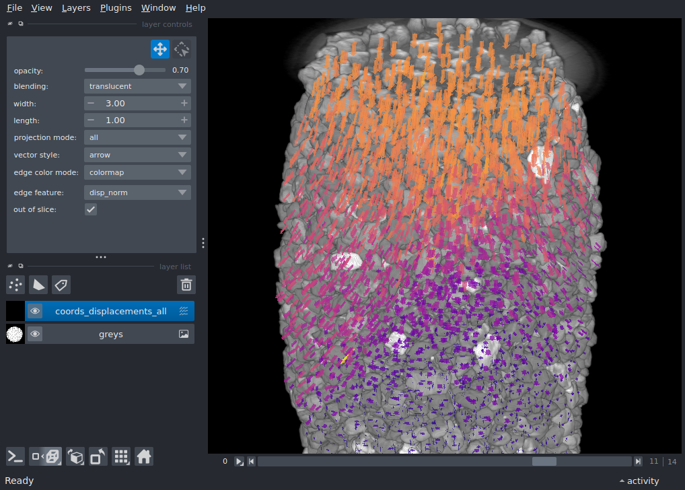

Note
Go to the end to download the full example as a Python script or as a Jupyter notebook.
3D vector field and image across time#
This example is from a mechanical test on a granular material, where multiple 3D volume have been acquired using x-ray tomography during axial loading. We have used [spam](https://www.spam-project.dev/) to label individual particles (with watershed and some tidying up manually), and these particles are tracked through time with 3D “discrete” volume correlation incrementally: t0 → t1 and then t1 → t2. Although we’re also measuring rotations (and strains), but here we’re interested to visualise the displacement field on top of the image to spot tracking errors.
import numpy as np
import pooch
import tifffile
import napari
Input data#
- Input data are therefore:
A series of 3D greyscale images
A series of measured transformations between subsequent pairs of images
We also have consistent labels through time which could also be visualised but are not here
Let’s download it!
grey_files = sorted(pooch.retrieve(
"doi:10.5281/zenodo.17668709/grey.zip",
known_hash="md5:760be2bad68366872111410776563760",
processor=pooch.Unzip(),
progressbar=True
))
# Load individual 3D images as a 4D with a list comprehension, skipping last one
# result is a T, Z, Y, X 16-bit array
greys = np.array([tifffile.imread(grey_file) for grey_file in grey_files[0:-1]])
# load incremental TSV tracking files from spam-ddic, [::2] is to skip VTK files also in folder
tracking_files = sorted(pooch.retrieve(
"doi:10.5281/zenodo.17668709/ddic.zip",
known_hash="md5:2d7c6a052f53b4a827ff4e4585644fac",
processor=pooch.Unzip(),
progressbar=True
))[::2]
0%| | 0.00/549M [00:00<?, ?B/s]
0%| | 12.3k/549M [00:00<1:56:46, 78.3kB/s]
0%| | 45.1k/549M [00:00<1:00:00, 152kB/s]
0%| | 93.2k/549M [00:00<41:30, 220kB/s]
0%| | 142k/549M [00:00<35:57, 254kB/s]
0%| | 244k/549M [00:00<23:18, 392kB/s]
0%| | 329k/549M [00:00<20:49, 439kB/s]
0%| | 434k/549M [00:01<17:57, 509kB/s]
0%| | 515k/549M [00:01<18:02, 506kB/s]
0%| | 597k/549M [00:01<17:59, 507kB/s]
0%| | 695k/549M [00:01<16:54, 540kB/s]
0%| | 810k/549M [00:01<15:23, 593kB/s]
0%| | 908k/549M [00:01<15:16, 597kB/s]
0%| | 1.05M/549M [00:02<13:10, 692kB/s]
0%| | 1.15M/549M [00:02<13:35, 671kB/s]
0%| | 1.27M/549M [00:02<13:21, 683kB/s]
0%| | 1.40M/549M [00:02<12:39, 721kB/s]
0%| | 1.55M/549M [00:02<11:42, 779kB/s]
0%| | 1.69M/549M [00:02<11:09, 817kB/s]
0%|▏ | 1.77M/549M [00:03<12:33, 726kB/s]
0%|▏ | 1.86M/549M [00:03<13:47, 661kB/s]
0%|▏ | 1.94M/549M [00:03<14:48, 615kB/s]
0%|▏ | 2.02M/549M [00:03<15:37, 583kB/s]
0%|▏ | 2.17M/549M [00:03<13:23, 680kB/s]
0%|▏ | 2.25M/549M [00:03<14:28, 629kB/s]
0%|▏ | 2.36M/549M [00:04<13:57, 652kB/s]
0%|▏ | 2.53M/549M [00:04<11:58, 760kB/s]
0%|▏ | 2.61M/549M [00:04<25:24, 358kB/s]
1%|▏ | 2.76M/549M [00:04<19:47, 459kB/s]
1%|▏ | 2.82M/549M [00:05<20:10, 451kB/s]
1%|▏ | 2.95M/549M [00:05<17:06, 532kB/s]
1%|▏ | 3.12M/549M [00:05<13:57, 651kB/s]
1%|▏ | 3.20M/549M [00:05<14:51, 612kB/s]
1%|▏ | 3.30M/549M [00:05<14:49, 613kB/s]
1%|▏ | 3.39M/549M [00:05<14:50, 612kB/s]
1%|▏ | 3.48M/549M [00:06<15:36, 582kB/s]
1%|▎ | 3.56M/549M [00:06<16:12, 560kB/s]
1%|▎ | 3.65M/549M [00:06<15:51, 573kB/s]
1%|▎ | 3.75M/549M [00:06<15:35, 582kB/s]
1%|▎ | 3.83M/549M [00:06<16:10, 561kB/s]
1%|▎ | 3.95M/549M [00:06<14:59, 605kB/s]
1%|▎ | 4.03M/549M [00:07<15:47, 575kB/s]
1%|▎ | 4.15M/549M [00:07<14:46, 614kB/s]
1%|▎ | 4.23M/549M [00:07<15:38, 580kB/s]
1%|▎ | 4.36M/549M [00:07<13:57, 649kB/s]
1%|▎ | 4.51M/549M [00:07<12:28, 727kB/s]
1%|▎ | 4.64M/549M [00:07<12:03, 752kB/s]
1%|▎ | 4.75M/549M [00:08<12:16, 739kB/s]
1%|▎ | 4.88M/549M [00:08<11:54, 761kB/s]
1%|▎ | 5.01M/549M [00:08<11:36, 780kB/s]
1%|▎ | 5.09M/549M [00:08<12:55, 701kB/s]
1%|▎ | 5.19M/549M [00:08<13:28, 672kB/s]
1%|▍ | 5.29M/549M [00:08<13:54, 651kB/s]
1%|▍ | 5.37M/549M [00:09<14:53, 608kB/s]
1%|▍ | 5.50M/549M [00:09<13:29, 671kB/s]
1%|▍ | 5.60M/549M [00:09<13:52, 652kB/s]
1%|▍ | 5.73M/549M [00:09<12:56, 699kB/s]
1%|▍ | 5.88M/549M [00:09<11:51, 763kB/s]
1%|▍ | 5.96M/549M [00:09<13:10, 686kB/s]
1%|▍ | 6.08M/549M [00:09<13:03, 693kB/s]
1%|▍ | 6.16M/549M [00:10<14:05, 642kB/s]
1%|▍ | 6.28M/549M [00:10<13:18, 679kB/s]
1%|▍ | 6.40M/549M [00:10<13:08, 688kB/s]
1%|▍ | 6.50M/549M [00:10<13:41, 660kB/s]
1%|▍ | 6.59M/549M [00:10<13:58, 646kB/s]
1%|▍ | 6.68M/549M [00:10<14:53, 606kB/s]
1%|▍ | 6.76M/549M [00:11<15:42, 575kB/s]
1%|▍ | 6.89M/549M [00:11<13:57, 647kB/s]
1%|▍ | 6.99M/549M [00:11<14:11, 636kB/s]
1%|▌ | 7.10M/549M [00:11<13:42, 658kB/s]
1%|▌ | 7.18M/549M [00:11<14:42, 613kB/s]
1%|▌ | 7.25M/549M [00:11<16:20, 552kB/s]
1%|▌ | 7.40M/549M [00:12<13:42, 658kB/s]
1%|▌ | 7.46M/549M [00:12<15:29, 582kB/s]
1%|▌ | 7.54M/549M [00:12<16:11, 557kB/s]
1%|▌ | 7.71M/549M [00:12<12:57, 695kB/s]
1%|▌ | 7.85M/549M [00:12<11:56, 755kB/s]
1%|▌ | 7.93M/549M [00:13<26:08, 345kB/s]
1%|▌ | 8.02M/549M [00:13<24:00, 375kB/s]
1%|▌ | 8.12M/549M [00:13<21:18, 423kB/s]
1%|▌ | 8.21M/549M [00:13<19:20, 466kB/s]
2%|▌ | 8.31M/549M [00:14<18:02, 499kB/s]
2%|▌ | 8.39M/549M [00:14<17:56, 502kB/s]
2%|▌ | 8.52M/549M [00:14<27:49, 323kB/s]
2%|▌ | 8.62M/549M [00:15<24:04, 374kB/s]
2%|▌ | 8.70M/549M [00:15<22:28, 400kB/s]
2%|▋ | 8.85M/549M [00:15<17:31, 513kB/s]
2%|▋ | 8.93M/549M [00:15<17:35, 511kB/s]
2%|▋ | 9.06M/549M [00:15<15:17, 588kB/s]
2%|▋ | 9.15M/549M [00:15<15:53, 566kB/s]
2%|▋ | 9.23M/549M [00:16<16:18, 551kB/s]
2%|▋ | 9.33M/549M [00:16<15:52, 566kB/s]
2%|▋ | 9.41M/549M [00:16<16:25, 547kB/s]
2%|▋ | 9.54M/549M [00:16<14:23, 624kB/s]
2%|▋ | 9.65M/549M [00:16<13:49, 650kB/s]
2%|▋ | 9.73M/549M [00:16<14:45, 608kB/s]
2%|▋ | 9.82M/549M [00:16<15:33, 577kB/s]
2%|▋ | 9.91M/549M [00:17<15:22, 584kB/s]
2%|▋ | 10.0M/549M [00:17<15:10, 591kB/s]
2%|▋ | 10.1M/549M [00:17<15:02, 596kB/s]
2%|▋ | 10.2M/549M [00:17<15:42, 571kB/s]
2%|▋ | 10.3M/549M [00:17<13:54, 645kB/s]
2%|▋ | 10.4M/549M [00:17<14:53, 602kB/s]
2%|▋ | 10.5M/549M [00:18<13:25, 668kB/s]
2%|▊ | 10.6M/549M [00:18<14:27, 620kB/s]
2%|▊ | 10.7M/549M [00:18<13:12, 678kB/s]
2%|▊ | 10.9M/549M [00:18<12:59, 690kB/s]
2%|▊ | 11.0M/549M [00:18<12:20, 726kB/s]
2%|▊ | 11.1M/549M [00:18<12:24, 722kB/s]
2%|▊ | 11.2M/549M [00:19<11:57, 748kB/s]
2%|▊ | 11.3M/549M [00:19<13:14, 676kB/s]
2%|▊ | 11.4M/549M [00:19<13:36, 658kB/s]
2%|▊ | 11.5M/549M [00:19<13:49, 647kB/s]
2%|▊ | 11.6M/549M [00:19<14:44, 607kB/s]
2%|▊ | 11.7M/549M [00:19<14:59, 597kB/s]
2%|▊ | 11.8M/549M [00:20<14:10, 631kB/s]
2%|▊ | 11.9M/549M [00:20<13:30, 662kB/s]
2%|▊ | 12.0M/549M [00:20<14:01, 637kB/s]
2%|▊ | 12.1M/549M [00:20<15:19, 583kB/s]
2%|▊ | 12.2M/549M [00:20<14:37, 611kB/s]
2%|▉ | 12.3M/549M [00:20<14:08, 632kB/s]
2%|▉ | 12.4M/549M [00:20<15:01, 595kB/s]
2%|▉ | 12.5M/549M [00:21<13:10, 678kB/s]
2%|▉ | 12.6M/549M [00:21<13:37, 655kB/s]
2%|▉ | 12.7M/549M [00:21<13:07, 680kB/s]
2%|▉ | 12.8M/549M [00:21<14:13, 628kB/s]
2%|▉ | 13.0M/549M [00:21<12:49, 696kB/s]
2%|▉ | 13.1M/549M [00:21<12:15, 728kB/s]
2%|▉ | 13.2M/549M [00:22<13:28, 662kB/s]
2%|▉ | 13.3M/549M [00:22<13:20, 668kB/s]
2%|▉ | 13.4M/549M [00:22<14:18, 623kB/s]
2%|▉ | 13.5M/549M [00:22<13:21, 668kB/s]
2%|▉ | 13.6M/549M [00:22<12:00, 742kB/s]
3%|▉ | 13.8M/549M [00:22<12:19, 724kB/s]
3%|▉ | 13.8M/549M [00:23<13:50, 644kB/s]
3%|▉ | 13.9M/549M [00:23<15:12, 586kB/s]
3%|▉ | 14.0M/549M [00:23<13:30, 659kB/s]
3%|█ | 14.1M/549M [00:23<13:41, 651kB/s]
3%|█ | 14.2M/549M [00:23<14:39, 608kB/s]
3%|█ | 14.3M/549M [00:23<15:03, 591kB/s]
3%|█ | 14.4M/549M [00:24<16:13, 549kB/s]
3%|█ | 14.5M/549M [00:24<15:41, 567kB/s]
3%|█ | 14.6M/549M [00:24<15:52, 560kB/s]
3%|█ | 14.7M/549M [00:24<13:20, 667kB/s]
3%|█ | 14.8M/549M [00:24<12:29, 712kB/s]
3%|█ | 14.9M/549M [00:24<13:40, 650kB/s]
3%|█ | 15.0M/549M [00:25<13:55, 639kB/s]
3%|█ | 15.1M/549M [00:25<14:20, 620kB/s]
3%|█ | 15.2M/549M [00:25<14:21, 619kB/s]
3%|█ | 15.3M/549M [00:25<14:04, 631kB/s]
3%|█ | 15.5M/549M [00:25<12:23, 717kB/s]
3%|█ | 15.6M/549M [00:25<12:24, 716kB/s]
3%|█ | 15.7M/549M [00:25<11:26, 776kB/s]
3%|█▏ | 15.8M/549M [00:26<11:40, 761kB/s]
3%|█▏ | 16.0M/549M [00:26<11:44, 755kB/s]
3%|█▏ | 16.1M/549M [00:26<12:42, 698kB/s]
3%|█▏ | 16.2M/549M [00:26<11:11, 793kB/s]
3%|█▏ | 16.3M/549M [00:26<12:13, 726kB/s]
3%|█▏ | 16.4M/549M [00:26<11:52, 747kB/s]
3%|█▏ | 16.5M/549M [00:27<12:41, 699kB/s]
3%|█▏ | 16.7M/549M [00:27<12:22, 717kB/s]
3%|█▏ | 16.7M/549M [00:27<13:34, 653kB/s]
3%|█▏ | 16.8M/549M [00:27<14:19, 618kB/s]
3%|█▏ | 16.9M/549M [00:27<13:19, 665kB/s]
3%|█▏ | 17.1M/549M [00:27<12:19, 719kB/s]
3%|█▏ | 17.2M/549M [00:28<12:54, 686kB/s]
3%|█▏ | 17.3M/549M [00:28<11:54, 743kB/s]
3%|█▏ | 17.4M/549M [00:28<13:26, 658kB/s]
3%|█▏ | 17.5M/549M [00:28<13:45, 643kB/s]
3%|█▎ | 17.6M/549M [00:28<13:54, 636kB/s]
3%|█▎ | 17.7M/549M [00:28<12:21, 716kB/s]
3%|█▎ | 17.9M/549M [00:29<11:17, 783kB/s]
3%|█▎ | 18.0M/549M [00:29<12:46, 692kB/s]
3%|█▎ | 18.1M/549M [00:29<12:23, 713kB/s]
3%|█▎ | 18.2M/549M [00:29<13:24, 659kB/s]
3%|█▎ | 18.2M/549M [00:29<14:23, 614kB/s]
3%|█▎ | 18.3M/549M [00:29<15:13, 581kB/s]
3%|█▎ | 18.4M/549M [00:29<14:54, 592kB/s]
3%|█▎ | 18.5M/549M [00:30<14:05, 627kB/s]
3%|█▎ | 18.7M/549M [00:30<13:33, 651kB/s]
3%|█▎ | 18.8M/549M [00:30<13:44, 642kB/s]
3%|█▎ | 18.9M/549M [00:30<13:17, 664kB/s]
3%|█▎ | 19.0M/549M [00:30<14:18, 617kB/s]
3%|█▎ | 19.1M/549M [00:30<13:04, 675kB/s]
4%|█▎ | 19.2M/549M [00:31<11:19, 778kB/s]
4%|█▍ | 19.4M/549M [00:31<11:10, 790kB/s]
4%|█▍ | 19.5M/549M [00:31<12:29, 706kB/s]
4%|█▍ | 19.6M/549M [00:31<13:03, 675kB/s]
4%|█▍ | 19.7M/549M [00:31<10:53, 809kB/s]
4%|█▍ | 19.9M/549M [00:31<10:29, 839kB/s]
4%|█▍ | 20.0M/549M [00:32<11:49, 744kB/s]
4%|█▍ | 20.1M/549M [00:32<11:36, 759kB/s]
4%|█▍ | 20.2M/549M [00:32<11:49, 744kB/s]
4%|█▍ | 20.3M/549M [00:32<12:30, 704kB/s]
4%|█▍ | 20.4M/549M [00:32<13:00, 677kB/s]
4%|█▍ | 20.5M/549M [00:32<14:02, 627kB/s]
4%|█▍ | 20.6M/549M [00:33<12:55, 680kB/s]
4%|█▍ | 20.7M/549M [00:33<14:00, 628kB/s]
4%|█▍ | 20.8M/549M [00:33<14:47, 594kB/s]
4%|█▍ | 20.9M/549M [00:33<15:28, 569kB/s]
4%|█▍ | 21.0M/549M [00:33<15:08, 581kB/s]
4%|█▌ | 21.1M/549M [00:33<12:53, 682kB/s]
4%|█▌ | 21.2M/549M [00:34<13:20, 659kB/s]
4%|█▌ | 21.3M/549M [00:34<13:00, 676kB/s]
4%|█▌ | 21.4M/549M [00:34<13:23, 656kB/s]
4%|█▌ | 21.5M/549M [00:34<13:04, 672kB/s]
4%|█▌ | 21.7M/549M [00:34<12:47, 687kB/s]
4%|█▌ | 21.7M/549M [00:34<13:17, 660kB/s]
4%|█▌ | 21.8M/549M [00:34<13:36, 645kB/s]
4%|█▌ | 22.0M/549M [00:35<13:11, 666kB/s]
4%|█▌ | 22.0M/549M [00:35<14:12, 617kB/s]
4%|█▌ | 22.2M/549M [00:35<13:35, 645kB/s]
4%|█▌ | 22.2M/549M [00:35<14:33, 602kB/s]
4%|█▌ | 22.4M/549M [00:35<13:09, 666kB/s]
4%|█▌ | 22.5M/549M [00:35<12:57, 677kB/s]
4%|█▌ | 22.6M/549M [00:36<13:16, 660kB/s]
4%|█▌ | 22.7M/549M [00:36<13:35, 644kB/s]
4%|█▌ | 22.8M/549M [00:36<14:35, 601kB/s]
4%|█▌ | 22.8M/549M [00:36<15:18, 572kB/s]
4%|█▋ | 22.9M/549M [00:36<15:48, 554kB/s]
4%|█▋ | 23.0M/549M [00:36<15:21, 570kB/s]
4%|█▋ | 23.1M/549M [00:37<15:02, 582kB/s]
4%|█▋ | 23.2M/549M [00:37<15:35, 562kB/s]
4%|█▋ | 23.3M/549M [00:37<14:28, 604kB/s]
4%|█▋ | 23.4M/549M [00:38<27:37, 317kB/s]
4%|█▋ | 23.5M/549M [00:38<23:34, 371kB/s]
4%|█▋ | 23.6M/549M [00:38<21:55, 399kB/s]
4%|█▋ | 23.7M/549M [00:38<18:35, 471kB/s]
4%|█▋ | 23.8M/549M [00:38<16:30, 529kB/s]
4%|█▋ | 24.0M/549M [00:38<14:29, 603kB/s]
4%|█▋ | 24.1M/549M [00:39<13:50, 631kB/s]
4%|█▋ | 24.2M/549M [00:39<13:56, 627kB/s]
4%|█▋ | 24.3M/549M [00:39<14:43, 594kB/s]
4%|█▋ | 24.3M/549M [00:39<14:37, 597kB/s]
4%|█▋ | 24.5M/549M [00:39<13:49, 632kB/s]
4%|█▋ | 24.6M/549M [00:39<12:43, 686kB/s]
4%|█▊ | 24.7M/549M [00:39<13:47, 633kB/s]
5%|█▊ | 24.8M/549M [00:40<12:38, 690kB/s]
5%|█▊ | 24.9M/549M [00:40<13:08, 664kB/s]
5%|█▊ | 25.0M/549M [00:40<12:51, 678kB/s]
5%|█▊ | 25.2M/549M [00:40<11:39, 748kB/s]
5%|█▊ | 25.3M/549M [00:40<11:20, 769kB/s]
5%|█▊ | 25.4M/549M [00:40<11:37, 750kB/s]
5%|█▊ | 25.5M/549M [00:41<12:50, 678kB/s]
5%|█▊ | 25.6M/549M [00:41<12:07, 719kB/s]
5%|█▊ | 25.7M/549M [00:41<13:16, 656kB/s]
5%|█▊ | 25.8M/549M [00:42<27:13, 320kB/s]
5%|█▊ | 25.9M/549M [00:42<22:19, 390kB/s]
5%|█▊ | 26.0M/549M [00:42<21:00, 415kB/s]
5%|█▊ | 26.1M/549M [00:42<18:53, 461kB/s]
5%|█▊ | 26.2M/549M [00:42<18:23, 473kB/s]
5%|█▊ | 26.3M/549M [00:42<14:48, 588kB/s]
5%|█▉ | 26.4M/549M [00:43<15:17, 569kB/s]
5%|█▉ | 26.5M/549M [00:43<14:19, 607kB/s]
5%|█▉ | 26.6M/549M [00:43<15:00, 580kB/s]
5%|█▉ | 26.7M/549M [00:43<14:01, 620kB/s]
5%|█▉ | 26.8M/549M [00:43<14:05, 617kB/s]
5%|█▉ | 26.9M/549M [00:43<12:51, 676kB/s]
5%|█▉ | 27.0M/549M [00:44<13:16, 655kB/s]
5%|█▉ | 27.1M/549M [00:44<14:11, 612kB/s]
5%|█▉ | 27.2M/549M [00:44<14:13, 611kB/s]
5%|█▉ | 27.3M/549M [00:44<14:53, 583kB/s]
5%|█▉ | 27.4M/549M [00:44<14:41, 591kB/s]
5%|█▉ | 27.5M/549M [00:44<12:37, 687kB/s]
5%|█▉ | 27.7M/549M [00:44<10:36, 818kB/s]
5%|█▉ | 27.8M/549M [00:45<11:54, 728kB/s]
5%|█▉ | 27.9M/549M [00:45<13:09, 660kB/s]
5%|█▉ | 28.0M/549M [00:45<12:50, 676kB/s]
5%|█▉ | 28.1M/549M [00:45<12:39, 685kB/s]
5%|██ | 28.2M/549M [00:45<13:42, 633kB/s]
5%|██ | 28.3M/549M [00:45<13:12, 657kB/s]
5%|██ | 28.4M/549M [00:46<12:19, 704kB/s]
5%|██ | 28.5M/549M [00:46<13:26, 645kB/s]
5%|██ | 28.6M/549M [00:46<13:40, 633kB/s]
5%|██ | 28.7M/549M [00:46<13:10, 658kB/s]
5%|██ | 28.8M/549M [00:46<14:09, 612kB/s]
5%|██ | 29.0M/549M [00:46<12:15, 706kB/s]
5%|██ | 29.0M/549M [00:47<13:24, 646kB/s]
5%|██ | 29.1M/549M [00:47<13:37, 635kB/s]
5%|██ | 29.2M/549M [00:47<14:27, 599kB/s]
5%|██ | 29.3M/549M [00:47<13:34, 638kB/s]
5%|██ | 29.4M/549M [00:47<14:24, 601kB/s]
5%|██ | 29.5M/549M [00:47<14:21, 602kB/s]
5%|██ | 29.6M/549M [00:48<15:03, 574kB/s]
5%|██ | 29.7M/549M [00:48<12:50, 673kB/s]
5%|██ | 29.8M/549M [00:48<13:51, 624kB/s]
5%|██▏ | 29.9M/549M [00:48<13:57, 619kB/s]
5%|██▏ | 30.0M/549M [00:48<14:44, 586kB/s]
6%|██▏ | 30.2M/549M [00:48<11:37, 743kB/s]
6%|██▏ | 30.3M/549M [00:48<12:50, 673kB/s]
6%|██▏ | 30.4M/549M [00:49<12:38, 683kB/s]
6%|██▏ | 30.5M/549M [00:49<13:01, 662kB/s]
6%|██▏ | 30.7M/549M [00:49<10:23, 830kB/s]
6%|██▏ | 30.8M/549M [00:49<11:42, 737kB/s]
6%|██▏ | 30.8M/549M [00:49<12:58, 665kB/s]
6%|██▏ | 31.0M/549M [00:49<12:40, 680kB/s]
6%|██▏ | 31.0M/549M [00:50<13:43, 628kB/s]
6%|██▏ | 31.2M/549M [00:50<13:09, 655kB/s]
6%|██▏ | 31.2M/549M [00:50<25:38, 336kB/s]
6%|██▏ | 31.3M/549M [00:51<23:24, 368kB/s]
6%|██▏ | 31.4M/549M [00:51<21:40, 398kB/s]
6%|██▏ | 31.5M/549M [00:51<19:18, 446kB/s]
6%|██▏ | 31.6M/549M [00:51<18:40, 461kB/s]
6%|██▎ | 31.7M/549M [00:51<17:11, 501kB/s]
6%|██▎ | 31.8M/549M [00:51<16:15, 530kB/s]
6%|██▎ | 31.9M/549M [00:52<15:35, 552kB/s]
6%|██▎ | 32.0M/549M [00:52<13:44, 627kB/s]
6%|██▎ | 32.1M/549M [00:52<13:10, 653kB/s]
6%|██▎ | 32.3M/549M [00:52<11:48, 729kB/s]
6%|██▎ | 32.4M/549M [00:52<12:25, 692kB/s]
6%|██▎ | 32.5M/549M [00:52<11:20, 758kB/s]
6%|██▎ | 32.6M/549M [00:53<12:45, 674kB/s]
6%|██▎ | 32.7M/549M [00:53<13:15, 649kB/s]
6%|██▎ | 32.8M/549M [00:53<14:11, 605kB/s]
6%|██▎ | 32.9M/549M [00:53<13:30, 636kB/s]
6%|██▎ | 33.0M/549M [00:53<12:30, 686kB/s]
6%|██▎ | 33.2M/549M [00:53<11:24, 753kB/s]
6%|██▎ | 33.3M/549M [00:53<12:39, 679kB/s]
6%|██▎ | 33.4M/549M [00:54<13:03, 658kB/s]
6%|██▍ | 33.4M/549M [00:54<14:00, 613kB/s]
6%|██▍ | 33.5M/549M [00:54<14:05, 609kB/s]
6%|██▍ | 33.6M/549M [00:54<14:06, 608kB/s]
6%|██▍ | 33.7M/549M [00:54<14:50, 578kB/s]
6%|██▍ | 33.8M/549M [00:54<13:52, 618kB/s]
6%|██▍ | 33.9M/549M [00:55<13:56, 615kB/s]
6%|██▍ | 34.0M/549M [00:55<13:20, 642kB/s]
6%|██▍ | 34.2M/549M [00:55<12:21, 693kB/s]
6%|██▍ | 34.3M/549M [00:55<13:25, 638kB/s]
6%|██▍ | 34.4M/549M [00:55<12:23, 691kB/s]
6%|██▍ | 34.5M/549M [00:55<13:27, 636kB/s]
6%|██▍ | 34.6M/549M [00:56<13:44, 624kB/s]
6%|██▍ | 34.7M/549M [00:56<12:55, 663kB/s]
6%|██▍ | 34.9M/549M [00:56<10:17, 832kB/s]
6%|██▍ | 35.0M/549M [00:56<10:24, 822kB/s]
6%|██▍ | 35.1M/549M [00:56<11:43, 730kB/s]
6%|██▌ | 35.2M/549M [00:56<12:34, 681kB/s]
6%|██▌ | 35.3M/549M [00:57<12:05, 707kB/s]
6%|██▌ | 35.4M/549M [00:57<12:39, 676kB/s]
6%|██▌ | 35.5M/549M [00:57<12:39, 676kB/s]
6%|██▌ | 35.6M/549M [00:57<13:03, 655kB/s]
7%|██▌ | 35.7M/549M [00:57<12:29, 684kB/s]
7%|██▌ | 35.8M/549M [00:57<13:34, 630kB/s]
7%|██▌ | 35.9M/549M [00:58<13:50, 617kB/s]
7%|██▌ | 36.0M/549M [00:58<13:51, 616kB/s]
7%|██▌ | 36.1M/549M [00:58<14:38, 583kB/s]
7%|██▌ | 36.2M/549M [00:58<12:47, 668kB/s]
7%|██▌ | 36.3M/549M [00:58<13:47, 619kB/s]
7%|██▌ | 36.4M/549M [00:58<14:36, 584kB/s]
7%|██▌ | 36.5M/549M [00:58<14:26, 591kB/s]
7%|██▌ | 36.6M/549M [00:59<12:59, 657kB/s]
7%|██▌ | 36.7M/549M [00:59<13:16, 643kB/s]
7%|██▌ | 36.8M/549M [00:59<14:09, 602kB/s]
7%|██▌ | 36.9M/549M [00:59<14:55, 571kB/s]
7%|██▋ | 37.0M/549M [00:59<13:07, 649kB/s]
7%|██▋ | 37.1M/549M [00:59<13:20, 639kB/s]
7%|██▋ | 37.2M/549M [01:00<13:46, 619kB/s]
7%|██▋ | 37.4M/549M [01:00<11:51, 718kB/s]
7%|██▋ | 37.5M/549M [01:00<12:24, 687kB/s]
7%|██▋ | 37.5M/549M [01:00<13:53, 613kB/s]
7%|██▋ | 37.6M/549M [01:00<13:52, 614kB/s]
7%|██▋ | 37.7M/549M [01:00<14:35, 583kB/s]
7%|██▋ | 37.8M/549M [01:01<14:38, 581kB/s]
7%|██▋ | 37.9M/549M [01:01<13:04, 651kB/s]
7%|██▋ | 38.0M/549M [01:01<14:42, 579kB/s]
7%|██▋ | 38.1M/549M [01:01<15:17, 556kB/s]
7%|██▋ | 38.2M/549M [01:01<14:52, 572kB/s]
7%|██▋ | 38.3M/549M [01:01<15:21, 554kB/s]
7%|██▋ | 38.4M/549M [01:02<14:54, 570kB/s]
7%|██▋ | 38.5M/549M [01:02<13:56, 609kB/s]
7%|██▋ | 38.6M/549M [01:02<12:07, 701kB/s]
7%|██▊ | 38.7M/549M [01:02<11:34, 734kB/s]
7%|██▊ | 38.8M/549M [01:02<13:02, 651kB/s]
7%|██▊ | 38.9M/549M [01:02<12:55, 657kB/s]
7%|██▊ | 39.0M/549M [01:03<12:42, 669kB/s]
7%|██▊ | 39.2M/549M [01:03<12:10, 697kB/s]
7%|██▊ | 39.3M/549M [01:03<12:42, 668kB/s]
7%|██▊ | 39.3M/549M [01:03<13:39, 621kB/s]
7%|██▊ | 39.5M/549M [01:03<12:51, 660kB/s]
7%|██▊ | 39.6M/549M [01:03<11:53, 714kB/s]
7%|██▊ | 39.7M/549M [01:03<12:12, 695kB/s]
7%|██▊ | 39.8M/549M [01:04<13:15, 639kB/s]
7%|██▊ | 39.9M/549M [01:04<13:37, 622kB/s]
7%|██▊ | 40.0M/549M [01:04<12:29, 679kB/s]
7%|██▊ | 40.1M/549M [01:04<11:40, 726kB/s]
7%|██▊ | 40.2M/549M [01:05<24:33, 345kB/s]
7%|██▊ | 40.4M/549M [01:05<18:53, 448kB/s]
7%|██▉ | 40.5M/549M [01:05<17:36, 481kB/s]
7%|██▉ | 40.5M/549M [01:05<17:22, 487kB/s]
7%|██▉ | 40.6M/549M [01:05<16:21, 517kB/s]
7%|██▉ | 40.7M/549M [01:06<16:30, 512kB/s]
7%|██▉ | 40.9M/549M [01:06<14:15, 593kB/s]
7%|██▉ | 41.0M/549M [01:06<13:29, 627kB/s]
7%|██▉ | 41.0M/549M [01:06<14:57, 565kB/s]
8%|██▉ | 41.2M/549M [01:06<12:43, 664kB/s]
8%|██▉ | 41.3M/549M [01:06<13:42, 617kB/s]
8%|██▉ | 41.3M/549M [01:07<14:28, 584kB/s]
8%|██▉ | 41.5M/549M [01:07<12:24, 681kB/s]
8%|██▉ | 41.6M/549M [01:07<12:49, 658kB/s]
8%|██▉ | 41.7M/549M [01:07<13:09, 642kB/s]
8%|██▉ | 41.8M/549M [01:07<12:45, 662kB/s]
8%|██▉ | 41.9M/549M [01:07<13:42, 616kB/s]
8%|██▉ | 42.0M/549M [01:08<13:03, 647kB/s]
8%|██▉ | 42.1M/549M [01:08<13:17, 635kB/s]
8%|███ | 42.2M/549M [01:08<25:37, 329kB/s]
8%|███ | 42.3M/549M [01:08<22:08, 381kB/s]
8%|███ | 42.4M/549M [01:09<18:46, 449kB/s]
8%|███ | 42.6M/549M [01:09<15:10, 556kB/s]
8%|███ | 42.7M/549M [01:09<14:49, 569kB/s]
8%|███ | 42.8M/549M [01:09<14:29, 581kB/s]
8%|███ | 42.8M/549M [01:09<15:04, 559kB/s]
8%|███ | 43.0M/549M [01:09<12:47, 659kB/s]
8%|███ | 43.1M/549M [01:10<13:40, 616kB/s]
8%|███ | 43.2M/549M [01:10<13:42, 614kB/s]
8%|███ | 43.2M/549M [01:10<14:25, 584kB/s]
8%|███ | 43.4M/549M [01:10<12:22, 680kB/s]
8%|███ | 43.5M/549M [01:10<11:12, 751kB/s]
8%|███ | 43.7M/549M [01:10<11:22, 740kB/s]
8%|███ | 43.8M/549M [01:11<12:00, 701kB/s]
8%|███ | 43.9M/549M [01:11<10:41, 786kB/s]
8%|███▏ | 44.0M/549M [01:11<11:23, 738kB/s]
8%|███▏ | 44.1M/549M [01:11<11:48, 711kB/s]
8%|███▏ | 44.3M/549M [01:11<09:58, 842kB/s]
8%|███▏ | 44.4M/549M [01:11<09:53, 849kB/s]
8%|███▏ | 44.5M/549M [01:12<11:11, 751kB/s]
8%|███▏ | 44.6M/549M [01:12<12:01, 698kB/s]
8%|███▏ | 44.7M/549M [01:12<12:29, 672kB/s]
8%|███▏ | 44.9M/549M [01:12<10:53, 771kB/s]
8%|███▏ | 45.0M/549M [01:12<11:35, 724kB/s]
8%|███▏ | 45.1M/549M [01:12<11:37, 722kB/s]
8%|███▏ | 45.2M/549M [01:13<10:43, 782kB/s]
8%|███▏ | 45.3M/549M [01:13<12:00, 698kB/s]
8%|███▏ | 45.4M/549M [01:13<13:05, 640kB/s]
8%|███▏ | 45.5M/549M [01:13<13:17, 630kB/s]
8%|███▏ | 45.6M/549M [01:13<14:08, 593kB/s]
8%|███▏ | 45.7M/549M [01:13<14:02, 597kB/s]
8%|███▎ | 45.8M/549M [01:13<13:56, 601kB/s]
8%|███▎ | 45.9M/549M [01:14<14:42, 570kB/s]
8%|███▎ | 46.0M/549M [01:14<14:24, 581kB/s]
8%|███▎ | 46.0M/549M [01:14<14:37, 573kB/s]
8%|███▎ | 46.1M/549M [01:14<14:21, 583kB/s]
8%|███▎ | 46.2M/549M [01:14<14:56, 560kB/s]
8%|███▎ | 46.4M/549M [01:14<11:30, 728kB/s]
8%|███▎ | 46.5M/549M [01:15<12:38, 662kB/s]
8%|███▎ | 46.6M/549M [01:15<26:01, 321kB/s]
9%|███▎ | 46.7M/549M [01:15<22:23, 373kB/s]
9%|███▎ | 46.8M/549M [01:16<17:19, 482kB/s]
9%|███▎ | 46.9M/549M [01:16<16:23, 510kB/s]
9%|███▎ | 47.0M/549M [01:16<16:23, 510kB/s]
9%|███▎ | 47.1M/549M [01:16<15:36, 536kB/s]
9%|███▎ | 47.2M/549M [01:16<13:41, 611kB/s]
9%|███▎ | 47.3M/549M [01:16<14:19, 583kB/s]
9%|███▎ | 47.4M/549M [01:17<14:53, 561kB/s]
9%|███▍ | 47.5M/549M [01:17<14:31, 575kB/s]
9%|███▍ | 47.6M/549M [01:17<15:06, 553kB/s]
9%|███▍ | 47.7M/549M [01:17<12:37, 661kB/s]
9%|███▍ | 47.8M/549M [01:17<12:56, 645kB/s]
9%|███▍ | 47.9M/549M [01:17<13:47, 605kB/s]
9%|███▍ | 48.0M/549M [01:18<13:49, 603kB/s]
9%|███▍ | 48.1M/549M [01:18<12:00, 695kB/s]
9%|███▍ | 48.2M/549M [01:18<13:03, 639kB/s]
9%|███▍ | 48.3M/549M [01:18<13:54, 600kB/s]
9%|███▍ | 48.4M/549M [01:18<14:34, 572kB/s]
9%|███▍ | 48.5M/549M [01:18<15:08, 550kB/s]
9%|███▍ | 48.6M/549M [01:18<14:38, 569kB/s]
9%|███▍ | 48.7M/549M [01:19<13:36, 612kB/s]
9%|███▍ | 48.8M/549M [01:19<12:23, 672kB/s]
9%|███▍ | 48.9M/549M [01:19<12:09, 685kB/s]
9%|███▍ | 49.0M/549M [01:19<13:12, 630kB/s]
9%|███▍ | 49.1M/549M [01:19<14:02, 593kB/s]
9%|███▍ | 49.2M/549M [01:19<13:55, 598kB/s]
9%|███▌ | 49.3M/549M [01:20<11:59, 694kB/s]
9%|███▌ | 49.4M/549M [01:20<12:27, 667kB/s]
9%|███▌ | 49.5M/549M [01:20<13:29, 616kB/s]
9%|███▌ | 49.6M/549M [01:20<12:56, 642kB/s]
9%|███▌ | 49.8M/549M [01:20<11:58, 694kB/s]
9%|███▌ | 49.9M/549M [01:20<12:26, 668kB/s]
9%|███▌ | 49.9M/549M [01:21<13:26, 619kB/s]
9%|███▌ | 50.0M/549M [01:21<15:02, 553kB/s]
9%|███▌ | 50.1M/549M [01:21<14:35, 569kB/s]
9%|███▌ | 50.2M/549M [01:21<14:18, 580kB/s]
9%|███▌ | 50.3M/549M [01:21<12:46, 650kB/s]
9%|███▌ | 50.5M/549M [01:21<10:06, 821kB/s]
9%|███▌ | 50.6M/549M [01:22<11:22, 729kB/s]
9%|███▌ | 50.8M/549M [01:22<10:13, 812kB/s]
9%|███▌ | 50.9M/549M [01:22<10:35, 784kB/s]
9%|███▋ | 51.0M/549M [01:22<10:51, 763kB/s]
9%|███▋ | 51.1M/549M [01:22<10:43, 773kB/s]
9%|███▋ | 51.2M/549M [01:22<11:27, 723kB/s]
9%|███▋ | 51.3M/549M [01:23<11:30, 720kB/s]
9%|███▋ | 51.4M/549M [01:23<22:57, 361kB/s]
9%|███▋ | 51.5M/549M [01:23<21:19, 388kB/s]
9%|███▋ | 51.6M/549M [01:23<19:06, 433kB/s]
9%|███▋ | 51.7M/549M [01:24<17:26, 475kB/s]
9%|███▋ | 51.8M/549M [01:24<16:15, 509kB/s]
9%|███▋ | 51.9M/549M [01:24<14:03, 589kB/s]
9%|███▋ | 52.1M/549M [01:24<13:18, 622kB/s]
10%|███▋ | 52.1M/549M [01:24<14:03, 589kB/s]
10%|███▋ | 52.3M/549M [01:24<12:41, 652kB/s]
10%|███▋ | 52.4M/549M [01:25<12:55, 640kB/s]
10%|███▋ | 52.5M/549M [01:25<13:08, 629kB/s]
10%|███▋ | 52.6M/549M [01:25<13:54, 594kB/s]
10%|███▋ | 52.7M/549M [01:26<22:54, 361kB/s]
10%|███▊ | 52.8M/549M [01:26<21:20, 387kB/s]
10%|███▊ | 52.9M/549M [01:26<17:23, 475kB/s]
10%|███▊ | 53.0M/549M [01:26<17:08, 482kB/s]
10%|███▊ | 53.1M/549M [01:26<16:05, 513kB/s]
10%|███▊ | 53.2M/549M [01:26<16:10, 510kB/s]
10%|███▊ | 53.3M/549M [01:27<15:21, 538kB/s]
10%|███▊ | 53.4M/549M [01:27<14:48, 557kB/s]
10%|███▊ | 53.5M/549M [01:27<14:24, 573kB/s]
10%|███▊ | 53.6M/549M [01:27<14:06, 584kB/s]
10%|███▊ | 53.7M/549M [01:27<14:41, 561kB/s]
10%|███▊ | 53.7M/549M [01:27<15:05, 546kB/s]
10%|███▊ | 53.8M/549M [01:28<15:24, 535kB/s]
10%|███▊ | 53.9M/549M [01:28<14:47, 557kB/s]
10%|███▊ | 54.0M/549M [01:28<15:12, 542kB/s]
10%|███▊ | 54.1M/549M [01:28<14:38, 563kB/s]
10%|███▊ | 54.2M/549M [01:28<13:35, 606kB/s]
10%|███▊ | 54.3M/549M [01:28<12:55, 638kB/s]
10%|███▊ | 54.4M/549M [01:28<13:39, 603kB/s]
10%|███▉ | 54.5M/549M [01:29<13:37, 604kB/s]
10%|███▉ | 54.6M/549M [01:29<14:18, 575kB/s]
10%|███▉ | 54.7M/549M [01:29<14:05, 584kB/s]
10%|███▉ | 54.8M/549M [01:29<12:37, 651kB/s]
10%|███▉ | 54.9M/549M [01:29<12:51, 640kB/s]
10%|███▉ | 55.0M/549M [01:29<13:03, 630kB/s]
10%|███▉ | 55.1M/549M [01:30<13:28, 610kB/s]
10%|███▉ | 55.2M/549M [01:30<12:04, 681kB/s]
10%|███▉ | 55.3M/549M [01:30<12:15, 671kB/s]
10%|███▉ | 55.5M/549M [01:30<11:33, 711kB/s]
10%|███▉ | 55.6M/549M [01:30<11:34, 710kB/s]
10%|███▉ | 55.7M/549M [01:30<12:04, 680kB/s]
10%|███▉ | 55.8M/549M [01:31<12:14, 671kB/s]
10%|███▉ | 55.9M/549M [01:31<13:00, 631kB/s]
10%|███▉ | 56.0M/549M [01:31<11:30, 713kB/s]
10%|███▉ | 56.1M/549M [01:31<12:34, 652kB/s]
10%|███▉ | 56.2M/549M [01:31<12:52, 638kB/s]
10%|████ | 56.3M/549M [01:31<13:23, 613kB/s]
10%|████ | 56.4M/549M [01:32<11:33, 710kB/s]
10%|████ | 56.5M/549M [01:32<11:33, 710kB/s]
10%|████ | 56.6M/549M [01:32<12:05, 678kB/s]
10%|████ | 56.7M/549M [01:32<13:05, 626kB/s]
10%|████ | 56.8M/549M [01:32<13:13, 619kB/s]
10%|████ | 56.9M/549M [01:32<13:17, 617kB/s]
10%|████ | 57.0M/549M [01:33<14:03, 583kB/s]
10%|████ | 57.1M/549M [01:33<14:35, 562kB/s]
10%|████ | 57.2M/549M [01:33<13:34, 603kB/s]
10%|████ | 57.3M/549M [01:33<13:31, 605kB/s]
10%|████ | 57.4M/549M [01:33<14:21, 570kB/s]
10%|████ | 57.5M/549M [01:33<13:31, 605kB/s]
10%|████ | 57.6M/549M [01:33<13:54, 589kB/s]
11%|████ | 57.7M/549M [01:34<14:32, 562kB/s]
11%|████ | 57.8M/549M [01:34<13:41, 598kB/s]
11%|████ | 57.9M/549M [01:34<12:10, 671kB/s]
11%|████ | 58.0M/549M [01:34<12:31, 653kB/s]
11%|████▏ | 58.1M/549M [01:34<13:16, 616kB/s]
11%|████▏ | 58.2M/549M [01:34<13:20, 613kB/s]
11%|████▏ | 58.3M/549M [01:35<13:13, 618kB/s]
11%|████▏ | 58.4M/549M [01:35<12:04, 677kB/s]
11%|████▏ | 58.6M/549M [01:35<11:10, 731kB/s]
11%|████▏ | 58.6M/549M [01:35<12:29, 653kB/s]
11%|████▏ | 58.7M/549M [01:35<13:51, 589kB/s]
11%|████▏ | 58.8M/549M [01:35<13:56, 585kB/s]
11%|████▏ | 58.9M/549M [01:36<13:35, 600kB/s]
11%|████▏ | 59.0M/549M [01:36<12:34, 649kB/s]
11%|████▏ | 59.2M/549M [01:36<11:15, 724kB/s]
11%|████▏ | 59.3M/549M [01:36<12:18, 662kB/s]
11%|████▏ | 59.3M/549M [01:36<13:39, 597kB/s]
11%|████▏ | 59.5M/549M [01:36<10:12, 799kB/s]
11%|████▏ | 59.6M/549M [01:37<10:55, 746kB/s]
11%|████▏ | 59.7M/549M [01:37<11:00, 740kB/s]
11%|████▎ | 60.0M/549M [01:37<08:44, 932kB/s]
11%|████▎ | 60.1M/549M [01:37<08:58, 908kB/s]
11%|████▎ | 60.2M/549M [01:37<10:05, 806kB/s]
11%|████▎ | 60.3M/549M [01:37<11:24, 713kB/s]
11%|████▎ | 60.4M/549M [01:38<12:04, 674kB/s]
11%|████▎ | 60.5M/549M [01:38<12:05, 673kB/s]
11%|████▎ | 60.6M/549M [01:38<11:28, 708kB/s]
11%|████▎ | 60.7M/549M [01:38<11:19, 718kB/s]
11%|████▎ | 60.8M/549M [01:38<11:56, 681kB/s]
11%|████▎ | 60.9M/549M [01:38<11:52, 685kB/s]
11%|████▎ | 61.0M/549M [01:38<12:54, 629kB/s]
11%|████▎ | 61.2M/549M [01:39<11:47, 689kB/s]
11%|████▎ | 61.2M/549M [01:39<12:12, 665kB/s]
11%|████▎ | 61.4M/549M [01:39<11:41, 694kB/s]
11%|████▎ | 61.5M/549M [01:39<12:41, 640kB/s]
11%|████▍ | 61.6M/549M [01:39<12:51, 632kB/s]
11%|████▍ | 61.7M/549M [01:39<12:22, 655kB/s]
11%|████▍ | 61.8M/549M [01:40<12:00, 676kB/s]
11%|████▍ | 61.9M/549M [01:40<12:10, 666kB/s]
11%|████▍ | 62.0M/549M [01:40<12:32, 647kB/s]
11%|████▍ | 62.1M/549M [01:40<12:30, 648kB/s]
11%|████▍ | 62.2M/549M [01:40<11:54, 681kB/s]
11%|████▍ | 62.3M/549M [01:40<11:29, 705kB/s]
11%|████▍ | 62.4M/549M [01:41<11:56, 678kB/s]
11%|████▍ | 62.5M/549M [01:41<12:00, 675kB/s]
11%|████▍ | 62.6M/549M [01:41<12:32, 646kB/s]
11%|████▍ | 62.8M/549M [01:41<11:08, 727kB/s]
11%|████▍ | 62.9M/549M [01:41<12:25, 652kB/s]
11%|████▍ | 63.0M/549M [01:42<18:36, 435kB/s]
12%|████▍ | 63.1M/549M [01:42<16:25, 493kB/s]
12%|████▍ | 63.2M/549M [01:42<15:36, 518kB/s]
12%|████▌ | 63.3M/549M [01:42<13:40, 591kB/s]
12%|████▌ | 63.4M/549M [01:42<13:34, 596kB/s]
12%|████▌ | 63.5M/549M [01:43<13:27, 601kB/s]
12%|████▌ | 63.6M/549M [01:43<14:00, 577kB/s]
12%|████▌ | 63.7M/549M [01:43<13:49, 584kB/s]
12%|████▌ | 63.8M/549M [01:43<12:57, 623kB/s]
12%|████▌ | 63.9M/549M [01:44<25:55, 312kB/s]
12%|████▌ | 64.0M/549M [01:44<19:08, 422kB/s]
12%|████▌ | 64.1M/549M [01:44<18:20, 440kB/s]
12%|████▌ | 64.2M/549M [01:44<17:46, 454kB/s]
12%|████▌ | 64.3M/549M [01:44<16:23, 492kB/s]
12%|████▌ | 64.4M/549M [01:44<15:31, 520kB/s]
12%|████▌ | 64.5M/549M [01:45<14:52, 542kB/s]
12%|████▌ | 64.7M/549M [01:45<12:31, 644kB/s]
12%|████▌ | 64.7M/549M [01:45<12:44, 632kB/s]
12%|████▌ | 64.8M/549M [01:45<13:29, 598kB/s]
12%|████▌ | 64.9M/549M [01:45<12:45, 632kB/s]
12%|████▋ | 65.1M/549M [01:45<10:48, 745kB/s]
12%|████▋ | 65.2M/549M [01:46<10:58, 733kB/s]
12%|████▋ | 65.3M/549M [01:46<11:29, 700kB/s]
12%|████▋ | 65.4M/549M [01:46<12:27, 646kB/s]
12%|████▋ | 65.5M/549M [01:46<13:03, 617kB/s]
12%|████▋ | 65.6M/549M [01:46<13:06, 614kB/s]
12%|████▋ | 65.7M/549M [01:46<12:59, 620kB/s]
12%|████▋ | 65.8M/549M [01:47<13:02, 617kB/s]
12%|████▋ | 65.9M/549M [01:47<13:05, 615kB/s]
12%|████▋ | 66.0M/549M [01:47<13:09, 611kB/s]
12%|████▋ | 66.1M/549M [01:47<12:17, 654kB/s]
12%|████▋ | 66.2M/549M [01:47<13:08, 612kB/s]
12%|████▋ | 66.3M/549M [01:47<13:08, 612kB/s]
12%|████▋ | 66.4M/549M [01:48<11:30, 698kB/s]
12%|████▋ | 66.6M/549M [01:48<10:54, 736kB/s]
12%|████▋ | 66.7M/549M [01:48<11:29, 699kB/s]
12%|████▋ | 66.7M/549M [01:48<12:32, 640kB/s]
12%|████▊ | 66.8M/549M [01:48<12:42, 632kB/s]
12%|████▊ | 67.0M/549M [01:48<11:12, 716kB/s]
12%|████▊ | 67.1M/549M [01:48<11:42, 685kB/s]
12%|████▊ | 67.2M/549M [01:49<12:46, 628kB/s]
12%|████▊ | 67.3M/549M [01:49<12:51, 624kB/s]
12%|████▊ | 67.4M/549M [01:49<11:16, 711kB/s]
12%|████▊ | 67.5M/549M [01:49<12:19, 650kB/s]
12%|████▊ | 67.6M/549M [01:49<13:14, 605kB/s]
12%|████▊ | 67.7M/549M [01:49<13:53, 577kB/s]
12%|████▊ | 67.8M/549M [01:50<13:38, 588kB/s]
12%|████▊ | 67.9M/549M [01:50<13:29, 594kB/s]
12%|████▊ | 68.0M/549M [01:50<12:43, 629kB/s]
12%|████▊ | 68.1M/549M [01:50<11:41, 685kB/s]
12%|████▊ | 68.2M/549M [01:50<11:04, 723kB/s]
12%|████▊ | 68.4M/549M [01:50<10:15, 781kB/s]
12%|████▊ | 68.5M/549M [01:51<10:57, 730kB/s]
12%|████▊ | 68.6M/549M [01:51<12:05, 662kB/s]
13%|████▉ | 68.7M/549M [01:51<12:22, 646kB/s]
13%|████▉ | 68.9M/549M [01:51<08:47, 910kB/s]
13%|████▉ | 69.0M/549M [01:51<09:03, 882kB/s]
13%|████▉ | 69.2M/549M [01:51<08:58, 889kB/s]
13%|████▉ | 69.3M/549M [01:52<09:55, 805kB/s]
13%|████▉ | 69.4M/549M [01:52<09:53, 807kB/s]
13%|████▉ | 69.6M/549M [01:52<09:29, 841kB/s]
13%|████▉ | 69.7M/549M [01:52<10:21, 771kB/s]
13%|████▉ | 69.7M/549M [01:52<11:29, 695kB/s]
13%|████▉ | 69.8M/549M [01:52<12:32, 636kB/s]
13%|████▉ | 69.9M/549M [01:52<12:05, 660kB/s]
13%|████▉ | 70.0M/549M [01:53<12:24, 643kB/s]
13%|████▉ | 70.2M/549M [01:53<11:31, 691kB/s]
13%|█████ | 70.4M/549M [01:53<09:05, 877kB/s]
13%|█████ | 70.5M/549M [01:53<09:38, 826kB/s]
13%|█████ | 70.6M/549M [01:53<09:40, 823kB/s]
13%|█████ | 70.8M/549M [01:53<09:23, 848kB/s]
13%|█████ | 70.9M/549M [01:54<10:15, 777kB/s]
13%|█████ | 71.0M/549M [01:54<10:57, 727kB/s]
13%|█████ | 71.1M/549M [01:54<11:03, 719kB/s]
13%|█████ | 71.2M/549M [01:54<10:28, 759kB/s]
13%|█████ | 71.3M/549M [01:54<11:08, 714kB/s]
13%|█████ | 71.4M/549M [01:54<11:38, 683kB/s]
13%|█████ | 71.5M/549M [01:55<11:56, 666kB/s]
13%|█████ | 71.6M/549M [01:55<12:14, 649kB/s]
13%|█████ | 71.8M/549M [01:55<10:43, 740kB/s]
13%|█████ | 71.8M/549M [01:55<11:48, 673kB/s]
13%|█████ | 72.0M/549M [01:55<11:52, 669kB/s]
13%|█████ | 72.1M/549M [01:55<11:15, 705kB/s]
13%|█████▏ | 72.2M/549M [01:56<11:44, 676kB/s]
13%|█████▏ | 72.3M/549M [01:56<10:12, 778kB/s]
13%|█████▏ | 72.4M/549M [01:56<11:25, 695kB/s]
13%|█████▏ | 72.6M/549M [01:56<10:00, 793kB/s]
13%|█████▏ | 72.7M/549M [01:57<20:29, 387kB/s]
13%|█████▏ | 72.8M/549M [01:57<18:32, 428kB/s]
13%|█████▏ | 73.0M/549M [01:57<13:24, 591kB/s]
13%|█████▏ | 73.1M/549M [01:57<13:50, 572kB/s]
13%|█████▏ | 73.2M/549M [01:57<13:42, 578kB/s]
13%|█████▏ | 73.3M/549M [01:57<12:23, 639kB/s]
13%|█████▏ | 73.4M/549M [01:58<13:06, 604kB/s]
13%|█████▏ | 73.5M/549M [01:58<13:45, 576kB/s]
13%|█████▏ | 73.6M/549M [01:58<12:51, 615kB/s]
13%|█████▏ | 73.8M/549M [01:58<09:59, 791kB/s]
13%|█████▎ | 73.9M/549M [01:58<08:55, 886kB/s]
14%|█████▎ | 74.1M/549M [01:58<09:28, 835kB/s]
14%|█████▎ | 74.2M/549M [01:59<10:14, 772kB/s]
14%|█████▎ | 74.2M/549M [01:59<11:25, 692kB/s]
14%|█████▎ | 74.3M/549M [01:59<11:50, 667kB/s]
14%|█████▎ | 74.4M/549M [01:59<12:45, 620kB/s]
14%|█████▎ | 74.5M/549M [01:59<13:29, 585kB/s]
14%|█████▎ | 74.7M/549M [01:59<10:34, 746kB/s]
14%|█████▎ | 74.8M/549M [02:00<11:11, 706kB/s]
14%|█████▎ | 74.9M/549M [02:00<10:14, 771kB/s]
14%|█████▎ | 75.0M/549M [02:00<11:24, 692kB/s]
14%|█████▎ | 75.1M/549M [02:00<10:51, 726kB/s]
14%|█████▎ | 75.3M/549M [02:00<10:27, 754kB/s]
14%|█████▎ | 75.4M/549M [02:00<09:49, 803kB/s]
14%|█████▎ | 75.5M/549M [02:01<10:35, 744kB/s]
14%|█████▎ | 75.6M/549M [02:01<11:44, 672kB/s]
14%|█████▍ | 75.7M/549M [02:01<12:04, 653kB/s]
14%|█████▍ | 75.8M/549M [02:01<12:54, 610kB/s]
14%|█████▍ | 75.9M/549M [02:01<12:54, 610kB/s]
14%|█████▍ | 76.0M/549M [02:01<11:13, 701kB/s]
14%|█████▍ | 76.1M/549M [02:02<12:15, 642kB/s]
14%|█████▍ | 76.2M/549M [02:02<13:02, 604kB/s]
14%|█████▍ | 76.3M/549M [02:02<12:23, 635kB/s]
14%|█████▍ | 76.4M/549M [02:02<12:29, 630kB/s]
14%|█████▍ | 76.5M/549M [02:02<11:28, 686kB/s]
14%|█████▍ | 76.6M/549M [02:02<12:25, 633kB/s]
14%|█████▍ | 76.7M/549M [02:02<13:14, 594kB/s]
14%|█████▍ | 76.8M/549M [02:03<12:30, 628kB/s]
14%|█████▍ | 76.9M/549M [02:03<12:00, 655kB/s]
14%|█████▍ | 77.0M/549M [02:03<12:13, 642kB/s]
14%|█████▍ | 77.1M/549M [02:03<12:22, 635kB/s]
14%|█████▍ | 77.2M/549M [02:03<13:11, 595kB/s]
14%|█████▍ | 77.3M/549M [02:03<13:06, 599kB/s]
14%|█████▌ | 77.4M/549M [02:04<13:42, 573kB/s]
14%|█████▌ | 77.5M/549M [02:04<11:05, 708kB/s]
14%|█████▌ | 77.6M/549M [02:04<11:32, 680kB/s]
14%|█████▌ | 77.7M/549M [02:04<11:56, 657kB/s]
14%|█████▌ | 77.9M/549M [02:04<10:12, 768kB/s]
14%|█████▌ | 78.0M/549M [02:04<10:50, 723kB/s]
14%|█████▌ | 78.1M/549M [02:05<11:22, 689kB/s]
14%|█████▌ | 78.2M/549M [02:05<12:18, 637kB/s]
14%|█████▌ | 78.3M/549M [02:05<13:08, 597kB/s]
14%|█████▌ | 78.4M/549M [02:05<12:27, 629kB/s]
14%|█████▌ | 78.6M/549M [02:05<09:41, 808kB/s]
14%|█████▌ | 78.7M/549M [02:05<10:25, 751kB/s]
14%|█████▌ | 78.8M/549M [02:06<10:36, 738kB/s]
14%|█████▌ | 78.9M/549M [02:06<11:41, 669kB/s]
14%|█████▌ | 79.0M/549M [02:06<10:59, 711kB/s]
14%|█████▌ | 79.1M/549M [02:06<10:58, 713kB/s]
14%|█████▋ | 79.2M/549M [02:06<10:56, 715kB/s]
14%|█████▋ | 79.3M/549M [02:06<11:26, 684kB/s]
14%|█████▋ | 79.4M/549M [02:06<12:23, 631kB/s]
14%|█████▋ | 79.5M/549M [02:07<12:28, 626kB/s]
15%|█████▋ | 79.6M/549M [02:07<11:57, 653kB/s]
15%|█████▋ | 79.7M/549M [02:07<12:12, 640kB/s]
15%|█████▋ | 79.8M/549M [02:07<13:01, 600kB/s]
15%|█████▋ | 79.9M/549M [02:07<13:40, 571kB/s]
15%|█████▋ | 80.0M/549M [02:07<11:34, 675kB/s]
15%|█████▋ | 80.1M/549M [02:08<11:55, 655kB/s]
15%|█████▋ | 80.2M/549M [02:08<12:07, 644kB/s]
15%|█████▋ | 80.3M/549M [02:08<12:55, 604kB/s]
15%|█████▋ | 80.4M/549M [02:08<12:55, 604kB/s]
15%|█████▋ | 80.5M/549M [02:08<11:10, 698kB/s]
15%|█████▋ | 80.7M/549M [02:08<11:04, 704kB/s]
15%|█████▋ | 80.7M/549M [02:09<12:05, 645kB/s]
15%|█████▋ | 80.8M/549M [02:09<12:17, 634kB/s]
15%|█████▊ | 80.9M/549M [02:09<12:25, 627kB/s]
15%|█████▊ | 81.0M/549M [02:09<21:09, 368kB/s]
15%|█████▊ | 81.2M/549M [02:10<16:53, 461kB/s]
15%|█████▊ | 81.3M/549M [02:10<13:13, 589kB/s]
15%|█████▊ | 81.4M/549M [02:10<12:36, 618kB/s]
15%|█████▊ | 81.5M/549M [02:10<12:38, 615kB/s]
15%|█████▊ | 81.7M/549M [02:10<09:59, 779kB/s]
15%|█████▊ | 81.8M/549M [02:10<10:14, 759kB/s]
15%|█████▊ | 82.0M/549M [02:11<10:04, 772kB/s]
15%|█████▊ | 82.2M/549M [02:11<08:23, 926kB/s]
15%|█████▊ | 82.3M/549M [02:11<08:10, 951kB/s]
15%|█████▊ | 82.5M/549M [02:11<08:17, 937kB/s]
15%|█████▊ | 82.6M/549M [02:11<09:14, 840kB/s]
15%|█████▉ | 82.7M/549M [02:11<10:04, 771kB/s]
15%|█████▉ | 82.8M/549M [02:11<10:20, 751kB/s]
15%|█████▉ | 82.9M/549M [02:12<10:27, 742kB/s]
15%|█████▉ | 83.0M/549M [02:12<11:05, 699kB/s]
15%|█████▉ | 83.2M/549M [02:12<09:45, 795kB/s]
15%|█████▉ | 83.3M/549M [02:12<10:29, 739kB/s]
15%|█████▉ | 83.4M/549M [02:12<09:48, 791kB/s]
15%|█████▉ | 83.5M/549M [02:12<10:59, 705kB/s]
15%|█████▉ | 83.6M/549M [02:13<11:28, 676kB/s]
15%|█████▉ | 83.8M/549M [02:13<09:48, 790kB/s]
15%|█████▉ | 83.9M/549M [02:13<11:01, 703kB/s]
15%|█████▉ | 84.0M/549M [02:13<11:03, 700kB/s]
15%|█████▉ | 84.2M/549M [02:13<09:17, 832kB/s]
15%|█████▉ | 84.2M/549M [02:13<10:29, 737kB/s]
15%|█████▉ | 84.4M/549M [02:14<09:52, 784kB/s]
15%|██████ | 84.5M/549M [02:14<09:05, 850kB/s]
15%|██████ | 84.6M/549M [02:14<09:56, 778kB/s]
15%|██████ | 84.7M/549M [02:14<10:33, 733kB/s]
15%|██████ | 84.9M/549M [02:14<10:13, 756kB/s]
15%|██████ | 85.0M/549M [02:14<10:52, 711kB/s]
16%|██████ | 85.1M/549M [02:15<11:10, 691kB/s]
16%|██████ | 85.2M/549M [02:15<12:07, 637kB/s]
16%|██████ | 85.3M/549M [02:15<12:17, 628kB/s]
16%|██████ | 85.3M/549M [02:15<13:14, 583kB/s]
16%|██████ | 85.4M/549M [02:15<13:19, 579kB/s]
16%|██████ | 85.5M/549M [02:15<13:00, 593kB/s]
16%|██████ | 85.7M/549M [02:16<10:23, 742kB/s]
16%|██████ | 85.9M/549M [02:16<09:00, 856kB/s]
16%|██████ | 86.0M/549M [02:16<09:32, 808kB/s]
16%|██████ | 86.1M/549M [02:16<09:47, 788kB/s]
16%|██████▏ | 86.2M/549M [02:16<10:44, 718kB/s]
16%|██████▏ | 86.3M/549M [02:16<10:41, 721kB/s]
16%|██████▏ | 86.4M/549M [02:17<10:34, 728kB/s]
16%|██████▏ | 86.5M/549M [02:17<11:38, 661kB/s]
16%|██████▏ | 86.6M/549M [02:17<12:08, 634kB/s]
16%|██████▏ | 86.7M/549M [02:17<11:43, 657kB/s]
16%|██████▏ | 86.8M/549M [02:17<12:00, 641kB/s]
16%|██████▏ | 86.9M/549M [02:17<11:41, 658kB/s]
16%|██████▏ | 87.1M/549M [02:17<11:33, 666kB/s]
16%|██████▏ | 87.2M/549M [02:18<09:58, 771kB/s]
16%|██████▏ | 87.3M/549M [02:18<21:00, 366kB/s]
16%|██████▏ | 87.4M/549M [02:18<18:20, 419kB/s]
16%|██████▏ | 87.5M/549M [02:19<15:49, 485kB/s]
16%|██████▏ | 87.6M/549M [02:19<14:18, 537kB/s]
16%|██████▏ | 87.7M/549M [02:19<13:41, 561kB/s]
16%|██████▏ | 87.9M/549M [02:19<12:44, 602kB/s]
16%|██████▎ | 88.0M/549M [02:19<12:50, 598kB/s]
16%|██████▎ | 88.1M/549M [02:19<12:05, 635kB/s]
16%|██████▎ | 88.2M/549M [02:20<11:21, 675kB/s]
16%|██████▎ | 88.3M/549M [02:20<11:34, 662kB/s]
16%|██████▎ | 88.4M/549M [02:20<10:53, 704kB/s]
16%|██████▎ | 88.5M/549M [02:20<11:58, 640kB/s]
16%|██████▎ | 88.6M/549M [02:20<11:37, 659kB/s]
16%|██████▎ | 88.7M/549M [02:21<21:58, 349kB/s]
16%|██████▎ | 88.8M/549M [02:21<19:06, 401kB/s]
16%|██████▎ | 88.9M/549M [02:21<17:54, 428kB/s]
16%|██████▎ | 89.0M/549M [02:21<15:32, 493kB/s]
16%|██████▎ | 89.2M/549M [02:22<13:23, 572kB/s]
16%|██████▎ | 89.2M/549M [02:22<13:44, 557kB/s]
16%|██████▎ | 89.4M/549M [02:22<13:15, 577kB/s]
16%|██████▎ | 89.5M/549M [02:22<12:27, 614kB/s]
16%|██████▎ | 89.6M/549M [02:22<10:44, 712kB/s]
16%|██████▍ | 89.7M/549M [02:22<11:07, 687kB/s]
16%|██████▍ | 89.8M/549M [02:22<10:50, 705kB/s]
16%|██████▍ | 89.9M/549M [02:23<11:37, 657kB/s]
16%|██████▍ | 90.0M/549M [02:23<12:08, 629kB/s]
16%|██████▍ | 90.1M/549M [02:23<11:46, 649kB/s]
16%|██████▍ | 90.3M/549M [02:23<10:43, 712kB/s]
16%|██████▍ | 90.4M/549M [02:23<11:40, 654kB/s]
17%|██████▍ | 90.5M/549M [02:23<09:25, 810kB/s]
17%|██████▍ | 90.6M/549M [02:24<10:35, 721kB/s]
17%|██████▍ | 90.8M/549M [02:24<10:23, 734kB/s]
17%|██████▍ | 90.8M/549M [02:24<11:14, 679kB/s]
17%|██████▍ | 91.0M/549M [02:24<10:46, 708kB/s]
17%|██████▍ | 91.1M/549M [02:24<09:45, 781kB/s]
17%|██████▍ | 91.2M/549M [02:24<10:04, 756kB/s]
17%|██████▍ | 91.3M/549M [02:25<10:55, 697kB/s]
17%|██████▌ | 91.4M/549M [02:25<10:42, 711kB/s]
17%|██████▌ | 91.6M/549M [02:25<10:42, 711kB/s]
17%|██████▌ | 91.7M/549M [02:25<10:09, 750kB/s]
17%|██████▌ | 91.8M/549M [02:25<10:53, 699kB/s]
17%|██████▌ | 91.9M/549M [02:25<11:58, 636kB/s]
17%|██████▌ | 92.0M/549M [02:26<12:41, 599kB/s]
17%|██████▌ | 92.1M/549M [02:26<10:54, 698kB/s]
17%|██████▌ | 92.2M/549M [02:26<11:22, 668kB/s]
17%|██████▌ | 92.4M/549M [02:26<08:49, 861kB/s]
17%|██████▌ | 92.5M/549M [02:26<09:34, 794kB/s]
17%|██████▌ | 92.6M/549M [02:26<09:42, 782kB/s]
17%|██████▌ | 92.7M/549M [02:27<20:25, 372kB/s]
17%|██████▌ | 92.9M/549M [02:27<16:50, 451kB/s]
17%|██████▌ | 93.0M/549M [02:27<15:25, 492kB/s]
17%|██████▌ | 93.1M/549M [02:27<14:37, 519kB/s]
17%|██████▋ | 93.2M/549M [02:28<11:24, 665kB/s]
17%|██████▋ | 93.3M/549M [02:28<11:39, 651kB/s]
17%|██████▋ | 93.4M/549M [02:28<11:22, 666kB/s]
17%|██████▋ | 93.6M/549M [02:28<10:18, 735kB/s]
17%|██████▋ | 93.7M/549M [02:28<10:50, 699kB/s]
17%|██████▋ | 93.8M/549M [02:28<11:45, 645kB/s]
17%|██████▋ | 93.9M/549M [02:29<11:59, 632kB/s]
17%|██████▋ | 94.0M/549M [02:29<12:11, 621kB/s]
17%|██████▋ | 94.1M/549M [02:29<12:21, 613kB/s]
17%|██████▋ | 94.1M/549M [02:29<13:21, 567kB/s]
17%|██████▋ | 94.2M/549M [02:29<13:33, 559kB/s]
17%|██████▋ | 94.3M/549M [02:29<12:41, 597kB/s]
17%|██████▋ | 94.5M/549M [02:30<11:23, 664kB/s]
17%|██████▋ | 94.6M/549M [02:30<12:00, 630kB/s]
17%|██████▋ | 94.7M/549M [02:30<11:26, 662kB/s]
17%|██████▋ | 94.8M/549M [02:30<11:11, 675kB/s]
17%|██████▊ | 95.0M/549M [02:30<08:56, 846kB/s]
17%|██████▊ | 95.1M/549M [02:30<09:46, 773kB/s]
17%|██████▊ | 95.2M/549M [02:31<09:40, 781kB/s]
17%|██████▊ | 95.3M/549M [02:31<10:21, 729kB/s]
17%|██████▊ | 95.4M/549M [02:31<11:27, 659kB/s]
17%|██████▊ | 95.5M/549M [02:31<11:43, 644kB/s]
17%|██████▊ | 95.7M/549M [02:31<10:00, 754kB/s]
17%|██████▊ | 95.9M/549M [02:31<08:23, 899kB/s]
18%|██████▊ | 96.0M/549M [02:32<08:36, 877kB/s]
18%|██████▊ | 96.1M/549M [02:32<09:10, 822kB/s]
18%|██████▊ | 96.2M/549M [02:32<10:20, 729kB/s]
18%|██████▊ | 96.3M/549M [02:32<10:58, 687kB/s]
18%|██████▊ | 96.4M/549M [02:32<11:50, 636kB/s]
18%|██████▊ | 96.5M/549M [02:32<12:29, 603kB/s]
18%|██████▊ | 96.6M/549M [02:33<11:23, 662kB/s]
18%|██████▊ | 96.7M/549M [02:33<11:40, 645kB/s]
18%|██████▉ | 96.8M/549M [02:33<11:29, 655kB/s]
18%|██████▉ | 96.9M/549M [02:33<11:43, 642kB/s]
18%|██████▉ | 97.0M/549M [02:33<10:43, 702kB/s]
18%|██████▉ | 97.1M/549M [02:33<11:12, 671kB/s]
18%|██████▉ | 97.2M/549M [02:33<11:28, 656kB/s]
18%|██████▉ | 97.3M/549M [02:34<11:28, 655kB/s]
18%|██████▉ | 97.4M/549M [02:34<11:16, 667kB/s]
18%|██████▉ | 97.5M/549M [02:34<11:45, 640kB/s]
18%|██████▉ | 97.7M/549M [02:34<11:23, 660kB/s]
18%|██████▉ | 97.8M/549M [02:34<10:14, 734kB/s]
18%|██████▉ | 97.9M/549M [02:34<11:31, 652kB/s]
18%|██████▉ | 98.0M/549M [02:35<11:59, 626kB/s]
18%|██████▉ | 98.0M/549M [02:35<12:51, 584kB/s]
18%|██████▉ | 98.2M/549M [02:35<11:13, 668kB/s]
18%|██████▉ | 98.3M/549M [02:35<11:21, 661kB/s]
18%|██████▉ | 98.4M/549M [02:35<11:31, 651kB/s]
18%|███████ | 98.5M/549M [02:35<11:34, 648kB/s]
18%|███████ | 98.6M/549M [02:36<10:54, 687kB/s]
18%|███████ | 98.7M/549M [02:36<11:40, 642kB/s]
18%|███████ | 98.9M/549M [02:36<10:16, 730kB/s]
18%|███████ | 99.0M/549M [02:36<10:25, 719kB/s]
18%|███████ | 99.1M/549M [02:36<10:43, 698kB/s]
18%|███████ | 99.2M/549M [02:36<09:52, 758kB/s]
18%|███████ | 99.3M/549M [02:37<10:55, 686kB/s]
18%|███████ | 99.4M/549M [02:37<10:06, 740kB/s]
18%|███████ | 99.5M/549M [02:37<11:02, 678kB/s]
18%|███████ | 99.6M/549M [02:37<11:19, 661kB/s]
18%|███████ | 99.8M/549M [02:37<10:34, 707kB/s]
18%|███████ | 99.9M/549M [02:37<11:02, 677kB/s]
18%|███████▎ | 100M/549M [02:38<09:37, 777kB/s]
18%|███████▎ | 100M/549M [02:38<09:41, 771kB/s]
18%|███████▎ | 100M/549M [02:38<10:14, 730kB/s]
18%|███████▎ | 100M/549M [02:38<09:50, 759kB/s]
18%|███████▎ | 101M/549M [02:38<09:17, 803kB/s]
18%|███████▎ | 101M/549M [02:38<10:03, 742kB/s]
18%|███████▎ | 101M/549M [02:38<10:13, 729kB/s]
18%|███████▎ | 101M/549M [02:39<10:24, 717kB/s]
18%|███████▎ | 101M/549M [02:39<11:30, 648kB/s]
18%|███████▎ | 101M/549M [02:39<11:42, 637kB/s]
18%|███████▎ | 101M/549M [02:39<12:05, 617kB/s]
18%|███████▍ | 101M/549M [02:39<12:29, 597kB/s]
18%|███████▍ | 101M/549M [02:39<10:29, 710kB/s]
19%|███████▍ | 102M/549M [02:40<09:46, 762kB/s]
19%|███████▍ | 102M/549M [02:40<09:49, 758kB/s]
19%|███████▍ | 102M/549M [02:40<10:46, 692kB/s]
19%|███████▍ | 102M/549M [02:40<11:27, 650kB/s]
19%|███████▍ | 102M/549M [02:40<11:25, 652kB/s]
19%|███████▍ | 102M/549M [02:40<12:07, 614kB/s]
19%|███████▍ | 102M/549M [02:41<12:09, 612kB/s]
19%|███████▍ | 102M/549M [02:41<11:59, 621kB/s]
19%|███████▍ | 102M/549M [02:41<10:41, 696kB/s]
19%|███████▍ | 102M/549M [02:41<11:30, 646kB/s]
19%|███████▍ | 103M/549M [02:41<10:21, 718kB/s]
19%|███████▍ | 103M/549M [02:41<10:08, 733kB/s]
19%|███████▍ | 103M/549M [02:42<11:08, 667kB/s]
19%|███████▌ | 103M/549M [02:42<21:57, 338kB/s]
19%|███████▌ | 103M/549M [02:42<18:06, 410kB/s]
19%|███████▌ | 103M/549M [02:43<15:27, 480kB/s]
19%|███████▌ | 103M/549M [02:43<14:36, 508kB/s]
19%|███████▌ | 103M/549M [02:43<13:18, 558kB/s]
19%|███████▌ | 103M/549M [02:43<11:27, 648kB/s]
19%|███████▌ | 104M/549M [02:43<11:36, 639kB/s]
19%|███████▌ | 104M/549M [02:43<12:46, 580kB/s]
19%|███████▌ | 104M/549M [02:44<12:44, 582kB/s]
19%|███████▌ | 104M/549M [02:44<12:35, 589kB/s]
19%|███████▌ | 104M/549M [02:44<11:58, 619kB/s]
19%|███████▌ | 104M/549M [02:44<12:00, 617kB/s]
19%|███████▌ | 104M/549M [02:44<11:53, 622kB/s]
19%|███████▌ | 104M/549M [02:44<11:37, 637kB/s]
19%|███████▌ | 104M/549M [02:44<12:13, 606kB/s]
19%|███████▌ | 104M/549M [02:45<12:53, 574kB/s]
19%|███████▌ | 105M/549M [02:45<11:53, 622kB/s]
19%|███████▋ | 105M/549M [02:45<10:55, 677kB/s]
19%|███████▋ | 105M/549M [02:45<11:16, 656kB/s]
19%|███████▋ | 105M/549M [02:45<11:01, 671kB/s]
19%|███████▋ | 105M/549M [02:45<09:11, 804kB/s]
19%|███████▋ | 105M/549M [02:46<08:43, 846kB/s]
19%|███████▋ | 105M/549M [02:46<08:51, 834kB/s]
19%|███████▋ | 105M/549M [02:46<09:26, 783kB/s]
19%|███████▋ | 106M/549M [02:46<09:48, 753kB/s]
19%|███████▋ | 106M/549M [02:46<09:21, 789kB/s]
19%|███████▋ | 106M/549M [02:46<10:02, 735kB/s]
19%|███████▋ | 106M/549M [02:47<10:27, 706kB/s]
19%|███████▋ | 106M/549M [02:47<10:52, 678kB/s]
19%|███████▋ | 106M/549M [02:47<10:26, 706kB/s]
19%|███████▋ | 106M/549M [02:47<11:10, 660kB/s]
19%|███████▊ | 106M/549M [02:47<10:56, 673kB/s]
19%|███████▊ | 106M/549M [02:47<10:05, 730kB/s]
19%|███████▊ | 107M/549M [02:48<10:11, 723kB/s]
19%|███████▊ | 107M/549M [02:48<10:28, 703kB/s]
19%|███████▊ | 107M/549M [02:48<11:14, 655kB/s]
19%|███████▊ | 107M/549M [02:48<12:01, 612kB/s]
20%|███████▊ | 107M/549M [02:48<11:38, 632kB/s]
20%|███████▊ | 107M/549M [02:48<11:26, 643kB/s]
20%|███████▊ | 107M/549M [02:49<12:50, 573kB/s]
20%|███████▊ | 107M/549M [02:49<11:25, 644kB/s]
20%|███████▊ | 107M/549M [02:49<11:41, 629kB/s]
20%|███████▊ | 107M/549M [02:49<11:57, 615kB/s]
20%|███████▊ | 108M/549M [02:49<12:35, 584kB/s]
20%|███████▊ | 108M/549M [02:49<11:56, 615kB/s]
20%|███████▊ | 108M/549M [02:49<11:56, 615kB/s]
20%|███████▊ | 108M/549M [02:50<09:13, 796kB/s]
20%|███████▉ | 108M/549M [02:50<08:51, 829kB/s]
20%|███████▉ | 108M/549M [02:50<09:14, 794kB/s]
20%|███████▉ | 108M/549M [02:50<09:56, 738kB/s]
20%|███████▉ | 108M/549M [02:50<09:31, 770kB/s]
20%|███████▉ | 109M/549M [02:50<09:02, 811kB/s]
20%|███████▉ | 109M/549M [02:51<09:46, 749kB/s]
20%|███████▉ | 109M/549M [02:51<16:44, 438kB/s]
20%|███████▉ | 109M/549M [02:51<15:25, 475kB/s]
20%|███████▉ | 109M/549M [02:51<13:14, 553kB/s]
20%|███████▉ | 109M/549M [02:52<12:54, 567kB/s]
20%|███████▉ | 109M/549M [02:52<11:37, 630kB/s]
20%|███████▉ | 109M/549M [02:52<11:42, 625kB/s]
20%|███████▉ | 109M/549M [02:52<11:47, 621kB/s]
20%|███████▉ | 110M/549M [02:52<11:50, 618kB/s]
20%|███████▉ | 110M/549M [02:52<11:52, 616kB/s]
20%|████████ | 110M/549M [02:53<12:31, 584kB/s]
20%|████████ | 110M/549M [02:53<12:23, 590kB/s]
20%|████████ | 110M/549M [02:53<12:56, 565kB/s]
20%|████████ | 110M/549M [02:53<10:56, 668kB/s]
20%|████████ | 110M/549M [02:53<11:14, 650kB/s]
20%|████████ | 110M/549M [02:53<11:28, 637kB/s]
20%|████████ | 110M/549M [02:54<10:11, 717kB/s]
20%|████████ | 110M/549M [02:54<10:39, 685kB/s]
20%|████████ | 111M/549M [02:54<08:20, 874kB/s]
20%|████████ | 111M/549M [02:54<08:50, 825kB/s]
20%|████████ | 111M/549M [02:54<09:37, 757kB/s]
20%|████████ | 111M/549M [02:54<10:30, 694kB/s]
20%|████████ | 111M/549M [02:54<10:09, 718kB/s]
20%|████████ | 111M/549M [02:55<10:46, 676kB/s]
20%|████████ | 111M/549M [02:55<11:05, 656kB/s]
20%|████████▏ | 111M/549M [02:55<10:28, 696kB/s]
20%|████████▏ | 112M/549M [02:55<10:55, 666kB/s]
20%|████████▏ | 112M/549M [02:55<11:35, 629kB/s]
20%|████████▏ | 112M/549M [02:55<11:40, 623kB/s]
20%|████████▏ | 112M/549M [02:56<11:28, 634kB/s]
20%|████████▏ | 112M/549M [02:56<11:37, 626kB/s]
20%|████████▏ | 112M/549M [02:56<12:18, 591kB/s]
20%|████████▏ | 112M/549M [02:56<11:24, 637kB/s]
20%|████████▏ | 112M/549M [02:56<11:27, 635kB/s]
20%|████████▏ | 112M/549M [02:56<11:12, 648kB/s]
20%|████████▏ | 112M/549M [02:57<11:33, 629kB/s]
21%|████████▏ | 113M/549M [02:57<10:54, 666kB/s]
21%|████████▏ | 113M/549M [02:57<10:28, 693kB/s]
21%|████████▏ | 113M/549M [02:57<11:23, 637kB/s]
21%|████████▏ | 113M/549M [02:57<09:15, 785kB/s]
21%|████████▏ | 113M/549M [02:57<10:08, 715kB/s]
21%|████████▎ | 113M/549M [02:58<10:18, 704kB/s]
21%|████████▎ | 113M/549M [02:58<11:02, 657kB/s]
21%|████████▎ | 113M/549M [02:58<11:51, 612kB/s]
21%|████████▎ | 113M/549M [02:58<12:26, 583kB/s]
21%|████████▎ | 113M/549M [02:58<12:09, 597kB/s]
21%|████████▎ | 114M/549M [02:58<10:57, 661kB/s]
21%|████████▎ | 114M/549M [02:59<10:42, 677kB/s]
21%|████████▎ | 114M/549M [02:59<11:02, 656kB/s]
21%|████████▎ | 114M/549M [02:59<11:19, 640kB/s]
21%|████████▎ | 114M/549M [02:59<10:28, 692kB/s]
21%|████████▎ | 114M/549M [02:59<10:52, 666kB/s]
21%|████████▎ | 114M/549M [02:59<10:10, 711kB/s]
21%|████████▎ | 114M/549M [02:59<10:11, 710kB/s]
21%|████████▎ | 115M/549M [03:00<10:06, 716kB/s]
21%|████████▎ | 115M/549M [03:00<09:37, 751kB/s]
21%|████████▎ | 115M/549M [03:00<10:17, 702kB/s]
21%|████████▎ | 115M/549M [03:00<11:31, 627kB/s]
21%|████████▍ | 115M/549M [03:00<11:37, 622kB/s]
21%|████████▍ | 115M/549M [03:00<11:48, 612kB/s]
21%|████████▍ | 115M/549M [03:01<12:00, 601kB/s]
21%|████████▍ | 115M/549M [03:01<12:39, 571kB/s]
21%|████████▍ | 115M/549M [03:01<11:50, 610kB/s]
21%|████████▍ | 115M/549M [03:01<11:01, 655kB/s]
21%|████████▍ | 116M/549M [03:01<10:44, 672kB/s]
21%|████████▍ | 116M/549M [03:01<11:27, 630kB/s]
21%|████████▍ | 116M/549M [03:02<12:09, 593kB/s]
21%|████████▍ | 116M/549M [03:02<11:35, 622kB/s]
21%|████████▍ | 116M/549M [03:02<11:08, 647kB/s]
21%|████████▍ | 116M/549M [03:02<09:07, 790kB/s]
21%|████████▍ | 116M/549M [03:02<08:50, 815kB/s]
21%|████████▍ | 116M/549M [03:02<09:41, 743kB/s]
21%|████████▍ | 116M/549M [03:03<10:00, 720kB/s]
21%|████████▍ | 117M/549M [03:03<10:27, 689kB/s]
21%|████████▌ | 117M/549M [03:03<11:21, 634kB/s]
21%|████████▌ | 117M/549M [03:03<10:46, 668kB/s]
21%|████████▌ | 117M/549M [03:03<09:39, 745kB/s]
21%|████████▌ | 117M/549M [03:03<10:39, 675kB/s]
21%|████████▌ | 117M/549M [03:04<10:38, 675kB/s]
21%|████████▌ | 117M/549M [03:04<10:56, 657kB/s]
21%|████████▌ | 117M/549M [03:04<09:37, 746kB/s]
21%|████████▌ | 117M/549M [03:04<10:11, 705kB/s]
21%|████████▌ | 118M/549M [03:04<10:26, 688kB/s]
21%|████████▌ | 118M/549M [03:04<10:56, 657kB/s]
21%|████████▌ | 118M/549M [03:04<11:12, 641kB/s]
21%|████████▌ | 118M/549M [03:05<09:55, 723kB/s]
22%|████████▌ | 118M/549M [03:05<10:23, 691kB/s]
22%|████████▌ | 118M/549M [03:05<11:19, 634kB/s]
22%|████████▌ | 118M/549M [03:05<10:51, 660kB/s]
22%|████████▋ | 118M/549M [03:05<11:09, 643kB/s]
22%|████████▋ | 118M/549M [03:05<10:21, 693kB/s]
22%|████████▋ | 119M/549M [03:06<10:11, 703kB/s]
22%|████████▋ | 119M/549M [03:06<11:03, 648kB/s]
22%|████████▋ | 119M/549M [03:06<11:10, 641kB/s]
22%|████████▋ | 119M/549M [03:06<10:49, 661kB/s]
22%|████████▋ | 119M/549M [03:06<08:22, 855kB/s]
22%|████████▋ | 119M/549M [03:06<08:39, 827kB/s]
22%|████████▋ | 119M/549M [03:07<09:15, 772kB/s]
22%|████████▋ | 119M/549M [03:07<10:14, 699kB/s]
22%|████████▋ | 119M/549M [03:07<09:44, 734kB/s]
22%|████████▋ | 120M/549M [03:07<09:14, 773kB/s]
22%|████████▋ | 120M/549M [03:07<09:27, 755kB/s]
22%|████████▋ | 120M/549M [03:07<09:44, 734kB/s]
22%|████████▋ | 120M/549M [03:08<10:08, 704kB/s]
22%|████████▊ | 120M/549M [03:08<10:36, 673kB/s]
22%|████████▊ | 120M/549M [03:08<10:35, 674kB/s]
22%|████████▊ | 120M/549M [03:08<10:55, 654kB/s]
22%|████████▊ | 120M/549M [03:08<09:37, 741kB/s]
22%|████████▊ | 121M/549M [03:08<09:44, 732kB/s]
22%|████████▊ | 121M/549M [03:09<10:31, 678kB/s]
22%|████████▊ | 121M/549M [03:09<10:57, 650kB/s]
22%|████████▊ | 121M/549M [03:09<11:24, 625kB/s]
22%|████████▊ | 121M/549M [03:09<11:27, 622kB/s]
22%|████████▊ | 121M/549M [03:09<10:08, 702kB/s]
22%|████████▊ | 121M/549M [03:09<11:07, 640kB/s]
22%|████████▊ | 121M/549M [03:09<10:45, 662kB/s]
22%|████████▊ | 121M/549M [03:10<10:33, 675kB/s]
22%|████████▊ | 121M/549M [03:10<10:50, 656kB/s]
22%|████████▊ | 122M/549M [03:10<11:04, 642kB/s]
22%|████████▊ | 122M/549M [03:10<11:50, 601kB/s]
22%|████████▉ | 122M/549M [03:10<11:10, 636kB/s]
22%|████████▉ | 122M/549M [03:10<11:54, 597kB/s]
22%|████████▉ | 122M/549M [03:11<11:51, 600kB/s]
22%|████████▉ | 122M/549M [03:11<11:47, 603kB/s]
22%|████████▉ | 122M/549M [03:11<11:08, 638kB/s]
22%|████████▉ | 122M/549M [03:11<11:16, 630kB/s]
22%|████████▉ | 122M/549M [03:11<11:22, 624kB/s]
22%|████████▉ | 122M/549M [03:11<10:57, 648kB/s]
22%|████████▉ | 123M/549M [03:12<11:08, 638kB/s]
22%|████████▉ | 123M/549M [03:12<11:51, 599kB/s]
22%|████████▉ | 123M/549M [03:12<11:46, 603kB/s]
22%|████████▉ | 123M/549M [03:12<10:39, 666kB/s]
22%|████████▉ | 123M/549M [03:12<10:59, 646kB/s]
22%|████████▉ | 123M/549M [03:12<10:11, 696kB/s]
22%|████████▉ | 123M/549M [03:13<11:04, 641kB/s]
22%|████████▉ | 123M/549M [03:13<10:40, 664kB/s]
22%|████████▉ | 123M/549M [03:13<10:56, 648kB/s]
23%|█████████ | 123M/549M [03:13<10:39, 665kB/s]
23%|█████████ | 124M/549M [03:13<10:54, 649kB/s]
23%|█████████ | 124M/549M [03:13<11:07, 637kB/s]
23%|█████████ | 124M/549M [03:13<09:50, 720kB/s]
23%|█████████ | 124M/549M [03:14<10:26, 678kB/s]
23%|█████████ | 124M/549M [03:14<09:30, 744kB/s]
23%|█████████ | 124M/549M [03:14<10:29, 674kB/s]
23%|█████████ | 124M/549M [03:14<10:41, 661kB/s]
23%|█████████ | 124M/549M [03:14<10:54, 648kB/s]
23%|█████████ | 124M/549M [03:14<11:35, 610kB/s]
23%|█████████ | 125M/549M [03:15<11:03, 639kB/s]
23%|█████████ | 125M/549M [03:15<12:01, 588kB/s]
23%|█████████ | 125M/549M [03:15<10:10, 694kB/s]
23%|█████████ | 125M/549M [03:15<09:54, 713kB/s]
23%|█████████ | 125M/549M [03:15<10:51, 650kB/s]
23%|█████████▏ | 125M/549M [03:15<08:20, 846kB/s]
23%|█████████▏ | 125M/549M [03:16<08:25, 838kB/s]
23%|█████████▏ | 125M/549M [03:16<09:04, 778kB/s]
23%|█████████▏ | 126M/549M [03:16<09:41, 727kB/s]
23%|█████████▏ | 126M/549M [03:16<09:41, 728kB/s]
23%|█████████▏ | 126M/549M [03:16<09:23, 750kB/s]
23%|█████████▏ | 126M/549M [03:16<09:33, 737kB/s]
23%|█████████▏ | 126M/549M [03:17<09:50, 716kB/s]
23%|█████████▏ | 126M/549M [03:17<09:20, 754kB/s]
23%|█████████▏ | 126M/549M [03:17<09:28, 743kB/s]
23%|█████████▏ | 126M/549M [03:17<10:14, 687kB/s]
23%|█████████▏ | 126M/549M [03:17<10:34, 665kB/s]
23%|█████████▏ | 127M/549M [03:17<10:52, 646kB/s]
23%|█████████▏ | 127M/549M [03:18<07:59, 879kB/s]
23%|█████████▎ | 127M/549M [03:18<08:50, 795kB/s]
23%|█████████▎ | 127M/549M [03:18<09:52, 711kB/s]
23%|█████████▎ | 127M/549M [03:18<10:48, 650kB/s]
23%|█████████▎ | 127M/549M [03:18<11:07, 631kB/s]
23%|█████████▎ | 127M/549M [03:18<10:16, 683kB/s]
23%|█████████▎ | 127M/549M [03:18<10:36, 661kB/s]
23%|█████████▎ | 127M/549M [03:19<10:51, 647kB/s]
23%|█████████▎ | 128M/549M [03:19<10:04, 696kB/s]
23%|█████████▎ | 128M/549M [03:19<09:37, 728kB/s]
23%|█████████▎ | 128M/549M [03:19<10:07, 692kB/s]
23%|█████████▎ | 128M/549M [03:19<09:17, 755kB/s]
23%|█████████▎ | 128M/549M [03:19<09:53, 709kB/s]
23%|█████████▎ | 128M/549M [03:20<10:47, 649kB/s]
23%|█████████▎ | 128M/549M [03:20<11:14, 623kB/s]
23%|█████████▎ | 128M/549M [03:20<11:27, 611kB/s]
23%|█████████▎ | 128M/549M [03:20<11:31, 608kB/s]
23%|█████████▎ | 128M/549M [03:20<12:06, 578kB/s]
23%|█████████▍ | 129M/549M [03:20<11:55, 587kB/s]
23%|█████████▍ | 129M/549M [03:21<10:28, 668kB/s]
23%|█████████▍ | 129M/549M [03:21<11:17, 620kB/s]
23%|█████████▍ | 129M/549M [03:21<11:55, 586kB/s]
24%|█████████▍ | 129M/549M [03:21<11:47, 593kB/s]
24%|█████████▍ | 129M/549M [03:21<12:18, 568kB/s]
24%|█████████▍ | 129M/549M [03:21<10:51, 643kB/s]
24%|█████████▍ | 129M/549M [03:22<10:33, 662kB/s]
24%|█████████▍ | 129M/549M [03:22<11:05, 630kB/s]
24%|█████████▍ | 129M/549M [03:22<11:10, 624kB/s]
24%|█████████▍ | 130M/549M [03:22<10:19, 676kB/s]
24%|█████████▍ | 130M/549M [03:22<10:36, 658kB/s]
24%|█████████▍ | 130M/549M [03:22<11:17, 618kB/s]
24%|█████████▍ | 130M/549M [03:23<11:20, 615kB/s]
24%|█████████▍ | 130M/549M [03:23<10:47, 646kB/s]
24%|█████████▍ | 130M/549M [03:23<08:26, 825kB/s]
24%|█████████▌ | 130M/549M [03:23<07:46, 896kB/s]
24%|█████████▌ | 131M/549M [03:23<07:57, 875kB/s]
24%|█████████▌ | 131M/549M [03:23<08:56, 779kB/s]
24%|█████████▌ | 131M/549M [03:23<09:41, 718kB/s]
24%|█████████▌ | 131M/549M [03:24<10:11, 683kB/s]
24%|█████████▌ | 131M/549M [03:24<10:26, 667kB/s]
24%|█████████▌ | 131M/549M [03:24<10:43, 648kB/s]
24%|█████████▌ | 131M/549M [03:25<19:18, 360kB/s]
24%|█████████▌ | 131M/549M [03:25<17:57, 387kB/s]
24%|█████████▌ | 131M/549M [03:25<16:18, 426kB/s]
24%|█████████▌ | 131M/549M [03:25<14:10, 490kB/s]
24%|█████████▌ | 132M/549M [03:25<12:11, 570kB/s]
24%|█████████▌ | 132M/549M [03:25<11:58, 581kB/s]
24%|█████████▌ | 132M/549M [03:26<11:16, 616kB/s]
24%|█████████▌ | 132M/549M [03:26<11:50, 587kB/s]
24%|█████████▌ | 132M/549M [03:26<12:20, 563kB/s]
24%|█████████▋ | 132M/549M [03:26<12:03, 576kB/s]
24%|█████████▋ | 132M/549M [03:26<11:50, 586kB/s]
24%|█████████▋ | 132M/549M [03:26<11:41, 593kB/s]
24%|█████████▋ | 132M/549M [03:27<11:01, 629kB/s]
24%|█████████▋ | 132M/549M [03:27<10:37, 652kB/s]
24%|█████████▋ | 133M/549M [03:27<10:21, 669kB/s]
24%|█████████▋ | 133M/549M [03:27<11:10, 620kB/s]
24%|█████████▋ | 133M/549M [03:27<10:14, 677kB/s]
24%|█████████▋ | 133M/549M [03:27<10:05, 687kB/s]
24%|█████████▋ | 133M/549M [03:28<10:57, 632kB/s]
24%|█████████▋ | 133M/549M [03:28<11:07, 623kB/s]
24%|█████████▋ | 133M/549M [03:28<10:40, 649kB/s]
24%|█████████▋ | 133M/549M [03:28<10:49, 639kB/s]
24%|█████████▋ | 133M/549M [03:28<11:01, 628kB/s]
24%|█████████▋ | 133M/549M [03:28<11:09, 620kB/s]
24%|█████████▋ | 134M/549M [03:28<09:23, 736kB/s]
24%|█████████▊ | 134M/549M [03:29<09:29, 729kB/s]
24%|█████████▊ | 134M/549M [03:29<09:33, 724kB/s]
24%|█████████▊ | 134M/549M [03:29<10:00, 691kB/s]
24%|█████████▊ | 134M/549M [03:29<09:56, 695kB/s]
24%|█████████▊ | 134M/549M [03:29<10:16, 672kB/s]
24%|█████████▊ | 134M/549M [03:29<10:06, 683kB/s]
25%|█████████▊ | 134M/549M [03:30<09:58, 691kB/s]
25%|█████████▊ | 135M/549M [03:30<09:56, 694kB/s]
25%|█████████▊ | 135M/549M [03:30<10:20, 666kB/s]
25%|█████████▊ | 135M/549M [03:30<10:37, 649kB/s]
25%|█████████▊ | 135M/549M [03:30<09:30, 724kB/s]
25%|█████████▊ | 135M/549M [03:30<10:00, 689kB/s]
25%|█████████▊ | 135M/549M [03:31<09:32, 722kB/s]
25%|█████████▊ | 135M/549M [03:31<10:26, 660kB/s]
25%|█████████▊ | 135M/549M [03:31<09:46, 705kB/s]
25%|█████████▊ | 135M/549M [03:31<10:11, 676kB/s]
25%|█████████▉ | 136M/549M [03:31<09:36, 716kB/s]
25%|█████████▉ | 136M/549M [03:31<10:33, 652kB/s]
25%|█████████▉ | 136M/549M [03:32<09:49, 701kB/s]
25%|█████████▉ | 136M/549M [03:32<09:04, 758kB/s]
25%|█████████▉ | 136M/549M [03:32<08:52, 774kB/s]
25%|█████████▉ | 136M/549M [03:32<09:40, 710kB/s]
25%|█████████▉ | 136M/549M [03:32<08:54, 772kB/s]
25%|█████████▉ | 136M/549M [03:32<08:46, 783kB/s]
25%|█████████▉ | 137M/549M [03:33<09:12, 746kB/s]
25%|█████████▉ | 137M/549M [03:33<10:07, 678kB/s]
25%|█████████▉ | 137M/549M [03:33<10:26, 658kB/s]
25%|█████████▉ | 137M/549M [03:33<11:11, 613kB/s]
25%|█████████▉ | 137M/549M [03:33<10:58, 625kB/s]
25%|█████████▉ | 137M/549M [03:33<10:07, 677kB/s]
25%|██████████ | 137M/549M [03:33<08:50, 775kB/s]
25%|██████████ | 137M/549M [03:34<08:19, 823kB/s]
25%|██████████ | 137M/549M [03:34<07:43, 887kB/s]
25%|██████████ | 138M/549M [03:34<08:42, 787kB/s]
25%|██████████ | 138M/549M [03:34<08:55, 767kB/s]
25%|██████████ | 138M/549M [03:34<08:54, 769kB/s]
25%|██████████ | 138M/549M [03:34<09:47, 699kB/s]
25%|██████████ | 138M/549M [03:35<09:22, 730kB/s]
25%|██████████ | 138M/549M [03:35<08:38, 792kB/s]
25%|██████████ | 138M/549M [03:35<09:42, 704kB/s]
25%|██████████ | 138M/549M [03:35<09:48, 697kB/s]
25%|██████████ | 138M/549M [03:36<18:04, 378kB/s]
25%|██████████ | 139M/549M [03:36<14:26, 473kB/s]
25%|██████████ | 139M/549M [03:36<13:39, 500kB/s]
25%|██████████▏ | 139M/549M [03:36<12:27, 548kB/s]
25%|██████████▏ | 139M/549M [03:36<10:42, 638kB/s]
25%|██████████▏ | 139M/549M [03:37<10:49, 631kB/s]
25%|██████████▏ | 139M/549M [03:37<10:03, 678kB/s]
25%|██████████▏ | 139M/549M [03:37<19:55, 342kB/s]
25%|██████████▏ | 139M/549M [03:38<15:59, 426kB/s]
25%|██████████▏ | 140M/549M [03:38<12:29, 546kB/s]
25%|██████████▏ | 140M/549M [03:38<12:11, 559kB/s]
25%|██████████▏ | 140M/549M [03:38<11:24, 597kB/s]
26%|██████████▏ | 140M/549M [03:38<10:51, 627kB/s]
26%|██████████▏ | 140M/549M [03:38<10:57, 621kB/s]
26%|██████████▏ | 140M/549M [03:39<11:00, 619kB/s]
26%|██████████▏ | 140M/549M [03:39<11:38, 584kB/s]
26%|██████████▏ | 140M/549M [03:39<10:57, 621kB/s]
26%|██████████▏ | 140M/549M [03:39<10:02, 677kB/s]
26%|██████████▎ | 141M/549M [03:39<09:54, 687kB/s]
26%|██████████▎ | 141M/549M [03:39<10:44, 633kB/s]
26%|██████████▎ | 141M/549M [03:39<10:53, 624kB/s]
26%|██████████▎ | 141M/549M [03:40<09:57, 682kB/s]
26%|██████████▎ | 141M/549M [03:40<10:45, 631kB/s]
26%|██████████▎ | 141M/549M [03:40<11:26, 593kB/s]
26%|██████████▎ | 141M/549M [03:40<10:46, 630kB/s]
26%|██████████▎ | 141M/549M [03:40<09:57, 681kB/s]
26%|██████████▎ | 141M/549M [03:40<09:48, 692kB/s]
26%|██████████▎ | 142M/549M [03:41<10:10, 666kB/s]
26%|██████████▎ | 142M/549M [03:41<10:25, 651kB/s]
26%|██████████▎ | 142M/549M [03:41<10:08, 668kB/s]
26%|██████████▎ | 142M/549M [03:41<10:26, 649kB/s]
26%|██████████▎ | 142M/549M [03:41<10:09, 667kB/s]
26%|██████████▎ | 142M/549M [03:41<09:33, 709kB/s]
26%|██████████▎ | 142M/549M [03:42<09:56, 681kB/s]
26%|██████████▎ | 142M/549M [03:42<10:16, 659kB/s]
26%|██████████▍ | 142M/549M [03:42<09:14, 732kB/s]
26%|██████████▍ | 143M/549M [03:42<08:33, 791kB/s]
26%|██████████▍ | 143M/549M [03:42<08:49, 767kB/s]
26%|██████████▍ | 143M/549M [03:42<09:01, 749kB/s]
26%|██████████▍ | 143M/549M [03:43<09:35, 705kB/s]
26%|██████████▍ | 143M/549M [03:43<09:58, 677kB/s]
26%|██████████▍ | 143M/549M [03:43<10:15, 658kB/s]
26%|██████████▍ | 143M/549M [03:43<10:29, 644kB/s]
26%|██████████▍ | 143M/549M [03:43<09:18, 725kB/s]
26%|██████████▍ | 143M/549M [03:43<09:01, 748kB/s]
26%|██████████▍ | 144M/549M [03:44<09:57, 678kB/s]
26%|██████████▍ | 144M/549M [03:44<08:39, 779kB/s]
26%|██████████▍ | 144M/549M [03:44<08:32, 790kB/s]
26%|██████████▍ | 144M/549M [03:44<08:11, 823kB/s]
26%|██████████▌ | 144M/549M [03:44<08:52, 759kB/s]
26%|██████████▌ | 144M/549M [03:44<09:02, 745kB/s]
26%|██████████▌ | 144M/549M [03:44<09:57, 677kB/s]
26%|██████████▌ | 144M/549M [03:45<09:47, 688kB/s]
26%|██████████▌ | 144M/549M [03:45<10:10, 662kB/s]
26%|██████████▌ | 145M/549M [03:45<10:25, 646kB/s]
26%|██████████▌ | 145M/549M [03:45<09:38, 698kB/s]
26%|██████████▌ | 145M/549M [03:45<08:48, 763kB/s]
26%|██████████▌ | 145M/549M [03:45<09:48, 686kB/s]
26%|██████████▌ | 145M/549M [03:46<08:55, 753kB/s]
26%|██████████▌ | 145M/549M [03:46<08:23, 801kB/s]
27%|██████████▌ | 145M/549M [03:46<07:54, 850kB/s]
27%|██████████▌ | 145M/549M [03:46<08:46, 765kB/s]
27%|██████████▌ | 146M/549M [03:46<08:33, 784kB/s]
27%|██████████▌ | 146M/549M [03:46<09:31, 705kB/s]
27%|██████████▋ | 146M/549M [03:47<09:52, 680kB/s]
27%|██████████▋ | 146M/549M [03:47<08:10, 820kB/s]
27%|██████████▋ | 146M/549M [03:47<09:12, 728kB/s]
27%|██████████▋ | 146M/549M [03:47<09:27, 709kB/s]
27%|██████████▋ | 146M/549M [03:47<10:33, 635kB/s]
27%|██████████▋ | 146M/549M [03:47<09:27, 709kB/s]
27%|██████████▋ | 146M/549M [03:48<10:19, 649kB/s]
27%|██████████▋ | 147M/549M [03:48<10:33, 635kB/s]
27%|██████████▋ | 147M/549M [03:48<09:18, 720kB/s]
27%|██████████▋ | 147M/549M [03:48<09:45, 686kB/s]
27%|██████████▋ | 147M/549M [03:48<09:40, 691kB/s]
27%|██████████▋ | 147M/549M [03:48<10:04, 665kB/s]
27%|██████████▋ | 147M/549M [03:49<10:19, 648kB/s]
27%|██████████▋ | 147M/549M [03:49<11:00, 608kB/s]
27%|██████████▋ | 147M/549M [03:49<09:33, 700kB/s]
27%|██████████▊ | 147M/549M [03:49<09:58, 671kB/s]
27%|██████████▊ | 148M/549M [03:49<10:20, 646kB/s]
27%|██████████▊ | 148M/549M [03:49<08:08, 820kB/s]
27%|██████████▊ | 148M/549M [03:49<08:08, 820kB/s]
27%|██████████▊ | 148M/549M [03:50<09:08, 731kB/s]
27%|██████████▊ | 148M/549M [03:50<08:57, 745kB/s]
27%|██████████▊ | 148M/549M [03:50<09:45, 684kB/s]
27%|██████████▊ | 148M/549M [03:50<10:04, 662kB/s]
27%|██████████▊ | 148M/549M [03:50<09:42, 687kB/s]
27%|██████████▊ | 148M/549M [03:50<10:03, 663kB/s]
27%|██████████▊ | 149M/549M [03:51<10:18, 647kB/s]
27%|██████████▊ | 149M/549M [03:51<10:02, 664kB/s]
27%|██████████▊ | 149M/549M [03:51<10:15, 649kB/s]
27%|██████████▊ | 149M/549M [03:51<09:57, 669kB/s]
27%|██████████▊ | 149M/549M [03:51<10:03, 662kB/s]
27%|██████████▊ | 149M/549M [03:51<10:18, 646kB/s]
27%|██████████▉ | 149M/549M [03:52<08:19, 799kB/s]
27%|██████████▉ | 149M/549M [03:52<09:21, 711kB/s]
27%|██████████▉ | 149M/549M [03:52<10:15, 649kB/s]
27%|██████████▉ | 150M/549M [03:52<10:19, 644kB/s]
27%|██████████▉ | 150M/549M [03:52<11:24, 583kB/s]
27%|██████████▉ | 150M/549M [03:52<11:12, 593kB/s]
27%|██████████▉ | 150M/549M [03:53<11:00, 603kB/s]
27%|██████████▉ | 150M/549M [03:53<10:58, 605kB/s]
27%|██████████▉ | 150M/549M [03:53<09:56, 668kB/s]
27%|██████████▉ | 150M/549M [03:53<10:11, 652kB/s]
27%|██████████▉ | 150M/549M [03:53<09:29, 699kB/s]
27%|██████████▉ | 150M/549M [03:53<09:26, 703kB/s]
27%|██████████▉ | 151M/549M [03:54<08:37, 769kB/s]
27%|██████████▉ | 151M/549M [03:54<08:25, 787kB/s]
28%|███████████ | 151M/549M [03:54<07:54, 838kB/s]
28%|███████████ | 151M/549M [03:54<08:54, 744kB/s]
28%|███████████ | 151M/549M [03:54<08:41, 762kB/s]
28%|███████████ | 151M/549M [03:54<09:27, 701kB/s]
28%|███████████ | 151M/549M [03:55<19:57, 332kB/s]
28%|███████████ | 151M/549M [03:55<15:46, 420kB/s]
28%|███████████ | 151M/549M [03:55<14:19, 462kB/s]
28%|███████████ | 152M/549M [03:55<13:21, 495kB/s]
28%|███████████ | 152M/549M [03:56<11:33, 573kB/s]
28%|███████████ | 152M/549M [03:56<11:22, 581kB/s]
28%|███████████ | 152M/549M [03:56<11:11, 591kB/s]
28%|███████████ | 152M/549M [03:56<07:46, 850kB/s]
28%|███████████ | 152M/549M [03:56<08:35, 769kB/s]
28%|███████████ | 152M/549M [03:56<09:20, 707kB/s]
28%|███████████ | 153M/549M [03:57<07:07, 926kB/s]
28%|███████████▏ | 153M/549M [03:57<07:04, 932kB/s]
28%|███████████▏ | 153M/549M [03:57<07:41, 857kB/s]
28%|███████████▏ | 153M/549M [03:57<08:05, 814kB/s]
28%|███████████▏ | 153M/549M [03:57<09:05, 726kB/s]
28%|███████████▏ | 153M/549M [03:57<10:07, 651kB/s]
28%|███████████▏ | 153M/549M [03:58<09:32, 691kB/s]
28%|███████████▏ | 153M/549M [03:58<09:45, 675kB/s]
28%|███████████▏ | 153M/549M [03:58<10:03, 655kB/s]
28%|███████████▏ | 154M/549M [03:58<10:26, 631kB/s]
28%|███████████▏ | 154M/549M [03:58<09:02, 728kB/s]
28%|███████████▏ | 154M/549M [03:58<08:44, 752kB/s]
28%|███████████▏ | 154M/549M [03:59<09:27, 696kB/s]
28%|███████████▏ | 154M/549M [03:59<09:01, 729kB/s]
28%|███████████▏ | 154M/549M [03:59<08:23, 784kB/s]
28%|███████████▏ | 154M/549M [03:59<09:20, 703kB/s]
28%|███████████▎ | 154M/549M [03:59<08:55, 736kB/s]
28%|███████████▎ | 154M/549M [03:59<09:01, 728kB/s]
28%|███████████▎ | 155M/549M [03:59<08:41, 755kB/s]
28%|███████████▎ | 155M/549M [04:00<08:11, 801kB/s]
28%|███████████▎ | 155M/549M [04:00<08:48, 745kB/s]
28%|███████████▎ | 155M/549M [04:00<08:33, 767kB/s]
28%|███████████▎ | 155M/549M [04:00<08:44, 750kB/s]
28%|███████████▎ | 155M/549M [04:00<08:49, 742kB/s]
28%|███████████▎ | 155M/549M [04:00<09:36, 682kB/s]
28%|███████████▎ | 155M/549M [04:01<09:23, 697kB/s]
28%|███████████▎ | 156M/549M [04:01<10:18, 635kB/s]
28%|███████████▎ | 156M/549M [04:01<08:56, 733kB/s]
28%|███████████▎ | 156M/549M [04:01<08:39, 756kB/s]
28%|███████████▎ | 156M/549M [04:01<07:39, 854kB/s]
28%|███████████▍ | 156M/549M [04:01<07:50, 834kB/s]
28%|███████████▍ | 156M/549M [04:02<08:45, 747kB/s]
28%|███████████▍ | 156M/549M [04:02<09:35, 681kB/s]
29%|███████████▍ | 156M/549M [04:02<09:53, 661kB/s]
29%|███████████▍ | 157M/549M [04:02<08:43, 749kB/s]
29%|███████████▍ | 157M/549M [04:02<09:40, 675kB/s]
29%|███████████▍ | 157M/549M [04:02<10:22, 629kB/s]
29%|███████████▍ | 157M/549M [04:03<09:29, 687kB/s]
29%|███████████▍ | 157M/549M [04:03<09:50, 664kB/s]
29%|███████████▍ | 157M/549M [04:03<10:25, 625kB/s]
29%|███████████▍ | 157M/549M [04:03<10:31, 620kB/s]
29%|███████████▍ | 157M/549M [04:03<10:37, 614kB/s]
29%|███████████▍ | 157M/549M [04:03<10:56, 596kB/s]
29%|███████████▍ | 157M/549M [04:03<10:50, 601kB/s]
29%|███████████▍ | 157M/549M [04:04<10:57, 594kB/s]
29%|███████████▍ | 158M/549M [04:04<10:20, 630kB/s]
29%|███████████▌ | 158M/549M [04:04<10:00, 651kB/s]
29%|███████████▌ | 158M/549M [04:04<08:55, 729kB/s]
29%|███████████▌ | 158M/549M [04:04<08:17, 785kB/s]
29%|███████████▌ | 158M/549M [04:04<09:15, 703kB/s]
29%|███████████▌ | 158M/549M [04:05<09:39, 674kB/s]
29%|███████████▌ | 158M/549M [04:05<10:24, 625kB/s]
29%|███████████▌ | 158M/549M [04:05<09:59, 651kB/s]
29%|███████████▌ | 158M/549M [04:05<10:10, 639kB/s]
29%|███████████▌ | 159M/549M [04:05<10:21, 627kB/s]
29%|███████████▌ | 159M/549M [04:05<10:28, 621kB/s]
29%|███████████▌ | 159M/549M [04:06<09:47, 663kB/s]
29%|███████████▌ | 159M/549M [04:06<10:30, 618kB/s]
29%|███████████▌ | 159M/549M [04:06<09:37, 675kB/s]
29%|███████████▌ | 159M/549M [04:06<09:54, 655kB/s]
29%|███████████▌ | 159M/549M [04:06<09:26, 687kB/s]
29%|███████████▌ | 159M/549M [04:06<09:36, 675kB/s]
29%|███████████▋ | 160M/549M [04:07<07:57, 815kB/s]
29%|███████████▋ | 160M/549M [04:07<07:52, 823kB/s]
29%|███████████▋ | 160M/549M [04:07<13:26, 482kB/s]
29%|███████████▋ | 160M/549M [04:07<12:37, 513kB/s]
29%|███████████▋ | 160M/549M [04:08<12:29, 519kB/s]
29%|███████████▋ | 160M/549M [04:08<11:56, 542kB/s]
29%|███████████▋ | 160M/549M [04:08<10:57, 591kB/s]
29%|███████████▋ | 160M/549M [04:08<10:07, 639kB/s]
29%|███████████▋ | 160M/549M [04:08<10:14, 631kB/s]
29%|███████████▋ | 160M/549M [04:08<10:46, 600kB/s]
29%|███████████▋ | 161M/549M [04:09<11:15, 574kB/s]
29%|███████████▋ | 161M/549M [04:09<09:37, 671kB/s]
29%|███████████▋ | 161M/549M [04:09<09:56, 650kB/s]
29%|███████████▋ | 161M/549M [04:09<10:47, 599kB/s]
29%|███████████▋ | 161M/549M [04:09<09:44, 663kB/s]
29%|███████████▋ | 161M/549M [04:09<09:29, 680kB/s]
29%|███████████▊ | 161M/549M [04:10<18:35, 347kB/s]
29%|███████████▊ | 161M/549M [04:10<16:20, 395kB/s]
29%|███████████▊ | 161M/549M [04:10<13:59, 461kB/s]
29%|███████████▊ | 162M/549M [04:10<13:40, 472kB/s]
29%|███████████▊ | 162M/549M [04:11<11:36, 556kB/s]
30%|███████████▊ | 162M/549M [04:11<09:11, 701kB/s]
30%|███████████▊ | 162M/549M [04:11<09:09, 704kB/s]
30%|███████████▊ | 162M/549M [04:12<16:53, 381kB/s]
30%|███████████▊ | 162M/549M [04:12<14:06, 456kB/s]
30%|███████████▊ | 162M/549M [04:12<13:10, 488kB/s]
30%|███████████▊ | 162M/549M [04:12<12:50, 501kB/s]
30%|███████████▊ | 162M/549M [04:12<11:39, 552kB/s]
30%|███████████▊ | 163M/549M [04:12<10:23, 619kB/s]
30%|███████████▊ | 163M/549M [04:13<09:11, 699kB/s]
30%|███████████▉ | 163M/549M [04:13<09:33, 673kB/s]
30%|███████████▉ | 163M/549M [04:13<09:02, 710kB/s]
30%|███████████▉ | 163M/549M [04:13<09:25, 682kB/s]
30%|███████████▉ | 163M/549M [04:13<09:16, 692kB/s]
30%|███████████▉ | 163M/549M [04:13<09:37, 667kB/s]
30%|███████████▉ | 163M/549M [04:14<08:54, 721kB/s]
30%|███████████▉ | 164M/549M [04:14<09:10, 699kB/s]
30%|███████████▉ | 164M/549M [04:14<09:31, 673kB/s]
30%|███████████▉ | 164M/549M [04:14<08:00, 800kB/s]
30%|███████████▉ | 164M/549M [04:14<08:37, 743kB/s]
30%|███████████▉ | 164M/549M [04:14<08:20, 768kB/s]
30%|███████████▉ | 164M/549M [04:14<08:55, 718kB/s]
30%|███████████▉ | 164M/549M [04:15<08:33, 748kB/s]
30%|███████████▉ | 164M/549M [04:15<09:29, 675kB/s]
30%|███████████▉ | 164M/549M [04:15<09:21, 684kB/s]
30%|████████████ | 165M/549M [04:15<08:52, 720kB/s]
30%|████████████ | 165M/549M [04:15<09:18, 687kB/s]
30%|████████████ | 165M/549M [04:15<10:06, 633kB/s]
30%|████████████ | 165M/549M [04:16<10:43, 596kB/s]
30%|████████████ | 165M/549M [04:16<10:40, 599kB/s]
30%|████████████ | 165M/549M [04:16<10:36, 602kB/s]
30%|████████████ | 165M/549M [04:16<09:11, 695kB/s]
30%|████████████ | 165M/549M [04:16<09:32, 669kB/s]
30%|████████████ | 165M/549M [04:16<09:48, 651kB/s]
30%|████████████ | 166M/549M [04:17<09:34, 667kB/s]
30%|████████████ | 166M/549M [04:17<10:03, 634kB/s]
30%|████████████ | 166M/549M [04:17<10:41, 597kB/s]
30%|████████████ | 166M/549M [04:17<09:50, 648kB/s]
30%|████████████ | 166M/549M [04:17<08:46, 727kB/s]
30%|████████████ | 166M/549M [04:17<08:30, 750kB/s]
30%|████████████ | 166M/549M [04:18<08:55, 713kB/s]
30%|████████████▏ | 166M/549M [04:18<08:10, 778kB/s]
30%|████████████▏ | 166M/549M [04:18<09:09, 695kB/s]
30%|████████████▏ | 167M/549M [04:18<09:28, 672kB/s]
30%|████████████▏ | 167M/549M [04:18<10:16, 619kB/s]
30%|████████████▏ | 167M/549M [04:18<08:50, 719kB/s]
30%|████████████▏ | 167M/549M [04:19<09:16, 686kB/s]
30%|████████████▏ | 167M/549M [04:19<09:34, 664kB/s]
30%|████████████▏ | 167M/549M [04:19<09:22, 679kB/s]
30%|████████████▏ | 167M/549M [04:19<09:40, 657kB/s]
31%|████████████▏ | 167M/549M [04:19<07:43, 822kB/s]
31%|████████████▏ | 168M/549M [04:19<06:58, 911kB/s]
31%|████████████▏ | 168M/549M [04:19<07:03, 900kB/s]
31%|████████████▏ | 168M/549M [04:20<07:57, 798kB/s]
31%|████████████▏ | 168M/549M [04:20<08:28, 749kB/s]
31%|████████████▏ | 168M/549M [04:20<09:07, 695kB/s]
31%|████████████▎ | 168M/549M [04:20<08:00, 792kB/s]
31%|████████████▎ | 168M/549M [04:20<08:36, 737kB/s]
31%|████████████▎ | 168M/549M [04:20<08:09, 777kB/s]
31%|████████████▎ | 168M/549M [04:21<08:44, 725kB/s]
31%|████████████▎ | 169M/549M [04:21<08:27, 749kB/s]
31%|████████████▎ | 169M/549M [04:21<07:37, 830kB/s]
31%|████████████▎ | 169M/549M [04:21<07:57, 796kB/s]
31%|████████████▎ | 169M/549M [04:21<08:12, 770kB/s]
31%|████████████▎ | 169M/549M [04:21<08:20, 758kB/s]
31%|████████████▎ | 169M/549M [04:22<08:52, 713kB/s]
31%|████████████▎ | 169M/549M [04:22<08:09, 774kB/s]
31%|████████████▎ | 169M/549M [04:22<08:22, 755kB/s]
31%|████████████▎ | 170M/549M [04:22<09:19, 678kB/s]
31%|████████████▎ | 170M/549M [04:22<08:58, 703kB/s]
31%|████████████▍ | 170M/549M [04:22<09:27, 667kB/s]
31%|████████████▍ | 170M/549M [04:23<08:44, 722kB/s]
31%|████████████▍ | 170M/549M [04:23<09:00, 701kB/s]
31%|████████████▍ | 170M/549M [04:23<09:14, 683kB/s]
31%|████████████▍ | 170M/549M [04:23<09:50, 641kB/s]
31%|████████████▍ | 170M/549M [04:23<10:29, 601kB/s]
31%|████████████▍ | 170M/549M [04:24<16:52, 374kB/s]
31%|████████████▍ | 171M/549M [04:24<12:55, 487kB/s]
31%|████████████▍ | 171M/549M [04:24<12:40, 497kB/s]
31%|████████████▍ | 171M/549M [04:24<12:03, 522kB/s]
31%|████████████▍ | 171M/549M [04:24<11:57, 526kB/s]
31%|████████████▍ | 171M/549M [04:25<10:01, 628kB/s]
31%|████████████▍ | 171M/549M [04:25<08:23, 749kB/s]
31%|████████████▌ | 171M/549M [04:25<06:41, 940kB/s]
31%|████████████▌ | 172M/549M [04:25<07:11, 873kB/s]
31%|████████████▌ | 172M/549M [04:25<07:59, 787kB/s]
31%|████████████▌ | 172M/549M [04:25<08:00, 784kB/s]
31%|████████████▌ | 172M/549M [04:26<07:28, 840kB/s]
31%|████████████▌ | 172M/549M [04:26<08:07, 772kB/s]
31%|████████████▌ | 172M/549M [04:26<07:48, 803kB/s]
31%|████████████▌ | 172M/549M [04:26<07:15, 864kB/s]
31%|████████████▌ | 172M/549M [04:26<07:39, 818kB/s]
31%|████████████▌ | 173M/549M [04:26<07:56, 789kB/s]
31%|████████████▌ | 173M/549M [04:27<08:49, 710kB/s]
31%|████████████▌ | 173M/549M [04:27<09:22, 668kB/s]
32%|████████████▌ | 173M/549M [04:27<08:31, 734kB/s]
32%|████████████▌ | 173M/549M [04:27<09:16, 675kB/s]
32%|████████████▌ | 173M/549M [04:27<09:23, 667kB/s]
32%|████████████▋ | 173M/549M [04:27<09:12, 680kB/s]
32%|████████████▋ | 173M/549M [04:28<08:36, 727kB/s]
32%|████████████▋ | 173M/549M [04:28<09:11, 681kB/s]
32%|████████████▋ | 174M/549M [04:28<08:56, 699kB/s]
32%|████████████▋ | 174M/549M [04:28<09:43, 642kB/s]
32%|████████████▋ | 174M/549M [04:28<10:00, 624kB/s]
32%|████████████▋ | 174M/549M [04:28<09:41, 645kB/s]
32%|████████████▋ | 174M/549M [04:29<10:39, 586kB/s]
32%|████████████▋ | 174M/549M [04:29<10:33, 591kB/s]
32%|████████████▋ | 174M/549M [04:29<10:43, 582kB/s]
32%|████████████▋ | 174M/549M [04:29<11:09, 559kB/s]
32%|████████████▋ | 174M/549M [04:29<11:07, 560kB/s]
32%|████████████▋ | 174M/549M [04:29<10:50, 576kB/s]
32%|████████████▋ | 174M/549M [04:29<11:14, 554kB/s]
32%|████████████▋ | 175M/549M [04:30<10:21, 602kB/s]
32%|████████████▋ | 175M/549M [04:30<07:08, 872kB/s]
32%|████████████▊ | 175M/549M [04:30<07:21, 847kB/s]
32%|████████████▊ | 175M/549M [04:30<08:18, 750kB/s]
32%|████████████▊ | 175M/549M [04:30<08:37, 722kB/s]
32%|████████████▊ | 175M/549M [04:30<08:57, 695kB/s]
32%|████████████▊ | 175M/549M [04:31<09:29, 655kB/s]
32%|████████████▊ | 175M/549M [04:31<09:04, 685kB/s]
32%|████████████▊ | 176M/549M [04:31<09:34, 649kB/s]
32%|████████████▊ | 176M/549M [04:31<09:18, 667kB/s]
32%|████████████▊ | 176M/549M [04:31<08:28, 733kB/s]
32%|████████████▊ | 176M/549M [04:31<09:12, 674kB/s]
32%|████████████▊ | 176M/549M [04:32<09:25, 659kB/s]
32%|████████████▊ | 176M/549M [04:32<09:05, 683kB/s]
32%|████████████▊ | 176M/549M [04:32<09:38, 644kB/s]
32%|████████████▊ | 176M/549M [04:32<08:13, 754kB/s]
32%|████████████▊ | 176M/549M [04:32<08:39, 717kB/s]
32%|████████████▊ | 177M/549M [04:32<09:06, 681kB/s]
32%|████████████▉ | 177M/549M [04:33<09:41, 639kB/s]
32%|████████████▉ | 177M/549M [04:33<08:55, 694kB/s]
32%|████████████▉ | 177M/549M [04:33<08:25, 735kB/s]
32%|████████████▉ | 177M/549M [04:33<08:59, 689kB/s]
32%|████████████▉ | 177M/549M [04:33<09:43, 637kB/s]
32%|████████████▉ | 177M/549M [04:34<20:46, 298kB/s]
32%|████████████▉ | 177M/549M [04:34<15:22, 403kB/s]
32%|████████████▉ | 177M/549M [04:34<13:53, 445kB/s]
32%|████████████▉ | 177M/549M [04:34<12:52, 480kB/s]
32%|████████████▉ | 178M/549M [04:35<21:04, 293kB/s]
32%|████████████▉ | 178M/549M [04:35<12:47, 483kB/s]
32%|████████████▉ | 178M/549M [04:35<11:46, 525kB/s]
32%|████████████▉ | 178M/549M [04:35<11:51, 521kB/s]
32%|████████████▉ | 178M/549M [04:36<10:54, 566kB/s]
32%|████████████▉ | 178M/549M [04:36<10:10, 606kB/s]
33%|█████████████ | 178M/549M [04:36<10:43, 575kB/s]
33%|█████████████ | 178M/549M [04:36<09:54, 622kB/s]
33%|█████████████ | 179M/549M [04:36<09:46, 631kB/s]
33%|█████████████ | 179M/549M [04:36<09:27, 652kB/s]
33%|█████████████ | 179M/549M [04:37<08:46, 703kB/s]
33%|█████████████ | 179M/549M [04:37<09:19, 661kB/s]
33%|█████████████ | 179M/549M [04:37<09:55, 621kB/s]
33%|█████████████ | 179M/549M [04:37<09:56, 619kB/s]
33%|█████████████ | 179M/549M [04:37<10:22, 594kB/s]
33%|█████████████ | 179M/549M [04:37<08:32, 720kB/s]
33%|█████████████ | 179M/549M [04:38<17:45, 346kB/s]
33%|█████████████ | 179M/549M [04:38<16:20, 376kB/s]
33%|█████████████ | 180M/549M [04:38<13:48, 445kB/s]
33%|█████████████ | 180M/549M [04:39<11:43, 524kB/s]
33%|█████████████ | 180M/549M [04:39<11:16, 545kB/s]
33%|█████████████ | 180M/549M [04:39<10:56, 561kB/s]
33%|█████████████ | 180M/549M [04:39<11:14, 546kB/s]
33%|█████████████▏ | 180M/549M [04:39<09:29, 647kB/s]
33%|█████████████▏ | 180M/549M [04:39<09:39, 636kB/s]
33%|█████████████▏ | 180M/549M [04:40<09:19, 658kB/s]
33%|█████████████▏ | 180M/549M [04:40<08:25, 728kB/s]
33%|█████████████▏ | 181M/549M [04:40<08:17, 739kB/s]
33%|█████████████▏ | 181M/549M [04:40<08:28, 724kB/s]
33%|█████████████▏ | 181M/549M [04:40<09:05, 674kB/s]
33%|█████████████▏ | 181M/549M [04:40<09:25, 650kB/s]
33%|█████████████▏ | 181M/549M [04:41<09:18, 658kB/s]
33%|█████████████▏ | 181M/549M [04:41<09:20, 655kB/s]
33%|█████████████▏ | 181M/549M [04:41<09:50, 622kB/s]
33%|█████████████▏ | 181M/549M [04:41<09:48, 623kB/s]
33%|█████████████▏ | 182M/549M [04:41<07:31, 813kB/s]
33%|█████████████▏ | 182M/549M [04:41<07:58, 767kB/s]
33%|█████████████▎ | 182M/549M [04:41<08:02, 760kB/s]
33%|█████████████▎ | 182M/549M [04:42<08:44, 699kB/s]
33%|█████████████▎ | 182M/549M [04:42<09:31, 642kB/s]
33%|█████████████▎ | 182M/549M [04:42<09:41, 630kB/s]
33%|█████████████▎ | 182M/549M [04:42<08:55, 685kB/s]
33%|█████████████▎ | 182M/549M [04:42<08:06, 753kB/s]
33%|█████████████▎ | 182M/549M [04:42<08:13, 742kB/s]
33%|█████████████▎ | 183M/549M [04:43<07:59, 763kB/s]
33%|█████████████▎ | 183M/549M [04:43<08:10, 745kB/s]
33%|█████████████▎ | 183M/549M [04:43<08:38, 706kB/s]
33%|█████████████▎ | 183M/549M [04:43<09:18, 655kB/s]
33%|█████████████▎ | 183M/549M [04:43<09:30, 641kB/s]
33%|█████████████▎ | 183M/549M [04:43<09:46, 624kB/s]
33%|█████████████▎ | 183M/549M [04:44<09:10, 664kB/s]
33%|█████████████▎ | 183M/549M [04:44<08:16, 735kB/s]
33%|█████████████▍ | 183M/549M [04:44<07:26, 818kB/s]
33%|█████████████▍ | 184M/549M [04:44<08:08, 747kB/s]
33%|█████████████▍ | 184M/549M [04:44<08:47, 691kB/s]
34%|█████████████▍ | 184M/549M [04:44<08:30, 714kB/s]
34%|█████████████▍ | 184M/549M [04:45<08:30, 714kB/s]
34%|█████████████▍ | 184M/549M [04:45<08:21, 726kB/s]
34%|█████████████▍ | 184M/549M [04:45<07:54, 768kB/s]
34%|█████████████▍ | 184M/549M [04:45<08:13, 738kB/s]
34%|█████████████▍ | 184M/549M [04:45<08:29, 715kB/s]
34%|█████████████▍ | 184M/549M [04:45<09:17, 653kB/s]
34%|█████████████▍ | 185M/549M [04:46<08:41, 698kB/s]
34%|█████████████▍ | 185M/549M [04:46<09:01, 672kB/s]
34%|█████████████▍ | 185M/549M [04:46<09:46, 621kB/s]
34%|█████████████▍ | 185M/549M [04:46<08:54, 681kB/s]
34%|█████████████▍ | 185M/549M [04:46<08:47, 689kB/s]
34%|█████████████▍ | 185M/549M [04:46<09:07, 664kB/s]
34%|█████████████▌ | 185M/549M [04:46<07:52, 768kB/s]
34%|█████████████▌ | 185M/549M [04:47<08:46, 690kB/s]
34%|█████████████▌ | 185M/549M [04:47<09:05, 665kB/s]
34%|█████████████▌ | 186M/549M [04:47<09:28, 638kB/s]
34%|█████████████▌ | 186M/549M [04:47<09:31, 635kB/s]
34%|█████████████▌ | 186M/549M [04:47<09:42, 622kB/s]
34%|█████████████▌ | 186M/549M [04:47<08:53, 680kB/s]
34%|█████████████▌ | 186M/549M [04:48<09:39, 626kB/s]
34%|█████████████▌ | 186M/549M [04:48<09:43, 621kB/s]
34%|█████████████▌ | 186M/549M [04:48<10:19, 585kB/s]
34%|█████████████▌ | 186M/549M [04:48<07:59, 755kB/s]
34%|█████████████▌ | 186M/549M [04:48<08:25, 716kB/s]
34%|█████████████▌ | 186M/549M [04:48<09:11, 657kB/s]
34%|█████████████▌ | 187M/549M [04:49<09:04, 665kB/s]
34%|█████████████▌ | 187M/549M [04:49<09:06, 663kB/s]
34%|█████████████▋ | 187M/549M [04:49<08:31, 706kB/s]
34%|█████████████▋ | 187M/549M [04:49<08:09, 739kB/s]
34%|█████████████▋ | 187M/549M [04:49<09:01, 668kB/s]
34%|█████████████▋ | 187M/549M [04:49<08:50, 681kB/s]
34%|█████████████▋ | 187M/549M [04:50<09:07, 660kB/s]
34%|█████████████▋ | 187M/549M [04:50<09:20, 645kB/s]
34%|█████████████▋ | 187M/549M [04:50<09:31, 631kB/s]
34%|█████████████▋ | 188M/549M [04:50<08:23, 717kB/s]
34%|█████████████▋ | 188M/549M [04:50<08:45, 687kB/s]
34%|█████████████▋ | 188M/549M [04:50<09:30, 632kB/s]
34%|█████████████▋ | 188M/549M [04:51<08:44, 687kB/s]
34%|█████████████▋ | 188M/549M [04:51<09:06, 659kB/s]
34%|█████████████▋ | 188M/549M [04:51<09:19, 644kB/s]
34%|█████████████▋ | 188M/549M [04:51<09:56, 604kB/s]
34%|█████████████▋ | 188M/549M [04:51<09:25, 637kB/s]
34%|█████████████▋ | 188M/549M [04:51<09:32, 629kB/s]
34%|█████████████▋ | 189M/549M [04:51<09:35, 625kB/s]
34%|█████████████▊ | 189M/549M [04:52<08:25, 712kB/s]
34%|█████████████▊ | 189M/549M [04:52<09:13, 650kB/s]
34%|█████████████▊ | 189M/549M [04:52<09:51, 608kB/s]
34%|█████████████▊ | 189M/549M [04:52<08:33, 700kB/s]
34%|█████████████▊ | 189M/549M [04:52<08:56, 670kB/s]
34%|█████████████▊ | 189M/549M [04:52<09:42, 616kB/s]
35%|█████████████▊ | 189M/549M [04:53<08:51, 676kB/s]
35%|█████████████▊ | 189M/549M [04:53<08:51, 676kB/s]
35%|█████████████▊ | 189M/549M [04:53<09:08, 654kB/s]
35%|█████████████▊ | 190M/549M [04:53<09:36, 622kB/s]
35%|█████████████▊ | 190M/549M [04:53<09:12, 650kB/s]
35%|█████████████▊ | 190M/549M [04:53<09:50, 608kB/s]
35%|█████████████▊ | 190M/549M [04:54<10:19, 579kB/s]
35%|█████████████▊ | 190M/549M [04:54<09:39, 618kB/s]
35%|█████████████▊ | 190M/549M [04:54<18:29, 323kB/s]
35%|█████████████▊ | 190M/549M [04:55<15:06, 395kB/s]
35%|█████████████▉ | 190M/549M [04:55<13:35, 439kB/s]
35%|█████████████▉ | 190M/549M [04:55<13:10, 453kB/s]
35%|█████████████▉ | 190M/549M [04:55<12:08, 491kB/s]
35%|█████████████▉ | 191M/549M [04:55<11:26, 522kB/s]
35%|█████████████▉ | 191M/549M [04:55<09:30, 627kB/s]
35%|█████████████▉ | 191M/549M [04:56<10:03, 593kB/s]
35%|█████████████▉ | 191M/549M [04:56<10:30, 567kB/s]
35%|█████████████▉ | 191M/549M [04:56<08:55, 667kB/s]
35%|█████████████▉ | 191M/549M [04:56<09:09, 651kB/s]
35%|█████████████▉ | 191M/549M [04:56<08:54, 668kB/s]
35%|█████████████▉ | 191M/549M [04:56<08:03, 739kB/s]
35%|█████████████▉ | 191M/549M [04:56<08:50, 673kB/s]
35%|█████████████▉ | 192M/549M [04:57<09:05, 654kB/s]
35%|█████████████▉ | 192M/549M [04:57<08:14, 721kB/s]
35%|█████████████▉ | 192M/549M [04:57<07:43, 770kB/s]
35%|█████████████▉ | 192M/549M [04:57<08:13, 723kB/s]
35%|██████████████ | 192M/549M [04:57<08:41, 684kB/s]
35%|██████████████ | 192M/549M [04:57<07:16, 817kB/s]
35%|██████████████ | 192M/549M [04:58<07:14, 820kB/s]
35%|██████████████ | 192M/549M [04:58<08:06, 733kB/s]
35%|██████████████ | 193M/549M [04:58<07:11, 825kB/s]
35%|██████████████ | 193M/549M [04:58<07:54, 751kB/s]
35%|██████████████ | 193M/549M [04:58<08:04, 735kB/s]
35%|██████████████ | 193M/549M [04:58<08:33, 693kB/s]
35%|██████████████ | 193M/549M [04:59<08:52, 667kB/s]
35%|██████████████ | 193M/549M [04:59<09:35, 618kB/s]
35%|██████████████ | 193M/549M [04:59<08:45, 677kB/s]
35%|██████████████ | 193M/549M [04:59<08:37, 687kB/s]
35%|██████████████ | 193M/549M [04:59<08:32, 693kB/s]
35%|██████████████ | 194M/549M [04:59<08:31, 695kB/s]
35%|██████████████ | 194M/549M [05:00<09:18, 636kB/s]
35%|██████████████▏ | 194M/549M [05:00<09:45, 605kB/s]
35%|██████████████▏ | 194M/549M [05:00<09:32, 620kB/s]
35%|██████████████▏ | 194M/549M [05:00<09:35, 616kB/s]
35%|██████████████▏ | 194M/549M [05:00<09:14, 640kB/s]
35%|██████████████▏ | 194M/549M [05:00<08:51, 666kB/s]
35%|██████████████▏ | 194M/549M [05:01<08:39, 682kB/s]
35%|██████████████▏ | 194M/549M [05:01<08:53, 664kB/s]
35%|██████████████▏ | 194M/549M [05:01<09:06, 648kB/s]
35%|██████████████▏ | 195M/549M [05:01<09:06, 648kB/s]
35%|██████████████▏ | 195M/549M [05:01<09:42, 608kB/s]
36%|██████████████▏ | 195M/549M [05:01<09:41, 608kB/s]
36%|██████████████▏ | 195M/549M [05:01<09:13, 639kB/s]
36%|██████████████▏ | 195M/549M [05:02<08:57, 658kB/s]
36%|██████████████▏ | 195M/549M [05:02<08:44, 674kB/s]
36%|██████████████▏ | 195M/549M [05:02<08:13, 715kB/s]
36%|██████████████▏ | 195M/549M [05:03<16:23, 359kB/s]
36%|██████████████▎ | 195M/549M [05:03<12:52, 457kB/s]
36%|██████████████▎ | 196M/549M [05:03<10:06, 582kB/s]
36%|██████████████▎ | 196M/549M [05:04<16:18, 361kB/s]
36%|██████████████▎ | 196M/549M [05:04<14:38, 401kB/s]
36%|██████████████▎ | 196M/549M [05:04<13:56, 422kB/s]
36%|██████████████▎ | 196M/549M [05:04<13:21, 440kB/s]
36%|██████████████▎ | 196M/549M [05:04<12:54, 455kB/s]
36%|██████████████▎ | 196M/549M [05:04<10:21, 567kB/s]
36%|██████████████▎ | 196M/549M [05:05<10:09, 578kB/s]
36%|██████████████▎ | 196M/549M [05:05<09:34, 613kB/s]
36%|██████████████▎ | 197M/549M [05:05<08:46, 668kB/s]
36%|██████████████▎ | 197M/549M [05:05<09:00, 652kB/s]
36%|██████████████▎ | 197M/549M [05:05<09:37, 609kB/s]
36%|██████████████▎ | 197M/549M [05:05<09:10, 639kB/s]
36%|██████████████▎ | 197M/549M [05:06<09:17, 631kB/s]
36%|██████████████▎ | 197M/549M [05:06<08:33, 685kB/s]
36%|██████████████▍ | 197M/549M [05:06<17:40, 331kB/s]
36%|██████████████▍ | 197M/549M [05:07<14:01, 417kB/s]
36%|██████████████▍ | 198M/549M [05:07<09:40, 604kB/s]
36%|██████████████▍ | 198M/549M [05:07<09:38, 606kB/s]
36%|██████████████▍ | 198M/549M [05:07<09:15, 632kB/s]
36%|██████████████▍ | 198M/549M [05:07<09:46, 598kB/s]
36%|██████████████▍ | 198M/549M [05:07<10:13, 572kB/s]
36%|██████████████▍ | 198M/549M [05:07<09:35, 609kB/s]
36%|██████████████▍ | 198M/549M [05:08<09:34, 610kB/s]
36%|██████████████▍ | 198M/549M [05:08<10:04, 579kB/s]
36%|██████████████▍ | 198M/549M [05:08<09:55, 588kB/s]
36%|██████████████▍ | 198M/549M [05:08<08:54, 655kB/s]
36%|██████████████▍ | 199M/549M [05:08<08:39, 674kB/s]
36%|██████████████▍ | 199M/549M [05:08<08:30, 686kB/s]
36%|██████████████▍ | 199M/549M [05:09<09:12, 633kB/s]
36%|██████████████▍ | 199M/549M [05:09<09:45, 597kB/s]
36%|██████████████▌ | 199M/549M [05:09<08:48, 661kB/s]
36%|██████████████▌ | 199M/549M [05:09<09:00, 646kB/s]
36%|██████████████▌ | 199M/549M [05:09<09:10, 635kB/s]
36%|██████████████▌ | 199M/549M [05:09<09:16, 628kB/s]
36%|██████████████▌ | 199M/549M [05:10<08:32, 681kB/s]
36%|██████████████▌ | 200M/549M [05:10<07:44, 751kB/s]
36%|██████████████▌ | 200M/549M [05:10<07:52, 738kB/s]
36%|██████████████▌ | 200M/549M [05:10<08:39, 672kB/s]
36%|██████████████▌ | 200M/549M [05:10<08:07, 715kB/s]
36%|██████████████▌ | 200M/549M [05:10<08:55, 651kB/s]
36%|██████████████▌ | 200M/549M [05:11<08:35, 676kB/s]
36%|██████████████▌ | 200M/549M [05:11<08:49, 658kB/s]
37%|██████████████▌ | 200M/549M [05:11<08:40, 669kB/s]
37%|██████████████▌ | 200M/549M [05:11<09:21, 620kB/s]
37%|██████████████▌ | 200M/549M [05:11<08:07, 714kB/s]
37%|██████████████▋ | 201M/549M [05:11<07:30, 772kB/s]
37%|██████████████▋ | 201M/549M [05:11<07:18, 793kB/s]
37%|██████████████▋ | 201M/549M [05:12<07:06, 814kB/s]
37%|██████████████▋ | 201M/549M [05:12<07:43, 750kB/s]
37%|██████████████▋ | 201M/549M [05:12<07:34, 764kB/s]
37%|██████████████▋ | 201M/549M [05:12<08:03, 719kB/s]
37%|██████████████▋ | 201M/549M [05:12<07:45, 745kB/s]
37%|██████████████▋ | 201M/549M [05:12<07:51, 736kB/s]
37%|██████████████▋ | 202M/549M [05:13<07:54, 731kB/s]
37%|██████████████▋ | 202M/549M [05:13<07:21, 786kB/s]
37%|██████████████▋ | 202M/549M [05:13<07:17, 792kB/s]
37%|██████████████▋ | 202M/549M [05:13<07:50, 737kB/s]
37%|██████████████▋ | 202M/549M [05:13<08:14, 701kB/s]
37%|██████████████▋ | 202M/549M [05:13<08:57, 644kB/s]
37%|██████████████▋ | 202M/549M [05:14<09:06, 633kB/s]
37%|██████████████▊ | 202M/549M [05:14<09:26, 611kB/s]
37%|██████████████▊ | 202M/549M [05:14<09:27, 609kB/s]
37%|██████████████▊ | 203M/549M [05:14<09:36, 600kB/s]
37%|██████████████▊ | 203M/549M [05:14<09:31, 605kB/s]
37%|██████████████▊ | 203M/549M [05:14<08:26, 682kB/s]
37%|██████████████▊ | 203M/549M [05:15<08:10, 704kB/s]
37%|██████████████▊ | 203M/549M [05:15<08:32, 674kB/s]
37%|██████████████▊ | 203M/549M [05:15<08:33, 673kB/s]
37%|██████████████▊ | 203M/549M [05:15<07:42, 746kB/s]
37%|██████████████▊ | 203M/549M [05:15<08:10, 704kB/s]
37%|██████████████▊ | 203M/549M [05:15<08:53, 646kB/s]
37%|██████████████▊ | 204M/549M [05:16<08:38, 666kB/s]
37%|██████████████▊ | 204M/549M [05:16<08:27, 680kB/s]
37%|██████████████▊ | 204M/549M [05:16<08:44, 657kB/s]
37%|██████████████▊ | 204M/549M [05:16<08:57, 642kB/s]
37%|██████████████▊ | 204M/549M [05:16<09:04, 633kB/s]
37%|██████████████▉ | 204M/549M [05:16<08:44, 656kB/s]
37%|██████████████▉ | 204M/549M [05:16<08:09, 703kB/s]
37%|██████████████▉ | 204M/549M [05:17<07:28, 767kB/s]
37%|██████████████▉ | 204M/549M [05:17<07:59, 718kB/s]
37%|██████████████▉ | 205M/549M [05:17<07:23, 775kB/s]
37%|██████████████▉ | 205M/549M [05:17<08:18, 690kB/s]
37%|██████████████▉ | 205M/549M [05:17<08:13, 696kB/s]
37%|██████████████▉ | 205M/549M [05:17<08:12, 698kB/s]
37%|██████████████▉ | 205M/549M [05:18<08:10, 701kB/s]
37%|██████████████▉ | 205M/549M [05:18<08:49, 648kB/s]
37%|██████████████▉ | 205M/549M [05:18<08:34, 667kB/s]
37%|██████████████▉ | 205M/549M [05:18<09:09, 625kB/s]
37%|██████████████▉ | 205M/549M [05:18<09:14, 618kB/s]
37%|██████████████▉ | 205M/549M [05:18<09:48, 583kB/s]
37%|██████████████▉ | 206M/549M [05:19<10:15, 557kB/s]
37%|██████████████▉ | 206M/549M [05:19<09:58, 573kB/s]
38%|███████████████ | 206M/549M [05:19<09:34, 597kB/s]
38%|███████████████ | 206M/549M [05:19<09:30, 601kB/s]
38%|███████████████ | 206M/549M [05:19<10:13, 559kB/s]
38%|███████████████ | 206M/549M [05:19<09:06, 627kB/s]
38%|███████████████ | 206M/549M [05:20<09:10, 621kB/s]
38%|███████████████ | 206M/549M [05:20<09:27, 603kB/s]
38%|███████████████ | 206M/549M [05:20<08:47, 649kB/s]
38%|███████████████ | 206M/549M [05:20<09:33, 597kB/s]
38%|███████████████ | 207M/549M [05:20<07:09, 796kB/s]
38%|███████████████ | 207M/549M [05:20<07:13, 788kB/s]
38%|███████████████ | 207M/549M [05:21<07:46, 732kB/s]
38%|███████████████ | 207M/549M [05:21<07:31, 756kB/s]
38%|███████████████ | 207M/549M [05:21<07:48, 729kB/s]
38%|███████████████ | 207M/549M [05:21<08:13, 692kB/s]
38%|███████████████▏ | 207M/549M [05:21<05:50, 973kB/s]
38%|███████████████▏ | 208M/549M [05:21<06:18, 901kB/s]
38%|███████████████▏ | 208M/549M [05:22<06:57, 816kB/s]
38%|███████████████▏ | 208M/549M [05:22<07:49, 726kB/s]
38%|███████████████▏ | 208M/549M [05:22<08:13, 691kB/s]
38%|███████████████▏ | 208M/549M [05:22<08:09, 696kB/s]
38%|███████████████▏ | 208M/549M [05:22<08:30, 667kB/s]
38%|███████████████▏ | 208M/549M [05:22<07:03, 804kB/s]
38%|███████████████▏ | 208M/549M [05:22<07:17, 778kB/s]
38%|███████████████▏ | 209M/549M [05:23<07:27, 760kB/s]
38%|███████████████▏ | 209M/549M [05:23<07:51, 721kB/s]
38%|███████████████▏ | 209M/549M [05:23<08:12, 690kB/s]
38%|███████████████▏ | 209M/549M [05:23<08:27, 669kB/s]
38%|███████████████▏ | 209M/549M [05:23<09:06, 622kB/s]
38%|███████████████▏ | 209M/549M [05:23<09:09, 618kB/s]
38%|███████████████▏ | 209M/549M [05:24<08:19, 680kB/s]
38%|███████████████▎ | 209M/549M [05:24<06:56, 815kB/s]
38%|███████████████▎ | 209M/549M [05:24<07:32, 750kB/s]
38%|███████████████▎ | 209M/549M [05:24<07:59, 707kB/s]
38%|███████████████▎ | 210M/549M [05:24<08:19, 678kB/s]
38%|███████████████▎ | 210M/549M [05:24<08:12, 687kB/s]
38%|███████████████▎ | 210M/549M [05:25<08:27, 668kB/s]
38%|███████████████▎ | 210M/549M [05:25<07:18, 771kB/s]
38%|███████████████▎ | 210M/549M [05:25<07:11, 784kB/s]
38%|███████████████▎ | 210M/549M [05:25<08:01, 703kB/s]
38%|███████████████▎ | 210M/549M [05:25<08:39, 651kB/s]
38%|███████████████▎ | 210M/549M [05:25<08:01, 702kB/s]
38%|███████████████▎ | 210M/549M [05:26<08:28, 665kB/s]
38%|███████████████▎ | 211M/549M [05:26<08:41, 648kB/s]
38%|███████████████▎ | 211M/549M [05:26<08:04, 697kB/s]
38%|███████████████▎ | 211M/549M [05:26<08:20, 675kB/s]
38%|███████████████▍ | 211M/549M [05:26<08:36, 654kB/s]
38%|███████████████▍ | 211M/549M [05:26<07:38, 735kB/s]
38%|███████████████▍ | 211M/549M [05:26<08:03, 698kB/s]
39%|███████████████▍ | 211M/549M [05:27<07:21, 763kB/s]
39%|███████████████▍ | 211M/549M [05:27<08:09, 688kB/s]
39%|███████████████▍ | 212M/549M [05:27<07:46, 723kB/s]
39%|███████████████▍ | 212M/549M [05:27<07:11, 781kB/s]
39%|███████████████▍ | 212M/549M [05:27<08:01, 699kB/s]
39%|███████████████▍ | 212M/549M [05:27<07:57, 705kB/s]
39%|███████████████▍ | 212M/549M [05:28<07:37, 736kB/s]
39%|███████████████▍ | 212M/549M [05:28<07:40, 731kB/s]
39%|███████████████▍ | 212M/549M [05:28<08:27, 663kB/s]
39%|███████████████▍ | 212M/549M [05:28<08:14, 680kB/s]
39%|███████████████▍ | 212M/549M [05:28<08:07, 690kB/s]
39%|███████████████▍ | 213M/549M [05:28<08:27, 663kB/s]
39%|███████████████▌ | 213M/549M [05:29<08:37, 649kB/s]
39%|███████████████▌ | 213M/549M [05:29<08:47, 637kB/s]
39%|███████████████▌ | 213M/549M [05:29<08:05, 692kB/s]
39%|███████████████▌ | 213M/549M [05:29<08:22, 667kB/s]
39%|███████████████▌ | 213M/549M [05:29<08:36, 650kB/s]
39%|███████████████▌ | 213M/549M [05:29<08:20, 670kB/s]
39%|███████████████▌ | 213M/549M [05:30<08:58, 623kB/s]
39%|███████████████▌ | 213M/549M [05:30<08:34, 652kB/s]
39%|███████████████▌ | 213M/549M [05:30<07:37, 732kB/s]
39%|███████████████▌ | 214M/549M [05:30<08:02, 694kB/s]
39%|███████████████▌ | 214M/549M [05:30<08:20, 669kB/s]
39%|███████████████▌ | 214M/549M [05:30<08:10, 682kB/s]
39%|███████████████▌ | 214M/549M [05:30<08:50, 631kB/s]
39%|███████████████▌ | 214M/549M [05:31<08:07, 686kB/s]
39%|███████████████▌ | 214M/549M [05:31<07:42, 723kB/s]
39%|███████████████▌ | 214M/549M [05:31<08:03, 691kB/s]
39%|███████████████▋ | 214M/549M [05:31<07:19, 761kB/s]
39%|███████████████▋ | 215M/549M [05:31<07:26, 749kB/s]
39%|███████████████▋ | 215M/549M [05:31<07:53, 705kB/s]
39%|███████████████▋ | 215M/549M [05:32<07:32, 738kB/s]
39%|███████████████▋ | 215M/549M [05:32<07:57, 699kB/s]
39%|███████████████▋ | 215M/549M [05:32<07:17, 763kB/s]
39%|███████████████▋ | 215M/549M [05:32<07:09, 777kB/s]
39%|███████████████▋ | 215M/549M [05:32<06:48, 817kB/s]
39%|███████████████▋ | 215M/549M [05:32<07:19, 758kB/s]
39%|███████████████▋ | 215M/549M [05:33<07:47, 713kB/s]
39%|███████████████▋ | 216M/549M [05:33<08:07, 682kB/s]
39%|███████████████▋ | 216M/549M [05:33<08:50, 627kB/s]
39%|███████████████▋ | 216M/549M [05:33<08:07, 683kB/s]
39%|███████████████▋ | 216M/549M [05:33<08:23, 661kB/s]
39%|███████████████▋ | 216M/549M [05:33<08:35, 646kB/s]
39%|███████████████▊ | 216M/549M [05:34<09:10, 604kB/s]
39%|███████████████▊ | 216M/549M [05:34<09:08, 606kB/s]
39%|███████████████▊ | 216M/549M [05:34<09:36, 576kB/s]
39%|███████████████▊ | 216M/549M [05:34<09:26, 586kB/s]
39%|███████████████▊ | 216M/549M [05:34<09:50, 563kB/s]
39%|███████████████▊ | 217M/549M [05:34<08:15, 670kB/s]
39%|███████████████▊ | 217M/549M [05:35<08:29, 651kB/s]
40%|███████████████▊ | 217M/549M [05:35<08:16, 668kB/s]
40%|███████████████▊ | 217M/549M [05:35<08:54, 621kB/s]
40%|███████████████▊ | 217M/549M [05:35<08:06, 682kB/s]
40%|███████████████▊ | 217M/549M [05:35<07:37, 724kB/s]
40%|███████████████▊ | 217M/549M [05:35<07:59, 690kB/s]
40%|███████████████▊ | 217M/549M [05:35<06:17, 877kB/s]
40%|███████████████▍ | 218M/549M [05:36<05:27, 1.01MB/s]
40%|███████████████▉ | 218M/549M [05:36<05:48, 950kB/s]
40%|███████████████▉ | 218M/549M [05:36<06:14, 882kB/s]
40%|███████████████▉ | 218M/549M [05:36<06:53, 799kB/s]
40%|███████████████▉ | 218M/549M [05:36<07:43, 712kB/s]
40%|███████████████▉ | 218M/549M [05:36<08:04, 682kB/s]
40%|███████████████▉ | 218M/549M [05:37<08:18, 663kB/s]
40%|███████████████▉ | 218M/549M [05:37<07:28, 736kB/s]
40%|███████████████▉ | 219M/549M [05:37<07:33, 728kB/s]
40%|███████████████▉ | 219M/549M [05:37<07:56, 692kB/s]
40%|███████████████▉ | 219M/549M [05:37<07:14, 760kB/s]
40%|███████████████▉ | 219M/549M [05:37<07:41, 714kB/s]
40%|███████████████▉ | 219M/549M [05:38<08:25, 652kB/s]
40%|███████████████▉ | 219M/549M [05:38<08:41, 632kB/s]
40%|███████████████▉ | 219M/549M [05:38<08:55, 615kB/s]
40%|███████████████▉ | 219M/549M [05:38<08:10, 672kB/s]
40%|███████████████▉ | 219M/549M [05:38<08:48, 623kB/s]
40%|████████████████ | 219M/549M [05:38<08:50, 620kB/s]
40%|████████████████ | 220M/549M [05:39<08:27, 648kB/s]
40%|████████████████ | 220M/549M [05:39<06:01, 910kB/s]
40%|████████████████ | 220M/549M [05:39<06:13, 881kB/s]
40%|████████████████ | 220M/549M [05:39<06:50, 800kB/s]
40%|████████████████ | 220M/549M [05:39<06:07, 893kB/s]
40%|████████████████ | 220M/549M [05:39<05:45, 949kB/s]
40%|████████████████ | 220M/549M [05:39<06:29, 842kB/s]
40%|████████████████ | 221M/549M [05:40<07:17, 750kB/s]
40%|████████████████ | 221M/549M [05:40<07:19, 746kB/s]
40%|████████████████ | 221M/549M [05:40<07:26, 734kB/s]
40%|████████████████ | 221M/549M [05:40<08:02, 678kB/s]
40%|████████████████ | 221M/549M [05:40<07:18, 747kB/s]
40%|████████████████▏ | 221M/549M [05:40<07:45, 704kB/s]
40%|████████████████▏ | 221M/549M [05:41<08:06, 673kB/s]
40%|████████████████▏ | 221M/549M [05:41<07:58, 683kB/s]
40%|████████████████▏ | 222M/549M [05:41<06:42, 812kB/s]
40%|████████████████▏ | 222M/549M [05:41<07:31, 723kB/s]
40%|████████████████▏ | 222M/549M [05:41<07:53, 691kB/s]
40%|████████████████▏ | 222M/549M [05:41<07:11, 757kB/s]
40%|████████████████▏ | 222M/549M [05:42<07:38, 712kB/s]
40%|████████████████▏ | 222M/549M [05:42<08:22, 650kB/s]
40%|████████████████▏ | 222M/549M [05:42<08:08, 668kB/s]
41%|████████████████▏ | 222M/549M [05:42<07:59, 680kB/s]
41%|████████████████▏ | 222M/549M [05:42<07:53, 689kB/s]
41%|████████████████▏ | 222M/549M [05:42<08:34, 634kB/s]
41%|████████████████▏ | 223M/549M [05:43<08:40, 626kB/s]
41%|████████████████▏ | 223M/549M [05:43<08:21, 650kB/s]
41%|████████████████▏ | 223M/549M [05:43<07:45, 700kB/s]
41%|████████████████▎ | 223M/549M [05:43<06:19, 857kB/s]
41%|████████████████▎ | 223M/549M [05:43<06:55, 783kB/s]
41%|████████████████▎ | 223M/549M [05:43<07:07, 761kB/s]
41%|████████████████▎ | 223M/549M [05:44<07:20, 739kB/s]
41%|████████████████▎ | 223M/549M [05:44<08:04, 670kB/s]
41%|████████████████▎ | 224M/549M [05:44<07:49, 692kB/s]
41%|████████████████▎ | 224M/549M [05:44<07:51, 689kB/s]
41%|████████████████▎ | 224M/549M [05:44<08:23, 645kB/s]
41%|████████████████▎ | 224M/549M [05:44<08:28, 639kB/s]
41%|████████████████▎ | 224M/549M [05:44<07:33, 716kB/s]
41%|████████████████▎ | 224M/549M [05:45<08:04, 669kB/s]
41%|████████████████▎ | 224M/549M [05:45<07:31, 718kB/s]
41%|████████████████▎ | 224M/549M [05:45<06:46, 797kB/s]
41%|████████████████▎ | 224M/549M [05:45<06:25, 842kB/s]
41%|████████████████▍ | 225M/549M [05:45<07:09, 755kB/s]
41%|████████████████▍ | 225M/549M [05:45<06:46, 797kB/s]
41%|████████████████▍ | 225M/549M [05:46<06:32, 825kB/s]
41%|████████████████▍ | 225M/549M [05:46<05:47, 932kB/s]
41%|████████████████▍ | 225M/549M [05:46<06:00, 896kB/s]
41%|████████████████▍ | 225M/549M [05:46<06:37, 814kB/s]
41%|████████████████▍ | 225M/549M [05:46<07:25, 726kB/s]
41%|████████████████▍ | 225M/549M [05:46<07:46, 692kB/s]
41%|████████████████▍ | 226M/549M [05:47<11:33, 466kB/s]
41%|████████████████▍ | 226M/549M [05:47<10:52, 495kB/s]
41%|████████████████▍ | 226M/549M [05:47<09:55, 542kB/s]
41%|████████████████▍ | 226M/549M [05:47<09:37, 558kB/s]
41%|████████████████▍ | 226M/549M [05:48<09:25, 570kB/s]
41%|████████████████▍ | 226M/549M [05:48<09:14, 581kB/s]
41%|████████████████▍ | 226M/549M [05:48<07:57, 675kB/s]
41%|████████████████▌ | 226M/549M [05:48<07:30, 714kB/s]
41%|████████████████▌ | 227M/549M [05:48<07:32, 712kB/s]
41%|████████████████▌ | 227M/549M [05:48<07:13, 743kB/s]
41%|████████████████▌ | 227M/549M [05:49<06:45, 793kB/s]
41%|████████████████▌ | 227M/549M [05:49<07:20, 731kB/s]
41%|████████████████▌ | 227M/549M [05:49<07:59, 671kB/s]
41%|████████████████▌ | 227M/549M [05:49<07:40, 698kB/s]
41%|████████████████▌ | 227M/549M [05:49<08:06, 661kB/s]
41%|████████████████▌ | 227M/549M [05:49<07:57, 673kB/s]
41%|████████████████▌ | 227M/549M [05:49<08:50, 606kB/s]
41%|████████████████▌ | 227M/549M [05:50<08:46, 609kB/s]
41%|████████████████▌ | 228M/549M [05:50<07:37, 702kB/s]
42%|████████████████▌ | 228M/549M [05:50<07:12, 741kB/s]
42%|████████████████▌ | 228M/549M [05:50<07:47, 686kB/s]
42%|████████████████▌ | 228M/549M [05:50<07:49, 682kB/s]
42%|████████████████▋ | 228M/549M [05:50<08:02, 665kB/s]
42%|████████████████▋ | 228M/549M [05:51<08:28, 631kB/s]
42%|████████████████▋ | 228M/549M [05:51<08:07, 656kB/s]
42%|████████████████▋ | 228M/549M [05:51<08:16, 645kB/s]
42%|████████████████▋ | 228M/549M [05:51<08:41, 613kB/s]
42%|████████████████▋ | 229M/549M [05:51<08:21, 638kB/s]
42%|████████████████▋ | 229M/549M [05:51<07:51, 679kB/s]
42%|████████████████▋ | 229M/549M [05:52<07:46, 686kB/s]
42%|████████████████▋ | 229M/549M [05:52<07:42, 690kB/s]
42%|████████████████▋ | 229M/549M [05:52<07:05, 751kB/s]
42%|████████████████▋ | 229M/549M [05:52<07:06, 748kB/s]
42%|████████████████▋ | 229M/549M [05:52<07:08, 745kB/s]
42%|████████████████▋ | 229M/549M [05:52<07:31, 707kB/s]
42%|████████████████▋ | 229M/549M [05:53<07:30, 708kB/s]
42%|████████████████▋ | 230M/549M [05:53<07:25, 715kB/s]
42%|████████████████▊ | 230M/549M [05:53<07:47, 683kB/s]
42%|████████████████▊ | 230M/549M [05:53<06:10, 860kB/s]
42%|████████████████▊ | 230M/549M [05:53<06:02, 878kB/s]
42%|████████████████▊ | 230M/549M [05:53<06:37, 800kB/s]
42%|████████████████▊ | 230M/549M [05:53<06:29, 818kB/s]
42%|████████████████▊ | 230M/549M [05:54<06:10, 858kB/s]
42%|████████████████▊ | 231M/549M [05:54<06:30, 814kB/s]
42%|████████████████▊ | 231M/549M [05:54<07:12, 735kB/s]
42%|████████████████▊ | 231M/549M [05:54<07:21, 719kB/s]
42%|████████████████▊ | 231M/549M [05:54<07:25, 714kB/s]
42%|████████████████▊ | 231M/549M [05:54<07:26, 711kB/s]
42%|████████████████▊ | 231M/549M [05:55<07:05, 746kB/s]
42%|████████████████▊ | 231M/549M [05:55<07:26, 710kB/s]
42%|████████████████▊ | 231M/549M [05:55<06:55, 763kB/s]
42%|████████████████▉ | 232M/549M [05:55<06:07, 863kB/s]
42%|████████████████▉ | 232M/549M [05:55<06:15, 843kB/s]
42%|████████████████▉ | 232M/549M [05:55<06:48, 776kB/s]
42%|████████████████▉ | 232M/549M [05:56<07:36, 694kB/s]
42%|████████████████▉ | 232M/549M [05:56<07:10, 735kB/s]
42%|████████████████▉ | 232M/549M [05:56<05:55, 891kB/s]
42%|████████████████▉ | 232M/549M [05:56<06:04, 868kB/s]
42%|████████████████▉ | 232M/549M [05:56<06:38, 794kB/s]
42%|████████████████▉ | 232M/549M [05:56<07:28, 705kB/s]
42%|████████████████▉ | 233M/549M [05:57<07:14, 728kB/s]
42%|████████████████▉ | 233M/549M [05:57<07:48, 674kB/s]
42%|████████████████▉ | 233M/549M [05:57<08:24, 626kB/s]
42%|████████████████▉ | 233M/549M [05:57<08:26, 623kB/s]
42%|████████████████▉ | 233M/549M [05:57<08:38, 608kB/s]
42%|████████████████▉ | 233M/549M [05:57<09:06, 578kB/s]
43%|█████████████████ | 233M/549M [05:57<09:04, 579kB/s]
43%|█████████████████ | 233M/549M [05:58<08:28, 620kB/s]
43%|█████████████████ | 233M/549M [05:58<08:06, 648kB/s]
43%|█████████████████ | 233M/549M [05:58<08:38, 607kB/s]
43%|█████████████████ | 234M/549M [05:58<07:30, 699kB/s]
43%|█████████████████ | 234M/549M [05:58<07:47, 674kB/s]
43%|█████████████████ | 234M/549M [05:58<07:38, 687kB/s]
43%|█████████████████ | 234M/549M [05:59<08:16, 634kB/s]
43%|█████████████████ | 234M/549M [05:59<07:35, 690kB/s]
43%|█████████████████ | 234M/549M [05:59<08:15, 635kB/s]
43%|█████████████████ | 234M/549M [05:59<08:45, 598kB/s]
43%|█████████████████ | 234M/549M [05:59<08:41, 602kB/s]
43%|█████████████████ | 234M/549M [05:59<09:07, 574kB/s]
43%|█████████████████ | 234M/549M [06:00<08:29, 617kB/s]
43%|█████████████████ | 235M/549M [06:00<06:34, 796kB/s]
43%|█████████████████ | 235M/549M [06:00<07:21, 711kB/s]
43%|█████████████████▏ | 235M/549M [06:00<07:41, 680kB/s]
43%|█████████████████▏ | 235M/549M [06:00<06:12, 842kB/s]
43%|█████████████████▏ | 235M/549M [06:00<06:46, 771kB/s]
43%|█████████████████▏ | 235M/549M [06:01<07:34, 690kB/s]
43%|█████████████████▏ | 235M/549M [06:01<07:53, 662kB/s]
43%|█████████████████▏ | 235M/549M [06:01<08:03, 648kB/s]
43%|█████████████████▏ | 236M/549M [06:01<07:28, 697kB/s]
43%|█████████████████▏ | 236M/549M [06:01<07:25, 702kB/s]
43%|█████████████████▏ | 236M/549M [06:01<07:25, 703kB/s]
43%|█████████████████▏ | 236M/549M [06:02<07:04, 737kB/s]
43%|█████████████████▏ | 236M/549M [06:02<07:25, 702kB/s]
43%|█████████████████▏ | 236M/549M [06:02<14:06, 369kB/s]
43%|█████████████████▏ | 236M/549M [06:02<13:10, 395kB/s]
43%|█████████████████▏ | 236M/549M [06:03<11:20, 459kB/s]
43%|█████████████████▏ | 236M/549M [06:03<10:04, 516kB/s]
43%|█████████████████▏ | 237M/549M [06:03<09:37, 540kB/s]
43%|█████████████████▎ | 237M/549M [06:03<09:19, 558kB/s]
43%|█████████████████▎ | 237M/549M [06:03<08:39, 600kB/s]
43%|█████████████████▎ | 237M/549M [06:03<08:12, 632kB/s]
43%|█████████████████▎ | 237M/549M [06:04<08:42, 596kB/s]
43%|█████████████████▎ | 237M/549M [06:04<08:39, 600kB/s]
43%|█████████████████▎ | 237M/549M [06:04<08:37, 602kB/s]
43%|█████████████████▎ | 237M/549M [06:04<09:01, 575kB/s]
43%|█████████████████▎ | 237M/549M [06:04<08:52, 584kB/s]
43%|█████████████████▎ | 237M/549M [06:04<08:46, 591kB/s]
43%|█████████████████▎ | 238M/549M [06:05<08:41, 597kB/s]
43%|█████████████████▎ | 238M/549M [06:05<08:36, 602kB/s]
43%|█████████████████▎ | 238M/549M [06:05<08:34, 605kB/s]
43%|█████████████████▎ | 238M/549M [06:05<08:09, 635kB/s]
43%|█████████████████▎ | 238M/549M [06:05<07:53, 655kB/s]
43%|█████████████████▎ | 238M/549M [06:05<08:04, 641kB/s]
43%|█████████████████▎ | 238M/549M [06:06<07:28, 692kB/s]
43%|█████████████████▍ | 238M/549M [06:06<07:25, 696kB/s]
43%|█████████████████▍ | 238M/549M [06:06<07:46, 665kB/s]
43%|█████████████████▍ | 238M/549M [06:07<15:08, 341kB/s]
43%|█████████████████▍ | 239M/549M [06:07<12:37, 409kB/s]
44%|█████████████████▍ | 239M/549M [06:07<09:39, 535kB/s]
44%|█████████████████▍ | 239M/549M [06:07<06:47, 759kB/s]
44%|█████████████████▍ | 239M/549M [06:07<06:54, 747kB/s]
44%|█████████████████▍ | 239M/549M [06:07<07:15, 710kB/s]
44%|█████████████████▍ | 239M/549M [06:07<06:58, 739kB/s]
44%|█████████████████▍ | 239M/549M [06:08<07:21, 701kB/s]
44%|█████████████████▍ | 240M/549M [06:08<06:43, 765kB/s]
44%|█████████████████▍ | 240M/549M [06:08<07:09, 719kB/s]
44%|█████████████████▍ | 240M/549M [06:08<07:49, 658kB/s]
44%|█████████████████▍ | 240M/549M [06:08<07:37, 674kB/s]
44%|█████████████████▌ | 240M/549M [06:09<13:43, 375kB/s]
44%|█████████████████▌ | 240M/549M [06:09<12:52, 399kB/s]
44%|█████████████████▌ | 240M/549M [06:09<11:06, 463kB/s]
44%|█████████████████▌ | 240M/549M [06:09<10:21, 496kB/s]
44%|█████████████████▌ | 240M/549M [06:10<10:16, 500kB/s]
44%|█████████████████▌ | 240M/549M [06:10<09:43, 528kB/s]
44%|█████████████████▌ | 241M/549M [06:10<09:49, 522kB/s]
44%|█████████████████▌ | 241M/549M [06:10<09:27, 543kB/s]
44%|█████████████████▌ | 241M/549M [06:10<09:05, 564kB/s]
44%|█████████████████▌ | 241M/549M [06:10<08:20, 615kB/s]
44%|█████████████████▌ | 241M/549M [06:11<08:20, 614kB/s]
44%|█████████████████▌ | 241M/549M [06:11<16:19, 314kB/s]
44%|█████████████████▌ | 241M/549M [06:11<12:26, 411kB/s]
44%|█████████████████▌ | 241M/549M [06:12<19:07, 268kB/s]
44%|█████████████████▌ | 241M/549M [06:12<16:50, 304kB/s]
44%|█████████████████▌ | 241M/549M [06:12<13:34, 377kB/s]
44%|█████████████████▌ | 242M/549M [06:12<10:58, 466kB/s]
44%|█████████████████▋ | 242M/549M [06:13<10:46, 475kB/s]
44%|█████████████████▋ | 242M/549M [06:13<10:34, 483kB/s]
44%|█████████████████▋ | 242M/549M [06:13<07:55, 645kB/s]
44%|█████████████████▋ | 242M/549M [06:13<06:50, 746kB/s]
44%|█████████████████▋ | 242M/549M [06:13<07:30, 679kB/s]
44%|█████████████████▋ | 242M/549M [06:13<07:45, 658kB/s]
44%|█████████████████▋ | 242M/549M [06:14<07:35, 672kB/s]
44%|█████████████████▋ | 243M/549M [06:14<07:15, 703kB/s]
44%|█████████████████▋ | 243M/549M [06:14<06:19, 805kB/s]
44%|█████████████████▋ | 243M/549M [06:14<06:58, 731kB/s]
44%|█████████████████▋ | 243M/549M [06:14<07:30, 678kB/s]
44%|█████████████████▋ | 243M/549M [06:14<07:45, 657kB/s]
44%|█████████████████▋ | 243M/549M [06:15<07:48, 652kB/s]
44%|█████████████████▋ | 243M/549M [06:15<07:35, 670kB/s]
44%|█████████████████▋ | 243M/549M [06:15<07:46, 654kB/s]
44%|█████████████████▊ | 243M/549M [06:15<07:16, 700kB/s]
44%|█████████████████▊ | 244M/549M [06:15<07:32, 674kB/s]
44%|█████████████████▊ | 244M/549M [06:15<07:28, 679kB/s]
44%|█████████████████▊ | 244M/549M [06:16<07:21, 690kB/s]
44%|█████████████████▊ | 244M/549M [06:16<07:55, 641kB/s]
44%|█████████████████▊ | 244M/549M [06:16<07:20, 692kB/s]
44%|█████████████████▊ | 244M/549M [06:16<07:31, 675kB/s]
45%|█████████████████▊ | 244M/549M [06:16<08:07, 624kB/s]
45%|█████████████████▊ | 244M/549M [06:16<06:50, 742kB/s]
45%|█████████████████▊ | 244M/549M [06:17<07:13, 701kB/s]
45%|█████████████████▊ | 245M/549M [06:17<07:17, 695kB/s]
45%|█████████████████▊ | 245M/549M [06:17<07:32, 672kB/s]
45%|█████████████████▊ | 245M/549M [06:17<07:28, 677kB/s]
45%|█████████████████▊ | 245M/549M [06:17<07:03, 718kB/s]
45%|█████████████████▊ | 245M/549M [06:17<07:03, 717kB/s]
45%|█████████████████▊ | 245M/549M [06:17<07:04, 715kB/s]
45%|█████████████████▉ | 245M/549M [06:18<07:45, 651kB/s]
45%|█████████████████▉ | 245M/549M [06:18<06:55, 729kB/s]
45%|█████████████████▉ | 246M/549M [06:18<05:46, 874kB/s]
45%|█████████████████▉ | 246M/549M [06:18<06:21, 794kB/s]
45%|█████████████████▉ | 246M/549M [06:18<07:10, 703kB/s]
45%|█████████████████▉ | 246M/549M [06:18<06:19, 797kB/s]
45%|█████████████████▉ | 246M/549M [06:19<06:31, 772kB/s]
45%|█████████████████▉ | 246M/549M [06:19<07:12, 699kB/s]
45%|█████████████████▉ | 246M/549M [06:19<07:38, 660kB/s]
45%|█████████████████▉ | 246M/549M [06:19<07:34, 666kB/s]
45%|█████████████████▉ | 246M/549M [06:19<06:56, 725kB/s]
45%|█████████████████▉ | 247M/549M [06:19<07:17, 690kB/s]
45%|█████████████████▉ | 247M/549M [06:20<08:00, 628kB/s]
45%|█████████████████▉ | 247M/549M [06:20<07:43, 651kB/s]
45%|█████████████████▉ | 247M/549M [06:20<07:22, 682kB/s]
45%|██████████████████ | 247M/549M [06:20<07:36, 660kB/s]
45%|██████████████████ | 247M/549M [06:20<07:59, 629kB/s]
45%|██████████████████ | 247M/549M [06:20<08:01, 625kB/s]
45%|██████████████████ | 247M/549M [06:21<07:38, 658kB/s]
45%|██████████████████ | 247M/549M [06:21<07:25, 676kB/s]
45%|██████████████████ | 247M/549M [06:21<07:25, 675kB/s]
45%|██████████████████ | 248M/549M [06:21<07:39, 655kB/s]
45%|██████████████████ | 248M/549M [06:21<08:05, 620kB/s]
45%|██████████████████ | 248M/549M [06:21<07:44, 648kB/s]
45%|██████████████████ | 248M/549M [06:22<07:32, 665kB/s]
45%|██████████████████ | 248M/549M [06:22<07:24, 676kB/s]
45%|██████████████████ | 248M/549M [06:22<07:32, 664kB/s]
45%|██████████████████ | 248M/549M [06:22<07:24, 675kB/s]
45%|██████████████████ | 248M/549M [06:22<07:25, 675kB/s]
45%|██████████████████ | 248M/549M [06:22<07:38, 654kB/s]
45%|██████████████████▏ | 249M/549M [06:22<05:18, 943kB/s]
45%|██████████████████▏ | 249M/549M [06:23<05:54, 845kB/s]
45%|██████████████████▏ | 249M/549M [06:23<06:27, 774kB/s]
45%|██████████████████▏ | 249M/549M [06:23<06:41, 745kB/s]
45%|██████████████████▏ | 249M/549M [06:23<06:15, 797kB/s]
45%|██████████████████▏ | 249M/549M [06:23<06:53, 725kB/s]
45%|██████████████████▏ | 249M/549M [06:23<07:14, 689kB/s]
45%|██████████████████▏ | 249M/549M [06:24<07:42, 647kB/s]
45%|██████████████████▏ | 249M/549M [06:24<12:51, 388kB/s]
45%|██████████████████▏ | 250M/549M [06:24<11:28, 434kB/s]
46%|██████████████████▏ | 250M/549M [06:24<10:10, 489kB/s]
46%|██████████████████▏ | 250M/549M [06:25<09:35, 519kB/s]
46%|██████████████████▏ | 250M/549M [06:25<15:21, 324kB/s]
46%|██████████████████▏ | 250M/549M [06:25<13:57, 356kB/s]
46%|██████████████████▏ | 250M/549M [06:26<12:17, 404kB/s]
46%|██████████████████▏ | 250M/549M [06:26<09:36, 518kB/s]
46%|██████████████████▎ | 250M/549M [06:26<09:15, 537kB/s]
46%|██████████████████▎ | 250M/549M [06:26<08:55, 556kB/s]
46%|██████████████████▎ | 251M/549M [06:26<08:42, 571kB/s]
46%|██████████████████▎ | 251M/549M [06:26<09:00, 551kB/s]
46%|██████████████████▎ | 251M/549M [06:27<07:34, 655kB/s]
46%|██████████████████▎ | 251M/549M [06:27<07:27, 666kB/s]
46%|██████████████████▎ | 251M/549M [06:27<07:38, 649kB/s]
46%|██████████████████▎ | 251M/549M [06:27<06:55, 715kB/s]
46%|██████████████████▎ | 251M/549M [06:27<06:09, 805kB/s]
46%|██████████████████▎ | 251M/549M [06:27<06:53, 719kB/s]
46%|██████████████████▎ | 251M/549M [06:27<06:23, 775kB/s]
46%|██████████████████▎ | 252M/549M [06:28<06:57, 712kB/s]
46%|██████████████████▎ | 252M/549M [06:28<07:36, 650kB/s]
46%|██████████████████▎ | 252M/549M [06:28<06:47, 728kB/s]
46%|██████████████████▎ | 252M/549M [06:28<06:19, 781kB/s]
46%|██████████████████▍ | 252M/549M [06:28<06:55, 714kB/s]
46%|██████████████████▍ | 252M/549M [06:28<06:50, 722kB/s]
46%|██████████████████▍ | 252M/549M [06:29<07:26, 663kB/s]
46%|██████████████████▍ | 252M/549M [06:29<07:16, 679kB/s]
46%|██████████████████▍ | 252M/549M [06:29<07:37, 646kB/s]
46%|██████████████████▍ | 253M/549M [06:29<07:20, 671kB/s]
46%|██████████████████▍ | 253M/549M [06:29<07:53, 625kB/s]
46%|██████████████████▍ | 253M/549M [06:29<07:31, 655kB/s]
46%|██████████████████▍ | 253M/549M [06:30<07:41, 641kB/s]
46%|██████████████████▍ | 253M/549M [06:30<07:48, 631kB/s]
46%|██████████████████▍ | 253M/549M [06:30<07:53, 623kB/s]
46%|██████████████████▍ | 253M/549M [06:30<08:27, 582kB/s]
46%|██████████████████▍ | 253M/549M [06:30<07:54, 622kB/s]
46%|██████████████████▍ | 253M/549M [06:30<08:00, 614kB/s]
46%|██████████████████▍ | 254M/549M [06:31<06:47, 724kB/s]
46%|██████████████████▍ | 254M/549M [06:31<06:48, 722kB/s]
46%|██████████████████▌ | 254M/549M [06:31<06:15, 784kB/s]
46%|██████████████████▌ | 254M/549M [06:31<05:49, 843kB/s]
46%|██████████████████▌ | 254M/549M [06:31<05:56, 825kB/s]
46%|██████████████████▌ | 254M/549M [06:31<06:27, 760kB/s]
46%|██████████████████▌ | 254M/549M [06:32<07:10, 683kB/s]
46%|██████████████████▌ | 254M/549M [06:32<06:34, 745kB/s]
46%|██████████████████▌ | 255M/549M [06:32<06:46, 724kB/s]
46%|██████████████████▌ | 255M/549M [06:32<07:08, 687kB/s]
46%|██████████████████▌ | 255M/549M [06:32<07:22, 663kB/s]
46%|██████████████████▌ | 255M/549M [06:32<07:18, 670kB/s]
46%|██████████████████▌ | 255M/549M [06:33<06:44, 726kB/s]
46%|██████████████████▌ | 255M/549M [06:33<07:14, 676kB/s]
47%|██████████████████▌ | 255M/549M [06:33<07:45, 630kB/s]
47%|██████████████████▌ | 255M/549M [06:33<07:12, 678kB/s]
47%|██████████████████▌ | 255M/549M [06:33<07:22, 663kB/s]
47%|██████████████████▋ | 255M/549M [06:33<07:01, 696kB/s]
47%|██████████████████▋ | 256M/549M [06:33<07:38, 639kB/s]
47%|██████████████████▋ | 256M/549M [06:34<07:04, 691kB/s]
47%|██████████████████▋ | 256M/549M [06:34<07:20, 664kB/s]
47%|██████████████████▋ | 256M/549M [06:34<07:32, 647kB/s]
47%|██████████████████▋ | 256M/549M [06:34<07:34, 644kB/s]
47%|██████████████████▋ | 256M/549M [06:34<07:02, 692kB/s]
47%|██████████████████▋ | 256M/549M [06:34<06:19, 770kB/s]
47%|██████████████████▋ | 256M/549M [06:35<06:44, 722kB/s]
47%|██████████████████▋ | 256M/549M [06:35<07:18, 666kB/s]
47%|██████████████████▋ | 257M/549M [06:35<07:51, 619kB/s]
47%|██████████████████▋ | 257M/549M [06:35<06:58, 698kB/s]
47%|██████████████████▋ | 257M/549M [06:35<06:24, 760kB/s]
47%|██████████████████▋ | 257M/549M [06:35<07:08, 681kB/s]
47%|██████████████████▋ | 257M/549M [06:36<07:21, 660kB/s]
47%|██████████████████▊ | 257M/549M [06:36<07:11, 675kB/s]
47%|██████████████████▊ | 257M/549M [06:36<07:30, 647kB/s]
47%|██████████████████▊ | 257M/549M [06:36<06:58, 696kB/s]
47%|██████████████████▊ | 257M/549M [06:36<07:13, 671kB/s]
47%|██████████████████▊ | 258M/549M [06:36<06:44, 719kB/s]
47%|██████████████████▊ | 258M/549M [06:37<06:12, 780kB/s]
47%|██████████████████▊ | 258M/549M [06:37<06:39, 728kB/s]
47%|██████████████████▊ | 258M/549M [06:37<07:16, 666kB/s]
47%|██████████████████▊ | 258M/549M [06:37<06:45, 716kB/s]
47%|██████████████████▊ | 258M/549M [06:37<06:47, 713kB/s]
47%|██████████████████▊ | 258M/549M [06:37<07:13, 669kB/s]
47%|██████████████████▊ | 258M/549M [06:38<07:05, 682kB/s]
47%|██████████████████▊ | 258M/549M [06:38<07:20, 659kB/s]
47%|██████████████████▊ | 259M/549M [06:38<07:09, 675kB/s]
47%|██████████████████▊ | 259M/549M [06:38<06:35, 734kB/s]
47%|██████████████████▉ | 259M/549M [06:38<06:16, 770kB/s]
47%|██████████████████▉ | 259M/549M [06:38<06:06, 791kB/s]
47%|██████████████████▉ | 259M/549M [06:38<06:41, 721kB/s]
47%|██████████████████▉ | 259M/549M [06:39<07:00, 688kB/s]
47%|██████████████████▉ | 259M/549M [06:39<06:01, 800kB/s]
47%|██████████████████▉ | 259M/549M [06:39<05:54, 816kB/s]
47%|██████████████████▉ | 260M/549M [06:39<05:58, 807kB/s]
47%|██████████████████▉ | 260M/549M [06:39<06:24, 752kB/s]
47%|██████████████████▉ | 260M/549M [06:39<07:00, 687kB/s]
47%|██████████████████▉ | 260M/549M [06:40<07:34, 635kB/s]
47%|██████████████████▉ | 260M/549M [06:40<08:04, 596kB/s]
47%|██████████████████▉ | 260M/549M [06:40<07:50, 613kB/s]
47%|██████████████████▉ | 260M/549M [06:40<07:50, 613kB/s]
47%|██████████████████▉ | 260M/549M [06:40<08:20, 576kB/s]
47%|██████████████████▉ | 260M/549M [06:40<08:15, 582kB/s]
47%|██████████████████▉ | 260M/549M [06:41<07:56, 604kB/s]
48%|███████████████████ | 261M/549M [06:41<07:55, 606kB/s]
48%|███████████████████ | 261M/549M [06:41<07:52, 609kB/s]
48%|███████████████████ | 261M/549M [06:41<06:49, 702kB/s]
48%|███████████████████ | 261M/549M [06:41<07:05, 676kB/s]
48%|███████████████████ | 261M/549M [06:41<07:13, 664kB/s]
48%|███████████████████ | 261M/549M [06:42<07:24, 647kB/s]
48%|███████████████████ | 261M/549M [06:42<07:12, 664kB/s]
48%|███████████████████ | 261M/549M [06:42<06:02, 793kB/s]
48%|███████████████████ | 262M/549M [06:42<06:13, 768kB/s]
48%|███████████████████ | 262M/549M [06:42<06:58, 686kB/s]
48%|███████████████████ | 262M/549M [06:42<06:18, 757kB/s]
48%|███████████████████ | 262M/549M [06:42<06:18, 757kB/s]
48%|███████████████████ | 262M/549M [06:43<06:47, 703kB/s]
48%|███████████████████ | 262M/549M [06:43<05:40, 840kB/s]
48%|███████████████████ | 262M/549M [06:43<11:45, 406kB/s]
48%|███████████████████▏ | 262M/549M [06:44<13:38, 349kB/s]
48%|███████████████████▏ | 263M/549M [06:44<11:52, 401kB/s]
48%|███████████████████▏ | 263M/549M [06:44<09:45, 488kB/s]
48%|███████████████████▏ | 263M/549M [06:45<09:18, 512kB/s]
48%|███████████████████▏ | 263M/549M [06:45<15:32, 306kB/s]
48%|███████████████████▏ | 263M/549M [06:45<12:50, 371kB/s]
48%|███████████████████▏ | 263M/549M [06:46<10:59, 433kB/s]
48%|███████████████████▏ | 263M/549M [06:46<10:08, 469kB/s]
48%|███████████████████▏ | 263M/549M [06:46<09:29, 501kB/s]
48%|███████████████████▏ | 263M/549M [06:46<08:37, 551kB/s]
48%|███████████████████▏ | 264M/549M [06:46<07:40, 618kB/s]
48%|███████████████████▏ | 264M/549M [06:46<07:55, 599kB/s]
48%|███████████████████▏ | 264M/549M [06:47<08:02, 591kB/s]
48%|███████████████████▏ | 264M/549M [06:47<06:31, 728kB/s]
48%|███████████████████▎ | 264M/549M [06:47<06:53, 688kB/s]
48%|███████████████████▎ | 264M/549M [06:47<06:44, 702kB/s]
48%|███████████████████▎ | 264M/549M [06:47<06:15, 757kB/s]
48%|███████████████████▎ | 264M/549M [06:47<06:44, 702kB/s]
48%|███████████████████▎ | 264M/549M [06:48<06:11, 764kB/s]
48%|███████████████████▎ | 265M/549M [06:48<12:33, 377kB/s]
48%|███████████████████▎ | 265M/549M [06:48<11:37, 407kB/s]
48%|███████████████████▎ | 265M/549M [06:48<10:03, 470kB/s]
48%|███████████████████▎ | 265M/549M [06:49<08:52, 532kB/s]
48%|███████████████████▎ | 265M/549M [06:49<08:12, 576kB/s]
48%|███████████████████▎ | 265M/549M [06:49<08:06, 583kB/s]
48%|███████████████████▎ | 265M/549M [06:49<07:02, 671kB/s]
48%|███████████████████▎ | 265M/549M [06:49<06:55, 682kB/s]
48%|███████████████████▎ | 266M/549M [06:49<06:41, 705kB/s]
48%|███████████████████▎ | 266M/549M [06:50<07:17, 646kB/s]
48%|███████████████████▍ | 266M/549M [06:50<06:57, 678kB/s]
48%|███████████████████▍ | 266M/549M [06:50<07:25, 635kB/s]
48%|███████████████████▍ | 266M/549M [06:50<06:54, 681kB/s]
49%|███████████████████▍ | 266M/549M [06:50<06:13, 757kB/s]
49%|███████████████████▍ | 266M/549M [06:50<06:37, 710kB/s]
49%|███████████████████▍ | 266M/549M [06:51<06:26, 731kB/s]
49%|███████████████████▍ | 266M/549M [06:51<06:21, 740kB/s]
49%|███████████████████▍ | 267M/549M [06:51<06:45, 695kB/s]
49%|███████████████████▍ | 267M/549M [06:51<06:14, 753kB/s]
49%|███████████████████▍ | 267M/549M [06:51<06:30, 722kB/s]
49%|███████████████████▍ | 267M/549M [06:51<06:54, 679kB/s]
49%|███████████████████▍ | 267M/549M [06:52<05:38, 833kB/s]
49%|███████████████████▍ | 267M/549M [06:52<06:21, 738kB/s]
49%|███████████████████▍ | 267M/549M [06:52<06:16, 747kB/s]
49%|███████████████████▍ | 267M/549M [06:52<06:38, 705kB/s]
49%|███████████████████▌ | 267M/549M [06:52<07:16, 643kB/s]
49%|███████████████████▌ | 268M/549M [06:52<07:02, 665kB/s]
49%|███████████████████▌ | 268M/549M [06:53<07:34, 617kB/s]
49%|███████████████████▌ | 268M/549M [06:53<07:15, 644kB/s]
49%|███████████████████▌ | 268M/549M [06:53<06:57, 672kB/s]
49%|███████████████████▌ | 268M/549M [06:53<07:30, 623kB/s]
49%|███████████████████▌ | 268M/549M [06:53<07:23, 633kB/s]
49%|███████████████████▌ | 268M/549M [06:53<07:31, 620kB/s]
49%|███████████████████▌ | 268M/549M [06:53<07:35, 615kB/s]
49%|███████████████████▌ | 268M/549M [06:54<06:55, 674kB/s]
49%|███████████████████▌ | 268M/549M [06:54<07:07, 656kB/s]
49%|███████████████████▌ | 269M/549M [06:54<07:29, 622kB/s]
49%|███████████████████▌ | 269M/549M [06:54<06:54, 675kB/s]
49%|███████████████████▌ | 269M/549M [06:54<07:02, 663kB/s]
49%|███████████████████▌ | 269M/549M [06:54<06:52, 677kB/s]
49%|███████████████████▌ | 269M/549M [06:55<07:28, 623kB/s]
49%|███████████████████▌ | 269M/549M [06:55<07:31, 619kB/s]
49%|███████████████████▋ | 269M/549M [06:55<15:01, 310kB/s]
49%|███████████████████▋ | 269M/549M [06:56<13:02, 357kB/s]
49%|███████████████████▋ | 269M/549M [06:56<10:48, 431kB/s]
49%|███████████████████▋ | 269M/549M [06:56<09:17, 501kB/s]
49%|███████████████████▋ | 270M/549M [06:56<08:48, 528kB/s]
49%|███████████████████▋ | 270M/549M [06:56<07:44, 601kB/s]
49%|███████████████████▋ | 270M/549M [06:56<08:03, 576kB/s]
49%|███████████████████▋ | 270M/549M [06:57<07:13, 642kB/s]
49%|███████████████████▋ | 270M/549M [06:57<06:43, 691kB/s]
49%|███████████████████▋ | 270M/549M [06:57<06:58, 665kB/s]
49%|███████████████████▋ | 270M/549M [06:57<07:30, 618kB/s]
49%|███████████████████▋ | 270M/549M [06:57<07:10, 646kB/s]
49%|███████████████████▋ | 270M/549M [06:57<06:58, 664kB/s]
49%|███████████████████▋ | 271M/549M [06:58<06:33, 707kB/s]
49%|███████████████████▋ | 271M/549M [06:58<06:51, 675kB/s]
49%|███████████████████▋ | 271M/549M [06:58<07:03, 655kB/s]
49%|███████████████████▊ | 271M/549M [06:58<07:13, 640kB/s]
49%|███████████████████▊ | 271M/549M [06:59<14:19, 323kB/s]
49%|███████████████████▊ | 271M/549M [06:59<11:12, 412kB/s]
49%|███████████████████▊ | 271M/549M [06:59<10:34, 437kB/s]
49%|███████████████████▊ | 271M/549M [06:59<09:14, 500kB/s]
49%|███████████████████▊ | 271M/549M [06:59<08:01, 576kB/s]
50%|███████████████████▊ | 272M/549M [06:59<07:15, 636kB/s]
50%|███████████████████▊ | 272M/549M [07:00<07:39, 602kB/s]
50%|███████████████████▊ | 272M/549M [07:00<04:53, 941kB/s]
50%|███████████████████▊ | 272M/549M [07:00<04:48, 960kB/s]
50%|███████████████████▊ | 272M/549M [07:00<05:20, 862kB/s]
50%|███████████████████▊ | 272M/549M [07:00<05:51, 786kB/s]
50%|███████████████████▊ | 272M/549M [07:00<05:54, 778kB/s]
50%|███████████████████▊ | 273M/549M [07:01<06:19, 727kB/s]
50%|███████████████████▉ | 273M/549M [07:01<06:07, 750kB/s]
50%|███████████████████▉ | 273M/549M [07:01<06:42, 684kB/s]
50%|███████████████████▉ | 273M/549M [07:01<05:10, 887kB/s]
50%|███████████████████▉ | 273M/549M [07:01<05:30, 833kB/s]
50%|███████████████████▉ | 273M/549M [07:01<06:07, 749kB/s]
50%|███████████████████▉ | 273M/549M [07:02<06:38, 691kB/s]
50%|███████████████████▉ | 273M/549M [07:02<06:58, 658kB/s]
50%|███████████████████▉ | 273M/549M [07:02<07:14, 633kB/s]
50%|███████████████████▉ | 274M/549M [07:02<06:20, 723kB/s]
50%|███████████████████▉ | 274M/549M [07:02<07:07, 643kB/s]
50%|███████████████████▉ | 274M/549M [07:03<10:21, 442kB/s]
50%|███████████████████▉ | 274M/549M [07:03<09:45, 469kB/s]
50%|███████████████████▉ | 274M/549M [07:03<09:35, 477kB/s]
50%|███████████████████▉ | 274M/549M [07:03<08:40, 527kB/s]
50%|████████████████████ | 274M/549M [07:04<08:23, 545kB/s]
50%|████████████████████ | 274M/549M [07:04<07:47, 587kB/s]
50%|████████████████████ | 275M/549M [07:04<07:07, 640kB/s]
50%|████████████████████ | 275M/549M [07:04<07:32, 606kB/s]
50%|████████████████████ | 275M/549M [07:04<07:26, 614kB/s]
50%|████████████████████ | 275M/549M [07:04<07:24, 616kB/s]
50%|████████████████████ | 275M/549M [07:05<07:36, 600kB/s]
50%|████████████████████ | 275M/549M [07:05<07:37, 597kB/s]
50%|████████████████████ | 275M/549M [07:05<07:37, 597kB/s]
50%|████████████████████ | 275M/549M [07:05<07:50, 581kB/s]
50%|████████████████████ | 275M/549M [07:05<06:44, 676kB/s]
50%|████████████████████ | 275M/549M [07:05<05:49, 781kB/s]
50%|████████████████████ | 276M/549M [07:05<06:04, 748kB/s]
50%|████████████████████ | 276M/549M [07:06<06:30, 698kB/s]
50%|████████████████████ | 276M/549M [07:06<06:47, 668kB/s]
50%|████████████████████ | 276M/549M [07:06<06:31, 696kB/s]
50%|████████████████████▏ | 276M/549M [07:06<06:11, 734kB/s]
50%|████████████████████▏ | 276M/549M [07:06<06:42, 677kB/s]
50%|████████████████████▏ | 276M/549M [07:06<06:40, 680kB/s]
50%|████████████████████▏ | 276M/549M [07:07<06:54, 657kB/s]
50%|████████████████████▏ | 276M/549M [07:07<06:27, 701kB/s]
50%|████████████████████▏ | 277M/549M [07:07<06:43, 674kB/s]
50%|████████████████████▏ | 277M/549M [07:07<07:03, 642kB/s]
50%|████████████████████▏ | 277M/549M [07:07<06:41, 677kB/s]
50%|████████████████████▏ | 277M/549M [07:07<06:43, 674kB/s]
51%|████████████████████▏ | 277M/549M [07:08<06:16, 721kB/s]
51%|████████████████████▏ | 277M/549M [07:08<06:44, 672kB/s]
51%|████████████████████▏ | 277M/549M [07:08<06:48, 665kB/s]
51%|████████████████████▏ | 277M/549M [07:09<13:19, 339kB/s]
51%|████████████████████▏ | 278M/549M [07:09<08:46, 515kB/s]
51%|████████████████████▏ | 278M/549M [07:09<08:06, 557kB/s]
51%|████████████████████▎ | 278M/549M [07:09<08:17, 545kB/s]
51%|████████████████████▎ | 278M/549M [07:09<07:42, 585kB/s]
51%|████████████████████▎ | 278M/549M [07:09<07:32, 598kB/s]
51%|████████████████████▎ | 278M/549M [07:10<07:41, 586kB/s]
51%|████████████████████▎ | 278M/549M [07:10<07:36, 592kB/s]
51%|████████████████████▎ | 278M/549M [07:10<07:48, 576kB/s]
51%|████████████████████▎ | 278M/549M [07:10<07:40, 586kB/s]
51%|████████████████████▎ | 278M/549M [07:10<07:58, 565kB/s]
51%|████████████████████▎ | 278M/549M [07:10<07:56, 566kB/s]
51%|████████████████████▎ | 279M/549M [07:10<07:44, 581kB/s]
51%|████████████████████▎ | 279M/549M [07:11<07:29, 600kB/s]
51%|████████████████████▎ | 279M/549M [07:11<06:35, 682kB/s]
51%|████████████████████▎ | 279M/549M [07:11<07:00, 641kB/s]
51%|████████████████████▎ | 279M/549M [07:11<07:16, 618kB/s]
51%|████████████████████▎ | 279M/549M [07:11<07:17, 615kB/s]
51%|████████████████████▎ | 279M/549M [07:11<07:14, 620kB/s]
51%|████████████████████▎ | 279M/549M [07:12<07:17, 616kB/s]
51%|████████████████████▍ | 279M/549M [07:12<07:07, 629kB/s]
51%|████████████████████▍ | 280M/549M [07:12<06:50, 655kB/s]
51%|████████████████████▍ | 280M/549M [07:12<06:29, 691kB/s]
51%|████████████████████▍ | 280M/549M [07:13<11:45, 381kB/s]
51%|████████████████████▍ | 280M/549M [07:13<10:04, 444kB/s]
51%|████████████████████▍ | 280M/549M [07:13<09:12, 486kB/s]
51%|████████████████████▍ | 280M/549M [07:13<08:42, 514kB/s]
51%|████████████████████▍ | 280M/549M [07:13<07:56, 563kB/s]
51%|████████████████████▍ | 280M/549M [07:14<07:48, 572kB/s]
51%|████████████████████▍ | 280M/549M [07:14<07:19, 610kB/s]
51%|████████████████████▍ | 281M/549M [07:14<06:02, 739kB/s]
51%|████████████████████▍ | 281M/549M [07:14<05:52, 760kB/s]
51%|████████████████████▍ | 281M/549M [07:14<06:26, 693kB/s]
51%|████████████████████▍ | 281M/549M [07:14<06:47, 657kB/s]
51%|████████████████████▍ | 281M/549M [07:15<06:35, 677kB/s]
51%|████████████████████▌ | 281M/549M [07:15<06:46, 658kB/s]
51%|████████████████████▌ | 281M/549M [07:15<05:02, 884kB/s]
51%|████████████████████▌ | 282M/549M [07:15<04:42, 947kB/s]
51%|████████████████████▌ | 282M/549M [07:15<05:05, 874kB/s]
51%|████████████████████▌ | 282M/549M [07:15<05:20, 831kB/s]
51%|████████████████████▌ | 282M/549M [07:15<05:36, 792kB/s]
51%|████████████████████▌ | 282M/549M [07:16<06:02, 736kB/s]
51%|████████████████████▌ | 282M/549M [07:16<06:10, 719kB/s]
51%|████████████████████▌ | 282M/549M [07:16<06:33, 676kB/s]
51%|████████████████████▌ | 282M/549M [07:16<06:35, 674kB/s]
51%|████████████████████▌ | 282M/549M [07:16<06:44, 657kB/s]
52%|████████████████████▌ | 282M/549M [07:16<06:52, 644kB/s]
52%|████████████████████▌ | 283M/549M [07:17<12:42, 349kB/s]
52%|████████████████████▌ | 283M/549M [07:17<11:20, 391kB/s]
52%|████████████████████▌ | 283M/549M [07:17<09:41, 457kB/s]
52%|████████████████████▋ | 283M/549M [07:18<09:27, 468kB/s]
52%|████████████████████▋ | 283M/549M [07:18<08:01, 551kB/s]
52%|████████████████████▋ | 283M/549M [07:18<08:12, 539kB/s]
52%|████████████████████▋ | 283M/549M [07:18<07:33, 585kB/s]
52%|████████████████████▋ | 283M/549M [07:18<07:09, 618kB/s]
52%|████████████████████▋ | 283M/549M [07:18<07:31, 587kB/s]
52%|████████████████████▋ | 284M/549M [07:19<07:50, 564kB/s]
52%|████████████████████▋ | 284M/549M [07:19<07:34, 582kB/s]
52%|████████████████████▋ | 284M/549M [07:19<05:45, 767kB/s]
52%|████████████████████▋ | 284M/549M [07:19<05:42, 773kB/s]
52%|████████████████████▋ | 284M/549M [07:19<06:18, 699kB/s]
52%|████████████████████▋ | 284M/549M [07:19<06:30, 677kB/s]
52%|████████████████████▋ | 284M/549M [07:20<05:48, 759kB/s]
52%|████████████████████▋ | 284M/549M [07:20<05:29, 802kB/s]
52%|████████████████████▋ | 284M/549M [07:20<06:04, 724kB/s]
52%|████████████████████▊ | 285M/549M [07:20<05:33, 791kB/s]
52%|████████████████████▊ | 285M/549M [07:20<05:44, 767kB/s]
52%|████████████████████▊ | 285M/549M [07:20<05:57, 737kB/s]
52%|████████████████████▊ | 285M/549M [07:21<05:40, 775kB/s]
52%|████████████████████▊ | 285M/549M [07:21<05:42, 768kB/s]
52%|████████████████████▊ | 285M/549M [07:21<06:06, 718kB/s]
52%|████████████████████▊ | 285M/549M [07:21<05:39, 775kB/s]
52%|████████████████████▊ | 286M/549M [07:21<05:23, 813kB/s]
52%|████████████████████▊ | 286M/549M [07:21<05:38, 776kB/s]
52%|████████████████████▊ | 286M/549M [07:21<06:04, 721kB/s]
52%|████████████████████▊ | 286M/549M [07:22<05:37, 777kB/s]
52%|████████████████████▊ | 286M/549M [07:22<05:22, 814kB/s]
52%|████████████████████▊ | 286M/549M [07:22<09:41, 451kB/s]
52%|████████████████████▉ | 286M/549M [07:23<09:17, 470kB/s]
52%|████████████████████▉ | 286M/549M [07:23<08:07, 538kB/s]
52%|████████████████████▉ | 286M/549M [07:23<07:55, 551kB/s]
52%|████████████████████▉ | 287M/549M [07:23<07:24, 590kB/s]
52%|████████████████████▉ | 287M/549M [07:23<07:40, 568kB/s]
52%|████████████████████▉ | 287M/549M [07:23<07:53, 552kB/s]
52%|████████████████████▉ | 287M/549M [07:24<06:37, 658kB/s]
52%|████████████████████▉ | 287M/549M [07:24<07:14, 602kB/s]
52%|████████████████████▉ | 287M/549M [07:24<07:10, 607kB/s]
52%|████████████████████▉ | 287M/549M [07:24<06:52, 633kB/s]
52%|████████████████████▉ | 287M/549M [07:24<07:25, 587kB/s]
52%|████████████████████▉ | 287M/549M [07:24<06:37, 656kB/s]
52%|████████████████████▉ | 288M/549M [07:25<06:18, 690kB/s]
52%|████████████████████▉ | 288M/549M [07:25<06:54, 630kB/s]
52%|████████████████████▉ | 288M/549M [07:25<07:09, 608kB/s]
52%|████████████████████▉ | 288M/549M [07:25<06:33, 663kB/s]
52%|████████████████████▉ | 288M/549M [07:25<06:54, 628kB/s]
53%|█████████████████████ | 288M/549M [07:25<06:58, 622kB/s]
53%|█████████████████████ | 288M/549M [07:26<06:33, 662kB/s]
53%|█████████████████████ | 288M/549M [07:26<06:42, 647kB/s]
53%|█████████████████████ | 288M/549M [07:26<06:02, 718kB/s]
53%|█████████████████████ | 289M/549M [07:26<05:21, 809kB/s]
53%|█████████████████████ | 289M/549M [07:26<04:29, 964kB/s]
53%|████████████████████▌ | 289M/549M [07:26<04:11, 1.03MB/s]
53%|█████████████████████ | 289M/549M [07:26<04:42, 919kB/s]
53%|█████████████████████ | 289M/549M [07:27<05:08, 840kB/s]
53%|█████████████████████ | 289M/549M [07:27<05:27, 792kB/s]
53%|█████████████████████ | 289M/549M [07:27<05:38, 765kB/s]
53%|█████████████████████ | 289M/549M [07:27<06:07, 705kB/s]
53%|█████████████████████ | 290M/549M [07:27<06:06, 707kB/s]
53%|█████████████████████ | 290M/549M [07:27<06:34, 656kB/s]
53%|█████████████████████▏ | 290M/549M [07:28<06:25, 672kB/s]
53%|█████████████████████▏ | 290M/549M [07:28<05:48, 742kB/s]
53%|█████████████████████▏ | 290M/549M [07:28<06:27, 668kB/s]
53%|█████████████████████▏ | 290M/549M [07:28<05:59, 718kB/s]
53%|█████████████████████▏ | 290M/549M [07:28<06:26, 668kB/s]
53%|█████████████████████▏ | 290M/549M [07:28<06:51, 628kB/s]
53%|█████████████████████▏ | 290M/549M [07:29<06:38, 648kB/s]
53%|█████████████████████▏ | 291M/549M [07:29<06:46, 635kB/s]
53%|█████████████████████▏ | 291M/549M [07:29<06:47, 633kB/s]
53%|█████████████████████▏ | 291M/549M [07:29<07:13, 595kB/s]
53%|█████████████████████▏ | 291M/549M [07:29<06:56, 619kB/s]
53%|█████████████████████▏ | 291M/549M [07:29<06:33, 654kB/s]
53%|█████████████████████▏ | 291M/549M [07:30<06:57, 616kB/s]
53%|█████████████████████▏ | 291M/549M [07:30<12:52, 333kB/s]
53%|█████████████████████▏ | 291M/549M [07:30<09:36, 446kB/s]
53%|█████████████████████▎ | 291M/549M [07:31<07:25, 577kB/s]
53%|█████████████████████▎ | 292M/549M [07:31<07:23, 580kB/s]
53%|█████████████████████▎ | 292M/549M [07:31<06:44, 635kB/s]
53%|█████████████████████▎ | 292M/549M [07:31<07:13, 592kB/s]
53%|█████████████████████▎ | 292M/549M [07:31<06:41, 639kB/s]
53%|█████████████████████▎ | 292M/549M [07:31<06:33, 651kB/s]
53%|█████████████████████▎ | 292M/549M [07:32<05:04, 843kB/s]
53%|█████████████████████▎ | 292M/549M [07:32<05:05, 839kB/s]
53%|█████████████████████▎ | 292M/549M [07:32<05:41, 751kB/s]
53%|█████████████████████▎ | 293M/549M [07:32<06:19, 674kB/s]
53%|█████████████████████▎ | 293M/549M [07:32<05:41, 749kB/s]
53%|█████████████████████▎ | 293M/549M [07:32<06:01, 707kB/s]
53%|█████████████████████▎ | 293M/549M [07:32<06:26, 662kB/s]
53%|█████████████████████▎ | 293M/549M [07:33<06:54, 617kB/s]
53%|█████████████████████▎ | 293M/549M [07:33<06:55, 615kB/s]
53%|█████████████████████▍ | 293M/549M [07:33<06:56, 614kB/s]
53%|█████████████████████▍ | 293M/549M [07:33<06:37, 643kB/s]
53%|█████████████████████▍ | 293M/549M [07:33<06:32, 650kB/s]
54%|█████████████████████▍ | 293M/549M [07:33<06:27, 659kB/s]
54%|█████████████████████▍ | 294M/549M [07:34<06:17, 675kB/s]
54%|█████████████████████▍ | 294M/549M [07:34<05:55, 716kB/s]
54%|█████████████████████▍ | 294M/549M [07:34<05:10, 819kB/s]
54%|█████████████████████▍ | 294M/549M [07:34<05:40, 748kB/s]
54%|█████████████████████▍ | 294M/549M [07:34<05:42, 743kB/s]
54%|█████████████████████▍ | 294M/549M [07:34<06:05, 695kB/s]
54%|█████████████████████▍ | 294M/549M [07:35<06:04, 698kB/s]
54%|█████████████████████▍ | 294M/549M [07:35<06:11, 684kB/s]
54%|█████████████████████▍ | 294M/549M [07:35<06:51, 617kB/s]
54%|█████████████████████▍ | 295M/549M [07:35<06:15, 676kB/s]
54%|█████████████████████▍ | 295M/549M [07:35<06:06, 692kB/s]
54%|█████████████████████▌ | 295M/549M [07:35<05:34, 758kB/s]
54%|█████████████████████▌ | 295M/549M [07:36<05:18, 795kB/s]
54%|█████████████████████▌ | 295M/549M [07:36<05:43, 739kB/s]
54%|█████████████████████▌ | 295M/549M [07:36<05:45, 734kB/s]
54%|█████████████████████▌ | 295M/549M [07:36<09:46, 432kB/s]
54%|█████████████████████▌ | 295M/549M [07:36<08:36, 490kB/s]
54%|█████████████████████▌ | 296M/549M [07:37<08:10, 516kB/s]
54%|█████████████████████▌ | 296M/549M [07:37<08:00, 526kB/s]
54%|█████████████████████▌ | 296M/549M [07:37<07:19, 576kB/s]
54%|█████████████████████▌ | 296M/549M [07:37<06:04, 693kB/s]
54%|█████████████████████▌ | 296M/549M [07:37<05:34, 754kB/s]
54%|█████████████████████▌ | 296M/549M [07:37<05:54, 711kB/s]
54%|█████████████████████▌ | 296M/549M [07:38<05:54, 712kB/s]
54%|█████████████████████▌ | 296M/549M [07:38<06:08, 684kB/s]
54%|█████████████████████▌ | 297M/549M [07:38<05:34, 753kB/s]
54%|█████████████████████▋ | 297M/549M [07:38<05:55, 709kB/s]
54%|█████████████████████▋ | 297M/549M [07:38<06:10, 679kB/s]
54%|█████████████████████▋ | 297M/549M [07:38<05:48, 723kB/s]
54%|█████████████████████▋ | 297M/549M [07:39<05:50, 718kB/s]
54%|█████████████████████▋ | 297M/549M [07:39<05:37, 746kB/s]
54%|█████████████████████▋ | 297M/549M [07:39<05:59, 699kB/s]
54%|█████████████████████▋ | 297M/549M [07:39<05:43, 731kB/s]
54%|█████████████████████▋ | 297M/549M [07:39<05:41, 736kB/s]
54%|█████████████████████▋ | 298M/549M [07:39<06:15, 668kB/s]
54%|█████████████████████▋ | 298M/549M [07:40<06:33, 638kB/s]
54%|█████████████████████▋ | 298M/549M [07:40<06:38, 630kB/s]
54%|█████████████████████▋ | 298M/549M [07:40<06:22, 655kB/s]
54%|█████████████████████▋ | 298M/549M [07:40<05:57, 700kB/s]
54%|█████████████████████▋ | 298M/549M [07:40<06:24, 651kB/s]
54%|█████████████████████▋ | 298M/549M [07:40<06:51, 608kB/s]
54%|█████████████████████▊ | 298M/549M [07:41<05:52, 710kB/s]
54%|█████████████████████▊ | 298M/549M [07:41<06:07, 681kB/s]
54%|█████████████████████▊ | 298M/549M [07:41<06:46, 616kB/s]
54%|█████████████████████▊ | 299M/549M [07:41<06:27, 644kB/s]
54%|█████████████████████▊ | 299M/549M [07:41<06:40, 623kB/s]
54%|█████████████████████▊ | 299M/549M [07:41<06:45, 617kB/s]
54%|█████████████████████▊ | 299M/549M [07:41<07:08, 583kB/s]
54%|█████████████████████▊ | 299M/549M [07:42<07:02, 591kB/s]
55%|█████████████████████▊ | 299M/549M [07:42<06:58, 597kB/s]
55%|█████████████████████▊ | 299M/549M [07:42<06:55, 600kB/s]
55%|█████████████████████▊ | 299M/549M [07:42<06:16, 661kB/s]
55%|█████████████████████▊ | 299M/549M [07:42<06:09, 675kB/s]
55%|█████████████████████▊ | 299M/549M [07:42<06:02, 687kB/s]
55%|█████████████████████▊ | 300M/549M [07:43<06:32, 634kB/s]
55%|█████████████████████▊ | 300M/549M [07:43<06:03, 685kB/s]
55%|█████████████████████▊ | 300M/549M [07:43<11:17, 367kB/s]
55%|█████████████████████▊ | 300M/549M [07:44<09:50, 421kB/s]
55%|█████████████████████▉ | 300M/549M [07:44<09:16, 446kB/s]
55%|█████████████████████▉ | 300M/549M [07:44<15:14, 272kB/s]
55%|█████████████████████▉ | 300M/549M [07:45<10:09, 407kB/s]
55%|█████████████████████▉ | 300M/549M [07:45<09:41, 426kB/s]
55%|█████████████████████▉ | 301M/549M [07:45<07:29, 551kB/s]
55%|█████████████████████▉ | 301M/549M [07:45<06:45, 612kB/s]
55%|█████████████████████▉ | 301M/549M [07:45<06:29, 637kB/s]
55%|█████████████████████▉ | 301M/549M [07:45<06:13, 663kB/s]
55%|█████████████████████▉ | 301M/549M [07:46<06:18, 654kB/s]
55%|█████████████████████▉ | 301M/549M [07:46<06:05, 677kB/s]
55%|█████████████████████▉ | 301M/549M [07:46<05:33, 742kB/s]
55%|█████████████████████▉ | 301M/549M [07:46<05:15, 782kB/s]
55%|█████████████████████▉ | 301M/549M [07:46<05:52, 700kB/s]
55%|█████████████████████▉ | 302M/549M [07:46<05:33, 741kB/s]
55%|██████████████████████ | 302M/549M [07:47<05:57, 690kB/s]
55%|██████████████████████ | 302M/549M [07:47<04:40, 879kB/s]
55%|██████████████████████ | 302M/549M [07:47<05:06, 805kB/s]
55%|██████████████████████ | 302M/549M [07:47<05:18, 774kB/s]
55%|██████████████████████ | 302M/549M [07:47<05:32, 742kB/s]
55%|██████████████████████ | 302M/549M [07:47<05:50, 702kB/s]
55%|██████████████████████ | 302M/549M [07:47<06:04, 675kB/s]
55%|██████████████████████ | 303M/549M [07:48<05:57, 688kB/s]
55%|██████████████████████ | 303M/549M [07:48<06:10, 663kB/s]
55%|██████████████████████ | 303M/549M [07:48<06:20, 646kB/s]
55%|██████████████████████ | 303M/549M [07:48<06:49, 600kB/s]
55%|██████████████████████ | 303M/549M [07:48<06:50, 599kB/s]
55%|██████████████████████ | 303M/549M [07:48<05:54, 692kB/s]
55%|██████████████████████ | 303M/549M [07:49<06:25, 636kB/s]
55%|██████████████████████ | 303M/549M [07:49<06:32, 625kB/s]
55%|██████████████████████ | 303M/549M [07:49<06:35, 619kB/s]
55%|██████████████████████▏ | 304M/549M [07:49<05:20, 763kB/s]
55%|██████████████████████▏ | 304M/549M [07:49<05:26, 749kB/s]
55%|██████████████████████▏ | 304M/549M [07:49<05:46, 706kB/s]
55%|██████████████████████▏ | 304M/549M [07:50<12:30, 326kB/s]
55%|██████████████████████▏ | 304M/549M [07:50<10:58, 371kB/s]
55%|██████████████████████▏ | 304M/549M [07:50<09:27, 431kB/s]
55%|██████████████████████▏ | 304M/549M [07:51<08:51, 460kB/s]
55%|██████████████████████▏ | 304M/549M [07:51<08:38, 471kB/s]
55%|██████████████████████▏ | 304M/549M [07:51<08:03, 505kB/s]
56%|██████████████████████▏ | 304M/549M [07:51<06:37, 614kB/s]
56%|██████████████████████▏ | 305M/549M [07:51<06:46, 600kB/s]
56%|██████████████████████▏ | 305M/549M [07:51<05:29, 740kB/s]
56%|██████████████████████▏ | 305M/549M [07:52<05:26, 747kB/s]
56%|██████████████████████▏ | 305M/549M [07:52<05:39, 717kB/s]
56%|██████████████████████▏ | 305M/549M [07:52<05:46, 704kB/s]
56%|██████████████████████▎ | 305M/549M [07:52<05:58, 678kB/s]
56%|██████████████████████▎ | 305M/549M [07:52<05:33, 730kB/s]
56%|██████████████████████▎ | 305M/549M [07:52<05:51, 692kB/s]
56%|██████████████████████▎ | 305M/549M [07:53<05:42, 710kB/s]
56%|██████████████████████▎ | 306M/549M [07:53<05:26, 744kB/s]
56%|██████████████████████▎ | 306M/549M [07:53<05:54, 684kB/s]
56%|██████████████████████▎ | 306M/549M [07:53<06:08, 659kB/s]
56%|██████████████████████▎ | 306M/549M [07:53<05:56, 680kB/s]
56%|██████████████████████▎ | 306M/549M [07:53<06:19, 639kB/s]
56%|██████████████████████▎ | 306M/549M [07:53<05:52, 688kB/s]
56%|██████████████████████▎ | 306M/549M [07:54<06:28, 624kB/s]
56%|██████████████████████▎ | 306M/549M [07:54<06:30, 621kB/s]
56%|██████████████████████▎ | 306M/549M [07:54<06:18, 640kB/s]
56%|██████████████████████▎ | 307M/549M [07:54<05:43, 704kB/s]
56%|██████████████████████▎ | 307M/549M [07:54<05:43, 704kB/s]
56%|██████████████████████▎ | 307M/549M [07:54<06:14, 646kB/s]
56%|██████████████████████▍ | 307M/549M [07:55<06:19, 636kB/s]
56%|██████████████████████▍ | 307M/549M [07:55<05:51, 687kB/s]
56%|██████████████████████▍ | 307M/549M [07:55<06:20, 634kB/s]
56%|██████████████████████▍ | 307M/549M [07:55<05:52, 685kB/s]
56%|██████████████████████▍ | 307M/549M [07:55<05:48, 692kB/s]
56%|██████████████████████▍ | 307M/549M [07:55<06:01, 668kB/s]
56%|██████████████████████▍ | 308M/549M [07:56<05:38, 712kB/s]
56%|██████████████████████▍ | 308M/549M [07:56<05:53, 681kB/s]
56%|██████████████████████▍ | 308M/549M [07:56<06:05, 659kB/s]
56%|██████████████████████▍ | 308M/549M [07:56<06:13, 644kB/s]
56%|██████████████████████▍ | 308M/549M [07:56<05:32, 724kB/s]
56%|██████████████████████▍ | 308M/549M [07:56<05:19, 752kB/s]
56%|██████████████████████▍ | 308M/549M [07:57<05:12, 770kB/s]
56%|██████████████████████▍ | 308M/549M [07:57<05:20, 750kB/s]
56%|██████████████████████▍ | 308M/549M [07:57<05:53, 679kB/s]
56%|██████████████████████▌ | 309M/549M [07:57<04:35, 870kB/s]
56%|██████████████████████▌ | 309M/549M [07:57<04:52, 821kB/s]
56%|██████████████████████▌ | 309M/549M [07:58<08:09, 490kB/s]
56%|██████████████████████▌ | 309M/549M [07:58<07:37, 524kB/s]
56%|██████████████████████▌ | 309M/549M [07:58<07:43, 517kB/s]
56%|██████████████████████▌ | 309M/549M [07:58<07:23, 540kB/s]
56%|██████████████████████▌ | 309M/549M [07:58<06:40, 597kB/s]
56%|██████████████████████▌ | 309M/549M [07:58<06:12, 642kB/s]
56%|██████████████████████▌ | 310M/549M [07:59<06:06, 652kB/s]
56%|██████████████████████▌ | 310M/549M [07:59<06:13, 640kB/s]
56%|██████████████████████▌ | 310M/549M [07:59<05:16, 755kB/s]
57%|██████████████████████▌ | 310M/549M [07:59<04:57, 802kB/s]
57%|██████████████████████▌ | 310M/549M [07:59<05:33, 714kB/s]
57%|██████████████████████▌ | 310M/549M [07:59<05:32, 717kB/s]
57%|██████████████████████▌ | 310M/549M [08:00<06:03, 656kB/s]
57%|██████████████████████▋ | 310M/549M [08:00<05:22, 739kB/s]
57%|██████████████████████▋ | 311M/549M [08:00<05:13, 758kB/s]
57%|██████████████████████▋ | 311M/549M [08:00<05:23, 736kB/s]
57%|██████████████████████▋ | 311M/549M [08:00<05:26, 728kB/s]
57%|██████████████████████▋ | 311M/549M [08:00<05:43, 691kB/s]
57%|██████████████████████▋ | 311M/549M [08:01<06:27, 613kB/s]
57%|██████████████████████▋ | 311M/549M [08:01<04:44, 835kB/s]
57%|██████████████████████▋ | 311M/549M [08:01<04:47, 826kB/s]
57%|██████████████████████▋ | 311M/549M [08:01<05:03, 781kB/s]
57%|██████████████████████▋ | 311M/549M [08:01<05:23, 733kB/s]
57%|██████████████████████▋ | 312M/549M [08:01<05:32, 714kB/s]
57%|██████████████████████▋ | 312M/549M [08:02<05:31, 713kB/s]
57%|██████████████████████▋ | 312M/549M [08:02<06:07, 644kB/s]
57%|██████████████████████▋ | 312M/549M [08:02<06:32, 603kB/s]
57%|██████████████████████▋ | 312M/549M [08:02<06:30, 605kB/s]
57%|██████████████████████▊ | 312M/549M [08:02<06:50, 576kB/s]
57%|██████████████████████▊ | 312M/549M [08:02<06:22, 617kB/s]
57%|██████████████████████▊ | 312M/549M [08:03<05:19, 738kB/s]
57%|██████████████████████▊ | 312M/549M [08:03<04:59, 789kB/s]
57%|██████████████████████▊ | 313M/549M [08:03<05:34, 706kB/s]
57%|██████████████████████▊ | 313M/549M [08:03<06:10, 636kB/s]
57%|██████████████████████▊ | 313M/549M [08:03<06:15, 628kB/s]
57%|██████████████████████▊ | 313M/549M [08:03<05:42, 688kB/s]
57%|██████████████████████▊ | 313M/549M [08:04<05:52, 668kB/s]
57%|██████████████████████▊ | 313M/549M [08:04<06:23, 614kB/s]
57%|██████████████████████▊ | 313M/549M [08:04<05:49, 674kB/s]
57%|██████████████████████▊ | 313M/549M [08:04<06:23, 613kB/s]
57%|██████████████████████▊ | 313M/549M [08:04<06:44, 582kB/s]
57%|██████████████████████▊ | 313M/549M [08:04<06:19, 620kB/s]
57%|██████████████████████▊ | 314M/549M [08:04<06:41, 586kB/s]
57%|██████████████████████▊ | 314M/549M [08:05<06:19, 619kB/s]
57%|██████████████████████▉ | 314M/549M [08:05<05:36, 697kB/s]
57%|██████████████████████▉ | 314M/549M [08:05<05:59, 653kB/s]
57%|██████████████████████▉ | 314M/549M [08:05<06:07, 638kB/s]
57%|██████████████████████▉ | 314M/549M [08:05<05:34, 700kB/s]
57%|██████████████████████▉ | 314M/549M [08:05<05:06, 764kB/s]
57%|██████████████████████▉ | 314M/549M [08:06<05:29, 712kB/s]
57%|██████████████████████▉ | 314M/549M [08:06<05:52, 664kB/s]
57%|██████████████████████▉ | 315M/549M [08:06<06:01, 648kB/s]
57%|██████████████████████▉ | 315M/549M [08:06<06:26, 605kB/s]
57%|██████████████████████▉ | 315M/549M [08:06<05:50, 667kB/s]
57%|██████████████████████▉ | 315M/549M [08:06<05:05, 764kB/s]
57%|██████████████████████▉ | 315M/549M [08:07<05:38, 690kB/s]
57%|██████████████████████▉ | 315M/549M [08:07<05:25, 716kB/s]
57%|██████████████████████▉ | 315M/549M [08:07<05:19, 731kB/s]
57%|██████████████████████▉ | 315M/549M [08:07<05:37, 691kB/s]
58%|███████████████████████ | 315M/549M [08:07<05:34, 696kB/s]
58%|███████████████████████ | 316M/549M [08:07<04:50, 802kB/s]
58%|███████████████████████ | 316M/549M [08:08<04:44, 818kB/s]
58%|███████████████████████ | 316M/549M [08:08<09:27, 410kB/s]
58%|███████████████████████ | 316M/549M [08:08<08:26, 459kB/s]
58%|███████████████████████ | 316M/549M [08:08<08:13, 471kB/s]
58%|███████████████████████ | 316M/549M [08:09<13:02, 297kB/s]
58%|███████████████████████ | 316M/549M [08:09<09:45, 397kB/s]
58%|███████████████████████ | 316M/549M [08:09<08:51, 437kB/s]
58%|███████████████████████ | 316M/549M [08:10<07:51, 492kB/s]
58%|███████████████████████ | 317M/549M [08:10<06:04, 637kB/s]
58%|███████████████████████ | 317M/549M [08:10<06:22, 606kB/s]
58%|███████████████████████ | 317M/549M [08:10<05:37, 687kB/s]
58%|███████████████████████ | 317M/549M [08:10<05:48, 664kB/s]
58%|███████████████████████▏ | 317M/549M [08:10<05:41, 677kB/s]
58%|███████████████████████▏ | 317M/549M [08:11<06:07, 629kB/s]
58%|███████████████████████▏ | 317M/549M [08:11<05:24, 711kB/s]
58%|███████████████████████▏ | 317M/549M [08:11<04:59, 770kB/s]
58%|███████████████████████▏ | 318M/549M [08:11<05:20, 721kB/s]
58%|███████████████████████▏ | 318M/549M [08:11<05:36, 687kB/s]
58%|███████████████████████▏ | 318M/549M [08:11<05:46, 665kB/s]
58%|███████████████████████▏ | 318M/549M [08:12<05:25, 710kB/s]
58%|███████████████████████▏ | 318M/549M [08:12<05:57, 644kB/s]
58%|███████████████████████▏ | 318M/549M [08:12<05:18, 722kB/s]
58%|███████████████████████▏ | 318M/549M [08:12<04:55, 780kB/s]
58%|███████████████████████▏ | 318M/549M [08:12<05:15, 729kB/s]
58%|███████████████████████▏ | 318M/549M [08:12<05:47, 662kB/s]
58%|███████████████████████▏ | 319M/549M [08:13<06:11, 618kB/s]
58%|███████████████████████▏ | 319M/549M [08:13<05:40, 674kB/s]
58%|███████████████████████▏ | 319M/549M [08:13<05:51, 654kB/s]
58%|███████████████████████▎ | 319M/549M [08:13<04:47, 799kB/s]
58%|███████████████████████▎ | 319M/549M [08:13<04:56, 774kB/s]
58%|███████████████████████▎ | 319M/549M [08:13<04:59, 766kB/s]
58%|███████████████████████▎ | 319M/549M [08:14<04:59, 764kB/s]
58%|███████████████████████▎ | 319M/549M [08:14<05:19, 718kB/s]
58%|███████████████████████▎ | 320M/549M [08:14<05:03, 754kB/s]
58%|███████████████████████▎ | 320M/549M [08:14<05:17, 721kB/s]
58%|███████████████████████▎ | 320M/549M [08:14<05:33, 685kB/s]
58%|███████████████████████▎ | 320M/549M [08:14<05:17, 720kB/s]
58%|███████████████████████▎ | 320M/549M [08:14<05:18, 717kB/s]
58%|███████████████████████▎ | 320M/549M [08:15<05:05, 747kB/s]
58%|███████████████████████▎ | 320M/549M [08:15<05:16, 722kB/s]
58%|███████████████████████▎ | 320M/549M [08:15<05:31, 688kB/s]
58%|███████████████████████▎ | 320M/549M [08:15<05:57, 638kB/s]
58%|███████████████████████▍ | 321M/549M [08:15<05:30, 690kB/s]
58%|███████████████████████▍ | 321M/549M [08:15<05:58, 636kB/s]
58%|███████████████████████▍ | 321M/549M [08:16<06:21, 598kB/s]
58%|███████████████████████▍ | 321M/549M [08:16<05:22, 706kB/s]
59%|███████████████████████▍ | 321M/549M [08:16<05:07, 740kB/s]
59%|███████████████████████▍ | 321M/549M [08:16<05:26, 696kB/s]
59%|███████████████████████▍ | 321M/549M [08:16<05:26, 697kB/s]
59%|███████████████████████▍ | 321M/549M [08:16<05:39, 670kB/s]
59%|███████████████████████▍ | 321M/549M [08:17<05:38, 671kB/s]
59%|███████████████████████▍ | 322M/549M [08:17<06:05, 622kB/s]
59%|███████████████████████▍ | 322M/549M [08:17<06:10, 612kB/s]
59%|███████████████████████▍ | 322M/549M [08:17<06:11, 610kB/s]
59%|███████████████████████▍ | 322M/549M [08:17<06:31, 580kB/s]
59%|███████████████████████▍ | 322M/549M [08:17<05:15, 719kB/s]
59%|███████████████████████▍ | 322M/549M [08:18<05:19, 708kB/s]
59%|███████████████████████▍ | 322M/549M [08:18<05:31, 684kB/s]
59%|███████████████████████▌ | 322M/549M [08:18<05:08, 734kB/s]
59%|███████████████████████▌ | 322M/549M [08:18<05:10, 727kB/s]
59%|███████████████████████▌ | 322M/549M [08:18<05:41, 662kB/s]
59%|███████████████████████▌ | 323M/549M [08:18<05:49, 647kB/s]
59%|███████████████████████▌ | 323M/549M [08:19<04:58, 756kB/s]
59%|███████████████████████▌ | 323M/549M [08:19<05:13, 720kB/s]
59%|███████████████████████▌ | 323M/549M [08:19<05:11, 724kB/s]
59%|███████████████████████▌ | 323M/549M [08:19<05:35, 672kB/s]
59%|███████████████████████▌ | 323M/549M [08:19<05:44, 653kB/s]
59%|███████████████████████▌ | 323M/549M [08:19<05:48, 646kB/s]
59%|███████████████████████▌ | 323M/549M [08:19<04:37, 812kB/s]
59%|███████████████████████▌ | 324M/549M [08:20<04:42, 795kB/s]
59%|███████████████████████▌ | 324M/549M [08:20<04:23, 852kB/s]
59%|███████████████████████▌ | 324M/549M [08:20<04:21, 859kB/s]
59%|███████████████████████ | 324M/549M [08:20<03:42, 1.01MB/s]
59%|███████████████████████▋ | 324M/549M [08:20<03:59, 936kB/s]
59%|███████████████████████▋ | 324M/549M [08:21<07:09, 522kB/s]
59%|███████████████████████▋ | 324M/549M [08:21<07:15, 515kB/s]
59%|███████████████████████▋ | 325M/549M [08:21<06:40, 559kB/s]
59%|███████████████████████▋ | 325M/549M [08:21<06:32, 571kB/s]
59%|███████████████████████▋ | 325M/549M [08:21<06:09, 606kB/s]
59%|███████████████████████▋ | 325M/549M [08:22<05:25, 686kB/s]
59%|███████████████████████▋ | 325M/549M [08:22<05:37, 663kB/s]
59%|███████████████████████▋ | 325M/549M [08:22<05:46, 646kB/s]
59%|███████████████████████▋ | 325M/549M [08:22<05:38, 661kB/s]
59%|███████████████████████▋ | 325M/549M [08:22<05:31, 674kB/s]
59%|███████████████████████▋ | 325M/549M [08:22<05:41, 654kB/s]
59%|███████████████████████▋ | 326M/549M [08:23<05:18, 699kB/s]
59%|███████████████████████▋ | 326M/549M [08:23<08:07, 457kB/s]
59%|███████████████████████▊ | 326M/549M [08:23<07:17, 510kB/s]
59%|███████████████████████▊ | 326M/549M [08:23<06:27, 575kB/s]
59%|███████████████████████▊ | 326M/549M [08:24<05:24, 686kB/s]
59%|███████████████████████▊ | 326M/549M [08:24<05:34, 665kB/s]
59%|███████████████████████▊ | 326M/549M [08:24<05:57, 622kB/s]
59%|███████████████████████▊ | 326M/549M [08:24<05:59, 618kB/s]
60%|███████████████████████▊ | 326M/549M [08:24<05:45, 643kB/s]
60%|███████████████████████▊ | 327M/549M [08:25<10:29, 353kB/s]
60%|███████████████████████▊ | 327M/549M [08:25<08:30, 434kB/s]
60%|███████████████████████▊ | 327M/549M [08:25<07:31, 491kB/s]
60%|███████████████████████▊ | 327M/549M [08:25<07:28, 494kB/s]
60%|███████████████████████▊ | 327M/549M [08:25<07:25, 498kB/s]
60%|███████████████████████▊ | 327M/549M [08:26<06:39, 554kB/s]
60%|███████████████████████▊ | 327M/549M [08:26<05:40, 650kB/s]
60%|███████████████████████▊ | 327M/549M [08:26<05:45, 641kB/s]
60%|███████████████████████▉ | 327M/549M [08:26<06:05, 605kB/s]
60%|███████████████████████▉ | 328M/549M [08:26<06:04, 607kB/s]
60%|███████████████████████▉ | 328M/549M [08:26<05:17, 696kB/s]
60%|███████████████████████▉ | 328M/549M [08:27<05:30, 668kB/s]
60%|███████████████████████▉ | 328M/549M [08:27<05:22, 683kB/s]
60%|███████████████████████▉ | 328M/549M [08:27<05:33, 662kB/s]
60%|███████████████████████▉ | 328M/549M [08:27<05:41, 646kB/s]
60%|███████████████████████▉ | 328M/549M [08:27<05:31, 665kB/s]
60%|███████████████████████▉ | 328M/549M [08:27<05:11, 706kB/s]
60%|███████████████████████▉ | 328M/549M [08:28<04:46, 769kB/s]
60%|███████████████████████▉ | 329M/549M [08:28<05:04, 722kB/s]
60%|███████████████████████▉ | 329M/549M [08:28<05:34, 658kB/s]
60%|███████████████████████▉ | 329M/549M [08:28<04:26, 823kB/s]
60%|███████████████████████▉ | 329M/549M [08:28<04:48, 760kB/s]
60%|███████████████████████▉ | 329M/549M [08:28<04:54, 745kB/s]
60%|████████████████████████ | 329M/549M [08:29<05:11, 705kB/s]
60%|████████████████████████ | 329M/549M [08:29<05:10, 707kB/s]
60%|████████████████████████ | 329M/549M [08:29<05:10, 707kB/s]
60%|████████████████████████ | 330M/549M [08:29<05:09, 708kB/s]
60%|████████████████████████ | 330M/549M [08:29<05:08, 708kB/s]
60%|████████████████████████ | 330M/549M [08:29<05:08, 709kB/s]
60%|████████████████████████ | 330M/549M [08:29<05:22, 678kB/s]
60%|████████████████████████ | 330M/549M [08:30<05:06, 713kB/s]
60%|████████████████████████ | 330M/549M [08:30<04:43, 770kB/s]
60%|████████████████████████ | 330M/549M [08:30<05:09, 706kB/s]
60%|████████████████████████ | 330M/549M [08:30<05:41, 640kB/s]
60%|████████████████████████ | 330M/549M [08:30<05:29, 661kB/s]
60%|████████████████████████ | 331M/549M [08:30<04:08, 878kB/s]
60%|████████████████████████ | 331M/549M [08:31<04:33, 796kB/s]
60%|████████████████████████ | 331M/549M [08:31<04:39, 780kB/s]
60%|████████████████████████▏ | 331M/549M [08:31<05:02, 720kB/s]
60%|████████████████████████▏ | 331M/549M [08:31<05:13, 694kB/s]
60%|████████████████████████▏ | 331M/549M [08:31<05:19, 681kB/s]
60%|████████████████████████▏ | 331M/549M [08:31<05:10, 699kB/s]
60%|████████████████████████▏ | 331M/549M [08:32<05:41, 636kB/s]
60%|████████████████████████▏ | 331M/549M [08:32<05:29, 658kB/s]
60%|████████████████████████▏ | 332M/549M [08:32<05:40, 638kB/s]
60%|████████████████████████▏ | 332M/549M [08:32<05:44, 629kB/s]
60%|████████████████████████▏ | 332M/549M [08:32<05:25, 667kB/s]
61%|████████████████████████▏ | 332M/549M [08:32<05:25, 667kB/s]
61%|████████████████████████▏ | 332M/549M [08:33<05:51, 616kB/s]
61%|████████████████████████▏ | 332M/549M [08:33<05:21, 674kB/s]
61%|████████████████████████▏ | 332M/549M [08:33<05:28, 659kB/s]
61%|████████████████████████▏ | 332M/549M [08:33<05:08, 701kB/s]
61%|████████████████████████▏ | 332M/549M [08:33<05:29, 656kB/s]
61%|████████████████████████▏ | 333M/549M [08:33<05:13, 689kB/s]
61%|████████████████████████▎ | 333M/549M [08:34<04:52, 739kB/s]
61%|████████████████████████▎ | 333M/549M [08:34<05:28, 657kB/s]
61%|████████████████████████▎ | 333M/549M [08:34<05:10, 694kB/s]
61%|████████████████████████▎ | 333M/549M [08:34<05:22, 669kB/s]
61%|████████████████████████▎ | 333M/549M [08:34<05:17, 679kB/s]
61%|████████████████████████▎ | 333M/549M [08:34<05:29, 654kB/s]
61%|████████████████████████▎ | 333M/549M [08:35<05:53, 609kB/s]
61%|████████████████████████▎ | 333M/549M [08:35<05:52, 610kB/s]
61%|████████████████████████▎ | 333M/549M [08:35<05:03, 709kB/s]
61%|████████████████████████▎ | 334M/549M [08:35<05:33, 645kB/s]
61%|████████████████████████▎ | 334M/549M [08:35<05:53, 608kB/s]
61%|████████████████████████▎ | 334M/549M [08:35<05:35, 641kB/s]
61%|████████████████████████▎ | 334M/549M [08:35<05:16, 678kB/s]
61%|████████████████████████▎ | 334M/549M [08:36<05:10, 690kB/s]
61%|████████████████████████▎ | 334M/549M [08:36<05:22, 665kB/s]
61%|████████████████████████▎ | 334M/549M [08:36<05:16, 676kB/s]
61%|████████████████████████▍ | 334M/549M [08:36<05:37, 636kB/s]
61%|████████████████████████▍ | 334M/549M [08:36<05:15, 678kB/s]
61%|████████████████████████▍ | 335M/549M [08:36<05:03, 706kB/s]
61%|████████████████████████▍ | 335M/549M [08:37<05:32, 643kB/s]
61%|████████████████████████▍ | 335M/549M [08:37<04:54, 727kB/s]
61%|████████████████████████▍ | 335M/549M [08:37<05:31, 644kB/s]
61%|████████████████████████▍ | 335M/549M [08:37<05:57, 597kB/s]
61%|████████████████████████▍ | 335M/549M [08:37<06:09, 578kB/s]
61%|████████████████████████▍ | 335M/549M [08:37<06:02, 588kB/s]
61%|████████████████████████▍ | 335M/549M [08:38<06:05, 584kB/s]
61%|████████████████████████▍ | 335M/549M [08:38<11:43, 303kB/s]
61%|████████████████████████▍ | 335M/549M [08:38<09:07, 389kB/s]
61%|████████████████████████▍ | 336M/549M [08:39<07:19, 485kB/s]
61%|████████████████████████▍ | 336M/549M [08:39<06:36, 536kB/s]
61%|████████████████████████▍ | 336M/549M [08:39<05:59, 591kB/s]
61%|████████████████████████▍ | 336M/549M [08:39<06:06, 580kB/s]
61%|████████████████████████▌ | 336M/549M [08:39<06:18, 561kB/s]
61%|████████████████████████▌ | 336M/549M [08:39<06:26, 550kB/s]
61%|████████████████████████▌ | 336M/549M [08:40<06:17, 562kB/s]
61%|████████████████████████▌ | 336M/549M [08:40<06:09, 574kB/s]
61%|████████████████████████▌ | 336M/549M [08:40<05:45, 614kB/s]
61%|████████████████████████▌ | 336M/549M [08:40<05:48, 609kB/s]
61%|████████████████████████▌ | 337M/549M [08:40<05:30, 641kB/s]
61%|████████████████████████▌ | 337M/549M [08:40<05:05, 692kB/s]
61%|████████████████████████▌ | 337M/549M [08:40<05:33, 636kB/s]
61%|████████████████████████▌ | 337M/549M [08:41<05:21, 658kB/s]
61%|████████████████████████▌ | 337M/549M [08:41<05:28, 644kB/s]
61%|████████████████████████▌ | 337M/549M [08:41<04:51, 726kB/s]
61%|████████████████████████▌ | 337M/549M [08:41<05:06, 689kB/s]
62%|████████████████████████▌ | 337M/549M [08:41<04:51, 725kB/s]
62%|████████████████████████▌ | 337M/549M [08:41<04:52, 722kB/s]
62%|████████████████████████▌ | 338M/549M [08:42<04:41, 750kB/s]
62%|████████████████████████▋ | 338M/549M [08:42<04:57, 708kB/s]
62%|████████████████████████▋ | 338M/549M [08:42<05:10, 678kB/s]
62%|████████████████████████▋ | 338M/549M [08:42<05:19, 658kB/s]
62%|████████████████████████▋ | 338M/549M [08:42<05:43, 613kB/s]
62%|████████████████████████▋ | 338M/549M [08:42<05:43, 612kB/s]
62%|████████████████████████▋ | 338M/549M [08:43<05:29, 638kB/s]
62%|████████████████████████▋ | 338M/549M [08:43<05:34, 628kB/s]
62%|████████████████████████▋ | 338M/549M [08:43<05:37, 623kB/s]
62%|████████████████████████▋ | 339M/549M [08:43<05:23, 648kB/s]
62%|████████████████████████▋ | 339M/549M [08:43<05:00, 698kB/s]
62%|████████████████████████▋ | 339M/549M [08:43<05:38, 620kB/s]
62%|████████████████████████▋ | 339M/549M [08:44<05:46, 605kB/s]
62%|████████████████████████▋ | 339M/549M [08:44<04:59, 699kB/s]
62%|████████████████████████▋ | 339M/549M [08:44<05:12, 671kB/s]
62%|████████████████████████▋ | 339M/549M [08:44<05:06, 682kB/s]
62%|████████████████████████▋ | 339M/549M [08:44<05:17, 660kB/s]
62%|████████████████████████▊ | 339M/549M [08:44<04:45, 733kB/s]
62%|████████████████████████▊ | 340M/549M [08:45<03:50, 907kB/s]
62%|████████████████████████▊ | 340M/549M [08:45<03:44, 929kB/s]
62%|████████████████████████▊ | 340M/549M [08:45<04:05, 848kB/s]
62%|████████████████████████▊ | 340M/549M [08:45<04:31, 768kB/s]
62%|████████████████████████▊ | 340M/549M [08:45<04:55, 706kB/s]
62%|████████████████████████▊ | 340M/549M [08:45<05:07, 677kB/s]
62%|████████████████████████▊ | 340M/549M [08:45<05:31, 628kB/s]
62%|████████████████████████▊ | 340M/549M [08:46<05:53, 589kB/s]
62%|████████████████████████▊ | 340M/549M [08:46<05:17, 656kB/s]
62%|████████████████████████▊ | 341M/549M [08:46<05:18, 654kB/s]
62%|████████████████████████▊ | 341M/549M [08:46<05:18, 652kB/s]
62%|████████████████████████▊ | 341M/549M [08:46<05:15, 659kB/s]
62%|████████████████████████▊ | 341M/549M [08:46<04:51, 712kB/s]
62%|████████████████████████▊ | 341M/549M [08:47<04:31, 765kB/s]
62%|████████████████████████▉ | 341M/549M [08:47<04:36, 749kB/s]
62%|████████████████████████▉ | 341M/549M [08:47<04:15, 811kB/s]
62%|████████████████████████▉ | 341M/549M [08:47<04:37, 747kB/s]
62%|████████████████████████▉ | 342M/549M [08:47<03:39, 944kB/s]
62%|████████████████████████▉ | 342M/549M [08:47<04:06, 837kB/s]
62%|████████████████████████▉ | 342M/549M [08:48<04:20, 794kB/s]
62%|████████████████████████▉ | 342M/549M [08:48<04:10, 823kB/s]
62%|████████████████████████▉ | 342M/549M [08:48<04:35, 750kB/s]
62%|████████████████████████▉ | 342M/549M [08:48<05:04, 677kB/s]
62%|████████████████████████▉ | 342M/549M [08:48<04:37, 744kB/s]
62%|████████████████████████▉ | 342M/549M [08:48<05:12, 660kB/s]
62%|████████████████████████▉ | 342M/549M [08:49<05:52, 585kB/s]
62%|████████████████████████▉ | 343M/549M [08:49<04:49, 711kB/s]
62%|████████████████████████▉ | 343M/549M [08:49<04:37, 741kB/s]
63%|█████████████████████████ | 343M/549M [08:49<04:41, 732kB/s]
63%|█████████████████████████ | 343M/549M [08:49<05:03, 678kB/s]
63%|█████████████████████████ | 343M/549M [08:49<04:58, 687kB/s]
63%|█████████████████████████ | 343M/549M [08:49<04:56, 693kB/s]
63%|█████████████████████████ | 343M/549M [08:50<09:45, 351kB/s]
63%|█████████████████████████ | 343M/549M [08:50<07:51, 435kB/s]
63%|█████████████████████████ | 344M/549M [08:50<07:16, 470kB/s]
63%|█████████████████████████ | 344M/549M [08:51<06:48, 502kB/s]
63%|█████████████████████████ | 344M/549M [08:51<06:26, 530kB/s]
63%|█████████████████████████ | 344M/549M [08:51<05:24, 631kB/s]
63%|█████████████████████████ | 344M/549M [08:51<05:41, 599kB/s]
63%|█████████████████████████ | 344M/549M [08:51<05:40, 600kB/s]
63%|█████████████████████████ | 344M/549M [08:51<05:31, 617kB/s]
63%|█████████████████████████ | 344M/549M [08:52<05:48, 587kB/s]
63%|█████████████████████████ | 344M/549M [08:52<05:43, 594kB/s]
63%|█████████████████████████ | 344M/549M [08:52<06:05, 558kB/s]
63%|█████████████████████████ | 345M/549M [08:52<05:55, 573kB/s]
63%|█████████████████████████▏ | 345M/549M [08:52<05:50, 582kB/s]
63%|█████████████████████████▏ | 345M/549M [08:52<05:44, 591kB/s]
63%|█████████████████████████▏ | 345M/549M [08:53<05:40, 598kB/s]
63%|█████████████████████████▏ | 345M/549M [08:53<04:54, 692kB/s]
63%|█████████████████████████▏ | 345M/549M [08:53<05:04, 668kB/s]
63%|█████████████████████████▏ | 345M/549M [08:53<05:12, 651kB/s]
63%|█████████████████████████▏ | 345M/549M [08:53<05:17, 641kB/s]
63%|█████████████████████████▏ | 345M/549M [08:53<05:20, 634kB/s]
63%|█████████████████████████▏ | 345M/549M [08:54<04:54, 690kB/s]
63%|█████████████████████████▏ | 346M/549M [08:54<04:52, 694kB/s]
63%|█████████████████████████▏ | 346M/549M [08:54<05:02, 670kB/s]
63%|█████████████████████████▏ | 346M/549M [08:54<05:16, 640kB/s]
63%|█████████████████████████▏ | 346M/549M [08:54<05:07, 660kB/s]
63%|█████████████████████████▏ | 346M/549M [08:54<05:13, 645kB/s]
63%|█████████████████████████▏ | 346M/549M [08:54<05:03, 667kB/s]
63%|█████████████████████████▏ | 346M/549M [08:55<05:21, 629kB/s]
63%|█████████████████████████▎ | 346M/549M [08:55<05:09, 653kB/s]
63%|█████████████████████████▎ | 346M/549M [08:55<04:44, 711kB/s]
63%|█████████████████████████▎ | 347M/549M [08:55<04:10, 805kB/s]
63%|█████████████████████████▎ | 347M/549M [08:55<04:19, 776kB/s]
63%|█████████████████████████▎ | 347M/549M [08:55<04:39, 722kB/s]
63%|█████████████████████████▎ | 347M/549M [08:56<04:59, 673kB/s]
63%|█████████████████████████▎ | 347M/549M [08:56<04:41, 715kB/s]
63%|█████████████████████████▎ | 347M/549M [08:56<04:36, 729kB/s]
63%|█████████████████████████▎ | 347M/549M [08:56<05:03, 664kB/s]
63%|█████████████████████████▎ | 347M/549M [08:56<05:19, 630kB/s]
63%|█████████████████████████▎ | 347M/549M [08:56<05:22, 623kB/s]
63%|█████████████████████████▎ | 348M/549M [08:57<05:01, 667kB/s]
63%|█████████████████████████▎ | 348M/549M [08:57<05:25, 618kB/s]
63%|█████████████████████████▎ | 348M/549M [08:57<05:11, 645kB/s]
63%|█████████████████████████▎ | 348M/549M [08:57<05:01, 665kB/s]
63%|█████████████████████████▎ | 348M/549M [08:57<05:08, 650kB/s]
63%|█████████████████████████▍ | 348M/549M [08:57<05:00, 668kB/s]
63%|█████████████████████████▍ | 348M/549M [08:58<05:15, 635kB/s]
63%|█████████████████████████▍ | 348M/549M [08:58<05:04, 658kB/s]
64%|█████████████████████████▍ | 348M/549M [08:58<04:28, 746kB/s]
64%|█████████████████████████▍ | 349M/549M [08:58<04:55, 676kB/s]
64%|█████████████████████████▍ | 349M/549M [08:58<05:17, 630kB/s]
64%|█████████████████████████▍ | 349M/549M [08:58<05:16, 631kB/s]
64%|█████████████████████████▍ | 349M/549M [08:58<04:22, 760kB/s]
64%|█████████████████████████▍ | 349M/549M [08:59<04:10, 797kB/s]
64%|█████████████████████████▍ | 349M/549M [08:59<04:36, 721kB/s]
64%|█████████████████████████▍ | 349M/549M [08:59<05:06, 651kB/s]
64%|█████████████████████████▍ | 349M/549M [08:59<05:11, 639kB/s]
64%|█████████████████████████▍ | 349M/549M [08:59<05:01, 661kB/s]
64%|█████████████████████████▍ | 349M/549M [08:59<04:53, 678kB/s]
64%|█████████████████████████▍ | 350M/549M [09:00<05:08, 645kB/s]
64%|█████████████████████████▌ | 350M/549M [09:00<04:59, 664kB/s]
64%|█████████████████████████▌ | 350M/549M [09:00<04:24, 750kB/s]
64%|█████████████████████████▌ | 350M/549M [09:00<04:55, 672kB/s]
64%|█████████████████████████▌ | 350M/549M [09:00<04:32, 728kB/s]
64%|█████████████████████████▌ | 350M/549M [09:00<04:33, 725kB/s]
64%|█████████████████████████▌ | 350M/549M [09:01<04:51, 681kB/s]
64%|█████████████████████████▌ | 350M/549M [09:01<04:39, 709kB/s]
64%|█████████████████████████▌ | 351M/549M [09:01<04:36, 716kB/s]
64%|█████████████████████████▌ | 351M/549M [09:01<05:01, 656kB/s]
64%|█████████████████████████▌ | 351M/549M [09:01<05:23, 611kB/s]
64%|█████████████████████████▌ | 351M/549M [09:01<04:41, 703kB/s]
64%|█████████████████████████▌ | 351M/549M [09:02<05:05, 647kB/s]
64%|█████████████████████████▌ | 351M/549M [09:02<05:08, 639kB/s]
64%|█████████████████████████▌ | 351M/549M [09:02<05:13, 629kB/s]
64%|█████████████████████████▌ | 351M/549M [09:02<05:16, 623kB/s]
64%|█████████████████████████▌ | 351M/549M [09:02<05:02, 652kB/s]
64%|█████████████████████████▋ | 351M/549M [09:02<05:08, 638kB/s]
64%|█████████████████████████▋ | 352M/549M [09:02<04:44, 693kB/s]
64%|█████████████████████████▋ | 352M/549M [09:03<04:19, 759kB/s]
64%|█████████████████████████▋ | 352M/549M [09:03<03:18, 988kB/s]
64%|█████████████████████████▋ | 352M/549M [09:03<03:43, 877kB/s]
64%|█████████████████████████▋ | 352M/549M [09:03<04:12, 778kB/s]
64%|█████████████████████████▋ | 352M/549M [09:03<03:54, 835kB/s]
64%|█████████████████████████▋ | 352M/549M [09:03<03:26, 950kB/s]
64%|█████████████████████████▋ | 353M/549M [09:04<03:50, 848kB/s]
64%|█████████████████████████▋ | 353M/549M [09:04<04:12, 775kB/s]
64%|█████████████████████████▋ | 353M/549M [09:04<04:30, 723kB/s]
64%|█████████████████████████▋ | 353M/549M [09:04<04:32, 717kB/s]
64%|█████████████████████████▋ | 353M/549M [09:04<04:32, 717kB/s]
64%|█████████████████████████▋ | 353M/549M [09:04<04:45, 685kB/s]
64%|█████████████████████████▊ | 353M/549M [09:05<04:54, 662kB/s]
64%|█████████████████████████▊ | 353M/549M [09:05<04:48, 678kB/s]
64%|█████████████████████████▊ | 353M/549M [09:05<05:12, 625kB/s]
64%|█████████████████████████▊ | 354M/549M [09:05<04:32, 714kB/s]
64%|█████████████████████████▊ | 354M/549M [09:06<07:25, 437kB/s]
65%|█████████████████████████▊ | 354M/549M [09:06<06:51, 473kB/s]
65%|█████████████████████████▊ | 354M/549M [09:06<06:27, 502kB/s]
65%|█████████████████████████▊ | 354M/549M [09:06<05:57, 543kB/s]
65%|█████████████████████████▊ | 354M/549M [09:06<05:47, 560kB/s]
65%|█████████████████████████▊ | 354M/549M [09:07<05:46, 561kB/s]
65%|█████████████████████████▊ | 354M/549M [09:07<05:08, 630kB/s]
65%|█████████████████████████▊ | 354M/549M [09:07<05:17, 612kB/s]
65%|█████████████████████████▊ | 355M/549M [09:07<05:17, 611kB/s]
65%|█████████████████████████▊ | 355M/549M [09:07<05:14, 616kB/s]
65%|█████████████████████████▉ | 355M/549M [09:07<03:44, 863kB/s]
65%|█████████████████████████▉ | 355M/549M [09:07<04:05, 788kB/s]
65%|█████████████████████████▉ | 355M/549M [09:08<03:45, 857kB/s]
65%|█████████████████████████▉ | 355M/549M [09:08<04:01, 802kB/s]
65%|█████████████████████████▉ | 355M/549M [09:08<04:17, 750kB/s]
65%|█████████████████████████▉ | 355M/549M [09:08<04:11, 768kB/s]
65%|█████████████████████████▉ | 356M/549M [09:08<04:39, 690kB/s]
65%|█████████████████████████▉ | 356M/549M [09:08<04:37, 694kB/s]
65%|█████████████████████████▉ | 356M/549M [09:09<04:35, 699kB/s]
65%|█████████████████████████▉ | 356M/549M [09:09<04:59, 644kB/s]
65%|█████████████████████████▉ | 356M/549M [09:09<04:36, 695kB/s]
65%|█████████████████████████▉ | 356M/549M [09:09<05:01, 637kB/s]
65%|█████████████████████████▉ | 356M/549M [09:09<05:05, 629kB/s]
65%|█████████████████████████▉ | 356M/549M [09:09<05:08, 622kB/s]
65%|█████████████████████████▉ | 356M/549M [09:10<04:56, 648kB/s]
65%|█████████████████████████▉ | 357M/549M [09:10<04:34, 700kB/s]
65%|██████████████████████████ | 357M/549M [09:10<04:45, 673kB/s]
65%|██████████████████████████ | 357M/549M [09:10<05:06, 625kB/s]
65%|██████████████████████████ | 357M/549M [09:10<04:55, 650kB/s]
65%|██████████████████████████ | 357M/549M [09:10<05:14, 608kB/s]
65%|██████████████████████████ | 357M/549M [09:11<04:59, 640kB/s]
65%|██████████████████████████ | 357M/549M [09:11<05:04, 629kB/s]
65%|██████████████████████████ | 357M/549M [09:11<04:27, 714kB/s]
65%|██████████████████████████ | 357M/549M [09:11<04:40, 682kB/s]
65%|██████████████████████████ | 357M/549M [09:11<04:50, 659kB/s]
65%|██████████████████████████ | 358M/549M [09:11<03:34, 890kB/s]
65%|██████████████████████████ | 358M/549M [09:12<03:39, 869kB/s]
65%|██████████████████████████ | 358M/549M [09:12<03:21, 945kB/s]
65%|██████████████████████████ | 358M/549M [09:12<03:22, 939kB/s]
65%|██████████████████████████ | 358M/549M [09:12<03:48, 832kB/s]
65%|██████████████████████████▏ | 358M/549M [09:12<03:56, 804kB/s]
65%|██████████████████████████▏ | 358M/549M [09:13<07:29, 423kB/s]
65%|██████████████████████████▏ | 359M/549M [09:13<06:09, 514kB/s]
65%|██████████████████████████▏ | 359M/549M [09:13<05:16, 599kB/s]
65%|██████████████████████████▏ | 359M/549M [09:13<05:16, 599kB/s]
65%|██████████████████████████▏ | 359M/549M [09:13<05:36, 563kB/s]
65%|██████████████████████████▏ | 359M/549M [09:14<05:35, 564kB/s]
65%|██████████████████████████▏ | 359M/549M [09:14<05:13, 604kB/s]
66%|██████████████████████████▏ | 359M/549M [09:14<04:46, 661kB/s]
66%|██████████████████████████▏ | 359M/549M [09:14<04:40, 674kB/s]
66%|██████████████████████████▏ | 360M/549M [09:14<04:47, 657kB/s]
66%|██████████████████████████▏ | 360M/549M [09:14<05:08, 613kB/s]
66%|██████████████████████████▏ | 360M/549M [09:15<05:08, 612kB/s]
66%|██████████████████████████▏ | 360M/549M [09:15<05:09, 609kB/s]
66%|██████████████████████████▏ | 360M/549M [09:15<05:25, 580kB/s]
66%|██████████████████████████▏ | 360M/549M [09:15<05:21, 587kB/s]
66%|██████████████████████████▎ | 360M/549M [09:15<04:15, 737kB/s]
66%|██████████████████████████▎ | 360M/549M [09:15<04:40, 672kB/s]
66%|██████████████████████████▎ | 360M/549M [09:16<04:47, 656kB/s]
66%|██████████████████████████▎ | 360M/549M [09:16<05:10, 607kB/s]
66%|██████████████████████████▎ | 360M/549M [09:16<05:26, 576kB/s]
66%|██████████████████████████▎ | 361M/549M [09:16<04:35, 681kB/s]
66%|██████████████████████████▎ | 361M/549M [09:16<04:44, 660kB/s]
66%|██████████████████████████▎ | 361M/549M [09:16<05:20, 587kB/s]
66%|██████████████████████████▎ | 361M/549M [09:17<04:35, 682kB/s]
66%|██████████████████████████▎ | 361M/549M [09:17<04:57, 631kB/s]
66%|██████████████████████████▎ | 361M/549M [09:17<04:59, 626kB/s]
66%|██████████████████████████▎ | 361M/549M [09:17<04:46, 653kB/s]
66%|██████████████████████████▎ | 361M/549M [09:17<04:51, 643kB/s]
66%|██████████████████████████▎ | 361M/549M [09:17<05:10, 602kB/s]
66%|██████████████████████████▎ | 362M/549M [09:17<05:08, 606kB/s]
66%|██████████████████████████▎ | 362M/549M [09:18<05:06, 610kB/s]
66%|██████████████████████████▍ | 362M/549M [09:18<04:49, 646kB/s]
66%|██████████████████████████▍ | 362M/549M [09:18<04:52, 638kB/s]
66%|██████████████████████████▍ | 362M/549M [09:18<04:43, 659kB/s]
66%|██████████████████████████▍ | 362M/549M [09:18<04:48, 646kB/s]
66%|██████████████████████████▍ | 362M/549M [09:18<04:26, 699kB/s]
66%|██████████████████████████▍ | 362M/549M [09:19<04:50, 642kB/s]
66%|██████████████████████████▍ | 362M/549M [09:19<04:52, 636kB/s]
66%|██████████████████████████▍ | 362M/549M [09:19<04:18, 718kB/s]
66%|██████████████████████████▍ | 363M/549M [09:19<04:43, 656kB/s]
66%|██████████████████████████▍ | 363M/549M [09:19<04:48, 643kB/s]
66%|██████████████████████████▍ | 363M/549M [09:19<05:07, 604kB/s]
66%|██████████████████████████▍ | 363M/549M [09:20<04:50, 639kB/s]
66%|██████████████████████████▍ | 363M/549M [09:20<04:54, 631kB/s]
66%|██████████████████████████▍ | 363M/549M [09:20<04:42, 655kB/s]
66%|██████████████████████████▍ | 363M/549M [09:20<04:46, 647kB/s]
66%|██████████████████████████▍ | 363M/549M [09:20<05:04, 609kB/s]
66%|██████████████████████████▍ | 363M/549M [09:20<05:00, 616kB/s]
66%|██████████████████████████▌ | 363M/549M [09:20<05:14, 589kB/s]
66%|██████████████████████████▌ | 364M/549M [09:21<05:11, 593kB/s]
66%|██████████████████████████▌ | 364M/549M [09:21<05:24, 571kB/s]
66%|██████████████████████████▌ | 364M/549M [09:21<05:00, 614kB/s]
66%|██████████████████████████▌ | 364M/549M [09:21<05:16, 584kB/s]
66%|██████████████████████████▌ | 364M/549M [09:21<05:29, 561kB/s]
66%|██████████████████████████▌ | 364M/549M [09:21<05:19, 578kB/s]
66%|██████████████████████████▌ | 364M/549M [09:22<05:14, 587kB/s]
66%|██████████████████████████▌ | 364M/549M [09:22<04:40, 657kB/s]
66%|██████████████████████████▌ | 364M/549M [09:22<03:59, 768kB/s]
66%|██████████████████████████▌ | 364M/549M [09:22<04:26, 690kB/s]
66%|██████████████████████████▌ | 365M/549M [09:22<04:36, 666kB/s]
66%|██████████████████████████▌ | 365M/549M [09:22<04:57, 618kB/s]
66%|██████████████████████████▌ | 365M/549M [09:23<05:29, 558kB/s]
67%|██████████████████████████▌ | 365M/549M [09:23<04:35, 665kB/s]
67%|██████████████████████████▌ | 365M/549M [09:23<04:44, 645kB/s]
67%|██████████████████████████▌ | 365M/549M [09:23<04:35, 665kB/s]
67%|██████████████████████████▋ | 365M/549M [09:23<04:42, 648kB/s]
67%|██████████████████████████▋ | 365M/549M [09:23<04:46, 639kB/s]
67%|██████████████████████████▋ | 365M/549M [09:24<04:13, 723kB/s]
67%|██████████████████████████▋ | 366M/549M [09:24<04:24, 691kB/s]
67%|██████████████████████████▋ | 366M/549M [09:24<04:22, 697kB/s]
67%|██████████████████████████▋ | 366M/549M [09:24<03:58, 767kB/s]
67%|██████████████████████████▋ | 366M/549M [09:24<03:53, 783kB/s]
67%|██████████████████████████▋ | 366M/549M [09:24<03:59, 763kB/s]
67%|██████████████████████████▋ | 366M/549M [09:24<04:25, 687kB/s]
67%|██████████████████████████▋ | 366M/549M [09:25<04:00, 758kB/s]
67%|██████████████████████████▋ | 366M/549M [09:25<04:15, 713kB/s]
67%|██████████████████████████▋ | 366M/549M [09:25<04:03, 746kB/s]
67%|██████████████████████████▋ | 367M/549M [09:25<04:29, 674kB/s]
67%|██████████████████████████▋ | 367M/549M [09:25<04:14, 715kB/s]
67%|██████████████████████████▊ | 367M/549M [09:25<03:54, 776kB/s]
67%|██████████████████████████▊ | 367M/549M [09:26<04:09, 727kB/s]
67%|██████████████████████████▊ | 367M/549M [09:26<04:09, 727kB/s]
67%|██████████████████████████▊ | 367M/549M [09:26<04:22, 692kB/s]
67%|██████████████████████████▊ | 367M/549M [09:26<03:57, 763kB/s]
67%|██████████████████████████▊ | 367M/549M [09:26<04:12, 718kB/s]
67%|██████████████████████████▊ | 368M/549M [09:26<04:11, 720kB/s]
67%|██████████████████████████▊ | 368M/549M [09:27<04:22, 689kB/s]
67%|██████████████████████████▊ | 368M/549M [09:27<03:48, 791kB/s]
67%|██████████████████████████▊ | 368M/549M [09:27<03:45, 800kB/s]
67%|██████████████████████████▊ | 368M/549M [09:27<04:02, 745kB/s]
67%|██████████████████████████▊ | 368M/549M [09:27<03:55, 767kB/s]
67%|██████████████████████████▊ | 368M/549M [09:27<04:10, 718kB/s]
67%|██████████████████████████▊ | 368M/549M [09:28<04:01, 747kB/s]
67%|██████████████████████████▊ | 368M/549M [09:28<03:54, 766kB/s]
67%|██████████████████████████▉ | 369M/549M [09:28<03:59, 751kB/s]
67%|██████████████████████████▉ | 369M/549M [09:28<04:12, 711kB/s]
67%|██████████████████████████▉ | 369M/549M [09:28<04:24, 680kB/s]
67%|██████████████████████████▉ | 369M/549M [09:28<04:45, 629kB/s]
67%|██████████████████████████▉ | 369M/549M [09:28<05:01, 595kB/s]
67%|██████████████████████████▉ | 369M/549M [09:29<04:58, 601kB/s]
67%|██████████████████████████▉ | 369M/549M [09:29<04:05, 729kB/s]
67%|██████████████████████████▉ | 369M/549M [09:29<03:57, 753kB/s]
67%|██████████████████████████▉ | 369M/549M [09:29<04:11, 713kB/s]
67%|██████████████████████████▉ | 370M/549M [09:29<03:51, 773kB/s]
67%|██████████████████████████▉ | 370M/549M [09:29<04:18, 693kB/s]
67%|██████████████████████████▉ | 370M/549M [09:30<04:04, 730kB/s]
67%|██████████████████████████▉ | 370M/549M [09:30<03:46, 787kB/s]
67%|██████████████████████████▉ | 370M/549M [09:30<04:02, 735kB/s]
67%|██████████████████████████▉ | 370M/549M [09:30<04:05, 728kB/s]
68%|███████████████████████████ | 370M/549M [09:30<04:18, 689kB/s]
68%|███████████████████████████ | 370M/549M [09:30<04:28, 664kB/s]
68%|███████████████████████████ | 370M/549M [09:31<08:19, 356kB/s]
68%|███████████████████████████ | 371M/549M [09:31<06:27, 459kB/s]
68%|███████████████████████████ | 371M/549M [09:31<06:02, 490kB/s]
68%|███████████████████████████ | 371M/549M [09:32<05:28, 542kB/s]
68%|███████████████████████████ | 371M/549M [09:32<05:05, 581kB/s]
68%|███████████████████████████ | 371M/549M [09:32<05:01, 589kB/s]
68%|███████████████████████████ | 371M/549M [09:32<04:12, 703kB/s]
68%|███████████████████████████ | 371M/549M [09:32<04:11, 706kB/s]
68%|███████████████████████████ | 371M/549M [09:32<04:00, 736kB/s]
68%|███████████████████████████ | 372M/549M [09:33<04:11, 702kB/s]
68%|███████████████████████████ | 372M/549M [09:33<04:11, 704kB/s]
68%|███████████████████████████ | 372M/549M [09:33<08:16, 356kB/s]
68%|███████████████████████████ | 372M/549M [09:33<07:20, 401kB/s]
68%|███████████████████████████▏ | 372M/549M [09:34<05:11, 567kB/s]
68%|███████████████████████████▏ | 372M/549M [09:34<04:54, 600kB/s]
68%|███████████████████████████▏ | 372M/549M [09:34<04:30, 651kB/s]
68%|███████████████████████████▏ | 372M/549M [09:34<04:23, 667kB/s]
68%|███████████████████████████▏ | 373M/549M [09:34<04:30, 651kB/s]
68%|███████████████████████████▏ | 373M/549M [09:34<04:48, 610kB/s]
68%|███████████████████████████▏ | 373M/549M [09:35<04:22, 669kB/s]
68%|███████████████████████████▏ | 373M/549M [09:35<04:29, 651kB/s]
68%|███████████████████████████▏ | 373M/549M [09:35<04:23, 667kB/s]
68%|███████████████████████████▏ | 373M/549M [09:35<04:30, 649kB/s]
68%|███████████████████████████▏ | 373M/549M [09:35<04:35, 636kB/s]
68%|███████████████████████████▏ | 373M/549M [09:35<04:14, 688kB/s]
68%|███████████████████████████▏ | 373M/549M [09:36<04:23, 665kB/s]
68%|███████████████████████████▏ | 373M/549M [09:36<04:24, 662kB/s]
68%|███████████████████████████▏ | 374M/549M [09:36<04:30, 647kB/s]
68%|███████████████████████████▏ | 374M/549M [09:36<04:49, 603kB/s]
68%|███████████████████████████▎ | 374M/549M [09:36<04:35, 635kB/s]
68%|███████████████████████████▎ | 374M/549M [09:36<04:43, 617kB/s]
68%|███████████████████████████▎ | 374M/549M [09:37<04:24, 659kB/s]
68%|███████████████████████████▎ | 374M/549M [09:37<04:43, 614kB/s]
68%|███████████████████████████▎ | 374M/549M [09:37<03:47, 766kB/s]
68%|███████████████████████████▎ | 374M/549M [09:37<03:43, 779kB/s]
68%|███████████████████████████▎ | 374M/549M [09:37<04:08, 701kB/s]
68%|███████████████████████████▎ | 375M/549M [09:37<04:18, 672kB/s]
68%|███████████████████████████▎ | 375M/549M [09:38<04:31, 640kB/s]
68%|███████████████████████████▎ | 375M/549M [09:38<04:36, 628kB/s]
68%|███████████████████████████▎ | 375M/549M [09:38<04:22, 661kB/s]
68%|███████████████████████████▎ | 375M/549M [09:38<04:16, 677kB/s]
68%|███████████████████████████▎ | 375M/549M [09:38<04:10, 693kB/s]
68%|███████████████████████████▎ | 375M/549M [09:38<04:12, 685kB/s]
68%|███████████████████████████▎ | 375M/549M [09:38<04:19, 668kB/s]
68%|███████████████████████████▍ | 376M/549M [09:39<03:26, 836kB/s]
68%|███████████████████████████▍ | 376M/549M [09:39<03:36, 798kB/s]
69%|███████████████████████████▍ | 376M/549M [09:39<03:28, 828kB/s]
69%|███████████████████████████▍ | 376M/549M [09:39<03:42, 777kB/s]
69%|███████████████████████████▍ | 376M/549M [09:39<03:57, 726kB/s]
69%|███████████████████████████▍ | 376M/549M [09:39<04:12, 684kB/s]
69%|███████████████████████████▍ | 376M/549M [09:40<04:20, 661kB/s]
69%|███████████████████████████▍ | 376M/549M [09:40<03:59, 718kB/s]
69%|███████████████████████████▍ | 376M/549M [09:40<03:40, 779kB/s]
69%|███████████████████████████▍ | 377M/549M [09:40<03:43, 770kB/s]
69%|███████████████████████████▍ | 377M/549M [09:40<04:02, 708kB/s]
69%|███████████████████████████▍ | 377M/549M [09:40<04:27, 643kB/s]
69%|███████████████████████████▍ | 377M/549M [09:41<04:08, 690kB/s]
69%|███████████████████████████▍ | 377M/549M [09:41<04:34, 624kB/s]
69%|███████████████████████████▍ | 377M/549M [09:41<08:31, 335kB/s]
69%|███████████████████████████▌ | 377M/549M [09:42<06:31, 438kB/s]
69%|███████████████████████████▌ | 377M/549M [09:42<06:00, 475kB/s]
69%|███████████████████████████▌ | 377M/549M [09:42<05:51, 486kB/s]
69%|███████████████████████████▌ | 377M/549M [09:42<05:48, 490kB/s]
69%|███████████████████████████▌ | 378M/549M [09:42<05:11, 548kB/s]
69%|███████████████████████████▌ | 378M/549M [09:42<05:02, 565kB/s]
69%|███████████████████████████▌ | 378M/549M [09:43<04:23, 648kB/s]
69%|███████████████████████████▌ | 378M/549M [09:43<04:27, 639kB/s]
69%|███████████████████████████▌ | 378M/549M [09:43<03:46, 751kB/s]
69%|███████████████████████████▌ | 378M/549M [09:43<03:55, 722kB/s]
69%|███████████████████████████▌ | 378M/549M [09:43<04:18, 659kB/s]
69%|███████████████████████████▌ | 378M/549M [09:43<04:13, 672kB/s]
69%|███████████████████████████▌ | 378M/549M [09:43<04:16, 663kB/s]
69%|███████████████████████████▌ | 379M/549M [09:44<03:54, 725kB/s]
69%|███████████████████████████▌ | 379M/549M [09:44<03:51, 735kB/s]
69%|███████████████████████████▋ | 379M/549M [09:44<04:15, 665kB/s]
69%|███████████████████████████▋ | 379M/549M [09:44<03:56, 717kB/s]
69%|███████████████████████████▋ | 379M/549M [09:44<03:59, 709kB/s]
69%|███████████████████████████▋ | 379M/549M [09:45<07:28, 377kB/s]
69%|███████████████████████████▋ | 379M/549M [09:45<06:56, 406kB/s]
69%|███████████████████████████▋ | 379M/549M [09:45<06:01, 468kB/s]
69%|███████████████████████████▋ | 380M/549M [09:45<05:09, 547kB/s]
69%|███████████████████████████▋ | 380M/549M [09:46<05:14, 537kB/s]
69%|███████████████████████████▋ | 380M/549M [09:46<05:03, 555kB/s]
69%|███████████████████████████▋ | 380M/549M [09:46<04:56, 569kB/s]
69%|███████████████████████████▋ | 380M/549M [09:46<04:49, 582kB/s]
69%|███████████████████████████▋ | 380M/549M [09:46<04:32, 619kB/s]
69%|███████████████████████████▋ | 380M/549M [09:46<04:47, 586kB/s]
69%|███████████████████████████▋ | 380M/549M [09:47<04:53, 574kB/s]
69%|███████████████████████████▋ | 380M/549M [09:47<04:09, 673kB/s]
69%|███████████████████████████▋ | 380M/549M [09:47<04:25, 634kB/s]
69%|███████████████████████████▋ | 381M/549M [09:47<04:39, 601kB/s]
69%|███████████████████████████▊ | 381M/549M [09:47<04:10, 670kB/s]
69%|███████████████████████████▊ | 381M/549M [09:47<04:27, 628kB/s]
69%|███████████████████████████▊ | 381M/549M [09:48<04:44, 589kB/s]
69%|███████████████████████████▊ | 381M/549M [09:48<04:26, 628kB/s]
69%|███████████████████████████▊ | 381M/549M [09:48<04:45, 587kB/s]
69%|███████████████████████████▊ | 381M/549M [09:48<03:57, 705kB/s]
70%|███████████████████████████▊ | 381M/549M [09:48<04:08, 674kB/s]
70%|███████████████████████████▊ | 381M/549M [09:48<04:16, 653kB/s]
70%|███████████████████████████▊ | 381M/549M [09:48<04:20, 641kB/s]
70%|███████████████████████████▊ | 382M/549M [09:49<04:27, 625kB/s]
70%|███████████████████████████▊ | 382M/549M [09:49<04:42, 592kB/s]
70%|███████████████████████████▊ | 382M/549M [09:49<04:02, 687kB/s]
70%|███████████████████████████▊ | 382M/549M [09:49<03:39, 758kB/s]
70%|███████████████████████████▊ | 382M/549M [09:49<03:26, 807kB/s]
70%|███████████████████████████▊ | 382M/549M [09:49<03:21, 826kB/s]
70%|███████████████████████████▉ | 382M/549M [09:50<03:42, 746kB/s]
70%|███████████████████████████▉ | 382M/549M [09:50<03:54, 709kB/s]
70%|███████████████████████████▉ | 383M/549M [09:50<03:36, 768kB/s]
70%|███████████████████████████▉ | 383M/549M [09:50<03:47, 728kB/s]
70%|███████████████████████████▉ | 383M/549M [09:50<03:50, 718kB/s]
70%|███████████████████████████▉ | 383M/549M [09:50<04:18, 642kB/s]
70%|███████████████████████████▉ | 383M/549M [09:51<04:21, 632kB/s]
70%|███████████████████████████▉ | 383M/549M [09:51<04:24, 626kB/s]
70%|███████████████████████████▉ | 383M/549M [09:51<08:38, 319kB/s]
70%|███████████████████████████▉ | 383M/549M [09:52<06:22, 432kB/s]
70%|███████████████████████████▉ | 383M/549M [09:52<05:52, 469kB/s]
70%|███████████████████████████▉ | 384M/549M [09:52<04:55, 557kB/s]
70%|███████████████████████████▉ | 384M/549M [09:52<04:25, 620kB/s]
70%|███████████████████████████▉ | 384M/549M [09:52<04:38, 591kB/s]
70%|███████████████████████████▉ | 384M/549M [09:52<04:35, 598kB/s]
70%|███████████████████████████▉ | 384M/549M [09:53<04:21, 629kB/s]
70%|████████████████████████████ | 384M/549M [09:53<04:24, 622kB/s]
70%|████████████████████████████ | 384M/549M [09:53<04:24, 622kB/s]
70%|████████████████████████████ | 384M/549M [09:53<04:38, 589kB/s]
70%|████████████████████████████ | 384M/549M [09:53<04:10, 656kB/s]
70%|████████████████████████████ | 384M/549M [09:53<04:03, 674kB/s]
70%|████████████████████████████ | 385M/549M [09:53<04:10, 654kB/s]
70%|████████████████████████████ | 385M/549M [09:54<04:28, 611kB/s]
70%|████████████████████████████ | 385M/549M [09:54<03:49, 713kB/s]
70%|████████████████████████████ | 385M/549M [09:54<04:17, 636kB/s]
70%|████████████████████████████ | 385M/549M [09:54<03:51, 706kB/s]
70%|████████████████████████████ | 385M/549M [09:54<04:14, 643kB/s]
70%|████████████████████████████ | 385M/549M [09:54<04:29, 607kB/s]
70%|████████████████████████████ | 385M/549M [09:55<04:42, 578kB/s]
70%|████████████████████████████ | 385M/549M [09:55<04:33, 597kB/s]
70%|████████████████████████████ | 385M/549M [09:55<04:13, 643kB/s]
70%|████████████████████████████ | 386M/549M [09:55<04:26, 610kB/s]
70%|████████████████████████████ | 386M/549M [09:55<04:26, 611kB/s]
70%|████████████████████████████▏ | 386M/549M [09:55<04:40, 580kB/s]
70%|████████████████████████████▏ | 386M/549M [09:56<04:32, 596kB/s]
70%|████████████████████████████▏ | 386M/549M [09:56<04:31, 599kB/s]
70%|████████████████████████████▏ | 386M/549M [09:56<04:44, 571kB/s]
70%|████████████████████████████▏ | 386M/549M [09:56<04:38, 583kB/s]
70%|████████████████████████████▏ | 386M/549M [09:56<04:08, 654kB/s]
70%|████████████████████████████▏ | 386M/549M [09:56<04:24, 612kB/s]
70%|████████████████████████████▏ | 387M/549M [09:57<03:24, 792kB/s]
70%|████████████████████████████▏ | 387M/549M [09:57<03:30, 767kB/s]
71%|████████████████████████████▏ | 387M/549M [09:57<03:44, 719kB/s]
71%|████████████████████████████▏ | 387M/549M [09:57<03:49, 705kB/s]
71%|████████████████████████████▏ | 387M/549M [09:57<03:59, 675kB/s]
71%|████████████████████████████▏ | 387M/549M [09:57<03:55, 686kB/s]
71%|████████████████████████████▏ | 387M/549M [09:57<03:36, 746kB/s]
71%|████████████████████████████▏ | 387M/549M [09:58<03:58, 675kB/s]
71%|████████████████████████████▏ | 387M/549M [09:58<04:13, 635kB/s]
71%|████████████████████████████▎ | 388M/549M [09:58<03:54, 687kB/s]
71%|████████████████████████████▎ | 388M/549M [09:58<03:41, 726kB/s]
71%|████████████████████████████▎ | 388M/549M [09:58<03:53, 688kB/s]
71%|████████████████████████████▎ | 388M/549M [09:58<04:17, 625kB/s]
71%|████████████████████████████▎ | 388M/549M [09:59<04:19, 619kB/s]
71%|████████████████████████████▎ | 388M/549M [09:59<03:43, 717kB/s]
71%|████████████████████████████▎ | 388M/549M [09:59<03:54, 683kB/s]
71%|████████████████████████████▎ | 388M/549M [09:59<04:17, 623kB/s]
71%|████████████████████████████▎ | 388M/549M [09:59<04:06, 650kB/s]
71%|████████████████████████████▎ | 388M/549M [09:59<03:57, 675kB/s]
71%|████████████████████████████▎ | 389M/549M [10:00<03:58, 670kB/s]
71%|████████████████████████████▎ | 389M/549M [10:00<03:49, 695kB/s]
71%|████████████████████████████▎ | 389M/549M [10:00<03:32, 752kB/s]
71%|████████████████████████████▎ | 389M/549M [10:00<03:45, 708kB/s]
71%|████████████████████████████▎ | 389M/549M [10:00<03:49, 695kB/s]
71%|████████████████████████████▍ | 389M/549M [10:00<04:08, 641kB/s]
71%|████████████████████████████▍ | 389M/549M [10:01<03:56, 673kB/s]
71%|████████████████████████████▍ | 389M/549M [10:01<03:53, 681kB/s]
71%|████████████████████████████▍ | 389M/549M [10:01<04:13, 627kB/s]
71%|████████████████████████████▍ | 390M/549M [10:01<04:02, 656kB/s]
71%|████████████████████████████▍ | 390M/549M [10:02<08:11, 324kB/s]
71%|████████████████████████████▍ | 390M/549M [10:02<06:40, 396kB/s]
71%|████████████████████████████▍ | 390M/549M [10:02<06:18, 419kB/s]
71%|████████████████████████████▍ | 390M/549M [10:02<05:32, 478kB/s]
71%|████████████████████████████▍ | 390M/549M [10:02<04:56, 535kB/s]
71%|████████████████████████████▍ | 390M/549M [10:02<04:45, 554kB/s]
71%|████████████████████████████▍ | 390M/549M [10:03<04:12, 626kB/s]
71%|████████████████████████████▍ | 390M/549M [10:03<04:04, 646kB/s]
71%|████████████████████████████▍ | 391M/549M [10:03<03:57, 665kB/s]
71%|████████████████████████████▍ | 391M/549M [10:03<04:14, 620kB/s]
71%|████████████████████████████▍ | 391M/549M [10:03<03:33, 738kB/s]
71%|████████████████████████████▌ | 391M/549M [10:03<03:44, 701kB/s]
71%|████████████████████████████▌ | 391M/549M [10:04<03:47, 694kB/s]
71%|████████████████████████████▌ | 391M/549M [10:04<03:41, 710kB/s]
71%|████████████████████████████▌ | 391M/549M [10:04<03:42, 708kB/s]
71%|████████████████████████████▌ | 391M/549M [10:04<03:45, 697kB/s]
71%|████████████████████████████▌ | 391M/549M [10:04<03:53, 672kB/s]
71%|████████████████████████████▌ | 392M/549M [10:04<04:02, 646kB/s]
71%|████████████████████████████▌ | 392M/549M [10:05<03:55, 667kB/s]
71%|████████████████████████████▌ | 392M/549M [10:05<03:44, 697kB/s]
71%|████████████████████████████▌ | 392M/549M [10:05<03:59, 654kB/s]
71%|████████████████████████████▌ | 392M/549M [10:05<03:35, 726kB/s]
71%|████████████████████████████▌ | 392M/549M [10:05<03:45, 693kB/s]
71%|████████████████████████████▌ | 392M/549M [10:05<03:52, 673kB/s]
72%|████████████████████████████▌ | 392M/549M [10:06<03:47, 688kB/s]
72%|████████████████████████████▌ | 392M/549M [10:06<03:38, 715kB/s]
72%|████████████████████████████▋ | 393M/549M [10:06<03:36, 719kB/s]
72%|████████████████████████████▋ | 393M/549M [10:06<03:46, 687kB/s]
72%|████████████████████████████▋ | 393M/549M [10:06<03:51, 674kB/s]
72%|████████████████████████████▋ | 393M/549M [10:06<03:58, 653kB/s]
72%|████████████████████████████▋ | 393M/549M [10:06<04:02, 643kB/s]
72%|████████████████████████████▋ | 393M/549M [10:07<04:18, 602kB/s]
72%|████████████████████████████▋ | 393M/549M [10:07<04:16, 607kB/s]
72%|████████████████████████████▋ | 393M/549M [10:07<04:03, 638kB/s]
72%|████████████████████████████▋ | 393M/549M [10:07<03:54, 662kB/s]
72%|████████████████████████████▋ | 393M/549M [10:07<03:38, 708kB/s]
72%|████████████████████████████▋ | 394M/549M [10:07<03:39, 707kB/s]
72%|████████████████████████████▋ | 394M/549M [10:08<03:49, 675kB/s]
72%|████████████████████████████▋ | 394M/549M [10:08<03:45, 685kB/s]
72%|████████████████████████████▋ | 394M/549M [10:08<04:04, 631kB/s]
72%|████████████████████████████▋ | 394M/549M [10:08<03:18, 776kB/s]
72%|████████████████████████████▋ | 394M/549M [10:08<03:14, 794kB/s]
72%|████████████████████████████▊ | 394M/549M [10:08<03:21, 766kB/s]
72%|████████████████████████████▊ | 394M/549M [10:09<03:41, 697kB/s]
72%|████████████████████████████▊ | 395M/549M [10:09<03:34, 716kB/s]
72%|████████████████████████████▊ | 395M/549M [10:09<03:46, 680kB/s]
72%|████████████████████████████▊ | 395M/549M [10:09<03:54, 655kB/s]
72%|████████████████████████████▊ | 395M/549M [10:09<04:04, 629kB/s]
72%|████████████████████████████▊ | 395M/549M [10:09<03:25, 748kB/s]
72%|████████████████████████████▊ | 395M/549M [10:10<03:23, 752kB/s]
72%|████████████████████████████▊ | 395M/549M [10:10<03:15, 784kB/s]
72%|████████████████████████████▊ | 395M/549M [10:10<03:17, 777kB/s]
72%|████████████████████████████▊ | 395M/549M [10:10<05:30, 464kB/s]
72%|████████████████████████████▊ | 396M/549M [10:11<05:07, 497kB/s]
72%|████████████████████████████▊ | 396M/549M [10:11<05:23, 473kB/s]
72%|████████████████████████████▊ | 396M/549M [10:11<05:13, 488kB/s]
72%|████████████████████████████▊ | 396M/549M [10:11<04:54, 519kB/s]
72%|████████████████████████████▊ | 396M/549M [10:11<04:41, 542kB/s]
72%|████████████████████████████▉ | 396M/549M [10:11<04:18, 589kB/s]
72%|████████████████████████████▉ | 396M/549M [10:11<03:52, 654kB/s]
72%|████████████████████████████▉ | 396M/549M [10:12<03:57, 641kB/s]
72%|████████████████████████████▉ | 396M/549M [10:12<04:12, 602kB/s]
72%|████████████████████████████▉ | 396M/549M [10:12<04:00, 633kB/s]
72%|████████████████████████████▉ | 397M/549M [10:12<04:01, 630kB/s]
72%|████████████████████████████▉ | 397M/549M [10:12<04:03, 624kB/s]
72%|████████████████████████████▉ | 397M/549M [10:12<04:05, 619kB/s]
72%|████████████████████████████▉ | 397M/549M [10:13<04:05, 617kB/s]
72%|████████████████████████████▉ | 397M/549M [10:13<04:06, 616kB/s]
72%|████████████████████████████▉ | 397M/549M [10:13<03:39, 689kB/s]
72%|████████████████████████████▉ | 397M/549M [10:13<03:58, 635kB/s]
72%|████████████████████████████▉ | 397M/549M [10:13<04:13, 597kB/s]
72%|████████████████████████████▉ | 397M/549M [10:13<03:48, 662kB/s]
72%|████████████████████████████▉ | 397M/549M [10:14<04:05, 614kB/s]
72%|████████████████████████████▉ | 398M/549M [10:14<03:31, 712kB/s]
73%|█████████████████████████████ | 398M/549M [10:14<03:02, 824kB/s]
73%|█████████████████████████████ | 398M/549M [10:14<03:06, 806kB/s]
73%|█████████████████████████████ | 398M/549M [10:14<03:22, 744kB/s]
73%|█████████████████████████████ | 398M/549M [10:14<03:37, 692kB/s]
73%|█████████████████████████████ | 398M/549M [10:15<03:26, 729kB/s]
73%|█████████████████████████████ | 398M/549M [10:15<03:45, 666kB/s]
73%|█████████████████████████████ | 398M/549M [10:15<03:24, 733kB/s]
73%|█████████████████████████████ | 399M/549M [10:15<03:41, 678kB/s]
73%|█████████████████████████████ | 399M/549M [10:15<04:00, 622kB/s]
73%|█████████████████████████████ | 399M/549M [10:15<04:05, 611kB/s]
73%|█████████████████████████████ | 399M/549M [10:16<03:31, 708kB/s]
73%|█████████████████████████████ | 399M/549M [10:16<03:17, 758kB/s]
73%|█████████████████████████████ | 399M/549M [10:16<03:29, 714kB/s]
73%|█████████████████████████████ | 399M/549M [10:16<03:21, 741kB/s]
73%|█████████████████████████████ | 399M/549M [10:16<03:01, 820kB/s]
73%|█████████████████████████████▏ | 399M/549M [10:16<03:24, 730kB/s]
73%|█████████████████████████████▏ | 400M/549M [10:16<03:12, 773kB/s]
73%|█████████████████████████████▏ | 400M/549M [10:17<03:35, 692kB/s]
73%|█████████████████████████████▏ | 400M/549M [10:17<03:53, 638kB/s]
73%|█████████████████████████████▏ | 400M/549M [10:17<03:53, 636kB/s]
73%|█████████████████████████████▏ | 400M/549M [10:17<03:42, 667kB/s]
73%|█████████████████████████████▏ | 400M/549M [10:17<03:39, 676kB/s]
73%|█████████████████████████████▏ | 400M/549M [10:17<03:26, 718kB/s]
73%|█████████████████████████████▏ | 400M/549M [10:18<03:36, 685kB/s]
73%|█████████████████████████████▏ | 400M/549M [10:18<03:33, 695kB/s]
73%|█████████████████████████████▏ | 401M/549M [10:18<03:14, 762kB/s]
73%|█████████████████████████████▏ | 401M/549M [10:18<03:26, 716kB/s]
73%|█████████████████████████████▏ | 401M/549M [10:18<03:21, 731kB/s]
73%|█████████████████████████████▏ | 401M/549M [10:18<03:34, 688kB/s]
73%|█████████████████████████████▏ | 401M/549M [10:19<03:42, 664kB/s]
73%|█████████████████████████████▎ | 401M/549M [10:19<03:24, 721kB/s]
73%|█████████████████████████████▎ | 401M/549M [10:19<03:34, 687kB/s]
73%|█████████████████████████████▎ | 401M/549M [10:19<03:52, 634kB/s]
73%|█████████████████████████████▎ | 401M/549M [10:19<04:05, 599kB/s]
73%|█████████████████████████████▎ | 402M/549M [10:20<06:33, 374kB/s]
73%|█████████████████████████████▎ | 402M/549M [10:20<04:59, 490kB/s]
73%|█████████████████████████████▎ | 402M/549M [10:20<07:20, 333kB/s]
73%|█████████████████████████████▎ | 402M/549M [10:21<05:40, 430kB/s]
73%|█████████████████████████████▎ | 402M/549M [10:21<05:29, 445kB/s]
73%|█████████████████████████████▎ | 402M/549M [10:21<05:19, 459kB/s]
73%|█████████████████████████████▎ | 402M/549M [10:21<04:42, 519kB/s]
73%|█████████████████████████████▎ | 402M/549M [10:21<03:56, 618kB/s]
73%|█████████████████████████████▎ | 402M/549M [10:21<03:57, 616kB/s]
73%|█████████████████████████████▎ | 403M/549M [10:22<04:09, 586kB/s]
73%|█████████████████████████████▎ | 403M/549M [10:22<04:18, 565kB/s]
73%|█████████████████████████████▎ | 403M/549M [10:22<04:11, 579kB/s]
73%|█████████████████████████████▎ | 403M/549M [10:22<04:08, 587kB/s]
73%|█████████████████████████████▍ | 403M/549M [10:22<04:18, 564kB/s]
73%|█████████████████████████████▍ | 403M/549M [10:22<03:48, 636kB/s]
73%|█████████████████████████████▍ | 403M/549M [10:23<03:51, 628kB/s]
74%|█████████████████████████████▍ | 403M/549M [10:23<04:05, 592kB/s]
74%|█████████████████████████████▍ | 403M/549M [10:23<04:03, 597kB/s]
74%|█████████████████████████████▍ | 403M/549M [10:23<03:50, 629kB/s]
74%|█████████████████████████████▍ | 404M/549M [10:23<03:31, 686kB/s]
74%|█████████████████████████████▍ | 404M/549M [10:23<03:28, 695kB/s]
74%|█████████████████████████████▍ | 404M/549M [10:24<03:35, 673kB/s]
74%|█████████████████████████████▍ | 404M/549M [10:24<03:31, 685kB/s]
74%|█████████████████████████████▍ | 404M/549M [10:24<03:47, 634kB/s]
74%|█████████████████████████████▍ | 404M/549M [10:24<03:29, 690kB/s]
74%|█████████████████████████████▍ | 404M/549M [10:24<03:27, 696kB/s]
74%|█████████████████████████████▍ | 404M/549M [10:24<03:35, 671kB/s]
74%|█████████████████████████████▍ | 404M/549M [10:25<03:30, 683kB/s]
74%|█████████████████████████████▍ | 405M/549M [10:25<03:37, 661kB/s]
74%|█████████████████████████████▌ | 405M/549M [10:25<03:42, 645kB/s]
74%|█████████████████████████████▌ | 405M/549M [10:25<03:36, 665kB/s]
74%|█████████████████████████████▌ | 405M/549M [10:25<03:21, 712kB/s]
74%|█████████████████████████████▌ | 405M/549M [10:25<03:06, 771kB/s]
74%|█████████████████████████████▌ | 405M/549M [10:25<03:17, 725kB/s]
74%|█████████████████████████████▌ | 405M/549M [10:26<03:37, 660kB/s]
74%|█████████████████████████████▌ | 405M/549M [10:26<03:22, 706kB/s]
74%|█████████████████████████████▌ | 405M/549M [10:26<03:41, 647kB/s]
74%|█████████████████████████████▌ | 406M/549M [10:26<03:26, 694kB/s]
74%|█████████████████████████████▌ | 406M/549M [10:26<03:34, 667kB/s]
74%|█████████████████████████████▌ | 406M/549M [10:26<03:29, 682kB/s]
74%|█████████████████████████████▌ | 406M/549M [10:27<03:38, 652kB/s]
74%|█████████████████████████████▌ | 406M/549M [10:27<04:06, 578kB/s]
74%|█████████████████████████████▌ | 406M/549M [10:27<04:08, 574kB/s]
74%|█████████████████████████████▌ | 406M/549M [10:27<03:41, 643kB/s]
74%|█████████████████████████████▌ | 406M/549M [10:27<03:57, 600kB/s]
74%|█████████████████████████████▋ | 406M/549M [10:27<03:44, 634kB/s]
74%|█████████████████████████████▋ | 406M/549M [10:28<03:27, 685kB/s]
74%|█████████████████████████████▋ | 407M/549M [10:28<03:44, 633kB/s]
74%|█████████████████████████████▋ | 407M/549M [10:28<03:34, 661kB/s]
74%|█████████████████████████████▋ | 407M/549M [10:29<06:30, 363kB/s]
74%|█████████████████████████████▋ | 407M/549M [10:29<05:39, 417kB/s]
74%|█████████████████████████████▋ | 407M/549M [10:29<05:09, 457kB/s]
74%|█████████████████████████████▋ | 407M/549M [10:29<04:17, 550kB/s]
74%|█████████████████████████████▋ | 407M/549M [10:29<03:32, 665kB/s]
74%|█████████████████████████████▋ | 407M/549M [10:29<03:45, 625kB/s]
74%|█████████████████████████████▋ | 407M/549M [10:30<03:39, 642kB/s]
74%|█████████████████████████████▋ | 408M/549M [10:30<03:46, 622kB/s]
74%|█████████████████████████████▋ | 408M/549M [10:30<03:54, 601kB/s]
74%|█████████████████████████████▋ | 408M/549M [10:30<03:53, 603kB/s]
74%|█████████████████████████████▋ | 408M/549M [10:30<03:31, 663kB/s]
74%|█████████████████████████████▊ | 408M/549M [10:30<03:27, 677kB/s]
74%|█████████████████████████████▊ | 408M/549M [10:30<03:34, 655kB/s]
74%|█████████████████████████████▊ | 408M/549M [10:31<03:44, 627kB/s]
74%|█████████████████████████████▊ | 408M/549M [10:31<03:30, 668kB/s]
74%|█████████████████████████████▊ | 408M/549M [10:31<03:36, 648kB/s]
74%|█████████████████████████████▊ | 409M/549M [10:31<03:30, 666kB/s]
74%|█████████████████████████████▊ | 409M/549M [10:31<03:36, 646kB/s]
75%|█████████████████████████████▊ | 409M/549M [10:31<03:46, 617kB/s]
75%|█████████████████████████████▊ | 409M/549M [10:32<03:48, 611kB/s]
75%|█████████████████████████████▊ | 409M/549M [10:32<04:01, 579kB/s]
75%|█████████████████████████████▊ | 409M/549M [10:32<03:57, 588kB/s]
75%|█████████████████████████████▊ | 409M/549M [10:32<03:32, 655kB/s]
75%|█████████████████████████████▊ | 409M/549M [10:32<03:40, 631kB/s]
75%|█████████████████████████████▊ | 409M/549M [10:32<03:54, 594kB/s]
75%|█████████████████████████████▊ | 409M/549M [10:33<03:03, 757kB/s]
75%|█████████████████████████████▊ | 410M/549M [10:33<02:52, 806kB/s]
75%|█████████████████████████████▉ | 410M/549M [10:33<05:54, 392kB/s]
75%|█████████████████████████████▉ | 410M/549M [10:34<05:31, 418kB/s]
75%|█████████████████████████████▉ | 410M/549M [10:34<05:34, 415kB/s]
75%|█████████████████████████████▉ | 410M/549M [10:34<05:01, 460kB/s]
75%|█████████████████████████████▉ | 410M/549M [10:34<04:22, 527kB/s]
75%|█████████████████████████████▉ | 410M/549M [10:34<03:51, 598kB/s]
75%|█████████████████████████████▉ | 410M/549M [10:34<04:01, 571kB/s]
75%|█████████████████████████████▉ | 410M/549M [10:35<03:46, 609kB/s]
75%|█████████████████████████████▉ | 411M/549M [10:35<03:25, 671kB/s]
75%|█████████████████████████████▉ | 411M/549M [10:35<03:31, 653kB/s]
75%|█████████████████████████████▉ | 411M/549M [10:35<03:35, 641kB/s]
75%|█████████████████████████████▉ | 411M/549M [10:35<03:10, 722kB/s]
75%|█████████████████████████████▉ | 411M/549M [10:35<03:20, 686kB/s]
75%|█████████████████████████████▉ | 411M/549M [10:35<03:37, 633kB/s]
75%|█████████████████████████████▉ | 411M/549M [10:36<03:39, 627kB/s]
75%|█████████████████████████████▉ | 411M/549M [10:36<03:51, 592kB/s]
75%|█████████████████████████████▉ | 411M/549M [10:36<03:48, 600kB/s]
75%|██████████████████████████████ | 411M/549M [10:36<03:48, 599kB/s]
75%|██████████████████████████████ | 412M/549M [10:36<03:25, 665kB/s]
75%|██████████████████████████████ | 412M/549M [10:36<03:20, 681kB/s]
75%|██████████████████████████████ | 412M/549M [10:37<03:36, 632kB/s]
75%|██████████████████████████████ | 412M/549M [10:37<03:49, 595kB/s]
75%|██████████████████████████████ | 412M/549M [10:37<03:18, 688kB/s]
75%|██████████████████████████████ | 412M/549M [10:37<03:24, 666kB/s]
75%|██████████████████████████████ | 412M/549M [10:37<03:03, 741kB/s]
75%|██████████████████████████████ | 412M/549M [10:37<02:51, 793kB/s]
75%|██████████████████████████████ | 412M/549M [10:38<03:07, 725kB/s]
75%|██████████████████████████████ | 413M/549M [10:38<03:23, 667kB/s]
75%|██████████████████████████████ | 413M/549M [10:38<03:28, 650kB/s]
75%|██████████████████████████████ | 413M/549M [10:38<02:35, 872kB/s]
75%|██████████████████████████████ | 413M/549M [10:38<02:50, 796kB/s]
75%|██████████████████████████████▏ | 413M/549M [10:38<02:42, 833kB/s]
75%|██████████████████████████████▏ | 413M/549M [10:39<02:55, 769kB/s]
75%|██████████████████████████████▏ | 413M/549M [10:39<02:59, 755kB/s]
75%|██████████████████████████████▏ | 413M/549M [10:39<03:05, 729kB/s]
75%|██████████████████████████████▏ | 414M/549M [10:39<03:18, 680kB/s]
75%|██████████████████████████████▏ | 414M/549M [10:39<03:15, 689kB/s]
75%|██████████████████████████████▏ | 414M/549M [10:39<02:51, 786kB/s]
75%|██████████████████████████████▏ | 414M/549M [10:39<02:44, 820kB/s]
75%|██████████████████████████████▏ | 414M/549M [10:40<02:58, 755kB/s]
76%|██████████████████████████████▏ | 414M/549M [10:40<03:17, 681kB/s]
76%|██████████████████████████████▏ | 414M/549M [10:40<03:42, 605kB/s]
76%|██████████████████████████████▏ | 414M/549M [10:40<03:55, 571kB/s]
76%|██████████████████████████████▏ | 414M/549M [10:40<03:39, 611kB/s]
76%|██████████████████████████████▏ | 414M/549M [10:40<03:50, 580kB/s]
76%|██████████████████████████████▏ | 415M/549M [10:41<03:48, 587kB/s]
76%|██████████████████████████████▏ | 415M/549M [10:41<03:56, 565kB/s]
76%|██████████████████████████████▏ | 415M/549M [10:41<04:04, 548kB/s]
76%|██████████████████████████████▎ | 415M/549M [10:41<03:56, 566kB/s]
76%|██████████████████████████████▎ | 415M/549M [10:41<04:18, 516kB/s]
76%|██████████████████████████████▎ | 415M/549M [10:41<04:19, 514kB/s]
76%|██████████████████████████████▎ | 415M/549M [10:42<04:20, 512kB/s]
76%|██████████████████████████████▎ | 415M/549M [10:42<03:30, 632kB/s]
76%|██████████████████████████████▎ | 415M/549M [10:42<03:32, 628kB/s]
76%|██████████████████████████████▎ | 415M/549M [10:42<03:15, 682kB/s]
76%|██████████████████████████████▎ | 416M/549M [10:42<03:21, 659kB/s]
76%|██████████████████████████████▎ | 416M/549M [10:42<03:36, 614kB/s]
76%|██████████████████████████████▎ | 416M/549M [10:43<03:36, 613kB/s]
76%|██████████████████████████████▎ | 416M/549M [10:43<03:37, 610kB/s]
76%|██████████████████████████████▎ | 416M/549M [10:43<03:37, 611kB/s]
76%|██████████████████████████████▎ | 416M/549M [10:44<07:18, 302kB/s]
76%|██████████████████████████████▎ | 416M/549M [10:44<05:50, 378kB/s]
76%|██████████████████████████████▎ | 416M/549M [10:44<05:27, 404kB/s]
76%|██████████████████████████████▎ | 416M/549M [10:44<04:13, 520kB/s]
76%|██████████████████████████████▎ | 416M/549M [10:44<04:14, 518kB/s]
76%|██████████████████████████████▍ | 417M/549M [10:44<04:03, 541kB/s]
76%|██████████████████████████████▍ | 417M/549M [10:45<03:55, 561kB/s]
76%|██████████████████████████████▍ | 417M/549M [10:45<04:01, 546kB/s]
76%|██████████████████████████████▍ | 417M/549M [10:45<03:31, 624kB/s]
76%|██████████████████████████████▍ | 417M/549M [10:45<03:32, 618kB/s]
76%|██████████████████████████████▍ | 417M/549M [10:45<03:06, 706kB/s]
76%|██████████████████████████████▍ | 417M/549M [10:45<03:22, 649kB/s]
76%|██████████████████████████████▍ | 417M/549M [10:45<03:36, 607kB/s]
76%|██████████████████████████████▍ | 417M/549M [10:46<03:47, 577kB/s]
76%|██████████████████████████████▍ | 417M/549M [10:46<03:42, 588kB/s]
76%|██████████████████████████████▍ | 418M/549M [10:46<03:13, 678kB/s]
76%|██████████████████████████████▍ | 418M/549M [10:46<03:19, 655kB/s]
76%|██████████████████████████████▍ | 418M/549M [10:46<03:05, 704kB/s]
76%|██████████████████████████████▍ | 418M/549M [10:46<03:13, 676kB/s]
76%|██████████████████████████████▍ | 418M/549M [10:47<03:08, 691kB/s]
76%|██████████████████████████████▍ | 418M/549M [10:47<02:51, 758kB/s]
76%|██████████████████████████████▌ | 418M/549M [10:47<03:02, 714kB/s]
76%|██████████████████████████████▌ | 418M/549M [10:47<03:02, 712kB/s]
76%|██████████████████████████████▌ | 418M/549M [10:47<03:19, 652kB/s]
76%|██████████████████████████████▌ | 419M/549M [10:47<03:32, 611kB/s]
76%|██████████████████████████████▌ | 419M/549M [10:48<03:33, 608kB/s]
76%|██████████████████████████████▌ | 419M/549M [10:48<03:13, 670kB/s]
76%|██████████████████████████████▌ | 419M/549M [10:48<03:10, 682kB/s]
76%|██████████████████████████████▌ | 419M/549M [10:48<03:26, 628kB/s]
76%|██████████████████████████████▌ | 419M/549M [10:48<03:26, 626kB/s]
76%|██████████████████████████████▌ | 419M/549M [10:48<03:01, 711kB/s]
76%|██████████████████████████████▌ | 419M/549M [10:49<03:09, 680kB/s]
76%|██████████████████████████████▌ | 419M/549M [10:49<03:15, 661kB/s]
76%|██████████████████████████████▌ | 420M/549M [10:49<03:19, 648kB/s]
77%|██████████████████████████████▌ | 420M/549M [10:49<03:12, 670kB/s]
77%|██████████████████████████████▌ | 420M/549M [10:49<03:08, 682kB/s]
77%|██████████████████████████████▌ | 420M/549M [10:49<03:05, 693kB/s]
77%|██████████████████████████████▌ | 420M/549M [10:49<03:12, 669kB/s]
77%|██████████████████████████████▋ | 420M/549M [10:50<02:59, 714kB/s]
77%|██████████████████████████████▋ | 420M/549M [10:50<03:08, 682kB/s]
77%|██████████████████████████████▋ | 420M/549M [10:50<02:57, 720kB/s]
77%|██████████████████████████████▋ | 420M/549M [10:50<02:58, 718kB/s]
77%|██████████████████████████████▋ | 421M/549M [10:50<02:58, 715kB/s]
77%|██████████████████████████████▋ | 421M/549M [10:51<05:01, 424kB/s]
77%|██████████████████████████████▋ | 421M/549M [10:51<04:35, 463kB/s]
77%|██████████████████████████████▋ | 421M/549M [10:51<04:29, 474kB/s]
77%|██████████████████████████████▋ | 421M/549M [10:51<03:58, 534kB/s]
77%|██████████████████████████████▋ | 421M/549M [10:51<04:01, 527kB/s]
77%|██████████████████████████████▋ | 421M/549M [10:52<03:20, 634kB/s]
77%|██████████████████████████████▋ | 421M/549M [10:52<03:06, 681kB/s]
77%|██████████████████████████████▋ | 421M/549M [10:52<02:31, 838kB/s]
77%|██████████████████████████████▋ | 422M/549M [10:52<02:22, 890kB/s]
77%|██████████████████████████████▊ | 422M/549M [10:52<02:36, 808kB/s]
77%|██████████████████████████████▊ | 422M/549M [10:52<02:36, 810kB/s]
77%|██████████████████████████████▊ | 422M/549M [10:53<02:41, 784kB/s]
77%|██████████████████████████████▊ | 422M/549M [10:53<02:45, 762kB/s]
77%|██████████████████████████████▊ | 422M/549M [10:53<02:56, 715kB/s]
77%|██████████████████████████████▊ | 422M/549M [10:53<03:12, 656kB/s]
77%|██████████████████████████████▊ | 422M/549M [10:53<03:15, 645kB/s]
77%|██████████████████████████████▊ | 422M/549M [10:53<03:18, 636kB/s]
77%|██████████████████████████████▊ | 423M/549M [10:54<03:20, 628kB/s]
77%|██████████████████████████████▊ | 423M/549M [10:54<03:22, 623kB/s]
77%|██████████████████████████████▊ | 423M/549M [10:54<03:33, 588kB/s]
77%|██████████████████████████████▊ | 423M/549M [10:54<03:11, 655kB/s]
77%|██████████████████████████████▊ | 423M/549M [10:54<03:16, 640kB/s]
77%|██████████████████████████████▊ | 423M/549M [10:54<03:29, 598kB/s]
77%|██████████████████████████████▊ | 423M/549M [10:54<03:17, 635kB/s]
77%|██████████████████████████████▉ | 423M/549M [10:55<02:34, 809kB/s]
77%|██████████████████████████████▉ | 423M/549M [10:55<02:54, 717kB/s]
77%|██████████████████████████████▉ | 424M/549M [10:55<02:53, 720kB/s]
77%|██████████████████████████████▉ | 424M/549M [10:55<02:54, 716kB/s]
77%|██████████████████████████████▉ | 424M/549M [10:55<02:54, 714kB/s]
77%|██████████████████████████████▉ | 424M/549M [10:55<03:02, 681kB/s]
77%|██████████████████████████████▉ | 424M/549M [10:56<02:52, 722kB/s]
77%|██████████████████████████████▉ | 424M/549M [10:56<03:08, 661kB/s]
77%|██████████████████████████████▉ | 424M/549M [10:56<02:55, 707kB/s]
77%|██████████████████████████████▉ | 424M/549M [10:56<03:03, 678kB/s]
77%|██████████████████████████████▉ | 424M/549M [10:56<03:08, 657kB/s]
77%|██████████████████████████████▉ | 425M/549M [10:56<03:21, 615kB/s]
77%|██████████████████████████████▉ | 425M/549M [10:57<02:55, 707kB/s]
77%|██████████████████████████████▉ | 425M/549M [10:57<03:11, 648kB/s]
77%|██████████████████████████████▉ | 425M/549M [10:57<02:57, 698kB/s]
77%|██████████████████████████████▉ | 425M/549M [10:57<02:59, 688kB/s]
78%|███████████████████████████████ | 425M/549M [10:57<02:42, 758kB/s]
78%|███████████████████████████████ | 425M/549M [10:57<02:50, 722kB/s]
78%|███████████████████████████████ | 425M/549M [10:58<03:07, 657kB/s]
78%|███████████████████████████████ | 425M/549M [10:58<02:45, 742kB/s]
78%|███████████████████████████████ | 426M/549M [10:58<03:06, 659kB/s]
78%|███████████████████████████████ | 426M/549M [10:58<02:52, 712kB/s]
78%|███████████████████████████████ | 426M/549M [10:58<02:48, 730kB/s]
78%|███████████████████████████████ | 426M/549M [10:58<02:57, 692kB/s]
78%|███████████████████████████████ | 426M/549M [10:58<02:50, 718kB/s]
78%|███████████████████████████████ | 426M/549M [10:59<03:07, 654kB/s]
78%|███████████████████████████████ | 426M/549M [10:59<03:06, 655kB/s]
78%|███████████████████████████████ | 426M/549M [10:59<03:01, 672kB/s]
78%|███████████████████████████████ | 426M/549M [10:59<03:05, 659kB/s]
78%|███████████████████████████████ | 427M/549M [10:59<02:44, 741kB/s]
78%|███████████████████████████████ | 427M/549M [10:59<02:53, 701kB/s]
78%|███████████████████████████████ | 427M/549M [11:00<03:08, 646kB/s]
78%|███████████████████████████████▏ | 427M/549M [11:00<03:11, 635kB/s]
78%|███████████████████████████████▏ | 427M/549M [11:00<02:49, 717kB/s]
78%|███████████████████████████████▏ | 427M/549M [11:00<02:57, 685kB/s]
78%|███████████████████████████████▏ | 427M/549M [11:00<03:02, 664kB/s]
78%|███████████████████████████████▏ | 427M/549M [11:00<02:43, 742kB/s]
78%|███████████████████████████████▏ | 427M/549M [11:01<02:40, 755kB/s]
78%|███████████████████████████████▏ | 428M/549M [11:01<02:49, 711kB/s]
78%|███████████████████████████████▏ | 428M/549M [11:01<03:03, 658kB/s]
78%|███████████████████████████████▏ | 428M/549M [11:01<02:58, 675kB/s]
78%|███████████████████████████████▏ | 428M/549M [11:01<03:00, 667kB/s]
78%|███████████████████████████████▏ | 428M/549M [11:01<03:05, 650kB/s]
78%|███████████████████████████████▏ | 428M/549M [11:02<03:18, 608kB/s]
78%|███████████████████████████████▏ | 428M/549M [11:02<03:13, 623kB/s]
78%|███████████████████████████████▏ | 428M/549M [11:02<03:15, 616kB/s]
78%|███████████████████████████████▏ | 428M/549M [11:02<02:54, 689kB/s]
78%|███████████████████████████████▏ | 428M/549M [11:02<03:07, 639kB/s]
78%|███████████████████████████████▎ | 429M/549M [11:02<02:44, 729kB/s]
78%|███████████████████████████████▎ | 429M/549M [11:02<02:53, 690kB/s]
78%|███████████████████████████████▎ | 429M/549M [11:03<02:39, 748kB/s]
78%|███████████████████████████████▎ | 429M/549M [11:03<02:33, 780kB/s]
78%|███████████████████████████████▎ | 429M/549M [11:03<02:47, 715kB/s]
78%|███████████████████████████████▎ | 429M/549M [11:03<03:06, 640kB/s]
78%|███████████████████████████████▎ | 429M/549M [11:03<03:00, 660kB/s]
78%|███████████████████████████████▎ | 429M/549M [11:03<02:44, 724kB/s]
78%|███████████████████████████████▎ | 430M/549M [11:04<02:46, 717kB/s]
78%|███████████████████████████████▎ | 430M/549M [11:04<02:51, 692kB/s]
78%|███████████████████████████████▎ | 430M/549M [11:04<02:52, 689kB/s]
78%|███████████████████████████████▎ | 430M/549M [11:04<02:43, 726kB/s]
78%|███████████████████████████████▎ | 430M/549M [11:04<02:44, 722kB/s]
78%|███████████████████████████████▎ | 430M/549M [11:04<02:52, 688kB/s]
78%|███████████████████████████████▎ | 430M/549M [11:05<02:58, 664kB/s]
78%|███████████████████████████████▍ | 430M/549M [11:05<02:54, 678kB/s]
78%|███████████████████████████████▍ | 430M/549M [11:05<02:59, 656kB/s]
78%|███████████████████████████████▍ | 431M/549M [11:05<03:03, 642kB/s]
79%|███████████████████████████████▍ | 431M/549M [11:05<03:06, 632kB/s]
79%|███████████████████████████████▍ | 431M/549M [11:05<03:08, 625kB/s]
79%|███████████████████████████████▍ | 431M/549M [11:06<02:45, 710kB/s]
79%|███████████████████████████████▍ | 431M/549M [11:06<03:00, 651kB/s]
79%|███████████████████████████████▍ | 431M/549M [11:06<02:48, 697kB/s]
79%|███████████████████████████████▍ | 431M/549M [11:06<02:55, 670kB/s]
79%|███████████████████████████████▍ | 431M/549M [11:07<05:43, 342kB/s]
79%|███████████████████████████████▍ | 431M/549M [11:07<04:47, 408kB/s]
79%|███████████████████████████████▍ | 431M/549M [11:07<04:33, 429kB/s]
79%|███████████████████████████████▍ | 432M/549M [11:07<03:57, 493kB/s]
79%|███████████████████████████████▍ | 432M/549M [11:07<02:53, 672kB/s]
79%|███████████████████████████████▍ | 432M/549M [11:07<02:50, 682kB/s]
79%|███████████████████████████████▌ | 432M/549M [11:08<03:04, 633kB/s]
79%|███████████████████████████████▌ | 432M/549M [11:08<02:16, 850kB/s]
79%|███████████████████████████████▌ | 432M/549M [11:08<02:31, 768kB/s]
79%|███████████████████████████████▌ | 432M/549M [11:08<02:28, 781kB/s]
79%|███████████████████████████████▌ | 433M/549M [11:08<02:20, 825kB/s]
79%|███████████████████████████████▌ | 433M/549M [11:08<02:23, 809kB/s]
79%|███████████████████████████████▌ | 433M/549M [11:09<04:49, 399kB/s]
79%|███████████████████████████████▌ | 433M/549M [11:09<04:33, 423kB/s]
79%|███████████████████████████████▌ | 433M/549M [11:09<04:16, 450kB/s]
79%|███████████████████████████████▌ | 433M/549M [11:10<03:55, 491kB/s]
79%|███████████████████████████████▌ | 433M/549M [11:10<03:47, 507kB/s]
79%|███████████████████████████████▌ | 433M/549M [11:10<03:07, 613kB/s]
79%|███████████████████████████████▌ | 433M/549M [11:10<03:08, 612kB/s]
79%|███████████████████████████████▌ | 434M/549M [11:10<02:51, 669kB/s]
79%|███████████████████████████████▌ | 434M/549M [11:10<02:55, 654kB/s]
79%|███████████████████████████████▋ | 434M/549M [11:11<03:06, 614kB/s]
79%|███████████████████████████████▋ | 434M/549M [11:11<03:08, 608kB/s]
79%|███████████████████████████████▋ | 434M/549M [11:11<03:08, 609kB/s]
79%|███████████████████████████████▋ | 434M/549M [11:11<02:43, 700kB/s]
79%|███████████████████████████████▋ | 434M/549M [11:11<02:18, 823kB/s]
79%|███████████████████████████████▋ | 434M/549M [11:11<02:30, 758kB/s]
79%|███████████████████████████████▋ | 434M/549M [11:12<02:39, 715kB/s]
79%|███████████████████████████████▋ | 435M/549M [11:12<02:54, 652kB/s]
79%|███████████████████████████████▋ | 435M/549M [11:12<03:06, 610kB/s]
79%|███████████████████████████████▋ | 435M/549M [11:12<03:06, 610kB/s]
79%|███████████████████████████████▋ | 435M/549M [11:12<02:42, 701kB/s]
79%|███████████████████████████████▋ | 435M/549M [11:12<02:48, 675kB/s]
79%|███████████████████████████████▋ | 435M/549M [11:13<02:45, 686kB/s]
79%|███████████████████████████████▋ | 435M/549M [11:13<02:50, 667kB/s]
79%|███████████████████████████████▋ | 435M/549M [11:13<03:03, 618kB/s]
79%|███████████████████████████████▋ | 435M/549M [11:13<02:47, 674kB/s]
79%|███████████████████████████████▊ | 436M/549M [11:13<02:10, 869kB/s]
79%|███████████████████████████████▊ | 436M/549M [11:13<02:20, 806kB/s]
79%|███████████████████████████████▊ | 436M/549M [11:13<02:26, 769kB/s]
79%|███████████████████████████████▊ | 436M/549M [11:14<02:30, 748kB/s]
79%|███████████████████████████████▊ | 436M/549M [11:14<02:39, 705kB/s]
80%|███████████████████████████████▊ | 436M/549M [11:14<02:38, 707kB/s]
80%|███████████████████████████████▊ | 436M/549M [11:14<02:45, 677kB/s]
80%|███████████████████████████████▊ | 436M/549M [11:14<03:00, 621kB/s]
80%|███████████████████████████████▊ | 436M/549M [11:14<02:35, 719kB/s]
80%|███████████████████████████████▊ | 437M/549M [11:15<02:49, 662kB/s]
80%|███████████████████████████████▊ | 437M/549M [11:15<02:41, 693kB/s]
80%|███████████████████████████████▊ | 437M/549M [11:15<02:36, 712kB/s]
80%|███████████████████████████████▊ | 437M/549M [11:15<02:49, 658kB/s]
80%|███████████████████████████████▊ | 437M/549M [11:15<02:59, 620kB/s]
80%|███████████████████████████████▊ | 437M/549M [11:15<02:45, 673kB/s]
80%|███████████████████████████████▉ | 437M/549M [11:16<02:48, 659kB/s]
80%|███████████████████████████████▉ | 437M/549M [11:16<02:45, 671kB/s]
80%|███████████████████████████████▉ | 437M/549M [11:16<02:49, 657kB/s]
80%|███████████████████████████████▉ | 438M/549M [11:16<02:45, 671kB/s]
80%|███████████████████████████████▉ | 438M/549M [11:16<02:57, 625kB/s]
80%|███████████████████████████████▉ | 438M/549M [11:16<02:50, 651kB/s]
80%|███████████████████████████████▉ | 438M/549M [11:17<02:45, 669kB/s]
80%|███████████████████████████████▉ | 438M/549M [11:17<02:42, 679kB/s]
80%|███████████████████████████████▉ | 438M/549M [11:17<02:27, 748kB/s]
80%|███████████████████████████████▉ | 438M/549M [11:17<02:36, 706kB/s]
80%|███████████████████████████████▉ | 438M/549M [11:17<02:35, 708kB/s]
80%|███████████████████████████████▉ | 438M/549M [11:17<02:54, 631kB/s]
80%|███████████████████████████████▉ | 438M/549M [11:17<03:00, 611kB/s]
80%|███████████████████████████████▉ | 439M/549M [11:18<03:00, 611kB/s]
80%|███████████████████████████████▉ | 439M/549M [11:18<02:37, 696kB/s]
80%|████████████████████████████████ | 439M/549M [11:18<02:14, 818kB/s]
80%|████████████████████████████████ | 439M/549M [11:18<02:30, 726kB/s]
80%|████████████████████████████████ | 439M/549M [11:18<02:38, 691kB/s]
80%|████████████████████████████████ | 439M/549M [11:18<02:43, 669kB/s]
80%|████████████████████████████████ | 439M/549M [11:19<02:38, 691kB/s]
80%|████████████████████████████████ | 439M/549M [11:19<02:45, 659kB/s]
80%|████████████████████████████████ | 440M/549M [11:19<02:16, 796kB/s]
80%|████████████████████████████████ | 440M/549M [11:19<02:25, 749kB/s]
80%|████████████████████████████████ | 440M/549M [11:19<02:31, 720kB/s]
80%|████████████████████████████████ | 440M/549M [11:19<02:43, 664kB/s]
80%|████████████████████████████████ | 440M/549M [11:20<02:39, 681kB/s]
80%|████████████████████████████████ | 440M/549M [11:20<02:53, 626kB/s]
80%|████████████████████████████████ | 440M/549M [11:20<03:03, 591kB/s]
80%|████████████████████████████████ | 440M/549M [11:20<03:04, 587kB/s]
80%|████████████████████████████████ | 440M/549M [11:20<02:50, 635kB/s]
80%|████████████████████████████████ | 440M/549M [11:20<02:42, 665kB/s]
80%|████████████████████████████████▏ | 441M/549M [11:21<02:38, 679kB/s]
80%|████████████████████████████████▏ | 441M/549M [11:21<02:51, 631kB/s]
80%|████████████████████████████████▏ | 441M/549M [11:21<02:44, 656kB/s]
80%|████████████████████████████████▏ | 441M/549M [11:21<02:44, 655kB/s]
80%|████████████████████████████████▏ | 441M/549M [11:21<02:48, 639kB/s]
80%|████████████████████████████████▏ | 441M/549M [11:21<03:01, 590kB/s]
80%|████████████████████████████████▏ | 441M/549M [11:22<02:59, 597kB/s]
80%|████████████████████████████████▏ | 441M/549M [11:22<02:51, 626kB/s]
80%|████████████████████████████████▏ | 441M/549M [11:22<02:37, 679kB/s]
80%|████████████████████████████████▏ | 442M/549M [11:22<02:27, 723kB/s]
81%|████████████████████████████████▏ | 442M/549M [11:22<02:35, 688kB/s]
81%|████████████████████████████████▏ | 442M/549M [11:22<02:41, 662kB/s]
81%|████████████████████████████████▏ | 442M/549M [11:23<02:42, 657kB/s]
81%|████████████████████████████████▏ | 442M/549M [11:23<02:31, 702kB/s]
81%|████████████████████████████████▏ | 442M/549M [11:23<02:12, 800kB/s]
81%|███████████████████████████████▍ | 442M/549M [11:23<01:45, 1.00MB/s]
81%|████████████████████████████████▎ | 442M/549M [11:23<01:56, 913kB/s]
81%|████████████████████████████████▎ | 443M/549M [11:23<02:06, 835kB/s]
81%|████████████████████████████████▎ | 443M/549M [11:23<02:22, 742kB/s]
81%|████████████████████████████████▎ | 443M/549M [11:24<02:28, 712kB/s]
81%|████████████████████████████████▎ | 443M/549M [11:24<02:13, 789kB/s]
81%|████████████████████████████████▎ | 443M/549M [11:24<01:54, 917kB/s]
81%|████████████████████████████████▎ | 443M/549M [11:24<02:09, 814kB/s]
81%|████████████████████████████████▎ | 443M/549M [11:24<02:11, 800kB/s]
81%|████████████████████████████████▎ | 443M/549M [11:24<02:05, 834kB/s]
81%|████████████████████████████████▎ | 444M/549M [11:25<02:21, 742kB/s]
81%|████████████████████████████████▎ | 444M/549M [11:25<02:14, 779kB/s]
81%|████████████████████████████████▎ | 444M/549M [11:25<02:05, 834kB/s]
81%|████████████████████████████████▎ | 444M/549M [11:25<02:21, 740kB/s]
81%|████████████████████████████████▍ | 444M/549M [11:25<02:09, 804kB/s]
81%|████████████████████████████████▍ | 444M/549M [11:25<02:12, 787kB/s]
81%|████████████████████████████████▍ | 444M/549M [11:26<02:21, 737kB/s]
81%|████████████████████████████████▍ | 444M/549M [11:26<02:17, 757kB/s]
81%|████████████████████████████████▍ | 445M/549M [11:26<02:32, 681kB/s]
81%|████████████████████████████████▍ | 445M/549M [11:26<02:51, 606kB/s]
81%|████████████████████████████████▍ | 445M/549M [11:26<02:59, 579kB/s]
81%|████████████████████████████████▍ | 445M/549M [11:26<02:30, 691kB/s]
81%|████████████████████████████████▍ | 445M/549M [11:27<02:39, 649kB/s]
81%|████████████████████████████████▍ | 445M/549M [11:27<02:32, 679kB/s]
81%|████████████████████████████████▍ | 445M/549M [11:27<02:43, 631kB/s]
81%|████████████████████████████████▍ | 445M/549M [11:27<02:49, 610kB/s]
81%|████████████████████████████████▍ | 445M/549M [11:27<02:48, 612kB/s]
81%|████████████████████████████████▍ | 445M/549M [11:27<02:47, 614kB/s]
81%|████████████████████████████████▍ | 446M/549M [11:27<02:32, 676kB/s]
81%|████████████████████████████████▍ | 446M/549M [11:28<02:37, 654kB/s]
81%|████████████████████████████████▌ | 446M/549M [11:28<02:40, 641kB/s]
81%|████████████████████████████████▌ | 446M/549M [11:28<02:34, 663kB/s]
81%|████████████████████████████████▌ | 446M/549M [11:28<02:46, 616kB/s]
81%|████████████████████████████████▌ | 446M/549M [11:28<02:31, 677kB/s]
81%|████████████████████████████████▌ | 446M/549M [11:28<02:36, 656kB/s]
81%|████████████████████████████████▌ | 446M/549M [11:29<02:39, 642kB/s]
81%|████████████████████████████████▌ | 446M/549M [11:29<02:33, 666kB/s]
81%|████████████████████████████████▌ | 446M/549M [11:29<02:44, 620kB/s]
81%|████████████████████████████████▌ | 447M/549M [11:29<02:17, 738kB/s]
81%|████████████████████████████████▌ | 447M/549M [11:29<01:51, 913kB/s]
81%|████████████████████████████████▌ | 447M/549M [11:29<01:57, 863kB/s]
82%|████████████████████████████████▌ | 447M/549M [11:30<02:05, 808kB/s]
82%|████████████████████████████████▌ | 447M/549M [11:30<01:47, 945kB/s]
82%|████████████████████████████████▌ | 447M/549M [11:30<02:00, 839kB/s]
82%|████████████████████████████████▋ | 447M/549M [11:30<02:15, 745kB/s]
82%|████████████████████████████████▋ | 448M/549M [11:31<04:32, 370kB/s]
82%|████████████████████████████████▋ | 448M/549M [11:31<04:15, 395kB/s]
82%|████████████████████████████████▋ | 448M/549M [11:31<03:50, 436kB/s]
82%|████████████████████████████████▋ | 448M/549M [11:31<03:11, 526kB/s]
82%|████████████████████████████████▋ | 448M/549M [11:31<03:12, 523kB/s]
82%|████████████████████████████████▋ | 448M/549M [11:32<02:55, 574kB/s]
82%|████████████████████████████████▋ | 448M/549M [11:32<02:32, 658kB/s]
82%|████████████████████████████████▋ | 448M/549M [11:32<02:35, 646kB/s]
82%|████████████████████████████████▋ | 448M/549M [11:32<02:29, 669kB/s]
82%|████████████████████████████████▋ | 449M/549M [11:32<02:17, 729kB/s]
82%|████████████████████████████████▋ | 449M/549M [11:32<02:23, 695kB/s]
82%|████████████████████████████████▋ | 449M/549M [11:32<02:31, 658kB/s]
82%|████████████████████████████████▋ | 449M/549M [11:33<02:42, 615kB/s]
82%|████████████████████████████████▋ | 449M/549M [11:33<02:33, 649kB/s]
82%|████████████████████████████████▋ | 449M/549M [11:33<02:36, 635kB/s]
82%|████████████████████████████████▊ | 449M/549M [11:33<02:40, 618kB/s]
82%|████████████████████████████████▊ | 449M/549M [11:33<02:59, 554kB/s]
82%|████████████████████████████████▊ | 449M/549M [11:33<03:00, 551kB/s]
82%|████████████████████████████████▊ | 449M/549M [11:34<02:55, 565kB/s]
82%|████████████████████████████████▊ | 449M/549M [11:34<02:51, 579kB/s]
82%|████████████████████████████████▊ | 450M/549M [11:34<03:01, 547kB/s]
82%|████████████████████████████████▊ | 450M/549M [11:34<02:38, 624kB/s]
82%|████████████████████████████████▊ | 450M/549M [11:34<02:48, 587kB/s]
82%|████████████████████████████████▊ | 450M/549M [11:34<02:37, 626kB/s]
82%|████████████████████████████████▊ | 450M/549M [11:35<02:24, 683kB/s]
82%|████████████████████████████████▊ | 450M/549M [11:35<02:36, 630kB/s]
82%|████████████████████████████████▊ | 450M/549M [11:35<02:39, 616kB/s]
82%|████████████████████████████████▊ | 450M/549M [11:35<02:39, 616kB/s]
82%|████████████████████████████████▊ | 450M/549M [11:35<02:25, 673kB/s]
82%|████████████████████████████████▊ | 451M/549M [11:35<02:30, 651kB/s]
82%|████████████████████████████████▊ | 451M/549M [11:36<02:26, 669kB/s]
82%|████████████████████████████████▊ | 451M/549M [11:36<02:26, 667kB/s]
82%|████████████████████████████████▉ | 451M/549M [11:36<02:29, 652kB/s]
82%|████████████████████████████████▉ | 451M/549M [11:36<02:34, 630kB/s]
82%|████████████████████████████████▉ | 451M/549M [11:36<02:17, 710kB/s]
82%|████████████████████████████████▉ | 451M/549M [11:36<02:29, 651kB/s]
82%|████████████████████████████████▉ | 451M/549M [11:37<02:00, 810kB/s]
82%|████████████████████████████████▉ | 451M/549M [11:37<02:14, 723kB/s]
82%|████████████████████████████████▉ | 452M/549M [11:37<02:14, 719kB/s]
82%|████████████████████████████████▉ | 452M/549M [11:37<01:59, 808kB/s]
82%|████████████████████████████████▉ | 452M/549M [11:37<02:08, 752kB/s]
82%|████████████████████████████████▉ | 452M/549M [11:37<02:10, 739kB/s]
82%|████████████████████████████████▉ | 452M/549M [11:37<02:06, 765kB/s]
82%|████████████████████████████████▉ | 452M/549M [11:38<02:08, 748kB/s]
82%|████████████████████████████████▉ | 452M/549M [11:38<02:16, 706kB/s]
82%|████████████████████████████████▉ | 452M/549M [11:38<02:28, 647kB/s]
82%|████████████████████████████████▉ | 452M/549M [11:38<02:38, 606kB/s]
83%|█████████████████████████████████ | 453M/549M [11:38<02:15, 710kB/s]
83%|█████████████████████████████████ | 453M/549M [11:38<02:08, 744kB/s]
83%|█████████████████████████████████ | 453M/549M [11:39<02:09, 738kB/s]
83%|█████████████████████████████████ | 453M/549M [11:39<02:09, 735kB/s]
83%|█████████████████████████████████ | 453M/549M [11:39<02:16, 699kB/s]
83%|█████████████████████████████████ | 453M/549M [11:39<02:16, 701kB/s]
83%|█████████████████████████████████ | 453M/549M [11:39<02:21, 672kB/s]
83%|█████████████████████████████████ | 453M/549M [11:39<02:18, 685kB/s]
83%|█████████████████████████████████ | 453M/549M [11:40<02:30, 631kB/s]
83%|█████████████████████████████████ | 454M/549M [11:40<02:29, 637kB/s]
83%|█████████████████████████████████ | 454M/549M [11:40<02:23, 660kB/s]
83%|█████████████████████████████████ | 454M/549M [11:40<02:21, 668kB/s]
83%|█████████████████████████████████ | 454M/549M [11:40<02:25, 652kB/s]
83%|█████████████████████████████████ | 454M/549M [11:40<02:37, 601kB/s]
83%|█████████████████████████████████ | 454M/549M [11:41<02:10, 722kB/s]
83%|█████████████████████████████████ | 454M/549M [11:41<02:17, 688kB/s]
83%|█████████████████████████████████▏ | 454M/549M [11:41<02:28, 634kB/s]
83%|█████████████████████████████████▏ | 454M/549M [11:41<02:37, 597kB/s]
83%|█████████████████████████████████▏ | 454M/549M [11:41<02:36, 601kB/s]
83%|█████████████████████████████████▏ | 455M/549M [11:41<02:35, 604kB/s]
83%|█████████████████████████████████▏ | 455M/549M [11:41<02:42, 576kB/s]
83%|█████████████████████████████████▏ | 455M/549M [11:42<02:18, 677kB/s]
83%|█████████████████████████████████▏ | 455M/549M [11:42<02:22, 656kB/s]
83%|█████████████████████████████████▏ | 455M/549M [11:42<02:25, 641kB/s]
83%|█████████████████████████████████▏ | 455M/549M [11:42<02:35, 600kB/s]
83%|█████████████████████████████████▏ | 455M/549M [11:42<02:34, 603kB/s]
83%|█████████████████████████████████▏ | 455M/549M [11:42<02:27, 634kB/s]
83%|█████████████████████████████████▏ | 456M/549M [11:43<01:55, 807kB/s]
83%|█████████████████████████████████▏ | 456M/549M [11:43<02:04, 749kB/s]
83%|█████████████████████████████████▏ | 456M/549M [11:43<02:17, 677kB/s]
83%|█████████████████████████████████▏ | 456M/549M [11:43<02:04, 746kB/s]
83%|█████████████████████████████████▏ | 456M/549M [11:43<02:11, 706kB/s]
83%|█████████████████████████████████▎ | 456M/549M [11:43<02:08, 717kB/s]
83%|█████████████████████████████████▎ | 456M/549M [11:44<01:40, 918kB/s]
83%|█████████████████████████████████▎ | 456M/549M [11:44<01:41, 912kB/s]
83%|█████████████████████████████████▎ | 457M/549M [11:44<01:54, 807kB/s]
83%|█████████████████████████████████▎ | 457M/549M [11:44<02:07, 721kB/s]
83%|█████████████████████████████████▎ | 457M/549M [11:44<02:07, 719kB/s]
83%|█████████████████████████████████▎ | 457M/549M [11:44<02:16, 670kB/s]
83%|█████████████████████████████████▎ | 457M/549M [11:45<02:16, 673kB/s]
83%|█████████████████████████████████▎ | 457M/549M [11:45<02:13, 683kB/s]
83%|█████████████████████████████████▎ | 457M/549M [11:45<02:12, 690kB/s]
83%|█████████████████████████████████▎ | 457M/549M [11:45<02:18, 661kB/s]
83%|█████████████████████████████████▎ | 457M/549M [11:45<02:14, 679kB/s]
83%|█████████████████████████████████▎ | 457M/549M [11:45<02:19, 651kB/s]
83%|█████████████████████████████████▎ | 458M/549M [11:46<02:12, 687kB/s]
83%|█████████████████████████████████▎ | 458M/549M [11:47<05:54, 256kB/s]
83%|█████████████████████████████████▍ | 458M/549M [11:47<04:24, 343kB/s]
83%|█████████████████████████████████▍ | 458M/549M [11:47<04:04, 370kB/s]
83%|█████████████████████████████████▍ | 458M/549M [11:47<03:43, 405kB/s]
84%|█████████████████████████████████▍ | 458M/549M [11:47<03:03, 493kB/s]
84%|█████████████████████████████████▍ | 458M/549M [11:47<03:01, 497kB/s]
84%|█████████████████████████████████▍ | 458M/549M [11:47<03:00, 501kB/s]
84%|█████████████████████████████████▍ | 458M/549M [11:48<02:50, 530kB/s]
84%|█████████████████████████████████▍ | 459M/549M [11:48<02:21, 635kB/s]
84%|█████████████████████████████████▍ | 459M/549M [11:48<02:23, 626kB/s]
84%|█████████████████████████████████▍ | 459M/549M [11:48<02:17, 651kB/s]
84%|█████████████████████████████████▍ | 459M/549M [11:48<02:19, 641kB/s]
84%|█████████████████████████████████▍ | 459M/549M [11:48<02:29, 601kB/s]
84%|█████████████████████████████████▍ | 459M/549M [11:49<02:27, 606kB/s]
84%|█████████████████████████████████▍ | 459M/549M [11:49<02:03, 724kB/s]
84%|█████████████████████████████████▍ | 459M/549M [11:49<02:15, 659kB/s]
84%|█████████████████████████████████▍ | 459M/549M [11:49<02:06, 707kB/s]
84%|█████████████████████████████████▌ | 459M/549M [11:49<02:12, 671kB/s]
84%|█████████████████████████████████▌ | 460M/549M [11:49<02:23, 621kB/s]
84%|█████████████████████████████████▌ | 460M/549M [11:50<02:23, 618kB/s]
84%|█████████████████████████████████▌ | 460M/549M [11:50<02:07, 694kB/s]
84%|█████████████████████████████████▌ | 460M/549M [11:50<02:22, 623kB/s]
84%|█████████████████████████████████▌ | 460M/549M [11:50<02:18, 637kB/s]
84%|█████████████████████████████████▌ | 460M/549M [11:50<02:04, 710kB/s]
84%|█████████████████████████████████▌ | 460M/549M [11:50<02:14, 656kB/s]
84%|█████████████████████████████████▌ | 460M/549M [11:51<02:26, 602kB/s]
84%|█████████████████████████████████▌ | 460M/549M [11:51<02:25, 607kB/s]
84%|█████████████████████████████████▌ | 460M/549M [11:51<02:23, 613kB/s]
84%|█████████████████████████████████▌ | 461M/549M [11:51<02:31, 581kB/s]
84%|█████████████████████████████████▌ | 461M/549M [11:51<02:28, 591kB/s]
84%|█████████████████████████████████▌ | 461M/549M [11:51<02:16, 644kB/s]
84%|█████████████████████████████████▌ | 461M/549M [11:52<02:18, 632kB/s]
84%|█████████████████████████████████▌ | 461M/549M [11:52<02:19, 628kB/s]
84%|█████████████████████████████████▌ | 461M/549M [11:52<02:28, 589kB/s]
84%|█████████████████████████████████▋ | 461M/549M [11:52<02:26, 595kB/s]
84%|█████████████████████████████████▋ | 461M/549M [11:52<02:18, 629kB/s]
84%|█████████████████████████████████▋ | 461M/549M [11:53<04:27, 325kB/s]
84%|█████████████████████████████████▋ | 462M/549M [11:53<03:21, 431kB/s]
84%|█████████████████████████████████▋ | 462M/549M [11:53<03:05, 468kB/s]
84%|█████████████████████████████████▋ | 462M/549M [11:53<02:36, 554kB/s]
84%|█████████████████████████████████▋ | 462M/549M [11:53<02:39, 543kB/s]
84%|█████████████████████████████████▋ | 462M/549M [11:54<02:10, 665kB/s]
84%|█████████████████████████████████▋ | 462M/549M [11:54<02:02, 704kB/s]
84%|█████████████████████████████████▋ | 462M/549M [11:54<02:07, 677kB/s]
84%|█████████████████████████████████▋ | 462M/549M [11:54<02:00, 715kB/s]
84%|█████████████████████████████████▋ | 462M/549M [11:54<02:14, 641kB/s]
84%|█████████████████████████████████▋ | 463M/549M [11:54<02:14, 642kB/s]
84%|█████████████████████████████████▋ | 463M/549M [11:55<02:04, 692kB/s]
84%|█████████████████████████████████▋ | 463M/549M [11:55<03:17, 435kB/s]
84%|█████████████████████████████████▊ | 463M/549M [11:55<02:52, 497kB/s]
84%|█████████████████████████████████▊ | 463M/549M [11:55<02:36, 545kB/s]
84%|█████████████████████████████████▊ | 463M/549M [11:56<02:38, 538kB/s]
84%|█████████████████████████████████▊ | 463M/549M [11:56<02:26, 583kB/s]
84%|█████████████████████████████████▊ | 463M/549M [11:56<02:24, 591kB/s]
84%|█████████████████████████████████▊ | 463M/549M [11:56<02:10, 653kB/s]
85%|█████████████████████████████████▊ | 464M/549M [11:56<01:40, 843kB/s]
85%|█████████████████████████████████▊ | 464M/549M [11:56<01:49, 775kB/s]
85%|█████████████████████████████████▊ | 464M/549M [11:57<01:40, 844kB/s]
85%|█████████████████████████████████▊ | 464M/549M [11:57<01:45, 799kB/s]
85%|█████████████████████████████████▊ | 464M/549M [11:57<01:52, 751kB/s]
85%|█████████████████████████████████▊ | 464M/549M [11:57<01:53, 740kB/s]
85%|█████████████████████████████████▊ | 464M/549M [11:57<01:53, 744kB/s]
85%|█████████████████████████████████▊ | 464M/549M [11:57<02:01, 691kB/s]
85%|█████████████████████████████████▉ | 465M/549M [11:58<01:58, 709kB/s]
85%|█████████████████████████████████▉ | 465M/549M [11:58<02:02, 685kB/s]
85%|█████████████████████████████████▉ | 465M/549M [11:58<02:01, 691kB/s]
85%|█████████████████████████████████▉ | 465M/549M [11:58<02:08, 653kB/s]
85%|█████████████████████████████████▉ | 465M/549M [11:58<02:13, 626kB/s]
85%|█████████████████████████████████▉ | 465M/549M [11:58<02:17, 607kB/s]
85%|█████████████████████████████████▉ | 465M/549M [11:58<02:19, 596kB/s]
85%|█████████████████████████████████▉ | 465M/549M [11:59<02:17, 604kB/s]
85%|█████████████████████████████████▉ | 465M/549M [11:59<02:26, 568kB/s]
85%|█████████████████████████████████▉ | 465M/549M [11:59<02:18, 599kB/s]
85%|█████████████████████████████████▉ | 466M/549M [11:59<02:03, 671kB/s]
85%|█████████████████████████████████▉ | 466M/549M [11:59<02:07, 651kB/s]
85%|█████████████████████████████████▉ | 466M/549M [11:59<02:06, 652kB/s]
85%|█████████████████████████████████▉ | 466M/549M [12:00<02:03, 669kB/s]
85%|█████████████████████████████████▉ | 466M/549M [12:00<02:13, 620kB/s]
85%|█████████████████████████████████▉ | 466M/549M [12:00<02:01, 677kB/s]
85%|█████████████████████████████████▉ | 466M/549M [12:00<01:59, 686kB/s]
85%|██████████████████████████████████ | 466M/549M [12:00<02:03, 664kB/s]
85%|██████████████████████████████████ | 466M/549M [12:00<02:12, 619kB/s]
85%|██████████████████████████████████ | 466M/549M [12:01<02:12, 617kB/s]
85%|██████████████████████████████████ | 467M/549M [12:01<02:16, 599kB/s]
85%|██████████████████████████████████ | 467M/549M [12:01<02:08, 637kB/s]
85%|██████████████████████████████████ | 467M/549M [12:01<02:09, 631kB/s]
85%|██████████████████████████████████ | 467M/549M [12:01<02:03, 661kB/s]
85%|██████████████████████████████████ | 467M/549M [12:01<01:56, 700kB/s]
85%|██████████████████████████████████ | 467M/549M [12:02<02:01, 672kB/s]
85%|██████████████████████████████████ | 467M/549M [12:02<04:03, 334kB/s]
85%|██████████████████████████████████ | 467M/549M [12:02<03:31, 384kB/s]
85%|██████████████████████████████████ | 467M/549M [12:02<03:17, 410kB/s]
85%|██████████████████████████████████ | 468M/549M [12:03<02:44, 492kB/s]
85%|██████████████████████████████████ | 468M/549M [12:03<02:43, 496kB/s]
85%|██████████████████████████████████ | 468M/549M [12:03<02:33, 527kB/s]
85%|██████████████████████████████████ | 468M/549M [12:03<02:26, 552kB/s]
85%|██████████████████████████████████ | 468M/549M [12:03<02:22, 567kB/s]
85%|██████████████████████████████████▏ | 468M/549M [12:03<02:18, 580kB/s]
85%|██████████████████████████████████▏ | 468M/549M [12:04<02:16, 588kB/s]
85%|██████████████████████████████████▏ | 468M/549M [12:04<02:02, 654kB/s]
85%|██████████████████████████████████▏ | 468M/549M [12:04<02:05, 641kB/s]
85%|██████████████████████████████████▏ | 468M/549M [12:04<01:50, 725kB/s]
85%|██████████████████████████████████▏ | 469M/549M [12:04<01:50, 722kB/s]
85%|██████████████████████████████████▏ | 469M/549M [12:04<02:01, 657kB/s]
85%|██████████████████████████████████▏ | 469M/549M [12:05<02:03, 644kB/s]
85%|██████████████████████████████████▏ | 469M/549M [12:05<02:05, 636kB/s]
85%|██████████████████████████████████▏ | 469M/549M [12:05<02:13, 596kB/s]
86%|██████████████████████████████████▏ | 469M/549M [12:05<02:11, 603kB/s]
86%|██████████████████████████████████▏ | 469M/549M [12:05<02:18, 574kB/s]
86%|██████████████████████████████████▏ | 469M/549M [12:05<02:15, 583kB/s]
86%|██████████████████████████████████▏ | 469M/549M [12:06<02:01, 653kB/s]
86%|██████████████████████████████████▏ | 469M/549M [12:06<01:58, 668kB/s]
86%|██████████████████████████████████▏ | 470M/549M [12:06<02:01, 651kB/s]
86%|██████████████████████████████████▎ | 470M/549M [12:06<02:03, 639kB/s]
86%|██████████████████████████████████▎ | 470M/549M [12:06<02:11, 600kB/s]
86%|██████████████████████████████████▎ | 470M/549M [12:07<04:09, 316kB/s]
86%|██████████████████████████████████▎ | 470M/549M [12:07<03:43, 352kB/s]
86%|██████████████████████████████████▎ | 470M/549M [12:07<03:13, 406kB/s]
86%|██████████████████████████████████▎ | 470M/549M [12:07<02:52, 454kB/s]
86%|██████████████████████████████████▎ | 470M/549M [12:07<02:31, 517kB/s]
86%|██████████████████████████████████▎ | 470M/549M [12:08<02:24, 542kB/s]
86%|██████████████████████████████████▎ | 470M/549M [12:08<02:12, 590kB/s]
86%|██████████████████████████████████▎ | 471M/549M [12:08<02:04, 625kB/s]
86%|██████████████████████████████████▎ | 471M/549M [12:08<02:11, 590kB/s]
86%|██████████████████████████████████▎ | 471M/549M [12:08<02:10, 595kB/s]
86%|██████████████████████████████████▎ | 471M/549M [12:08<02:09, 599kB/s]
86%|██████████████████████████████████▎ | 471M/549M [12:09<02:02, 632kB/s]
86%|██████████████████████████████████▎ | 471M/549M [12:09<01:53, 685kB/s]
86%|██████████████████████████████████▎ | 471M/549M [12:09<02:02, 630kB/s]
86%|██████████████████████████████████▎ | 471M/549M [12:09<01:58, 653kB/s]
86%|██████████████████████████████████▍ | 471M/549M [12:09<01:41, 761kB/s]
86%|██████████████████████████████████▍ | 472M/549M [12:09<01:43, 746kB/s]
86%|██████████████████████████████████▍ | 472M/549M [12:10<01:53, 675kB/s]
86%|██████████████████████████████████▍ | 472M/549M [12:10<01:25, 897kB/s]
86%|██████████████████████████████████▍ | 472M/549M [12:10<01:30, 843kB/s]
86%|██████████████████████████████████▍ | 472M/549M [12:10<01:38, 774kB/s]
86%|██████████████████████████████████▍ | 472M/549M [12:11<02:35, 490kB/s]
86%|██████████████████████████████████▍ | 472M/549M [12:11<02:18, 550kB/s]
86%|██████████████████████████████████▍ | 473M/549M [12:11<02:14, 565kB/s]
86%|██████████████████████████████████▍ | 473M/549M [12:11<02:01, 623kB/s]
86%|██████████████████████████████████▍ | 473M/549M [12:11<01:57, 645kB/s]
86%|██████████████████████████████████▍ | 473M/549M [12:12<02:04, 608kB/s]
86%|██████████████████████████████████▍ | 473M/549M [12:12<02:04, 608kB/s]
86%|██████████████████████████████████▍ | 473M/549M [12:12<01:58, 638kB/s]
86%|██████████████████████████████████▌ | 473M/549M [12:12<03:32, 355kB/s]
86%|██████████████████████████████████▌ | 473M/549M [12:13<03:07, 402kB/s]
86%|██████████████████████████████████▌ | 473M/549M [12:13<02:49, 442kB/s]
86%|██████████████████████████████████▌ | 474M/549M [12:13<02:16, 550kB/s]
86%|██████████████████████████████████▌ | 474M/549M [12:13<02:12, 565kB/s]
86%|██████████████████████████████████▌ | 474M/549M [12:13<02:03, 605kB/s]
86%|██████████████████████████████████▌ | 474M/549M [12:13<01:52, 661kB/s]
86%|██████████████████████████████████▌ | 474M/549M [12:14<01:50, 677kB/s]
86%|██████████████████████████████████▌ | 474M/549M [12:14<01:58, 630kB/s]
86%|██████████████████████████████████▌ | 474M/549M [12:14<01:58, 625kB/s]
86%|██████████████████████████████████▌ | 474M/549M [12:14<01:59, 622kB/s]
87%|██████████████████████████████████▌ | 474M/549M [12:14<01:26, 856kB/s]
87%|██████████████████████████████████▌ | 475M/549M [12:14<01:36, 763kB/s]
87%|██████████████████████████████████▌ | 475M/549M [12:15<01:44, 709kB/s]
87%|██████████████████████████████████▋ | 475M/549M [12:15<01:32, 800kB/s]
87%|██████████████████████████████████▋ | 475M/549M [12:15<01:42, 716kB/s]
87%|██████████████████████████████████▋ | 475M/549M [12:15<01:47, 682kB/s]
87%|██████████████████████████████████▋ | 475M/549M [12:15<01:41, 723kB/s]
87%|██████████████████████████████████▋ | 475M/549M [12:15<01:46, 690kB/s]
87%|██████████████████████████████████▋ | 475M/549M [12:16<01:55, 635kB/s]
87%|██████████████████████████████████▋ | 475M/549M [12:16<01:56, 628kB/s]
87%|██████████████████████████████████▋ | 476M/549M [12:16<02:03, 590kB/s]
87%|██████████████████████████████████▋ | 476M/549M [12:16<03:41, 329kB/s]
87%|██████████████████████████████████▋ | 476M/549M [12:17<02:53, 419kB/s]
87%|██████████████████████████████████▋ | 476M/549M [12:17<02:31, 481kB/s]
87%|██████████████████████████████████▋ | 476M/549M [12:17<02:22, 510kB/s]
87%|██████████████████████████████████▋ | 476M/549M [12:17<02:09, 558kB/s]
87%|██████████████████████████████████▋ | 476M/549M [12:17<02:06, 571kB/s]
87%|██████████████████████████████████▋ | 476M/549M [12:17<01:58, 610kB/s]
87%|██████████████████████████████████▋ | 476M/549M [12:18<01:52, 638kB/s]
87%|██████████████████████████████████▊ | 477M/549M [12:18<01:32, 775kB/s]
87%|██████████████████████████████████▊ | 477M/549M [12:18<01:34, 756kB/s]
87%|██████████████████████████████████▊ | 477M/549M [12:18<01:40, 712kB/s]
87%|██████████████████████████████████▊ | 477M/549M [12:18<01:45, 679kB/s]
87%|██████████████████████████████████▊ | 477M/549M [12:18<01:35, 750kB/s]
87%|██████████████████████████████████▊ | 477M/549M [12:19<01:40, 707kB/s]
87%|██████████████████████████████████▊ | 477M/549M [12:19<01:33, 765kB/s]
87%|██████████████████████████████████▊ | 477M/549M [12:19<01:38, 720kB/s]
87%|██████████████████████████████████▊ | 478M/549M [12:19<01:39, 713kB/s]
87%|██████████████████████████████████▊ | 478M/549M [12:19<01:34, 748kB/s]
87%|██████████████████████████████████▊ | 478M/549M [12:19<01:39, 709kB/s]
87%|██████████████████████████████████▊ | 478M/549M [12:20<01:40, 705kB/s]
87%|██████████████████████████████████▊ | 478M/549M [12:20<01:43, 681kB/s]
87%|██████████████████████████████████▊ | 478M/549M [12:20<01:39, 710kB/s]
87%|██████████████████████████████████▊ | 478M/549M [12:20<01:48, 646kB/s]
87%|██████████████████████████████████▉ | 478M/549M [12:20<01:40, 697kB/s]
87%|██████████████████████████████████▉ | 478M/549M [12:20<01:44, 669kB/s]
87%|██████████████████████████████████▉ | 478M/549M [12:21<01:46, 659kB/s]
87%|██████████████████████████████████▉ | 479M/549M [12:21<01:35, 735kB/s]
87%|██████████████████████████████████▉ | 479M/549M [12:21<01:34, 737kB/s]
87%|██████████████████████████████████▉ | 479M/549M [12:21<01:29, 774kB/s]
87%|██████████████████████████████████▉ | 479M/549M [12:21<01:33, 740kB/s]
87%|██████████████████████████████████▉ | 479M/549M [12:21<01:41, 681kB/s]
87%|██████████████████████████████████▉ | 479M/549M [12:21<01:40, 691kB/s]
87%|██████████████████████████████████▉ | 479M/549M [12:22<01:27, 791kB/s]
87%|██████████████████████████████████▉ | 480M/549M [12:22<01:21, 846kB/s]
87%|██████████████████████████████████▉ | 480M/549M [12:22<01:29, 766kB/s]
87%|██████████████████████████████████▉ | 480M/549M [12:22<01:29, 771kB/s]
87%|██████████████████████████████████▉ | 480M/549M [12:22<01:36, 712kB/s]
87%|██████████████████████████████████▉ | 480M/549M [12:22<01:44, 655kB/s]
88%|███████████████████████████████████ | 480M/549M [12:23<01:46, 644kB/s]
88%|███████████████████████████████████ | 480M/549M [12:23<01:42, 666kB/s]
88%|███████████████████████████████████ | 480M/549M [12:23<01:24, 803kB/s]
88%|███████████████████████████████████ | 481M/549M [12:23<01:13, 930kB/s]
88%|███████████████████████████████████ | 481M/549M [12:23<01:22, 827kB/s]
88%|███████████████████████████████████ | 481M/549M [12:23<01:32, 734kB/s]
88%|███████████████████████████████████ | 481M/549M [12:24<01:27, 770kB/s]
88%|███████████████████████████████████ | 481M/549M [12:24<01:34, 719kB/s]
88%|███████████████████████████████████ | 481M/549M [12:24<01:34, 717kB/s]
88%|███████████████████████████████████ | 481M/549M [12:24<01:38, 687kB/s]
88%|███████████████████████████████████ | 481M/549M [12:24<01:32, 724kB/s]
88%|███████████████████████████████████ | 481M/549M [12:24<01:29, 753kB/s]
88%|███████████████████████████████████ | 481M/549M [12:25<01:34, 710kB/s]
88%|███████████████████████████████████ | 482M/549M [12:25<01:20, 833kB/s]
88%|███████████████████████████████████▏ | 482M/549M [12:25<01:23, 799kB/s]
88%|███████████████████████████████████▏ | 482M/549M [12:25<01:23, 802kB/s]
88%|███████████████████████████████████▏ | 482M/549M [12:26<02:50, 391kB/s]
88%|███████████████████████████████████▏ | 482M/549M [12:26<02:27, 450kB/s]
88%|███████████████████████████████████▏ | 482M/549M [12:26<02:14, 494kB/s]
88%|███████████████████████████████████▏ | 482M/549M [12:26<02:07, 520kB/s]
88%|███████████████████████████████████▏ | 482M/549M [12:26<02:08, 515kB/s]
88%|███████████████████████████████████▏ | 483M/549M [12:26<01:51, 593kB/s]
88%|███████████████████████████████████▏ | 483M/549M [12:27<01:55, 570kB/s]
88%|███████████████████████████████████▏ | 483M/549M [12:27<01:53, 582kB/s]
88%|███████████████████████████████████▏ | 483M/549M [12:27<01:51, 590kB/s]
88%|███████████████████████████████████▏ | 483M/549M [12:27<01:45, 622kB/s]
88%|███████████████████████████████████▏ | 483M/549M [12:27<01:36, 678kB/s]
88%|███████████████████████████████████▏ | 483M/549M [12:27<01:39, 659kB/s]
88%|███████████████████████████████████▏ | 483M/549M [12:28<01:32, 705kB/s]
88%|███████████████████████████████████▎ | 483M/549M [12:28<01:36, 676kB/s]
88%|███████████████████████████████████▎ | 484M/549M [12:28<01:31, 714kB/s]
88%|███████████████████████████████████▎ | 484M/549M [12:28<01:17, 835kB/s]
88%|███████████████████████████████████▎ | 484M/549M [12:28<01:24, 767kB/s]
88%|███████████████████████████████████▎ | 484M/549M [12:28<01:33, 690kB/s]
88%|███████████████████████████████████▎ | 484M/549M [12:29<01:39, 648kB/s]
88%|███████████████████████████████████▎ | 484M/549M [12:29<01:29, 720kB/s]
88%|███████████████████████████████████▎ | 484M/549M [12:29<01:34, 680kB/s]
88%|███████████████████████████████████▎ | 484M/549M [12:29<01:28, 729kB/s]
88%|███████████████████████████████████▎ | 484M/549M [12:29<01:23, 767kB/s]
88%|███████████████████████████████████▎ | 485M/549M [12:29<01:30, 708kB/s]
88%|███████████████████████████████████▎ | 485M/549M [12:30<01:22, 775kB/s]
88%|███████████████████████████████████▎ | 485M/549M [12:30<01:24, 758kB/s]
88%|███████████████████████████████████▎ | 485M/549M [12:30<01:22, 769kB/s]
88%|███████████████████████████████████▍ | 485M/549M [12:30<01:19, 799kB/s]
88%|███████████████████████████████████▍ | 485M/549M [12:30<01:23, 757kB/s]
88%|███████████████████████████████████▍ | 485M/549M [12:30<01:28, 717kB/s]
88%|███████████████████████████████████▍ | 485M/549M [12:30<01:27, 722kB/s]
89%|███████████████████████████████████▍ | 486M/549M [12:31<01:14, 840kB/s]
89%|███████████████████████████████████▍ | 486M/549M [12:31<01:24, 742kB/s]
89%|███████████████████████████████████▍ | 486M/549M [12:31<01:29, 698kB/s]
89%|███████████████████████████████████▍ | 486M/549M [12:31<01:23, 751kB/s]
89%|███████████████████████████████████▍ | 486M/549M [12:31<01:26, 726kB/s]
89%|███████████████████████████████████▍ | 486M/549M [12:31<01:27, 712kB/s]
89%|███████████████████████████████████▍ | 486M/549M [12:32<01:33, 670kB/s]
89%|███████████████████████████████████▍ | 486M/549M [12:32<01:39, 623kB/s]
89%|███████████████████████████████████▍ | 486M/549M [12:32<01:48, 575kB/s]
89%|███████████████████████████████████▍ | 487M/549M [12:32<01:39, 623kB/s]
89%|███████████████████████████████████▍ | 487M/549M [12:32<01:28, 701kB/s]
89%|███████████████████████████████████▍ | 487M/549M [12:32<01:21, 761kB/s]
89%|███████████████████████████████████▌ | 487M/549M [12:33<01:29, 687kB/s]
89%|███████████████████████████████████▌ | 487M/549M [12:33<01:29, 688kB/s]
89%|███████████████████████████████████▌ | 487M/549M [12:33<01:18, 782kB/s]
89%|███████████████████████████████████▌ | 487M/549M [12:33<01:24, 728kB/s]
89%|███████████████████████████████████▌ | 487M/549M [12:33<01:23, 736kB/s]
89%|███████████████████████████████████▌ | 487M/549M [12:33<01:26, 709kB/s]
89%|███████████████████████████████████▌ | 488M/549M [12:34<01:25, 710kB/s]
89%|███████████████████████████████████▌ | 488M/549M [12:34<01:28, 688kB/s]
89%|███████████████████████████████████▌ | 488M/549M [12:34<01:28, 689kB/s]
89%|███████████████████████████████████▌ | 488M/549M [12:34<01:34, 642kB/s]
89%|███████████████████████████████████▌ | 488M/549M [12:34<01:40, 602kB/s]
89%|███████████████████████████████████▌ | 488M/549M [12:34<01:40, 604kB/s]
89%|███████████████████████████████████▌ | 488M/549M [12:35<01:40, 603kB/s]
89%|███████████████████████████████████▌ | 488M/549M [12:35<03:09, 317kB/s]
89%|███████████████████████████████████▌ | 488M/549M [12:35<02:41, 372kB/s]
89%|███████████████████████████████████▌ | 488M/549M [12:35<02:22, 421kB/s]
89%|███████████████████████████████████▋ | 489M/549M [12:36<01:57, 511kB/s]
89%|███████████████████████████████████▋ | 489M/549M [12:36<01:52, 533kB/s]
89%|███████████████████████████████████▋ | 489M/549M [12:36<01:23, 710kB/s]
89%|███████████████████████████████████▋ | 489M/549M [12:36<01:31, 653kB/s]
89%|███████████████████████████████████▋ | 489M/549M [12:36<01:25, 698kB/s]
89%|███████████████████████████████████▋ | 489M/549M [12:36<01:24, 699kB/s]
89%|███████████████████████████████████▋ | 489M/549M [12:37<01:20, 731kB/s]
89%|███████████████████████████████████▋ | 489M/549M [12:37<01:28, 665kB/s]
89%|███████████████████████████████████▋ | 490M/549M [12:37<01:35, 620kB/s]
89%|███████████████████████████████████▋ | 490M/549M [12:37<01:35, 616kB/s]
89%|███████████████████████████████████▋ | 490M/549M [12:37<01:40, 583kB/s]
89%|███████████████████████████████████▋ | 490M/549M [12:37<01:26, 679kB/s]
89%|███████████████████████████████████▋ | 490M/549M [12:38<01:29, 658kB/s]
89%|███████████████████████████████████▋ | 490M/549M [12:38<01:35, 613kB/s]
89%|███████████████████████████████████▋ | 490M/549M [12:38<01:40, 581kB/s]
89%|███████████████████████████████████▋ | 490M/549M [12:38<01:32, 632kB/s]
89%|███████████████████████████████████▊ | 490M/549M [12:38<01:31, 633kB/s]
89%|███████████████████████████████████▊ | 490M/549M [12:38<01:30, 638kB/s]
89%|███████████████████████████████████▊ | 491M/549M [12:39<01:30, 643kB/s]
89%|███████████████████████████████████▊ | 491M/549M [12:39<01:33, 621kB/s]
89%|███████████████████████████████████▊ | 491M/549M [12:39<01:18, 731kB/s]
89%|███████████████████████████████████▊ | 491M/549M [12:39<01:26, 664kB/s]
90%|███████████████████████████████████▊ | 491M/549M [12:39<01:10, 813kB/s]
90%|███████████████████████████████████▊ | 491M/549M [12:39<01:18, 729kB/s]
90%|███████████████████████████████████▊ | 491M/549M [12:40<01:22, 691kB/s]
90%|███████████████████████████████████▊ | 491M/549M [12:40<01:26, 660kB/s]
90%|███████████████████████████████████▊ | 491M/549M [12:40<01:25, 667kB/s]
90%|███████████████████████████████████▊ | 492M/549M [12:40<01:27, 652kB/s]
90%|███████████████████████████████████▊ | 492M/549M [12:40<01:33, 607kB/s]
90%|███████████████████████████████████▊ | 492M/549M [12:40<01:23, 681kB/s]
90%|███████████████████████████████████▊ | 492M/549M [12:41<01:30, 629kB/s]
90%|███████████████████████████████████▉ | 492M/549M [12:41<01:27, 649kB/s]
90%|███████████████████████████████████▉ | 492M/549M [12:41<01:33, 607kB/s]
90%|███████████████████████████████████▉ | 492M/549M [12:41<01:31, 615kB/s]
90%|███████████████████████████████████▉ | 492M/549M [12:41<01:31, 613kB/s]
90%|███████████████████████████████████▉ | 492M/549M [12:41<01:36, 582kB/s]
90%|███████████████████████████████████▉ | 492M/549M [12:41<01:37, 577kB/s]
90%|███████████████████████████████████▉ | 492M/549M [12:42<01:40, 556kB/s]
90%|███████████████████████████████████▉ | 493M/549M [12:42<01:36, 578kB/s]
90%|███████████████████████████████████▉ | 493M/549M [12:42<03:00, 309kB/s]
90%|███████████████████████████████████▉ | 493M/549M [12:43<02:37, 354kB/s]
90%|███████████████████████████████████▉ | 493M/549M [12:43<02:23, 387kB/s]
90%|███████████████████████████████████▉ | 493M/549M [12:43<02:06, 437kB/s]
90%|███████████████████████████████████▉ | 493M/549M [12:43<01:55, 480kB/s]
90%|███████████████████████████████████▉ | 493M/549M [12:43<01:33, 591kB/s]
90%|███████████████████████████████████▉ | 493M/549M [12:43<01:37, 568kB/s]
90%|███████████████████████████████████▉ | 493M/549M [12:44<01:35, 578kB/s]
90%|███████████████████████████████████▉ | 494M/549M [12:44<01:15, 730kB/s]
90%|████████████████████████████████████ | 494M/549M [12:44<01:13, 751kB/s]
90%|████████████████████████████████████ | 494M/549M [12:44<01:14, 735kB/s]
90%|████████████████████████████████████ | 494M/549M [12:44<01:17, 708kB/s]
90%|████████████████████████████████████ | 494M/549M [12:44<01:24, 647kB/s]
90%|████████████████████████████████████ | 494M/549M [12:45<01:24, 642kB/s]
90%|████████████████████████████████████ | 494M/549M [12:45<01:09, 781kB/s]
90%|████████████████████████████████████ | 494M/549M [12:45<01:11, 758kB/s]
90%|████████████████████████████████████ | 494M/549M [12:45<01:15, 715kB/s]
90%|████████████████████████████████████ | 495M/549M [12:45<01:19, 682kB/s]
90%|████████████████████████████████████ | 495M/549M [12:45<01:18, 682kB/s]
90%|████████████████████████████████████ | 495M/549M [12:46<01:20, 664kB/s]
90%|████████████████████████████████████ | 495M/549M [12:46<01:17, 693kB/s]
90%|████████████████████████████████████ | 495M/549M [12:46<01:16, 698kB/s]
90%|████████████████████████████████████ | 495M/549M [12:46<01:11, 744kB/s]
90%|████████████████████████████████████ | 495M/549M [12:46<01:15, 702kB/s]
90%|████████████████████████████████████ | 495M/549M [12:46<01:22, 645kB/s]
90%|████████████████████████████████████▏ | 495M/549M [12:46<01:27, 603kB/s]
90%|████████████████████████████████████▏ | 496M/549M [12:47<01:25, 621kB/s]
90%|████████████████████████████████████▏ | 496M/549M [12:47<01:26, 612kB/s]
90%|████████████████████████████████████▏ | 496M/549M [12:47<01:16, 688kB/s]
90%|████████████████████████████████████▏ | 496M/549M [12:47<01:22, 636kB/s]
90%|████████████████████████████████████▏ | 496M/549M [12:47<01:28, 595kB/s]
90%|████████████████████████████████████▏ | 496M/549M [12:47<01:22, 640kB/s]
90%|████████████████████████████████████▏ | 496M/549M [12:48<01:22, 633kB/s]
90%|████████████████████████████████████▏ | 496M/549M [12:48<01:19, 655kB/s]
90%|████████████████████████████████████▏ | 496M/549M [12:48<01:17, 672kB/s]
91%|████████████████████████████████████▏ | 496M/549M [12:48<01:19, 651kB/s]
91%|████████████████████████████████████▏ | 497M/549M [12:48<01:25, 611kB/s]
91%|████████████████████████████████████▏ | 497M/549M [12:48<01:24, 612kB/s]
91%|████████████████████████████████████▏ | 497M/549M [12:49<01:28, 582kB/s]
91%|████████████████████████████████████▏ | 497M/549M [12:49<01:27, 590kB/s]
91%|████████████████████████████████████▏ | 497M/549M [12:49<01:08, 748kB/s]
91%|████████████████████████████████████▎ | 497M/549M [12:49<01:09, 736kB/s]
91%|████████████████████████████████████▎ | 497M/549M [12:49<01:04, 789kB/s]
91%|████████████████████████████████████▎ | 497M/549M [12:49<01:12, 704kB/s]
91%|████████████████████████████████████▎ | 497M/549M [12:50<01:15, 673kB/s]
91%|████████████████████████████████████▎ | 498M/549M [12:50<01:18, 652kB/s]
91%|████████████████████████████████████▎ | 498M/549M [12:50<01:15, 670kB/s]
91%|████████████████████████████████████▎ | 498M/549M [12:50<01:17, 651kB/s]
91%|████████████████████████████████████▎ | 498M/549M [12:50<01:22, 611kB/s]
91%|████████████████████████████████████▎ | 498M/549M [12:50<01:27, 580kB/s]
91%|████████████████████████████████████▎ | 498M/549M [12:51<01:25, 588kB/s]
91%|████████████████████████████████████▎ | 498M/549M [12:51<01:29, 564kB/s]
91%|████████████████████████████████████▎ | 498M/549M [12:51<01:22, 607kB/s]
91%|████████████████████████████████████▎ | 498M/549M [12:51<01:22, 608kB/s]
91%|████████████████████████████████████▎ | 498M/549M [12:51<01:26, 578kB/s]
91%|████████████████████████████████████▎ | 499M/549M [12:51<01:13, 677kB/s]
91%|████████████████████████████████████▎ | 499M/549M [12:51<01:07, 739kB/s]
91%|████████████████████████████████████▎ | 499M/549M [12:52<01:11, 699kB/s]
91%|████████████████████████████████████▍ | 499M/549M [12:52<01:16, 649kB/s]
91%|████████████████████████████████████▍ | 499M/549M [12:52<01:22, 600kB/s]
91%|████████████████████████████████████▍ | 499M/549M [12:52<01:18, 630kB/s]
91%|████████████████████████████████████▍ | 499M/549M [12:52<01:20, 614kB/s]
91%|████████████████████████████████████▍ | 499M/549M [12:52<01:26, 569kB/s]
91%|████████████████████████████████████▍ | 499M/549M [12:53<01:17, 636kB/s]
91%|████████████████████████████████████▍ | 499M/549M [12:53<01:18, 629kB/s]
91%|████████████████████████████████████▍ | 500M/549M [12:53<01:18, 620kB/s]
91%|████████████████████████████████████▍ | 500M/549M [12:53<01:18, 624kB/s]
91%|████████████████████████████████████▍ | 500M/549M [12:53<01:23, 583kB/s]
91%|████████████████████████████████████▍ | 500M/549M [12:53<01:22, 589kB/s]
91%|████████████████████████████████████▍ | 500M/549M [12:54<01:26, 565kB/s]
91%|████████████████████████████████████▍ | 500M/549M [12:54<01:21, 592kB/s]
91%|████████████████████████████████████▍ | 500M/549M [12:54<01:21, 594kB/s]
91%|████████████████████████████████████▍ | 500M/549M [12:54<01:24, 569kB/s]
91%|████████████████████████████████████▍ | 500M/549M [12:54<01:13, 656kB/s]
91%|████████████████████████████████████▍ | 501M/549M [12:54<01:05, 732kB/s]
91%|████████████████████████████████████▌ | 501M/549M [12:55<01:03, 757kB/s]
91%|████████████████████████████████████▌ | 501M/549M [12:55<01:07, 704kB/s]
91%|████████████████████████████████████▌ | 501M/549M [12:55<01:14, 637kB/s]
91%|████████████████████████████████████▌ | 501M/549M [12:55<01:10, 672kB/s]
91%|████████████████████████████████████▌ | 501M/549M [12:55<01:03, 743kB/s]
91%|████████████████████████████████████▌ | 501M/549M [12:55<01:08, 692kB/s]
91%|████████████████████████████████████▌ | 501M/549M [12:56<01:10, 672kB/s]
91%|████████████████████████████████████▌ | 501M/549M [12:56<01:07, 697kB/s]
91%|████████████████████████████████████▌ | 501M/549M [12:56<01:09, 675kB/s]
91%|████████████████████████████████████▌ | 502M/549M [12:56<01:09, 671kB/s]
91%|████████████████████████████████████▌ | 502M/549M [12:56<01:05, 713kB/s]
91%|████████████████████████████████████▌ | 502M/549M [12:56<01:10, 661kB/s]
92%|████████████████████████████████████▌ | 502M/549M [12:56<01:08, 680kB/s]
92%|████████████████████████████████████▌ | 502M/549M [12:57<01:10, 663kB/s]
92%|████████████████████████████████████▌ | 502M/549M [12:57<01:03, 724kB/s]
92%|████████████████████████████████████▋ | 502M/549M [12:57<01:02, 738kB/s]
92%|████████████████████████████████████▋ | 502M/549M [12:57<01:09, 669kB/s]
92%|████████████████████████████████████▋ | 502M/549M [12:57<01:13, 627kB/s]
92%|████████████████████████████████████▋ | 503M/549M [12:57<01:12, 635kB/s]
92%|████████████████████████████████████▋ | 503M/549M [12:58<01:16, 597kB/s]
92%|████████████████████████████████████▋ | 503M/549M [12:58<01:15, 602kB/s]
92%|████████████████████████████████████▋ | 503M/549M [12:58<01:06, 682kB/s]
92%|████████████████████████████████████▋ | 503M/549M [12:58<00:58, 771kB/s]
92%|████████████████████████████████████▋ | 503M/549M [12:58<01:05, 692kB/s]
92%|████████████████████████████████████▋ | 503M/549M [12:58<01:02, 729kB/s]
92%|████████████████████████████████████▋ | 503M/549M [12:59<00:58, 773kB/s]
92%|████████████████████████████████████▋ | 504M/549M [12:59<00:59, 755kB/s]
92%|████████████████████████████████████▋ | 504M/549M [12:59<01:04, 696kB/s]
92%|████████████████████████████████████▋ | 504M/549M [12:59<01:10, 636kB/s]
92%|████████████████████████████████████▋ | 504M/549M [12:59<01:13, 608kB/s]
92%|████████████████████████████████████▋ | 504M/549M [12:59<01:06, 670kB/s]
92%|████████████████████████████████████▊ | 504M/549M [13:00<01:04, 687kB/s]
92%|████████████████████████████████████▊ | 504M/549M [13:00<01:09, 640kB/s]
92%|████████████████████████████████████▊ | 504M/549M [13:00<01:07, 660kB/s]
92%|████████████████████████████████████▊ | 504M/549M [13:00<01:11, 616kB/s]
92%|████████████████████████████████████▊ | 504M/549M [13:00<01:08, 642kB/s]
92%|████████████████████████████████████▊ | 505M/549M [13:00<01:00, 723kB/s]
92%|████████████████████████████████████▊ | 505M/549M [13:00<01:03, 688kB/s]
92%|████████████████████████████████████▊ | 505M/549M [13:01<01:07, 653kB/s]
92%|████████████████████████████████████▊ | 505M/549M [13:01<00:53, 808kB/s]
92%|████████████████████████████████████▊ | 505M/549M [13:01<00:56, 769kB/s]
92%|████████████████████████████████████▊ | 505M/549M [13:01<00:57, 750kB/s]
92%|████████████████████████████████████▊ | 505M/549M [13:01<00:59, 731kB/s]
92%|████████████████████████████████████▊ | 505M/549M [13:01<01:00, 709kB/s]
92%|████████████████████████████████████▊ | 505M/549M [13:02<01:02, 691kB/s]
92%|████████████████████████████████████▊ | 506M/549M [13:02<00:56, 765kB/s]
92%|████████████████████████████████████▉ | 506M/549M [13:02<00:59, 719kB/s]
92%|████████████████████████████████████▉ | 506M/549M [13:02<01:00, 704kB/s]
92%|████████████████████████████████████▉ | 506M/549M [13:02<00:55, 761kB/s]
92%|████████████████████████████████████▉ | 506M/549M [13:02<01:01, 695kB/s]
92%|████████████████████████████████████▉ | 506M/549M [13:03<01:05, 648kB/s]
92%|████████████████████████████████████▉ | 506M/549M [13:03<01:03, 666kB/s]
92%|████████████████████████████████████▉ | 506M/549M [13:03<01:06, 637kB/s]
92%|████████████████████████████████████▉ | 506M/549M [13:03<01:05, 639kB/s]
92%|████████████████████████████████████▉ | 507M/549M [13:03<01:09, 607kB/s]
92%|████████████████████████████████████▉ | 507M/549M [13:03<01:08, 607kB/s]
92%|████████████████████████████████████▉ | 507M/549M [13:04<01:08, 614kB/s]
92%|████████████████████████████████████▉ | 507M/549M [13:04<01:02, 671kB/s]
92%|████████████████████████████████████▉ | 507M/549M [13:04<00:50, 823kB/s]
92%|████████████████████████████████████▉ | 507M/549M [13:04<00:53, 770kB/s]
92%|████████████████████████████████████▉ | 507M/549M [13:04<00:59, 692kB/s]
92%|████████████████████████████████████▉ | 507M/549M [13:04<01:02, 663kB/s]
93%|█████████████████████████████████████ | 507M/549M [13:05<01:05, 626kB/s]
93%|█████████████████████████████████████ | 508M/549M [13:05<01:00, 682kB/s]
93%|█████████████████████████████████████ | 508M/549M [13:05<01:01, 661kB/s]
93%|█████████████████████████████████████ | 508M/549M [13:05<01:03, 644kB/s]
93%|█████████████████████████████████████ | 508M/549M [13:05<01:04, 633kB/s]
93%|█████████████████████████████████████ | 508M/549M [13:05<01:05, 623kB/s]
93%|█████████████████████████████████████ | 508M/549M [13:05<01:01, 657kB/s]
93%|█████████████████████████████████████ | 508M/549M [13:06<00:59, 679kB/s]
93%|█████████████████████████████████████ | 508M/549M [13:06<00:58, 688kB/s]
93%|█████████████████████████████████████ | 508M/549M [13:06<00:54, 734kB/s]
93%|█████████████████████████████████████ | 509M/549M [13:06<00:55, 723kB/s]
93%|█████████████████████████████████████ | 509M/549M [13:06<01:01, 647kB/s]
93%|█████████████████████████████████████ | 509M/549M [13:06<01:02, 635kB/s]
93%|█████████████████████████████████████ | 509M/549M [13:07<01:05, 611kB/s]
93%|█████████████████████████████████████ | 509M/549M [13:07<01:05, 608kB/s]
93%|█████████████████████████████████████ | 509M/549M [13:07<01:04, 611kB/s]
93%|█████████████████████████████████████▏ | 509M/549M [13:07<01:07, 581kB/s]
93%|█████████████████████████████████████▏ | 509M/549M [13:07<01:03, 620kB/s]
93%|█████████████████████████████████████▏ | 509M/549M [13:07<01:03, 617kB/s]
93%|█████████████████████████████████████▏ | 509M/549M [13:08<01:06, 585kB/s]
93%|█████████████████████████████████████▏ | 509M/549M [13:08<01:06, 590kB/s]
93%|█████████████████████████████████████▏ | 510M/549M [13:08<00:55, 695kB/s]
93%|█████████████████████████████████████▏ | 510M/549M [13:08<00:57, 677kB/s]
93%|█████████████████████████████████████▏ | 510M/549M [13:08<00:51, 749kB/s]
93%|█████████████████████████████████████▏ | 510M/549M [13:08<00:49, 778kB/s]
93%|█████████████████████████████████████▏ | 510M/549M [13:09<00:52, 726kB/s]
93%|█████████████████████████████████████▏ | 510M/549M [13:09<00:57, 667kB/s]
93%|█████████████████████████████████████▏ | 510M/549M [13:09<00:59, 643kB/s]
93%|█████████████████████████████████████▏ | 510M/549M [13:09<00:56, 673kB/s]
93%|█████████████████████████████████████▏ | 511M/549M [13:09<01:01, 622kB/s]
93%|█████████████████████████████████████▏ | 511M/549M [13:09<01:01, 619kB/s]
93%|█████████████████████████████████████▏ | 511M/549M [13:10<00:55, 678kB/s]
93%|█████████████████████████████████████▎ | 511M/549M [13:10<00:57, 657kB/s]
93%|█████████████████████████████████████▎ | 511M/549M [13:10<00:55, 674kB/s]
93%|█████████████████████████████████████▎ | 511M/549M [13:10<00:54, 685kB/s]
93%|█████████████████████████████████████▎ | 511M/549M [13:10<00:51, 728kB/s]
93%|█████████████████████████████████████▎ | 511M/549M [13:10<00:53, 691kB/s]
93%|█████████████████████████████████████▎ | 511M/549M [13:10<00:58, 633kB/s]
93%|█████████████████████████████████████▎ | 512M/549M [13:11<00:49, 747kB/s]
93%|█████████████████████████████████████▎ | 512M/549M [13:11<00:52, 706kB/s]
93%|█████████████████████████████████████▎ | 512M/549M [13:11<00:42, 861kB/s]
93%|█████████████████████████████████████▎ | 512M/549M [13:11<00:42, 868kB/s]
93%|█████████████████████████████████████▎ | 512M/549M [13:11<00:44, 823kB/s]
93%|█████████████████████████████████████▎ | 512M/549M [13:11<00:47, 764kB/s]
93%|█████████████████████████████████████▎ | 512M/549M [13:12<00:50, 711kB/s]
93%|█████████████████████████████████████▎ | 512M/549M [13:12<01:46, 340kB/s]
93%|█████████████████████████████████████▎ | 512M/549M [13:12<01:32, 390kB/s]
93%|█████████████████████████████████████▍ | 513M/549M [13:13<01:27, 411kB/s]
93%|█████████████████████████████████████▍ | 513M/549M [13:13<01:18, 457kB/s]
93%|█████████████████████████████████████▍ | 513M/549M [13:13<01:03, 563kB/s]
94%|█████████████████████████████████████▍ | 513M/549M [13:13<00:59, 602kB/s]
94%|█████████████████████████████████████▍ | 513M/549M [13:13<00:58, 604kB/s]
94%|█████████████████████████████████████▍ | 513M/549M [13:13<01:04, 551kB/s]
94%|█████████████████████████████████████▍ | 513M/549M [13:14<01:02, 569kB/s]
94%|█████████████████████████████████████▍ | 513M/549M [13:14<01:00, 580kB/s]
94%|█████████████████████████████████████▍ | 513M/549M [13:14<00:59, 589kB/s]
94%|█████████████████████████████████████▍ | 513M/549M [13:14<00:58, 596kB/s]
94%|█████████████████████████████████████▍ | 514M/549M [13:14<00:55, 630kB/s]
94%|█████████████████████████████████████▍ | 514M/549M [13:14<00:50, 685kB/s]
94%|█████████████████████████████████████▍ | 514M/549M [13:15<00:50, 690kB/s]
94%|█████████████████████████████████████▍ | 514M/549M [13:15<00:47, 725kB/s]
94%|█████████████████████████████████████▍ | 514M/549M [13:15<00:49, 692kB/s]
94%|█████████████████████████████████████▍ | 514M/549M [13:15<00:45, 760kB/s]
94%|█████████████████████████████████████▌ | 514M/549M [13:15<00:44, 776kB/s]
94%|█████████████████████████████████████▌ | 514M/549M [13:15<00:47, 723kB/s]
94%|█████████████████████████████████████▌ | 515M/549M [13:15<00:43, 778kB/s]
94%|█████████████████████████████████████▌ | 515M/549M [13:16<00:46, 730kB/s]
94%|█████████████████████████████████████▌ | 515M/549M [13:16<00:50, 664kB/s]
94%|█████████████████████████████████████▌ | 515M/549M [13:16<00:54, 616kB/s]
94%|█████████████████████████████████████▌ | 515M/549M [13:16<00:49, 676kB/s]
94%|█████████████████████████████████████▌ | 515M/549M [13:16<00:51, 655kB/s]
94%|█████████████████████████████████████▌ | 515M/549M [13:16<00:47, 701kB/s]
94%|█████████████████████████████████████▌ | 515M/549M [13:17<00:47, 707kB/s]
94%|█████████████████████████████████████▌ | 515M/549M [13:17<00:47, 703kB/s]
94%|█████████████████████████████████████▌ | 516M/549M [13:17<00:44, 737kB/s]
94%|█████████████████████████████████████▌ | 516M/549M [13:17<00:45, 730kB/s]
94%|█████████████████████████████████████▌ | 516M/549M [13:17<00:47, 695kB/s]
94%|█████████████████████████████████████▌ | 516M/549M [13:17<00:48, 669kB/s]
94%|█████████████████████████████████████▋ | 516M/549M [13:18<00:50, 649kB/s]
94%|█████████████████████████████████████▋ | 516M/549M [13:18<00:53, 607kB/s]
94%|█████████████████████████████████████▋ | 516M/549M [13:18<00:53, 610kB/s]
94%|█████████████████████████████████████▋ | 516M/549M [13:18<00:53, 608kB/s]
94%|█████████████████████████████████████▋ | 516M/549M [13:18<00:55, 578kB/s]
94%|█████████████████████████████████████▋ | 516M/549M [13:18<00:54, 587kB/s]
94%|█████████████████████████████████████▋ | 516M/549M [13:19<00:57, 562kB/s]
94%|█████████████████████████████████████▋ | 517M/549M [13:19<00:55, 577kB/s]
94%|█████████████████████████████████████▋ | 517M/549M [13:19<01:43, 308kB/s]
94%|█████████████████████████████████████▋ | 517M/549M [13:19<01:31, 345kB/s]
94%|█████████████████████████████████████▋ | 517M/549M [13:20<01:19, 400kB/s]
94%|█████████████████████████████████████▋ | 517M/549M [13:20<01:10, 447kB/s]
94%|█████████████████████████████████████▋ | 517M/549M [13:20<00:45, 684kB/s]
94%|█████████████████████████████████████▋ | 517M/549M [13:20<00:41, 744kB/s]
94%|█████████████████████████████████████▋ | 517M/549M [13:20<00:42, 736kB/s]
94%|█████████████████████████████████████▋ | 518M/549M [13:20<00:46, 670kB/s]
94%|█████████████████████████████████████▊ | 518M/549M [13:21<00:43, 711kB/s]
94%|█████████████████████████████████████▊ | 518M/549M [13:21<00:44, 684kB/s]
94%|█████████████████████████████████████▊ | 518M/549M [13:21<00:48, 636kB/s]
94%|█████████████████████████████████████▊ | 518M/549M [13:21<00:48, 625kB/s]
94%|█████████████████████████████████████▊ | 518M/549M [13:21<00:44, 681kB/s]
94%|█████████████████████████████████████▊ | 518M/549M [13:21<00:48, 630kB/s]
94%|█████████████████████████████████████▊ | 518M/549M [13:22<00:48, 623kB/s]
95%|█████████████████████████████████████▊ | 518M/549M [13:22<00:48, 622kB/s]
95%|█████████████████████████████████████▊ | 518M/549M [13:22<00:48, 620kB/s]
95%|█████████████████████████████████████▊ | 519M/549M [13:22<00:46, 642kB/s]
95%|█████████████████████████████████████▊ | 519M/549M [13:22<00:38, 782kB/s]
95%|█████████████████████████████████████▊ | 519M/549M [13:22<00:40, 724kB/s]
95%|█████████████████████████████████████▊ | 519M/549M [13:23<00:41, 714kB/s]
95%|█████████████████████████████████████▊ | 519M/549M [13:23<00:42, 688kB/s]
95%|█████████████████████████████████████▊ | 519M/549M [13:23<00:36, 796kB/s]
95%|█████████████████████████████████████▊ | 519M/549M [13:23<00:41, 705kB/s]
95%|█████████████████████████████████████▉ | 520M/549M [13:23<00:33, 874kB/s]
95%|█████████████████████████████████████▉ | 520M/549M [13:23<00:37, 774kB/s]
95%|█████████████████████████████████████▉ | 520M/549M [13:24<00:38, 745kB/s]
95%|█████████████████████████████████████▉ | 520M/549M [13:24<00:32, 868kB/s]
95%|█████████████████████████████████████▉ | 520M/549M [13:24<00:33, 851kB/s]
95%|█████████████████████████████████████▉ | 520M/549M [13:24<00:29, 947kB/s]
95%|█████████████████████████████████████▉ | 520M/549M [13:24<00:31, 886kB/s]
95%|█████████████████████████████████████▉ | 520M/549M [13:24<00:35, 799kB/s]
95%|█████████████████████████████████████▉ | 521M/549M [13:25<00:34, 819kB/s]
95%|█████████████████████████████████████▉ | 521M/549M [13:25<00:35, 782kB/s]
95%|█████████████████████████████████████▉ | 521M/549M [13:25<00:39, 711kB/s]
95%|█████████████████████████████████████▉ | 521M/549M [13:25<00:41, 665kB/s]
95%|█████████████████████████████████████▉ | 521M/549M [13:25<00:42, 650kB/s]
95%|█████████████████████████████████████▉ | 521M/549M [13:25<00:41, 663kB/s]
95%|██████████████████████████████████████ | 521M/549M [13:25<00:39, 684kB/s]
95%|██████████████████████████████████████ | 521M/549M [13:26<00:43, 629kB/s]
95%|██████████████████████████████████████ | 521M/549M [13:26<00:43, 623kB/s]
95%|██████████████████████████████████████ | 521M/549M [13:26<00:46, 587kB/s]
95%|██████████████████████████████████████ | 522M/549M [13:26<00:45, 593kB/s]
95%|██████████████████████████████████████ | 522M/549M [13:26<00:47, 569kB/s]
95%|██████████████████████████████████████ | 522M/549M [13:26<00:46, 582kB/s]
95%|██████████████████████████████████████ | 522M/549M [13:27<00:43, 620kB/s]
95%|██████████████████████████████████████ | 522M/549M [13:27<00:35, 739kB/s]
95%|██████████████████████████████████████ | 522M/549M [13:27<00:33, 794kB/s]
95%|██████████████████████████████████████ | 522M/549M [13:27<00:35, 738kB/s]
95%|██████████████████████████████████████ | 522M/549M [13:27<00:39, 667kB/s]
95%|██████████████████████████████████████ | 522M/549M [13:27<00:35, 740kB/s]
95%|██████████████████████████████████████ | 523M/549M [13:28<00:37, 698kB/s]
95%|██████████████████████████████████████ | 523M/549M [13:28<00:40, 643kB/s]
95%|██████████████████████████████████████ | 523M/549M [13:28<00:38, 665kB/s]
95%|██████████████████████████████████████▏ | 523M/549M [13:28<00:41, 616kB/s]
95%|██████████████████████████████████████▏ | 523M/549M [13:28<00:41, 614kB/s]
95%|██████████████████████████████████████▏ | 523M/549M [13:28<00:43, 583kB/s]
95%|██████████████████████████████████████▏ | 523M/549M [13:29<00:40, 624kB/s]
95%|██████████████████████████████████████▏ | 523M/549M [13:29<01:17, 325kB/s]
95%|██████████████████████████████████████▏ | 523M/549M [13:29<01:00, 413kB/s]
95%|██████████████████████████████████████▏ | 524M/549M [13:30<00:48, 517kB/s]
95%|██████████████████████████████████████▏ | 524M/549M [13:30<00:40, 607kB/s]
95%|██████████████████████████████████████▏ | 524M/549M [13:30<00:40, 607kB/s]
96%|██████████████████████████████████████▏ | 524M/549M [13:30<00:40, 608kB/s]
96%|██████████████████████████████████████▏ | 524M/549M [13:30<00:38, 637kB/s]
96%|██████████████████████████████████████▏ | 524M/549M [13:30<00:40, 602kB/s]
96%|██████████████████████████████████████▏ | 524M/549M [13:30<00:36, 661kB/s]
96%|██████████████████████████████████████▏ | 524M/549M [13:31<00:34, 707kB/s]
96%|██████████████████████████████████████▏ | 524M/549M [13:31<00:33, 710kB/s]
96%|██████████████████████████████████████▎ | 525M/549M [13:31<00:35, 679kB/s]
96%|██████████████████████████████████████▎ | 525M/549M [13:31<00:34, 689kB/s]
96%|██████████████████████████████████████▎ | 525M/549M [13:31<00:35, 667kB/s]
96%|██████████████████████████████████████▎ | 525M/549M [13:31<00:36, 650kB/s]
96%|██████████████████████████████████████▎ | 525M/549M [13:32<00:32, 728kB/s]
96%|██████████████████████████████████████▎ | 525M/549M [13:32<00:35, 661kB/s]
96%|██████████████████████████████████████▎ | 525M/549M [13:32<00:34, 677kB/s]
96%|██████████████████████████████████████▎ | 525M/549M [13:32<00:30, 755kB/s]
96%|██████████████████████████████████████▎ | 525M/549M [13:32<00:33, 680kB/s]
96%|██████████████████████████████████████▎ | 526M/549M [13:32<00:34, 660kB/s]
96%|██████████████████████████████████████▎ | 526M/549M [13:33<00:33, 679kB/s]
96%|██████████████████████████████████████▎ | 526M/549M [13:33<00:37, 603kB/s]
96%|██████████████████████████████████████▎ | 526M/549M [13:33<00:31, 722kB/s]
96%|██████████████████████████████████████▎ | 526M/549M [13:33<00:31, 718kB/s]
96%|██████████████████████████████████████▎ | 526M/549M [13:33<00:25, 869kB/s]
96%|██████████████████████████████████████▍ | 526M/549M [13:33<00:28, 791kB/s]
96%|██████████████████████████████████████▍ | 526M/549M [13:34<00:31, 708kB/s]
96%|██████████████████████████████████████▍ | 526M/549M [13:34<00:32, 678kB/s]
96%|██████████████████████████████████████▍ | 527M/549M [13:34<00:33, 660kB/s]
96%|██████████████████████████████████████▍ | 527M/549M [13:34<00:30, 706kB/s]
96%|██████████████████████████████████████▍ | 527M/549M [13:34<00:31, 680kB/s]
96%|██████████████████████████████████████▍ | 527M/549M [13:34<00:32, 659kB/s]
96%|██████████████████████████████████████▍ | 527M/549M [13:34<00:29, 736kB/s]
96%|██████████████████████████████████████▍ | 527M/549M [13:35<00:28, 760kB/s]
96%|██████████████████████████████████████▍ | 527M/549M [13:35<00:29, 714kB/s]
96%|██████████████████████████████████████▍ | 527M/549M [13:35<00:27, 774kB/s]
96%|██████████████████████████████████████▍ | 528M/549M [13:35<00:28, 725kB/s]
96%|██████████████████████████████████████▍ | 528M/549M [13:35<00:32, 643kB/s]
96%|██████████████████████████████████████▍ | 528M/549M [13:35<00:33, 621kB/s]
96%|██████████████████████████████████████▍ | 528M/549M [13:36<00:29, 711kB/s]
96%|██████████████████████████████████████▍ | 528M/549M [13:36<00:30, 681kB/s]
96%|██████████████████████████████████████▌ | 528M/549M [13:36<00:32, 631kB/s]
96%|██████████████████████████████████████▌ | 528M/549M [13:36<00:31, 655kB/s]
96%|██████████████████████████████████████▌ | 528M/549M [13:36<00:33, 609kB/s]
96%|██████████████████████████████████████▌ | 528M/549M [13:36<00:33, 607kB/s]
96%|██████████████████████████████████████▌ | 528M/549M [13:37<00:31, 635kB/s]
96%|██████████████████████████████████████▌ | 529M/549M [13:37<00:24, 808kB/s]
96%|██████████████████████████████████████▌ | 529M/549M [13:37<00:25, 776kB/s]
96%|██████████████████████████████████████▌ | 529M/549M [13:37<00:27, 725kB/s]
96%|██████████████████████████████████████▌ | 529M/549M [13:37<00:27, 713kB/s]
96%|██████████████████████████████████████▌ | 529M/549M [13:37<00:22, 852kB/s]
96%|██████████████████████████████████████▌ | 529M/549M [13:38<00:24, 777kB/s]
97%|██████████████████████████████████████▌ | 529M/549M [13:38<00:25, 748kB/s]
97%|██████████████████████████████████████▌ | 529M/549M [13:38<00:24, 774kB/s]
97%|██████████████████████████████████████▌ | 530M/549M [13:38<00:23, 817kB/s]
97%|██████████████████████████████████████▋ | 530M/549M [13:38<00:25, 740kB/s]
97%|██████████████████████████████████████▋ | 530M/549M [13:38<00:26, 702kB/s]
97%|██████████████████████████████████████▋ | 530M/549M [13:39<00:26, 708kB/s]
97%|██████████████████████████████████████▋ | 530M/549M [13:39<00:27, 665kB/s]
97%|██████████████████████████████████████▋ | 530M/549M [13:39<00:28, 650kB/s]
97%|██████████████████████████████████████▋ | 530M/549M [13:39<00:30, 610kB/s]
97%|██████████████████████████████████████▋ | 530M/549M [13:39<00:30, 601kB/s]
97%|██████████████████████████████████████▋ | 530M/549M [13:39<00:30, 604kB/s]
97%|██████████████████████████████████████▋ | 530M/549M [13:39<00:30, 587kB/s]
97%|██████████████████████████████████████▋ | 531M/549M [13:40<00:30, 594kB/s]
97%|██████████████████████████████████████▋ | 531M/549M [13:40<00:31, 567kB/s]
97%|██████████████████████████████████████▋ | 531M/549M [13:40<00:30, 581kB/s]
97%|██████████████████████████████████████▋ | 531M/549M [13:40<00:31, 564kB/s]
97%|██████████████████████████████████████▋ | 531M/549M [13:40<00:30, 586kB/s]
97%|██████████████████████████████████████▋ | 531M/549M [13:40<00:29, 591kB/s]
97%|██████████████████████████████████████▋ | 531M/549M [13:41<00:29, 587kB/s]
97%|██████████████████████████████████████▋ | 531M/549M [13:41<00:27, 624kB/s]
97%|██████████████████████████████████████▋ | 531M/549M [13:41<00:26, 639kB/s]
97%|██████████████████████████████████████▊ | 531M/549M [13:41<00:24, 706kB/s]
97%|██████████████████████████████████████▊ | 532M/549M [13:41<00:25, 669kB/s]
97%|██████████████████████████████████████▊ | 532M/549M [13:41<00:22, 744kB/s]
97%|██████████████████████████████████████▊ | 532M/549M [13:42<00:24, 684kB/s]
97%|██████████████████████████████████████▊ | 532M/549M [13:42<00:25, 648kB/s]
97%|██████████████████████████████████████▊ | 532M/549M [13:42<00:26, 635kB/s]
97%|██████████████████████████████████████▊ | 532M/549M [13:42<00:24, 674kB/s]
97%|██████████████████████████████████████▊ | 532M/549M [13:42<00:25, 637kB/s]
97%|██████████████████████████████████████▊ | 532M/549M [13:42<00:26, 604kB/s]
97%|██████████████████████████████████████▊ | 532M/549M [13:43<00:26, 604kB/s]
97%|██████████████████████████████████████▊ | 532M/549M [13:43<00:26, 614kB/s]
97%|██████████████████████████████████████▊ | 533M/549M [13:43<00:25, 614kB/s]
97%|██████████████████████████████████████▊ | 533M/549M [13:43<00:26, 608kB/s]
97%|██████████████████████████████████████▊ | 533M/549M [13:43<00:26, 604kB/s]
97%|██████████████████████████████████████▊ | 533M/549M [13:43<00:25, 615kB/s]
97%|██████████████████████████████████████▊ | 533M/549M [13:43<00:22, 692kB/s]
97%|██████████████████████████████████████▉ | 533M/549M [13:44<00:22, 682kB/s]
97%|██████████████████████████████████████▉ | 533M/549M [13:44<00:24, 632kB/s]
97%|██████████████████████████████████████▉ | 533M/549M [13:44<00:24, 627kB/s]
97%|██████████████████████████████████████▉ | 533M/549M [13:44<00:25, 591kB/s]
97%|██████████████████████████████████████▉ | 533M/549M [13:44<00:25, 580kB/s]
97%|██████████████████████████████████████▉ | 534M/549M [13:44<00:23, 641kB/s]
97%|██████████████████████████████████████▉ | 534M/549M [13:45<00:22, 663kB/s]
97%|██████████████████████████████████████▉ | 534M/549M [13:45<00:20, 712kB/s]
97%|██████████████████████████████████████▉ | 534M/549M [13:45<00:21, 679kB/s]
97%|██████████████████████████████████████▉ | 534M/549M [13:45<00:19, 742kB/s]
97%|██████████████████████████████████████▉ | 534M/549M [13:45<00:19, 726kB/s]
97%|██████████████████████████████████████▉ | 534M/549M [13:45<00:20, 692kB/s]
97%|██████████████████████████████████████▉ | 534M/549M [13:46<00:21, 670kB/s]
97%|██████████████████████████████████████▉ | 535M/549M [13:46<00:21, 652kB/s]
97%|██████████████████████████████████████▉ | 535M/549M [13:46<00:18, 762kB/s]
97%|██████████████████████████████████████▉ | 535M/549M [13:46<00:20, 686kB/s]
98%|███████████████████████████████████████ | 535M/549M [13:46<00:18, 754kB/s]
98%|███████████████████████████████████████ | 535M/549M [13:46<00:19, 680kB/s]
98%|███████████████████████████████████████ | 535M/549M [13:47<00:21, 628kB/s]
98%|███████████████████████████████████████ | 535M/549M [13:47<00:41, 325kB/s]
98%|███████████████████████████████████████ | 535M/549M [13:47<00:37, 359kB/s]
98%|███████████████████████████████████████ | 535M/549M [13:48<00:33, 390kB/s]
98%|███████████████████████████████████████ | 535M/549M [13:48<00:28, 465kB/s]
98%|███████████████████████████████████████ | 536M/549M [13:48<00:25, 500kB/s]
98%|███████████████████████████████████████ | 536M/549M [13:48<00:24, 530kB/s]
98%|███████████████████████████████████████ | 536M/549M [13:48<00:23, 552kB/s]
98%|███████████████████████████████████████ | 536M/549M [13:48<00:21, 597kB/s]
98%|███████████████████████████████████████ | 536M/549M [13:48<00:20, 603kB/s]
98%|███████████████████████████████████████ | 536M/549M [13:49<00:19, 632kB/s]
98%|███████████████████████████████████████ | 536M/549M [13:49<00:19, 626kB/s]
98%|███████████████████████████████████████ | 536M/549M [13:49<00:19, 622kB/s]
98%|███████████████████████████████████████ | 536M/549M [13:49<00:18, 649kB/s]
98%|███████████████████████████████████████ | 536M/549M [13:49<00:17, 700kB/s]
98%|███████████████████████████████████████▏| 537M/549M [13:49<00:17, 672kB/s]
98%|███████████████████████████████████████▏| 537M/549M [13:50<00:14, 826kB/s]
98%|███████████████████████████████████████▏| 537M/549M [13:50<00:12, 913kB/s]
98%|███████████████████████████████████████▏| 537M/549M [13:50<00:14, 808kB/s]
98%|███████████████████████████████████████▏| 537M/549M [13:50<00:15, 752kB/s]
98%|███████████████████████████████████████▏| 537M/549M [13:50<00:16, 666kB/s]
98%|███████████████████████████████████████▏| 537M/549M [13:50<00:17, 641kB/s]
98%|███████████████████████████████████████▏| 537M/549M [13:51<00:18, 605kB/s]
98%|███████████████████████████████████████▏| 538M/549M [13:51<00:18, 606kB/s]
98%|███████████████████████████████████████▏| 538M/549M [13:51<00:15, 693kB/s]
98%|███████████████████████████████████████▏| 538M/549M [13:51<00:16, 670kB/s]
98%|███████████████████████████████████████▏| 538M/549M [13:51<00:15, 676kB/s]
98%|███████████████████████████████████████▏| 538M/549M [13:51<00:13, 758kB/s]
98%|███████████████████████████████████████▏| 538M/549M [13:52<00:12, 810kB/s]
98%|███████████████████████████████████████▎| 538M/549M [13:52<00:13, 751kB/s]
98%|███████████████████████████████████████▎| 538M/549M [13:52<00:28, 355kB/s]
98%|███████████████████████████████████████▎| 538M/549M [13:52<00:22, 443kB/s]
98%|███████████████████████████████████████▎| 539M/549M [13:53<00:20, 480kB/s]
98%|███████████████████████████████████████▎| 539M/549M [13:53<00:20, 485kB/s]
98%|███████████████████████████████████████▎| 539M/549M [13:53<00:17, 566kB/s]
98%|███████████████████████████████████████▎| 539M/549M [13:53<00:15, 606kB/s]
98%|███████████████████████████████████████▎| 539M/549M [13:53<00:15, 607kB/s]
98%|███████████████████████████████████████▎| 539M/549M [13:53<00:15, 608kB/s]
98%|███████████████████████████████████████▎| 539M/549M [13:54<00:16, 578kB/s]
98%|███████████████████████████████████████▎| 539M/549M [13:54<00:15, 588kB/s]
98%|███████████████████████████████████████▎| 539M/549M [13:54<00:16, 564kB/s]
98%|███████████████████████████████████████▎| 539M/549M [13:54<00:14, 608kB/s]
98%|███████████████████████████████████████▎| 540M/549M [13:54<00:15, 577kB/s]
98%|███████████████████████████████████████▎| 540M/549M [13:54<00:15, 584kB/s]
98%|███████████████████████████████████████▎| 540M/549M [13:55<00:14, 592kB/s]
98%|███████████████████████████████████████▎| 540M/549M [13:55<00:15, 564kB/s]
98%|███████████████████████████████████████▍| 540M/549M [13:55<00:13, 638kB/s]
98%|███████████████████████████████████████▍| 540M/549M [13:55<00:13, 629kB/s]
98%|███████████████████████████████████████▍| 540M/549M [13:55<00:13, 633kB/s]
98%|███████████████████████████████████████▍| 540M/549M [13:55<00:12, 656kB/s]
99%|███████████████████████████████████████▍| 540M/549M [13:56<00:11, 723kB/s]
99%|███████████████████████████████████████▍| 541M/549M [13:56<00:12, 659kB/s]
99%|███████████████████████████████████████▍| 541M/549M [13:56<00:13, 610kB/s]
99%|███████████████████████████████████████▍| 541M/549M [13:56<00:12, 608kB/s]
99%|███████████████████████████████████████▍| 541M/549M [13:56<00:11, 695kB/s]
99%|███████████████████████████████████████▍| 541M/549M [13:56<00:11, 669kB/s]
99%|███████████████████████████████████████▍| 541M/549M [13:57<00:12, 622kB/s]
99%|███████████████████████████████████████▍| 541M/549M [13:57<00:11, 618kB/s]
99%|███████████████████████████████████████▍| 541M/549M [13:57<00:11, 647kB/s]
99%|███████████████████████████████████████▍| 541M/549M [13:57<00:09, 723kB/s]
99%|███████████████████████████████████████▍| 541M/549M [13:57<00:10, 690kB/s]
99%|███████████████████████████████████████▌| 542M/549M [13:57<00:07, 881kB/s]
99%|███████████████████████████████████████▌| 542M/549M [13:57<00:08, 829kB/s]
99%|███████████████████████████████████████▌| 542M/549M [13:58<00:08, 766kB/s]
99%|███████████████████████████████████████▌| 542M/549M [13:58<00:07, 842kB/s]
99%|███████████████████████████████████████▌| 542M/549M [13:58<00:08, 753kB/s]
99%|███████████████████████████████████████▌| 542M/549M [13:58<00:09, 674kB/s]
99%|███████████████████████████████████████▌| 542M/549M [13:58<00:08, 747kB/s]
99%|███████████████████████████████████████▌| 542M/549M [13:58<00:08, 711kB/s]
99%|███████████████████████████████████████▌| 543M/549M [13:59<00:07, 757kB/s]
99%|███████████████████████████████████████▌| 543M/549M [13:59<00:07, 780kB/s]
99%|███████████████████████████████████████▌| 543M/549M [13:59<00:07, 761kB/s]
99%|███████████████████████████████████████▌| 543M/549M [13:59<00:06, 869kB/s]
99%|███████████████████████████████████████▌| 543M/549M [13:59<00:06, 810kB/s]
99%|███████████████████████████████████████▌| 543M/549M [13:59<00:07, 722kB/s]
99%|███████████████████████████████████████▌| 543M/549M [14:00<00:07, 687kB/s]
99%|███████████████████████████████████████▋| 543M/549M [14:00<00:07, 660kB/s]
99%|███████████████████████████████████████▋| 544M/549M [14:00<00:07, 647kB/s]
99%|███████████████████████████████████████▋| 544M/549M [14:00<00:08, 608kB/s]
99%|███████████████████████████████████████▋| 544M/549M [14:00<00:07, 612kB/s]
99%|███████████████████████████████████████▋| 544M/549M [14:00<00:07, 642kB/s]
99%|███████████████████████████████████████▋| 544M/549M [14:01<00:07, 632kB/s]
99%|███████████████████████████████████████▋| 544M/549M [14:01<00:07, 597kB/s]
99%|███████████████████████████████████████▋| 544M/549M [14:01<00:07, 603kB/s]
99%|███████████████████████████████████████▋| 544M/549M [14:01<00:06, 643kB/s]
99%|███████████████████████████████████████▋| 544M/549M [14:01<00:07, 605kB/s]
99%|███████████████████████████████████████▋| 544M/549M [14:01<00:06, 640kB/s]
99%|███████████████████████████████████████▋| 545M/549M [14:01<00:05, 726kB/s]
99%|███████████████████████████████████████▋| 545M/549M [14:02<00:04, 819kB/s]
99%|███████████████████████████████████████▋| 545M/549M [14:02<00:04, 878kB/s]
99%|███████████████████████████████████████▋| 545M/549M [14:02<00:04, 782kB/s]
99%|███████████████████████████████████████▋| 545M/549M [14:02<00:05, 691kB/s]
99%|███████████████████████████████████████▊| 545M/549M [14:02<00:05, 666kB/s]
99%|███████████████████████████████████████▊| 545M/549M [14:02<00:04, 702kB/s]
99%|███████████████████████████████████████▊| 545M/549M [14:03<00:04, 672kB/s]
99%|███████████████████████████████████████▊| 545M/549M [14:03<00:08, 354kB/s]
99%|███████████████████████████████████████▊| 546M/549M [14:03<00:06, 421kB/s]
99%|███████████████████████████████████████▊| 546M/549M [14:04<00:05, 481kB/s]
100%|███████████████████████████████████████▊| 546M/549M [14:04<00:05, 510kB/s]
100%|███████████████████████████████████████▊| 546M/549M [14:04<00:04, 533kB/s]
100%|███████████████████████████████████████▊| 546M/549M [14:04<00:04, 552kB/s]
100%|███████████████████████████████████████▊| 546M/549M [14:04<00:04, 538kB/s]
100%|███████████████████████████████████████▊| 546M/549M [14:04<00:03, 587kB/s]
100%|███████████████████████████████████████▊| 546M/549M [14:05<00:03, 680kB/s]
100%|███████████████████████████████████████▊| 546M/549M [14:05<00:03, 632kB/s]
100%|███████████████████████████████████████▊| 546M/549M [14:05<00:03, 595kB/s]
100%|███████████████████████████████████████▊| 547M/549M [14:05<00:03, 571kB/s]
100%|███████████████████████████████████████▊| 547M/549M [14:05<00:02, 676kB/s]
100%|███████████████████████████████████████▉| 547M/549M [14:05<00:02, 656kB/s]
100%|███████████████████████████████████████▉| 547M/549M [14:05<00:02, 704kB/s]
100%|███████████████████████████████████████▉| 547M/549M [14:06<00:02, 707kB/s]
100%|███████████████████████████████████████▉| 547M/549M [14:06<00:02, 647kB/s]
100%|███████████████████████████████████████▉| 547M/549M [14:06<00:02, 608kB/s]
100%|███████████████████████████████████████▉| 547M/549M [14:06<00:01, 670kB/s]
100%|███████████████████████████████████████▉| 548M/549M [14:06<00:01, 743kB/s]
100%|███████████████████████████████████████▉| 548M/549M [14:06<00:01, 669kB/s]
100%|███████████████████████████████████████▉| 548M/549M [14:07<00:01, 652kB/s]
100%|███████████████████████████████████████▉| 548M/549M [14:07<00:00, 733kB/s]
100%|███████████████████████████████████████▉| 548M/549M [14:07<00:00, 666kB/s]
100%|███████████████████████████████████████▉| 548M/549M [14:07<00:00, 862kB/s]
100%|███████████████████████████████████████▉| 548M/549M [14:07<00:00, 910kB/s]
100%|███████████████████████████████████████▉| 548M/549M [14:07<00:00, 851kB/s]
100%|███████████████████████████████████████▉| 549M/549M [14:08<00:00, 779kB/s]
0%| | 0.00/549M [00:00<?, ?B/s]
100%|███████████████████████████████████████| 549M/549M [00:00<00:00, 3.78TB/s]
0%| | 0.00/6.72M [00:00<?, ?B/s]
0%| | 12.3k/6.72M [00:00<01:43, 64.6kB/s]
1%|▏ | 41.0k/6.72M [00:00<00:51, 130kB/s]
1%|▍ | 73.7k/6.72M [00:00<00:39, 166kB/s]
2%|▉ | 154k/6.72M [00:00<00:21, 301kB/s]
4%|█▍ | 242k/6.72M [00:00<00:16, 397kB/s]
5%|█▉ | 343k/6.72M [00:00<00:13, 484kB/s]
7%|██▌ | 440k/6.72M [00:01<00:11, 531kB/s]
8%|███▏ | 539k/6.72M [00:01<00:10, 565kB/s]
9%|███▌ | 621k/6.72M [00:01<00:10, 554kB/s]
11%|████▍ | 768k/6.72M [00:01<00:08, 678kB/s]
13%|█████ | 866k/6.72M [00:01<00:08, 665kB/s]
14%|█████▌ | 964k/6.72M [00:01<00:08, 654kB/s]
16%|██████ | 1.06M/6.72M [00:02<00:08, 649kB/s]
17%|██████▌ | 1.16M/6.72M [00:02<00:08, 646kB/s]
19%|███████ | 1.26M/6.72M [00:02<00:08, 643kB/s]
21%|███████▊ | 1.39M/6.72M [00:02<00:07, 705kB/s]
22%|████████▎ | 1.47M/6.72M [00:02<00:08, 645kB/s]
23%|████████▉ | 1.57M/6.72M [00:02<00:08, 643kB/s]
25%|█████████▌ | 1.68M/6.72M [00:02<00:07, 673kB/s]
26%|█████████▉ | 1.75M/6.72M [00:03<00:08, 603kB/s]
28%|██████████▍ | 1.85M/6.72M [00:03<00:07, 609kB/s]
30%|███████████▎ | 1.99M/6.72M [00:03<00:06, 711kB/s]
31%|███████████▋ | 2.08M/6.72M [00:03<00:07, 658kB/s]
32%|████████████▏ | 2.16M/6.72M [00:03<00:07, 620kB/s]
33%|████████████▋ | 2.24M/6.72M [00:03<00:07, 593kB/s]
35%|█████████████▎ | 2.35M/6.72M [00:04<00:06, 636kB/s]
37%|██████████████ | 2.48M/6.72M [00:04<00:06, 697kB/s]
38%|██████████████▌ | 2.58M/6.72M [00:04<00:06, 679kB/s]
40%|███████████████▎ | 2.71M/6.72M [00:04<00:05, 731kB/s]
42%|███████████████▊ | 2.80M/6.72M [00:04<00:05, 671kB/s]
43%|████████████████▍ | 2.89M/6.72M [00:04<00:05, 662kB/s]
44%|████████████████▊ | 2.98M/6.72M [00:04<00:06, 623kB/s]
46%|█████████████████▍ | 3.09M/6.72M [00:05<00:05, 657kB/s]
48%|██████████████████▏ | 3.20M/6.72M [00:05<00:05, 683kB/s]
49%|██████████████████▌ | 3.29M/6.72M [00:05<00:05, 637kB/s]
51%|███████████████████▌ | 3.45M/6.72M [00:05<00:04, 764kB/s]
53%|████████████████████▎ | 3.58M/6.72M [00:05<00:03, 788kB/s]
55%|████████████████████▉ | 3.71M/6.72M [00:05<00:03, 806kB/s]
57%|█████████████████████▋ | 3.83M/6.72M [00:06<00:03, 786kB/s]
58%|██████████████████████▏ | 3.92M/6.72M [00:06<00:03, 742kB/s]
61%|███████████████████████▏ | 4.10M/6.72M [00:06<00:03, 867kB/s]
63%|███████████████████████▊ | 4.20M/6.72M [00:06<00:03, 798kB/s]
64%|████████████████████████▍ | 4.32M/6.72M [00:06<00:03, 781kB/s]
67%|█████████████████████████▌ | 4.51M/6.72M [00:06<00:02, 927kB/s]
69%|██████████████████████████ | 4.61M/6.72M [00:06<00:02, 829kB/s]
70%|██████████████████████████▌ | 4.69M/6.72M [00:07<00:02, 749kB/s]
71%|███████████████████████████ | 4.79M/6.72M [00:07<00:02, 716kB/s]
73%|███████████████████████████▋ | 4.89M/6.72M [00:07<00:02, 692kB/s]
74%|████████████████████████████▏ | 4.97M/6.72M [00:07<00:02, 644kB/s]
76%|████████████████████████████▉ | 5.12M/6.72M [00:07<00:02, 735kB/s]
78%|█████████████████████████████▌ | 5.22M/6.72M [00:07<00:02, 706kB/s]
80%|██████████████████████████████▎ | 5.35M/6.72M [00:08<00:01, 746kB/s]
82%|███████████████████████████████▎ | 5.53M/6.72M [00:08<00:01, 867kB/s]
84%|███████████████████████████████▊ | 5.61M/6.72M [00:08<00:01, 774kB/s]
85%|████████████████████████████████▎ | 5.71M/6.72M [00:08<00:01, 721kB/s]
87%|█████████████████████████████████ | 5.84M/6.72M [00:08<00:01, 760kB/s]
88%|█████████████████████████████████▍ | 5.92M/6.72M [00:08<00:01, 690kB/s]
90%|██████████████████████████████████▏ | 6.03M/6.72M [00:08<00:00, 706kB/s]
91%|██████████████████████████████████▋ | 6.13M/6.72M [00:09<00:00, 685kB/s]
93%|███████████████████████████████████▏ | 6.23M/6.72M [00:09<00:00, 669kB/s]
94%|███████████████████████████████████▊ | 6.33M/6.72M [00:09<00:00, 659kB/s]
96%|████████████████████████████████████▋ | 6.47M/6.72M [00:09<00:00, 747kB/s]
98%|█████████████████████████████████████▏| 6.57M/6.72M [00:09<00:00, 712kB/s]
99%|█████████████████████████████████████▊| 6.67M/6.72M [00:09<00:00, 690kB/s]
0%| | 0.00/6.72M [00:00<?, ?B/s]
100%|█████████████████████████████████████| 6.72M/6.72M [00:00<00:00, 38.4GB/s]
Collect data together for napari#
We will loop through all the images in order to prepare the necessary data structure for napari
These variables are going to contain coordinates, displacements and lengths (for colouring vectors) for all timesteps
coords_all = []
disps_all = []
lengths_all = []
for t, tracking_file in enumerate(tracking_files):
# load the indicator for convergence
returnStatus = np.genfromtxt(tracking_file, skip_header=1, usecols=(19))
# Load coords and displacements, keeping only converged results (returnStatus==2)
coords = np.genfromtxt(tracking_file, skip_header=1, usecols=(1,2,3))[returnStatus==2]
disps = np.genfromtxt(tracking_file, skip_header=1, usecols=(4,5,6))[returnStatus==2]
# Compute lengths in order to colour vectors
lengths = np.linalg.norm(disps, axis=1)
# Prepend an extra dimension to coordinates to place them in time, and fill it with the incremental t
coords = np.hstack([np.ones((coords.shape[0],1))*t, coords])
# Preprend zeros to the displacements (the "end" of the vector), since they do not displace through time
disps = np.hstack([np.zeros((disps.shape[0],1)), disps])
# Add to lists
coords_all.append(coords)
disps_all.append(disps)
lengths_all.append(lengths)
# Concatenate into arrays
coords_all = np.concatenate(coords_all)
disps_all = np.concatenate(disps_all)
lengths_all = np.concatenate(lengths_all)
# Stack this into an array of size N (individual points) x 2 (vector start and length) x 4 (tzyx)
coords_displacements_all = np.stack([coords_all, disps_all], axis=1)
viewer = napari.Viewer(ndisplay=3)
viewer.add_image(
greys,
contrast_limits=[15000, 50000],
rendering="attenuated_mip",
attenuation=0.333
)
viewer.add_vectors(
coords_displacements_all,
vector_style='arrow',
length=1,
properties={'disp_norm': lengths_all},
edge_colormap='plasma',
edge_width=3,
out_of_slice_display=True,
)
viewer.camera.angles = (2,-11,-23.5)
viewer.camera.orientation = ('away','up','right')
viewer.dims.current_step = (11,199, 124, 124)
if __name__ == '__main__':
napari.run()

Total running time of the script: (14 minutes 36.546 seconds)